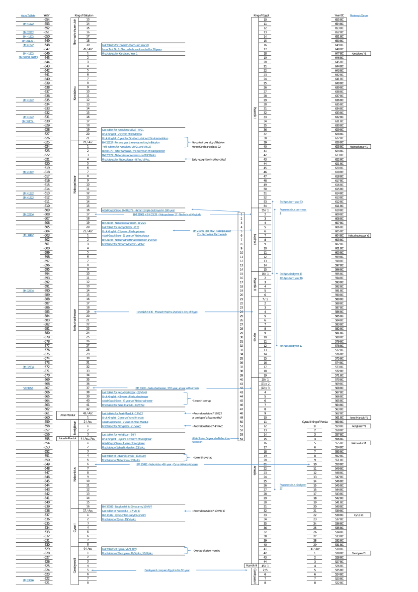
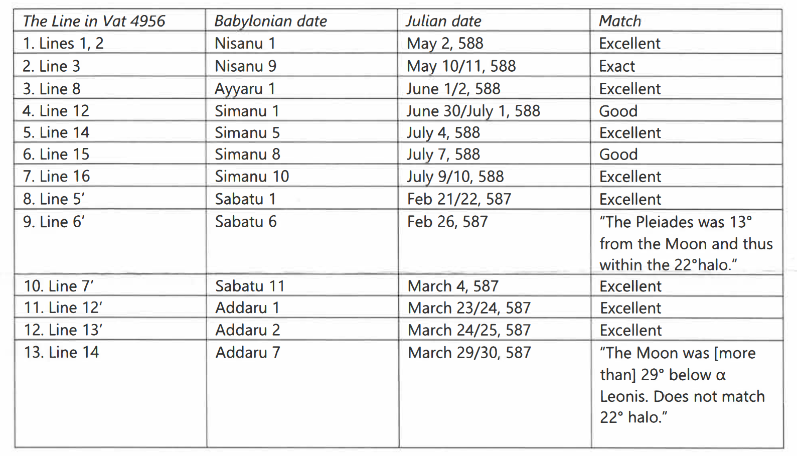

Introduction
The aim of this book is to answer the following questions:
- Why do historians claim the destruction of Jerusalem took place in 587/586 BC?
- Why is there an uncertainty between 587 and 586 BC?
- Why do Jehovah’s Witnesses claim the destruction of Jerusalem actually took place in 607 BC?
About the Author
My name is Jacob Halsey, I am a software engineer, my interest in this topic stems from being encouraged by friends and family to research the biblical prophecies of Daniel, and from having read the ‘Daniel Book’ [1] many years ago. I am not (and have never been) a baptised member of Jehovah’s Witnesses myself, all opinions expressed are my own.
About the Book
This book is generated from markdown files using the mdBook and Pandoc utilities.
The source files are freely available on GitHub. If you notice any errors, have suggestions for improvements, or any other question please raise a ticket on the issues page.
If you are unable to access the materials referenced in this book please look into Sci-Hub and Library Genesis. Also note that some books on the HathiTrust library are only available when accessed from a USA IP address.
References
[1] Pay Attention to Daniel’s Prophecy! Watch Tower Bible and Tract Society, 2006, [Online]. Available: https://wol.jw.org/en/wol/publication/r1/lp-e/dp.
Significance to Jehovah’s Witnesses
The date of the destruction of Jerusalem is used as the foundation of a very important belief to Jehovah’s Witnesses — the ‘end of the Gentile Times’.
The ‘Gentile times’ is an interpretation of a prophecy found in Luke 21:24 combined with Daniel chapter 4. These times are believed to be 2520 years long, starting from the destruction of Jerusalem in 607 BC and ending in 1914 AD [1, p. 215].
According to The Watchtower 1986 [2]:
Approved association with Jehovah’s Witnesses requires accepting the entire range of the true teachings of the Bible, including those Scriptural beliefs that are unique to Jehovah’s Witnesses. What do such beliefs include? … That 1914 marked the end of the Gentile Times and the establishment of the Kingdom of God in the heavens, as well as the time for Christ’s foretold presence.
In addition, the ‘end of the Gentile Times’ in 1914 is also used as a foundation for a number of other interpretations of prophesy in the ‘Time of the End’ [3, p. 286]:
Daniel 12:7: ‘a time, times and half a time’ is interpreted as a period of 1260 days running from December 1914 (release of 1915 year text) to 21 June 1918 (the sentencing of J.F. Rutherford and other directors of the Watch Tower Society) [4, p. 9].
Daniel 12:11: ‘1290 days’ is counted from the January 1919 (the proposal of the League of Nations) until September 1922 (Bible student convention at Cedar Point, Ohio, U.S.A).
Daniel 12:12: ‘the 1,335 days’ is counted from September 1922 (see above) until May 1926 (adoption of ‘A Testimony to the Rulers of the World’, at the London convention).
References
[1] What Does the Bible Really Teach? Watch Tower Bible and Tract Society, 2014, [Online]. Available: https://www.jw.org/en/library/books/bible-teach/.
[2] “Questions From Readers,” The Watchtower Announcing Jehovah’s Kingdom, pp. 30–31, Apr. 1986, [Online]. Available: https://wol.jw.org/en/wol/d/r1/lp-e/1986249.
[3] Pay Attention to Daniel’s Prophecy! Watch Tower Bible and Tract Society, 2006, [Online]. Available: https://wol.jw.org/en/wol/publication/r1/lp-e/dp.
[4] “Daniel’s Prophetic Days and Our Faith,” The Watchtower Announcing Jehovah’s Kingdom, pp. 7–12, Nov. 1993, [Online]. Available: https://wol.jw.org/en/wol/d/r1/lp-e/1993802.
Calendar Basics
The Babylonian Calendar
| Month | Babylonian | Hebrew |
|---|---|---|
| I | Nisanu | Nisan |
| II | Aiaru | Iyyar |
| III | Simanu | Sivan |
| IV | Duzu | Tammmuz |
| V | Abu | Ab |
| VI | Ululu | Elul |
| VII | Tashritu | Tishri |
| VIII | Arahsamnu | Heshvan |
| IX | Kislimu | Kislev |
| X | Tebetu | Tebeth |
| XI | Shabatu | Shebat |
| XII | Addaru | Adar |
The Babylonian calendar was made up of 12 lunar months. The year starts at Nisanu in the Spring; within about 30 days of the vernal equinox [1, p. 131]. However 12 lunar months are about 11 days short of a year, so in order to prevent the months from drifting through the seasons, an intercalary 13th month, either a second Ululu (VI₂) or a second Addaru (XII₂), was occasionally inserted by decree of the King. Prior to approx. 475 BC this was done at irregular intervals, a list of known intercalary months is contained in Babylonian Chronology 626 B.C.-A.D. 75 [2, p. 4].
The Babylonian day began at sunset. Each month starts ‘when the thin crescent of the new moon was first visible in the sky at sunset’ [2, p. 1]. The moon becomes visible between about 15 to 48 hours after conjunction (at Mediterranean latitudes), although first sighting may also be delayed by weather conditions, but not by more than one day [1, p. 131].
Julian and Gregorian Calendars
The Julian calendar was introduced by Julius Caesar in 45 BCE [3]. However, the primary calendar used today is the Gregorian calendar, named after Pope Gregory XII who introduced it in October 1582. It is a minor refinement to the Julian calendar with the aim of bringing the length of an average year closer to an actual solar year, it does so by modifying the rules used for choosing leap years.
The Gregorian calendar uses the following rule: “Every year that is exactly divisible by four is a leap year, except for years that are exactly divisible by 100, but these centurial years are leap years if they are exactly divisible by 400.” the mean length is therefore 365.2425 days. Whereas the Julian calendar has a leap year every 4 years and therefore has a 365.25 day mean length. The actual solar year is approx. 365.2422 days.
In addition to changing the leap years, the Gregorian calendar was offset by a 10 days to restore the date of Easter to the time which it would have been celebrated by early church. In the 20th and 21st century the Julian calendar would be about 13 days ahead of the Gregorian calendar. Note that whilst the Gregorian calendar was quickly adopted in Roman Catholic Europe, it took some time before the rest of the world followed. It was adopted in Great Britain in 1752 and was not adopted in most of Eastern Europe until the early 20th century.
Mapping Babylonian dates to the Julian calendar
For the purposes of astronomy and historical dating it is the standard practice to use the Julian calendar when dealing with dates prior to 15 October 1582, and the Gregorian calendar for later dates. All calendar dates that are used in this book when discussing the Neo-Babylonian era will therefore be using the Julian calendar.
Also note that the year 0 BC / AD did not exist - rather the years progress from 1 BC directly to 1 AD. Therefore, when using negative years there will be a 1-year difference; for example the year -100 is the same year as 101 BC.
References
[1] M. Ossendrijver, “Translating Babylonian Astronomical Diaries and Procedure Texts,” Translating Writings of Early Scholars in the Ancient Near East, Egypt, Greece and Rome: Methodological Aspects with Examples, vol. 344, p. 125, 2016, [Online]. Available: https://www.degruyter.com/view/book/9783110448818/10.1515/9783110448818-005.xml.
[2] W. H. Dubberstein and R. A. Parker, Babylonian Chronology 626 B.C.-A.D. 75. Brown University Press, 1956, [Online]. Available: https://webspace.science.uu.nl/~gent0113/babylon/downloads/babylonian_chronology_pd_1971.pdf.
[3] “Introduction to Calendars,” United States Naval Observatory. 2019, [Online]. Available: https://web.archive.org/web/20190613115330/http://aa.usno.navy.mil/faq/docs/calendars.php.
Standard Babylonian Chronology
This section will look at the sources and methods through which historians have been able to determine and verify the ‘standard chronology’ [1] of the Neo-Babylonian period.
First we will establish a relative chronology, using sources including the Uruk king list, Babylonian Chronicles, Business tablets, and Nabonidus inscriptions, spanning the reigns from Shamash-shum-ukin to Cambyses II. Then using Ptolemy’s canon, and eight unique astronomical texts we can validate and precisely date these reigns on the Julian calendar, producing a timeline for the kings of Babylon.
By doing so I will indirectly answer the first question — why historians claim the destruction took place in 586/587 BC — by showing that Nebuchadnezzar II’s 19th regnal year began in spring 586 BC.
References
[1] W. H. Dubberstein and R. A. Parker, Babylonian Chronology 626 B.C.-A.D. 75. Brown University Press, 1956, [Online]. Available: https://webspace.science.uu.nl/~gent0113/babylon/downloads/babylonian_chronology_pd_1971.pdf.
Uruk King List
Museum number IM 65066 (Iraq Museum), also known as King List 5 [1, p. 97].
The list is a fragment of a tablet, the obverse covers the reigns from Kandalanu to Darius I. The reverse spans from Darius III to Seleucus II, and was therefore inscribed sometime after his reign (226 BC).
Origin: Excavated in winter 1959/60 at Uruk-Warka (W 20030, 10j).
First translated: in 1962 by J. van Dijk [2, p. 53].
Translation
Obverse [3, p. 566]:
[x] years [...]
Other name: [...]
21 years: K[anda]lan
1 year: Sin-shum-lishir
and Sin-shar-ishkun
21 years: Nabopolassar
43 [ye]ars: Nebuchadnezzar (II)
2 [ye]ars: Amel-Marduk
[x] + 2 years, 8 months: Neriglissar
[...] 3 months: Labashi-Marduk
[x] + 15 years: Nabonidus
[9 years: Cy]rus
[8 years: Cambys]es
[36 years: Dari]us
(break)
Chronological Information
| King | Length of rule in Uruk |
|---|---|
| Kandalanu | 21 Years |
| Sin-shumu-lisir and Sinsharishkun | 1 Year |
| Nabopolassar | 21 Years |
| Nebuchadnezzar II | 43 Years |
| Amel-Marduk | 2 Years |
| Neriglissar | 3? Years (Damaged) and 8 Months |
| Labashi-Marduk | 3 Months |
| Nabonidus | 17? Years (Damaged) |
References
[1] A. K. Grayson, “Königslisten und Chroniken. B. Akkadisch,” Reallexikon der Assyriologie, vol. 6, pp. 86–135, 1980, [Online]. Available: http://publikationen.badw.de/de/003999918.
[2] J. Van Dijk, “Die Inschriftenfunde,” Vorläufige Berichte über die Ausgrabungen in Uruk-Warka, vol. 18, pp. 39–62, 1962, [Online]. Available: http://digital.library.stonybrook.edu/cdm/compoundobject/collection/amar/id/78955/rec/1.
[3] J. Pritchard, Ancient Near Eastern texts relating to the Old Testament. Edited by James B. Pritchard. Third edition with supplement. Princeton University Press, 1969.
Babylonian Chronicles
The Babylonian Chronicles are a series of tablets recording historical events. Of the surviving chronicles there are 6 that belong to the Neo-Babylonian era, however they do not span the entire period.
ABC – A.K. Grayson, Assyrian and Babylonian Chronicles (1975)
CM – J.J. Glassner, Chroniques Mésopotamiennes (1993) (translated as Mesopotamian Chronicles, 2004)
BM – British Museum Number
| Name | ABC | CM | BM | Start Year | End Year |
|---|---|---|---|---|---|
| Akitu Chronicle | 16 | 20 | 86379 | Sennacherib ? | Nabopolassar Acc. |
| Early Years of Nabopolassar Chronicle | 2 | 21 | 25127 | Nabopolassar Acc. | Nabopolassar 3 |
| Fall of Nineveh Chronicle | 3 | 22 | 21901 | Nabopolassar 10 | Nabopolassar 18 |
| Late Years of Nabopolassar Chronicle | 4 | 23 | 22047 | Nabopolassar 18 | Nabopolassar 20 |
| Nebuchadnezzar Chronicle | 5 | 24 | 21946 | Nabopolassar 21 | Nebuchadnezzar 11 |
| Third year of Neriglissar Chronicle | 6 | 25 | 25124 | Neriglissar 3 | Neriglissar 3 |
| Nabonidus Chronicle | 7 | 26 | 35382 | Nabonidus Acc. | Nabonidus 17? |
Regarding the early chronicles Grayson says [1, p. 14]:
In conclusion it may be stated that Chronicles 1-7 represent only a small part of a series of late Babylonian chronicles which, like all chronicles of category A, were probably resumes or extracts made from running accounts which were sometimes kept on writing-boards and these running accounts were probably identical with astronomical diaries. The narrative exhibits a narrow outlook restricted to matter of concern to Babylonia, but within these confines the authors are objective. Their main concern is to record what actually happened. Thus one may use these documents as source material for the history of the period with considerable confidence in their reliability.
References
[1] A. Grayson, Assyrian and Babylonian Chronicles. Eisenbrauns, 2000, [Online]. Available: https://books.google.co.uk/books?id=ydcGZA6k5nwC.
Akitu Chronicle
Museum number BM 86379 [1], ABC 16 [2, p. 35], CM 20 [3, p. 212].
Origin: Purchased by the British Museum from an antiquities dealer in 1899.
First Translated: 1924 by S. Smith [4].
Translation
1 For [eight] years during (the reign of) Se[nnacherib],
2 for twelve years (during the reign of) Esar[haddon]—
3 twenty years (altogether)—Bel s[tayed] in Baltil (Ashur) and
4 the Akitu festival did not take place.
5 The accession year of Shamash-shumaukin: In the month Iyyar [Bel]
6 and the gods of Akkad went out from Baltil (Ashur) and
7 on the twenty-fourth day of the month Iyyar they entered Babylon.
8 Nabu and the gods of Borsippa went to Babylon.
9 The sixteenth year of Shamash-shumaukin: From the month Iyyar until the month Tebet
10 the major-domo conscripted troops in Akkad.
11 On the nineteenth day of the month Tebet hostilities began between Assyria and Akkad.
12 The king withdrew before the enemy into Babylon.
13 On the twenty-seventh day of Adar the armies of Assyria and Akkad
14 did battle in Hirit. The army of Akkad
15 retreated from the battlefield and a major defeat was inflicted upon them.
16 (However), there were still hostilities (and) warfare continued.
17 The seventeenth year: There were [insu]rrections in Assyria and Akkad.
18 Nabu did not come from [Borsippa] for the procession of Bel (and)
19 Bel did not come out.
20 The eighteenth year: Nabu did not come from Borsippa for the procession of Bel (and)
21 Bel did not come out.
22 The nineteenth year: Nabu did not come (and) Bel did not come out.
23 The twentieth year: Nabu did not come (and) Bel did not come out.
24 After Kandalanu, in the accession year of Nabopolassar,
25 there were insurrections in Assyria and Akkad.
26 There were hostilities (and) warfare continued.
27 Nabu did not come (and) Bel did not come out.
[2, p. 131]
Key Information
Line 24: After Kandalanu, in the accession year of Nabopolassar.
References
[1] “BM 86379,” The British Museum. [Online]. Available: https://www.britishmuseum.org/collection/object/W_1899-0610-109.
[2] A. Grayson, Assyrian and Babylonian Chronicles. Eisenbrauns, 2000, [Online]. Available: https://books.google.co.uk/books?id=ydcGZA6k5nwC.
[3] J. Glassner and B. Foster, Mesopotamian Chronicles. Society of Biblical Literature, 2004.
[4] S. Smith, Babylonian Historical Texts Relating to the Capture and Downfall of Babylon. Translated by Sidney Smith ... With Illustrations. London: Methuen, 1924.
Early Years of Nabopolassar Chronicle
Museum number BM 25127 [1], ABC 2 [2, p. 17], CM 21 [3, p. 214].
Origin: Purchased by the British Museum from an antiquities dealer in 1898.
First Translated: 1956 by D.J. Wiseman [4, p. 50].
Translation
1 [...] when he/they had sent [...] to Babylon, at night
2 [...] ... they did battle within the city all day.
3 [...] ... of Sin-sharra-ishkun fled to Assyria.
4 He appointed [officials with]in the city. On the twelfth day of the month Elul the army of Assyria
5 [...] entered Shaznaku and set fire to the temple.
6 [...] and in the month Tishri the gods of Kish went to Babylon.
7 The [army of] Assyria went to Nippur and Nabopolassar retreated before them.
8 [The army of As]syria and the Nippureans followed him to Uruk,
9 they did battle against Nabopolassar in Uruk, and retreated before Nabopolassar.
10 In the month Iyyar the army of Assyria went down to Akkad. On the twelfth day of the month Tishri
11 when
10 the army of Assyria
11 had marched against Babylon (and) the Babylonians
12 had come out of Babylon;
11 on that day,
12 they did battle against the army of Assyria,
13 inflicted a major defeat upon the army of Assyria, and plundered them.
14 For one year there was no king in the land (Babylonia). On the twenty-sixth day of the month Marchesvan Nabopolassar
15 ascended the throne in Babylon. The accession year of Nabopolassar: In the month Adar
16-17 Nabopolassar returned to Susa the gods of Susa whom the Assyrians had carried off and settled in Uruk.
18 The first year of Nabopolassar: On the seventeenth day of the month Nisan panic overcame the city.
19 Shamash and the gods of Shapazzu went to Babylon.
20 On the twenty-first day of the month Iyyar the army of Assyria entered Sal[lat] (and) carried off the booty.
21 On the twentieth day <of the month Sivan/Tammuz> the gods of Sippar went to Babylon.
22 On the ninth day of the month Ab Nabopolassar and his army [marched] to Sall[at].
23 He did battle against Sallat but did not capture the city. (Instead) the army of Assyria arrived so
24 he retreated before them and withdrew.
25 [The second year] of Nabopolassar: At the beginning of the month Elul the army of Assyria
26 went down [to Akkad] and camped by the Banitu canal.
27 They did [battle against Nab]opolassar but achieved nothing.
28 [...] ... and they withdrew.
29 [The third year]: On the eighth [day of the month ... ] Der rebelled against Assyria. On the fifteenth day of the month Tishri
30 [...] ... the king of Assyria and his army went down to Akkad and
31 [...] ... and took (it) into Nippur. Afterwards Itti-ili
32 [... he]ard and stationed a garrison in Nippur.
33 [...] he went up [against] Syria and
34 [...]
33 against
34 [...] he ravaged [...] ... and set out for Nineveh.
35 [...] ... who had come to do battle against him
36 [... whe]n they saw him they bowed down before him.
37 [...] ...
38 The rebel king [...]
39 one hundred days [...]
40 ... [( ... )] ... when ... [...]
41 [...] rebel ... [...]
[2, p. 87]
Key Information
Line 14: For one year there was no king in the land (Babylonia)
Lines 14-15:
On the twenty-sixth day of the month Marchesvan Nabopolassar ascended the throne in Babylon
(26/VIII/Acc.)
References
[1] “BM 25127,” The British Museum. [Online]. Available: https://www.britishmuseum.org/collection/object/W_1898-0216-181.
[2] A. Grayson, Assyrian and Babylonian Chronicles. Eisenbrauns, 2000, [Online]. Available: https://books.google.co.uk/books?id=ydcGZA6k5nwC.
[3] J. Glassner and B. Foster, Mesopotamian Chronicles. Society of Biblical Literature, 2004.
[4] D. Wiseman, Chronicles of Chaldean Kings (626-556 B.C.): In the British Museum. British Museum, 1956, [Online]. Available: http://digital.library.stonybrook.edu/cdm/ref/collection/iraqiarcheology/id/85.
Fall of Nineveh Chronicle
Museum number BM 21901 [1], ABC 3 [2, p. 18], CM 22 [3, p. 218].
Origin: Purchased by the British Museum from an antiquities dealer in 1896.
First Translated: 1923 by C.J. Gadd [4, p. 37].
Translation
1 The tenth year of Nabopolassar: In the month Iyyar he mustered the army of Akkad and marched along the bank of the Euphrates.
2 The Suheans and the Hindaneans did not do battle against him (but) placed their tribute before him.
3 In the month Ab the army of Assyria prepared for battle in Gablini and Nabopolassar went up against them.
4 On the twelfth day of the month Ab he did battle against the army of Assyria and the army of Assyria retreated before him. He inflicted a major defeat upon Assyria (and)
5 plundered them extensively.
6 He captured
5 the Manneans who had come to their (i.e. the Assyrians') aid and the Assyrian officers.
6 On that same day he captured Gablini. In the month Ab the king of Akkad (and) his army
7 went upstream to Mane, Sahiri, and Balihu. He plundered them,
8 sacked them extensively, (and) abducted their gods. In the month Elul the king of Akkad and his army
9 returned and on his way he took (the people of) Hindanu and its gods to Babylon.
10 In the month Tishri the army of Egypt and the army of Assyria went after the king of Akkad as far as Gablini but
11 they did not overtake the king of Akkad (so) they withdrew. In the month Adar the army of Assyria and the army of Akkad
12 did battle against one another at Madanu, (a suburb) of Arraphu, and the army of Assyria
13 retreated before the army of Akkad. They (the army of Akkad) inflicted a major defeat upon them (the Assyrian army) and drove them (back) to the Zab River.
14 They captured their chariots and horses and plundered them extensively.
15 They took many [...] with them across the Tigris and brought (them) into Babylon.
16 [The eleventh year: The king] of Akkad mustered his army, marched along the bank of the Tigris, and in the month Iyyar he encamped against Baltil (Ashur).
17 [On the Nth day] of the month Sivan he did battle against the city but he did not capture it. The king of Assyria mustered his army,
18 pushed the king of Akkad back from Baltil (Ashur), and marched after him as far as Takritain, a city on the bank of the Tigris.
19 The king of Akkad stationed his army in the fortress of Takritain. The king of Assyria and his army
20 encamped against the army of the king of Akkad which was stationed in Takritain and
21 did battle against them for ten days. But he (the king of Assyria) did not capture the city. (Instead) the army of the king of Akkad, which had been stationed in the fortress,
22 inflicted a major defeat upon Assyria. The king of Assyria and his army [turned] and went home.
23 In the month Marchesvan the Medes went down to Arraphu and [...]
24 The twelfth year: In the month Ab the Medes, after they had, marched against Nineveh[...
25 ...] hastened and they captured Tarbisu, a city in the district of Nineveh. [...]
26 They went along [the T]igris and encamped against Baltil (Ashur). They did battle against the city and [...]
27 destroyed [...] ... They inflicted a terrible defeat upon a great people, plundered and [sacked them].
28 [The king of A]kkad and his army, who had gone to help the Medes, did not reach the battle (in time). The city ... [...]
29 [The king of Akka]d and C[yax]ares (the king of the Medes) met one another by the city (and) together they made an entente cordiale.
30 [... Cyaxa]res and his army went home. The king of Akkad and his army went home.
31 [The thirteenth year: In the month Iyya]r the Suheans rebelled against the king of Akkad and became belligerent.
32 [The king of Akkad] mustered his army and marched to Suhu. On the fourth day of the month Sivan
33 he did [battle against] Rahilu, a city which is (on an island) in the middle of the Euphrates, and at that time he captured the city.
34 He built his [...] The men who (live) on the bank of the Euphrates came down to him.
35 [...] he encamped [against] Anat (and) the siege engines
36 [he brought over]
35 fr[om] the western side
36 [...] ... he brought the siege engines up to the wall. He did battle against the [city] and captured it.
37 [... the king of] Assyria and his army came down and ... the king of Akkad and his army. He (the king of Akkad) went home.
38 [The fourteenth year]: The king of Akkad mustered his army [and marched to ...] The king of the Umman-manda
39 [marched]
38 towards the king of Akkad
39 [...] ... they met one another.
40 [The k]ing of Akkad ... [... Cy]axares ... brought across and
41 they marched along the bank of the Tigris. [... they encamp]ed against Nineveh.
42 From the month Sivan until the month Ab—for three [months—...] ...
43 they subjected the city to a heavy siege. [On the Nth day] of the month Ab [...] they inflicted a major [defeat upon a g]reat [people].
44 At that time Sin-sharra-ishkun, king of Assyria, [died] ... [...] ...
45 They carried off the vast booty of the city and the temple (and) [turned] the city into a ruin heap [...]
46 of Assyria escaped from the enemy and ... the king of Akkad ... [...]
47 On the twentieth day of the month Elul Cyaxares and his army went home. After he had gone the king of Akkad [despatched his army and]
48 they marched to Nasibin. Plunder and exiles ... [...]
49 and they brought (the people of) Rusapu to the king of Akkad at Nineveh. [On the Nth day of the] month [... Ashur-uballit (II)]
50 ascended the throne in Harran to rule Assyria. Up until [the Nth day of] the month [ ... ]
51 in Nineveh [... f]rom the twentieth day of the month [...] the king of [...]
52 set out and in [...]
53 The fifteenth year: In the month Tam[muz the ki]ng of Akkad [mustered his army and ...]
54 marched to Assyria. [...] victoriously [he marched about] of ... [...] ... [...]
55 and he captured Shu ... [...], plundered it, (and) [carried off] its va[st] booty.
56 In the mon[th Marchesva]n the king of Akkad took the lead of his army (personally) and [marched] against Ruggulitu.
57 He did battle against the city and on the twenty-eighth day of the month Marchesvan captured it. ... [He] did not [leav]e a single man (alive). [...] he went [home].
58 The sixteenth year: In the month Iyyar the king of Akkad mustered his army and marched to Assyria. From [the month ...] until the month Marchesvan
59 he marched about victoriously in Assyria. In the month Marchesvan the Umman-manda, [who] had come [to hel]p the king of Akkad,
60 put their armies together and
61 marched
60 to Harran [against Ashur-uball]it (II) who had ascended the throne in Assyria.
61. Fear of the enemy overcame Ashuruballit (II) and the army of Eg[ypt which] had come [to help him] and they aban[doned] the city [...] they crossed.
63 The king of Akkad reached Harran and [...] he captured the city.
64 He carried off the vast booty of the city and the temple. In the month Adar the king of Akkad left their [...]
65 He went home. The Umman-manda, who had come to help the king of Akkad, withdrew.
66 <The seventeenth year>: In the month Tammuz Ashur-uballit (II), king of Assyria, the large army of Egypt [...]
67 crossed the river (Euphrates) and marched against Harran to conquer (it). [...] they [capture]d (it).
68 They defeated the garrison which the king of Akkad had stationed inside. When they had defeated (it) they encamped against Harran.
69 Until the month Elul they did battle against the city but achieved nothing. (However) they did not withdraw.
70 The king of Akkad went to help his army and ... [...] he went up [to] Izalla and
71 the numerous cities in the mountains ... [...] he set fire to their [...]
72 At that time the army of [...]
73 [ma]rched
72 as far as the district of Urartu.
73 In the land ... [...] they plundered their [...]
74 The garrison which the king of [... had stationed in it set] out.
75 They went up to [...] The king of Akkad went home.
76 In the [eighteenth] ye[ar : In the month Elu]l the king of Akkad mustered his army.
77 (......)
78 Let [the one who] loves Nabu and Marduk keep (this tablet) and not let (it) stray into (other) hands.
[2, p. 91]
Key Information
Lines 38-44: In his 14th year Nabopolassar laid siege to Nineveh, during which the Assyrian king Sinsharishkun died.
References
[1] “BM 21901,” The British Museum. [Online]. Available: https://www.britishmuseum.org/collection/object/W_1896-0409-6.
[2] A. Grayson, Assyrian and Babylonian Chronicles. Eisenbrauns, 2000, [Online]. Available: https://books.google.co.uk/books?id=ydcGZA6k5nwC.
[3] J. Glassner and B. Foster, Mesopotamian Chronicles. Society of Biblical Literature, 2004.
[4] C. J. Gadd, The Fall of Nineveh: The Newly Discovered Babylonian Chronicle, No. 21,901, in the British Museum. London: Printed by order of the Trustees, sold at the British Museum, 1923, [Online]. Available: https://doi.org/10.1017/S0035869X00064716.
Nebuchadnezzar Chronicle
(Also known as the Jerusalem Chronicle).
Museum number BM 21946 [1], ABC 5 [2, p. 19], CM 24 [3, p. 226].
Origin: Purchased by the British Museum from an antiquities dealer in 1896.
First Translated: 1956 by D.J. Wiseman [4, p. 67].
Translation
Obverse
1 [The twenty-first year]: The king of Akkad stayed home (while) Nebuchadnezzar (II), his eldest son (and) the crown prince,
2 mustered [the army of Akkad]. He took his army's lead and marched to Carchemish which is on the bank of the Euphrates.
3 He crossed the river [to encounter the army of Egypt] which was encamped at Carchemish.
4 [...] They did battle together. The army of Egypt retreated before him.
5 He inflicted a [defeat] upon them (and) finished them off completely.
6 In the district of Hamath
7 the army of Akkad overtook
5 the remainder of the army of [Egypt
6 which] managed to escape [from] the defeat and which was not overcome.
7 They (the army of Akkad) inflicted a defeat upon them (so that) a single (Egyptian) man [did not return] home.
8 At that time Nebuchadnezzar (II) conquered all of Ha[ma]th.
9 For twenty-one years Nabopolassar ruled Babylon.
10 On the eighth day of the month Ab he died. In the month Elul Nebuchadnezzar (II) returned to Babylon and
11 on the first day of the month Elul he ascended the royal throne in Babylon.
12 In (his) accession year Nebuchadnezzar (II) returned to Hattu. Until the month Shebat
13 he marched about victoriously
12 in Hattu.
13 In the month Shebat he took the vast booty of Hattu to Babylon.
14 In the month Nisan he took the hand of Bel and the son of Bel (and) celebrated the Akitu festival.
15 The first year of Nebuchadnezzar (II): In the month Sivan he mustered his army and
16 marched to Hattu. Until the month Kislev he marched about victoriously in Hattu.
17 All the kings of Hattu came into his presence and he received their vast tribute.
18 He marched to Ashkelon and in the month Kislev he captured it,
19 seized its king, plundered [and sac]ked it.
20 He turned the city into a ruin heap. In the month Shebat he marched away and [returned] to Bab[ylon].
21 The sec[ond year]: In the month Iyyar the king of Akkad strengthened his large army and [marched to Hattu].
22 He encamped [...] ... large siege towers he moved acr[oss ...
23 ... from the month] Iyyar until the month [... he marched about victoriously in Hattu].
Lacuna
Reverse
Lacuna
1 [...] ... [...]
2 [The third year: In the month ..., on] the thirteenth [day] Nabu-shumu-lishir [...]
3 [In the month ... the king of Akka]d mustered his army and [marched] to Hattu. [...
4 ...] He brought the vast [booty] of Hattu into Akkad. [...]
5 The fourth year: The king of Akkad mustered his army and marched to Hattu. [He marched about victoriously] in Hattu.
6 In the month Kislev he took his army's lead and marched to Egypt. (When) the king of Egypt heard (the news) he m[ustered] his army.
7 They fought one another in the battlefield and both sides suffered severe losses (lit. they inflicted a major defeat upon one another). The king of Akkad and his army turned and [went back] to Babylon.
8 The fifth year: The king of Akkad stayed home (and) refitted his numerous horses and chariotry.
9 The sixth year: In the month Kislev the king of Akkad mustered his army and marched to Hattu. He despatched his army from Hattu and
10 they went off to the desert. They plundered extensively the possessions, animals, and gods of the numerous Arabs. In the month Adar the king went home.
11 The seventh year: In the month Kislev the king of Akkad mustered his army and marched to Hattu.
12 He encamped against the city of Judah and on the second day of the month Adar he captured the city (and) seized (its) king.
13 A king of his own choice he appointed in the city (and) taking the vast tribute he brought it into Babylon.
14 The eighth year: In the month Tebet the king of Akkad [marched] towards Hattu as far as Carchemish. [...]
15 ... [...] ... In the month Shebat [the king went] home.
16 The ninth year: [In the month ... the king of Akk]ad and [his] army [marched] along the bank of the Tigris [...]
17 The king of [...] ... [...]
18 The king of Ak[kad] ... [...] ... [...]
19 He encamped on the bank of the Tigris. [There was] a distance of one day's march between them.
20 [The k]ing of E[lam] took fright and fear overcame him so he we[nt] home.
21 The tenth [year: The king of Akk]ad stayed home, From the month Kislev until the month Te bet there [was] a rebellion in Akkad.
22 [...] ... he put his large [army] to the sword (and) conquered his foe.
23 [...] He marched [to] Hattu. The kings and ... [...] ...
24 [came] and [he received] their vast booty. He returned to B[abylon].
25 [The eleventh year]: In the month Kislev the king of Akkad [mustered his] army and
26 marched [to H]attu.
[2, p. 99]
Key Information
Obv. Lines 9-10:
For twenty-one years Nabopolassar ruled Babylon. On the eighth day of the month Ab he died.
(8/V/21).
Obv. Line 10-11:
In the month Elul Nebuchadnezzar (II) returned to Babylon and on the first day of the month Elul he ascended the royal throne in Babylon.
(1/VI/Acc.).
Notes
In the earlier translation by Wiseman [4, p. 67] victoriously (Obv. 13, 16, 23, Rev. 5) was translated as ‘unopposed’, regarding this Albright says [5, p. 31]:
the adverb means “victoriously,” and suggests that the Babylonians met with stiff resistance from both the local population and its Egyptian suzerains and allies.
There is also a difference in Obv. 8 where Wiseman put:
Nebuchadrezzar conquered the whole area of the Ḫatti-country which has
been corrected to all of Ha[ma]th.
References
[1] “BM 21946,” The British Museum. [Online]. Available: https://www.britishmuseum.org/collection/object/W_1896-0409-51.
[2] A. Grayson, Assyrian and Babylonian Chronicles. Eisenbrauns, 2000, [Online]. Available: https://books.google.co.uk/books?id=ydcGZA6k5nwC.
[3] J. Glassner and B. Foster, Mesopotamian Chronicles. Society of Biblical Literature, 2004.
[4] D. Wiseman, Chronicles of Chaldean Kings (626-556 B.C.): In the British Museum. British Museum, 1956, [Online]. Available: http://digital.library.stonybrook.edu/cdm/ref/collection/iraqiarcheology/id/85.
[5] W. F. Albright, “The Nebuchadnezzar and Neriglissar Chronicles,” Bulletin of the American Schools of Oriental Research, no. 143, pp. 28–33, 1956, [Online]. Available: https://www.jstor.org/stable/1355927.
Nabonidus Chronicle
Museum number BM 35382 [1], ABC 7 [2, p. 21], CM 26 [3, p. 232].
Origin: Purchased by the British Museum from an antiquities dealer in 1879.
First Translated: 1924 by S. Smith [4].
Translation
i
1 [...] ... [...]
2 [...] ... he carried, the king
3 [... of] their land he/they brought to Babylon.
4 [...] ...
5 [...] ... he did not carry
6 [...] ... their whole family
7 [...] ... the king mustered his army and
8 [marched]
7 to Hume.
8 [...] ...
9 [The second year: ...] in the month Tebet, in Hamath it was cold.
10 [...] ...
11 [The third year: ... the mon]th Ab the Ammananu mountain
12 [...] ... orchards, all of the fruit
13 [...] ... from within them into Babylon
14 [... became il]l but recuperated. In the month Kislev the king
15 [mustered]
14 his army
15 [...] ... and to Nabu Bel-dan, brother
16 [...] ... of Amurru to
17 [...] they/he encamped [against A]dummu
18 [...] ... the large army
19 [... the g]ate of RUGdini
20 [...] ... he killed/defeated him
21 [...] ...
22 [...] army
Lacuna
ii
1 (Astyages) mustered (his army) and marched against Cyrus (II), king of Anshan, for conquest [...]
2 The army rebelled against Astyages and he was taken prisoner. Th[ey handed him over] to Cyrus (II). ([...])
3 Cyrus (II) <marched> to Ecbatana, the royal city. The silver, gold, goods, property, [...]
4 which he carried off as booty (from) Ecbatana he took to Anshan. The goods (and) property of the army of [...]
5 The seventh year: The king (was) in Tema (while) the prince, his officers, (and) his army (were) in Akkad. [The king]
6 did not come to Babylon
5 [in the month Nisan].
6 Nabu did not come to Babylon. Bel did not come out. The [Akitu festiv]al [did not take place].
7 The offerings
8 were presented
7 (to) the gods of Babylon and Borsippa a[s in normal times] in Esagil and Ezida.
8 The urigallû-priest made a libation and inspected the temple. ([...])
9 The eighth year: (Blank space)
10 The ninth year: Nabonidus, the king, (was) <in> Tema (while) the prince, the officers, (and) the army (were) in Akkad. The king
11 did not come
10 to Babylon in the month Nisan.
11 Nabu did not come to Babylon. Bel did not come out. The Akitu festival did not take place.
12 The offerings were presented (to) the gods of <Babylon> and Borsippa as in normal times in Esagil and Ezida.
13 On the fifth day of the month Nisan the queen mother
14 died
13 in Dur-karashu which (is on) the bank of the Euphrates upstream from Sippar.
14 The prince and his army were in mourning for three days (and) there was (an official) mourning period. In the month Sivan
15 there was (an official) mourning period for the queen mother
14 in Akkad.
15 In the month Nisan Cyrus (II), king of Parsu, mustered his army and
16 crossed the Tigris below Arbail. In the month Iyyar [he marched] to Ly[dia].
17 He defeated its king, took its possessions, (and) stationed his own garrison (there) [...]
18 Afterwards the king and his garrison was in it([...])
19 The tenth year: The king (was) in Tema (while) the prince, the officers, and his army (were) in Akkad. The king [did not come to Babylon in the month Nisan].
20 Nabu did not come to Babylon. Bel did not come out. The Akitu festival did not take place. The offerings
21 were presented (to) the gods of Babylon and Borsippa as in normal times
20 in E[sagil and Ezida].
21 On the twenty-first day of the month Sivan [...]
22 of Elammya in Akkad ... [...] the district governor in Uru[k ...]
23 The eleventh year: the king (was) in Tema (while) the prince, the officers, and his army (were) in Akkad. [The king did not come to Babylon in the month Nisan].
24 [Nabu] did not come [to Bab]ylon. Bel did not come out. The Akitu festival did not take place. The of[ferings]
25 were presented [(to) the gods of Bab]ylon and Borsippa [as in normal times
24 in Esagil and Ezida].
Lacuna
iii
Lacuna
1 [...] killed/defeated. The river ... [...]
2 [...] ... Ishtar Uruk [...]
3 [...] of the Sea[land ...]
4 [...] ... [...]
5 [The seventeenth year: ... N)abu [came] from Borsippa for the procession of [Bel. Bel came out].
6 [... In the month] Te bet the king entered Eturkalamma. In the temple [...]
7 [...] ... He made a libation of wine ... [...]
8 [... B]el came out. They performed the Akitu festival as in normal times. In the month [...]
9 [... the gods] of Marad, Zababa and the gods of Kish, Ninlil [and the gods of]
1O Hursagkalamma entered Babylon. Until the end of the month Elul the gods of Akkad [...]
11 which are above the ... and below the ... were entering Babylon. The gods of Borsippa, Cuthah,
12 and Sippar did not enter (Babylon). In the month Tishri
13 when
12 Cyrus (II)
13 did
12 battle at Opis on the [bank of]
13 the Tigris against the army of Akkad, the people of Akkad
14 retreated. He carried off the plunder (and) slaughtered the people. On the fourteenth day Sippar was captured without a battle.
15 Nabonidus fled. On the sixteenth day Ugbaru, governor of the Guti, and the army of Cyrus (II)
16 entered Babylon
15 without a battle.
16 Afterwards, after Nabonidus retreated, he was captured in Babylon. Until the end of the month the shield-(bearing troops)
17 of the Guti surrounded the gates of Esagil. (But)
18 there was no
17 interruption (of rites) in Esagil or the (other) temples
18 and no date (for a performance) was missed. On the third day of the month Marchesvan Cyrus (II) entered Babylon.
19 ... were filled before him. There was peace in the city while Cyrus (II)
20 spoke
19 (his) greeting to
20 all of
19 Babylon.
20 Gubaru, his district officer, appointed the district officers in Babylon.
21 From the month Kislev to the month Adar the gods of Akkad which Nabonidus had brought down to Babylon
22 returned to their places. On the night of the eleventh of the month Marchesvan Ugbaru died. In the month [...]
23 the king's wife died. From the twenty-seventh of the month Adar to the third of the month Nisan [there was] (an official) mourning period in Akkad.
24 All of the people bared their heads. On the fourth day when Cambyses (II), son of C[yrus (II)],
25 went to Egidrikalammasummu the ...official of Nabu who ... [...]
26 When he came, because of the Elamite ... the hand of Nabu [...] ... [...]
27 [sp]ears and quivers from [...] ... crown prince to the wo[rk ...]
28 [...] Nabu to Esagil ... before Bel and the son of B[el ...]
iv
Lacuna
1 [...] ...
2 [...] Babylon, water
3 [...] ... clouded over
4 [...] ... the gate was ruined
5 [...] Eanna of EZEN-X-KAS
6 [...] bit mummu, he went out
7 [...] ...
8 [...] in Babylon ...
9 [...] Babylon he strove.
[2, p. 105]
Key Information
ii Lines 1-2:
(Astyages) mustered (his army) and marched against Cyrus (II), king of Anshan, for conquest [...] The army rebelled against Astyages and he was taken prisoner. Th[ey handed him over] to Cyrus (II).,
Note this is before the seventh year of Nabonidus (ii Line 5) (likely
the sixth).
iii Line 14: the fourteenth day Sippar was captured without a battle
(14/VII).
iii Lines 15-16:
On the sixteenth day Ugbaru, governor of the Guti, and the army of Cyrus (II) entered Babylon
(16/VII).
iii Line 19:
On the third day of the month Marchesvan Cyrus (II) entered Babylon.
(3/VIII).
References
[1] “BM 35382,” The British Museum. [Online]. Available: https://www.britishmuseum.org/collection/object/W_Sp-II-964.
[2] A. Grayson, Assyrian and Babylonian Chronicles. Eisenbrauns, 2000, [Online]. Available: https://books.google.co.uk/books?id=ydcGZA6k5nwC.
[3] J. Glassner and B. Foster, Mesopotamian Chronicles. Society of Biblical Literature, 2004.
[4] S. Smith, Babylonian Historical Texts Relating to the Capture and Downfall of Babylon. Translated by Sidney Smith ... With Illustrations. London: Methuen, 1924.
Business Tablets
The majority of recovered cuneiform texts were written for administrative, legal, and economic purposes. By looking at the dates that they contain, combined with other data such as the city they were from, can show us useful chronological information.
For example the dates have been used for this purpose in the following publications:
- Babylonian Chronology 626 B.C.-A.D. 75 [1, p. 10]
- A Survey of Dated Babylonian Economic Texts, 721-626 B.C. [2] [3]
- Part II: A Survey of Babylonian Texts, 626-605 B.C. [4]
A more complete survey has been published by J Everling [5], originally available here in text format. From the survey I have generated bar charts counting the tablets dated to each year of each King’s reign.
Shamash-shum-ukin

Latest dated texts:
- 28/V/20 - Borsippa, BM 134973 [6] (K.142 [2, p. 36])
- 30/V/20 - Babylon, BM 40577 [7] (K.143 [2, p. 36])
The tablets therefore show that Shamash-shum-ukin ruled for 20 years.
Kandalanu
Earliest dated texts:
- 6/X/1 - Babylon, VAT 2963 (L.1 [2, p. 39])
- 10/XII/1 - Sippar?, BM 49326 [8] (L.2 [2, p. 39])
Latest dated texts:
- 25/II/21 - Borsippa, BM 26377 [9] (L.158a [3, p. 103])
- 8/III/21 - Sippar?, BM 50270 [10] (L.159 [2, p. 49])
- ?/VIII/21 - Babylon, BM 36514 [11] “After Kandalanu” [12, p. 91]
- 2/VIII/22 - Babylon, BM 40039 [13] “After Kandalanu” [12, p. 91]
The tablets therefore show that Kandalanu died somewhere between month III and VIII of his 21st year, and that during the 22nd year there was no other king in Babylon [14, p. 244].
Nabopolassar
Earliest dated texts:
- 13?/II/Acc - ?, NCBT 557 [15]
- 22/VI/Acc - Sippar? BM 49656 [16]
According to Wiseman: [12, p. 93]
The Chronicle (B.M. 25127, 11. I4-I5) expressly states that Nabopolassar sat on the throne of Babylon on the 26th of Marcheswan [VIII] … Unless a scribal error is assumed it would seem, therefore, that Nabopolassar was acknowledged king at least at Sippar which had become independent of Assyria before the final battle at Babylon.
Latest dated texts:
- 1/V/21 - KUR.A.DAN.ŠU, A5302 [1, p. 12]
- 20/V/21 - ?, PTS 2761 (T.21.14 [4])
The tablets therefore show that Nabopolassar ruled for 21 years.
Nebuchadnezzar II
Earliest dated texts:
- 12/VI/Acc - Uruk?, (YOS 17, 153 [17])
- 18/VI/Acc - Sippar, BM 49524 [18] [12, p. 84]
Latest dated texts:
- 21/VI/43 - Uruk, NCBT 286 [15, p. 44]
- 26/VI/43 - Uruk, AO 06847 (TCL 12, 58 [19])
The tablets therefore show that Nebuchadnezzar II ruled for 43 years.
Amel-Marduk
Earliest dated texts:
- ?/V/Acc - Sippar, BM 58872 [20]
- 20/V/Acc - Sippar, BM 75322 [21]
Note that these texts would overlap with the dates for Nebuchadnezzar II by one month. R.H. Sack suggests that Nebuchadnezzar shared a brief co-regency with his son before his death [22, p. 3], which Wiseman agrees ‘is certainly possible’ [23, p. 451].
However, Weisberg disagrees in his review of Sack’s book [24, p. 68]:
a possible co-regency of Nebuchadnezzar and Amēl-Marduk does not seem conclusive. … The dates we have for the end of one rule and the beginning of another must be used with an understanding of the human factors that led to their recording. An Uruk scribe still dating texts to the reign of a deceased king (Nebuchadnezzar) might not have known what was happening at the court. A Sippar scribe dating texts to Amēl-Marduk might have picked up the news more quickly.

Latest dated texts:
- 17/V/2 - Babylon? (BE 8/1, 34. [25, p. 76])
- 19/X/2 - Sippar, BM 61325 [26] (Cat.BM 7 [27, p. 36])
Note that the last date (month X) is an anomaly since of 23 texts from Amel-Marduks second year it is the only one dated later than month V.
The tablets therefore show that Amel-Marduk ruled for 2 years.
Neriglissar
Earliest dated texts:
- 4/II/Acc - Sippar, BM 75489 [28]
- 21/V/Acc - Babylon, YBC 3765 [29, p. 67]
Note that the first date (month II) is an anomaly since of 40 texts from Neriglissar’s accession year it is the only one dated prior to month V; it is possibly a mistake [30, p. 228].

Latest dated texts:
- 2/I/4 - Shahrinu, BM 41401 [31]
- 6/I/4 - Uruk, YBC 3433 [15, p. 44]
The tablets therefore show that Neriglissar ruled for 4 years.
Labashi-Marduk
Earliest dated texts:
- 23/I/Acc - Uruk, NBC 4534 [15, p. 44]
- 12/II/Acc - Sippar, BM 67271 [32]
Latest dated texts:
- 9/III/Acc - Sippar (EKBK 15 [33, p. 18])
- 11/III/Acc - Uruk, YBC 3817 [15, p. 44]
The tablets therefore show that Labashi-Marduk only ruled for part of his accession year.
Nabonidus
Earliest dated texts:
- 15/II/Acc - Našušakuna, (Clay BE 8/1, 39 [25, p. 32])
- 18/III/Acc - Sippar, BM 75214 [34]
Latest dated texts:
- 17/VII/17 - Uruk (GCBC 528, GCCI 1, 390 [35, p. 67])
- 10/VIII/17 - Uruk, BM 74972 [36]
The tablets therefore show that Nabonidus ruled for 17 years.
Cyrus II
Earliest dated texts:
- 19/VII/Acc - Sippar, BM 56154 [37]
- ?/VII/Acc - Sippar, (Strassmaier, Cyr 1890, 1 [38])

Latest dated texts:
- 19/VIII/9 - Hursagkalamma, (OECT 10, 123 [39, p. 12])
- 26/XI/9 - Uruk, YBC 3985 (YOS 7, 84 [40, p. 45])
The tablets therefore show that Cyrus ruled for 9 years.
Cambyses II
Earliest dated texts:
- 12/VI/Acc - Babylon, (Strassmaier, Camb 1890, 1 [41])
- 16/VI/Acc - Babylon, (Strassmaier, Camb 1890, 2 [41])
Note there is an overlap between the tablets dated to Cambyses in month VI, with the tablets dated in later months to Cyrus suggesting a co-regency [42, p. 93] although this is disputed [43].
List of Abbreviations
A = tablets in the collections of the Oriental Institute, University of Chicago
AO = tablets in the collections of the Musée du Louvre
BM = British Museum
NCBT = tablets in the Babylonian Collection, Yale University Library
PTS = tablets in the collection of the Princeton Theological Seminary
VAT = tablets in the collections of the Staatliche Museen, Berlin
YBC = tablets in the Babylonian Collection, Yale University Library
References
[1] W. H. Dubberstein and R. A. Parker, Babylonian Chronology 626 B.C.-A.D. 75. Brown University Press, 1956, [Online]. Available: https://webspace.science.uu.nl/~gent0113/babylon/downloads/babylonian_chronology_pd_1971.pdf.
[2] J. A. Brinkman and D. A. Kennedy, “Documentary Evidence for the Economic Base of Early Neo-Babylonian Society: A Survey of Dated Babylonian Economic Texts, 721-626 B.C.” Journal of Cuneiform Studies, vol. 35, no. 1, pp. 1–90, 1983, [Online]. Available: http://www.jstor.org/stable/3515942.
[3] J. A. Brinkman and D. A. Kennedy, “Supplement to the Survey of Dated Neo-Babylonian Economic Texts, 721-626 B.C. (JCS 35 [1983] 1-90),” Journal of Cuneiform Studies, vol. 38, no. 1, pp. 99–106, 1986, [Online]. Available: http://www.jstor.org/stable/1359954.
[4] D. A. Kennedy, “Documentary Evidence for the Economic Base of Early Neo-Babylonian Society: Part II: A Survey of Babylonian Texts, 626-605 B.C.” Journal of Cuneiform Studies, vol. 38, no. 2, pp. 172–244, 1986, [Online]. Available: http://www.jstor.org/stable/1359799.
[5] J. Everling, “Materials for the Study of First Millennium B.C. Babylonian Texts. Volume 1. Chronological List of Babylonian Texts from the First Millennium B.C. Babylonia.” The Online Book Series of The Department of Ancient History, The University of Pécs., 2013, [Online]. Available: http://okor.btk.pte.hu/sites/okor.btk.pte.hu/files/files/SEAL/sea-l_3_jeverling_materials_vol1.pdf.
[6] “BM 134973,” The British Museum. [Online]. Available: https://www.britishmuseum.org/collection/object/W_1968-0422-8.
[7] “BM 40577,” The British Museum. [Online]. Available: https://www.britishmuseum.org/collection/object/W_1881-0428-119.
[8] “BM 49326,” The British Museum. [Online]. Available: https://www.britishmuseum.org/collection/object/W_1882-0323-317.
[9] “BM 26377,” The British Museum. [Online]. Available: https://www.britishmuseum.org/collection/object/W_1898-0514-195.
[10] “BM 50270,” The British Museum. [Online]. Available: https://www.britishmuseum.org/collection/object/W_1882-0323-1261.
[11] “BM 36514,” The British Museum. [Online]. Available: https://www.britishmuseum.org/collection/object/W_1880-0617-241.
[12] D. Wiseman, Chronicles of Chaldean Kings (626-556 B.C.): In the British Museum. British Museum, 1956, [Online]. Available: http://digital.library.stonybrook.edu/cdm/ref/collection/iraqiarcheology/id/85.
[13] “BM 40039,” The British Museum. [Online]. Available: https://www.britishmuseum.org/collection/object/W_1881-0201-3.
[14] N. Na’aman, “Chronology and History in the Late Assyrian Empire (631—619 B.C.),” Zeitschrift für Assyriologie und Vorderasiatische Archäologie, vol. 81, nos. 1-2, pp. 243–267, 1991, [Online]. Available: https://doi.org/10.1515/zava.1991.81.1-2.243.
[15] A. Goetze, “Additions to Parker and Dubberstein’s Babylonian Chronology,” Journal of Near Eastern Studies, vol. 3, no. 1, pp. 43–46, 1944, [Online]. Available: http://www.jstor.org/stable/542400.
[16] “BM 49656,” The British Museum. [Online]. Available: https://www.britishmuseum.org/collection/object/W_1882-0323-647.
[17] D. Weisberg and R. Dougherty, Texts from the Time of Nebuchadnezzar, vol. 17. Yale University Press, 1980.
[18] “BM 49524,” The British Museum. [Online]. Available: https://www.britishmuseum.org/collection/object/W_1882-0323-515.
[19] G. Contenau, Contrats neo-babyloniens, vol. 12. P. Geuthner, 1927.
[20] “BM 58872,” The British Museum. [Online]. Available: https://www.britishmuseum.org/collection/object/W_1882-0714-3281.
[21] “BM 75322,” The British Museum. [Online]. Available: https://www.britishmuseum.org/collection/object/W_1883-0118-AH-655.
[22] R. Sack, Amēl-Marduk, 562-560 B.C. A Study Based on Cuneiform, Old Testament, Greek, Latin and Rabbinical Sources, vol. 4. Butzon & Bercker, 1972.
[23] D. J. Wiseman, Bulletin of the School of Oriental and African Studies, University of London, vol. 37, no. 2, pp. 450–452, 1974, [Online]. Available: http://www.jstor.org/stable/612590.
[24] D. B. Weisberg, Journal of Near Eastern Studies, vol. 35, no. 1, pp. 67–69, 1976, [Online]. Available: http://www.jstor.org/stable/544838.
[25] A. T. Clay, The Babylonian Expedition of the University of Pennsylvania: Series A, Cuneiform Texts, vol. 8. Department of archaeology, University of Pennsylvania, 1908, [Online]. Available: https://archive.org/details/cu31924026432462.
[26] “BM 61325,” The British Museum. [Online]. Available: https://www.britishmuseum.org/collection/object/W_1882-0918-1300.
[27] E. Leichty and A. Grayson, Catalogue of the Babylonian Tablets in the British Museum. Volume VII: Tablets from Sippar 2, vol. 7. British Museum Publications, 1987.
[28] “BM 75489,” The British Museum. [Online]. Available: https://www.britishmuseum.org/collection/object/W_1883-0118-AH-824.
[29] R. Dougherty, Nabonidus and Belshazzar: A Study of the Closing Events of the Neo-Babylonian Empire, vol. 15. Yale University Press, 1929, [Online]. Available: https://babel.hathitrust.org/cgi/pt?id=mdp.39015004069087.
[30] G. van Driel, “Neriglissar,” Reallexikon der Assyriologie, vol. 9, pp. 228–229, 1998.
[31] “BM 41401,” The British Museum. [Online]. Available: https://www.britishmuseum.org/collection/object/W_1881-0625-12.
[32] “BM 67271,” The British Museum. [Online]. Available: https://www.britishmuseum.org/collection/object/W_1882-0918-7267.
[33] S. J. N, “Einige kleinere babylonische Keilschrifttexte aus dem Britischen Museum,” Actes du huitième congrès international des Orientalistes, tenu en 1889 à Stockholm et à Christiania. Deuxième partie, Section I B., pp. 279–283, 1893, [Online]. Available: https://gallica.bnf.fr/ark:/12148/bpt6k9680937m.texteImage?lang=EN.
[34] “BM 75214,” The British Museum. [Online]. Available: https://www.britishmuseum.org/collection/object/W_1883-0118-AH-544.
[35] R. Dougherty, Archives from Erech; Time of Nebuchadrezzar and Nabonidus, vol. 1. Goucher College, 1923, [Online]. Available: https://web.archive.org/web/20200726142122/http://www.etana.org/sites/default/files/coretexts/20281.pdf.
[36] “BM 74972,” The British Museum. [Online]. Available: https://www.britishmuseum.org/collection/object/W_1883-0118-AH-295.
[37] “BM 56154,” The British Museum. [Online]. Available: https://www.britishmuseum.org/collection/object/W_1882-0714-515.
[38] S. J. N, Inschriften Von Cyrus, König Von Babylon (538-529 V. Chr). Eduard Pfeiffer, 1890, [Online]. Available: https://web.archive.org/web/20200726144922/http://www.etana.org/sites/default/files/coretexts/20390.pdf.
[39] G. McEwan and A. Museum, Late Babylonian Texts in the Ashmolean Museum, vol. 10. Clarendon Press, 1984.
[40] A. Tremayne, Records from Erech: time of Cyrus and Cambyses (538-521 B.C.), vol. 7. Yale University Press, 1925, [Online]. Available: https://babylonian-collection.yale.edu/sites/default/files/files/yos7.pdf.
[41] J. Strassmaier, B. Evretts, and B. Museum, Inschriften von Cambyses, König von Babylon (529-521 v. Chr.). E. Pfeiffer, 1890, [Online]. Available: https://web.archive.org/web/20200726144248/http://www.etana.org/sites/default/files/coretexts/20389.pdf.
[42] M. Dandamayev, Iranians in Achaemenid Babylonia. Mazda Publishers, 1992, [Online]. Available: https://books.google.co.uk/books?id=stUkDwAAQBAJ.
[43] J. Peat, “Cyrus "King of Lands," Cambyses "King of Babylon": The Disputed Co-Regency,” Journal of Cuneiform Studies, vol. 41, no. 2, pp. 199–216, 1989, [Online]. Available: http://www.jstor.org/stable/1359915.
Errors and Corrections
Since there are thousands of dateable texts in the survey it is not surprising that there will have been some errors in the process of copying, translating, and collating the texts; Walker writes [1]:
Note that in Neo-Babylonian texts there is always the possibility of confusion (because of inaccuracy in either reading or writing) between months IV, VII, and XI, between months V and X, and between months IX and XII. The handbooks which suggest that these month-names are clearly distinguishable in the cuneiform script do not give warning of the range of possible error that arise from sloppy, defective, or cursive writing. Readings which are critical to chronology should be collated again and again, preferably by different Assyriologists experienced in working with Neo-Babylonian texts.
I have applied a number of corrections to my own copy of Everling’s survey which can be tracked here: CHRON.CHN
List of Additions and Corrections
MLC 1739
BRM 1, 38 [2, p. 46] or K.141 [3, p. 36]
Correction of database from Shamash-shum-ukin 20.07.25 to 20.04.15.
PTS 2761
T.21.14 [4, p. 215]
Added missing tablet Nabopolassar 21.05.20 to the database.
Krückmann 238
TuM 2/3, 238 [5]
Correction of database from Nebuchadnezzar II 43.08.o to 42.08.o.
BM 55806
CT 55, 138 [6]
Moved from year Nebuchadnezzar II 43 to unknown year: “the year number is far from clear” [7] [1, p. 3]
BM 75322
Cat.BM 8 [8, p. 31]
Added missing tablet Amel-Marduk 00.5.20 [9] to the database.
BM 80920
AOATS 4, 56 (Sack No. 56) [10]
Correction of database from Amel-Marduk acc.04.20 to acc.07.20 [11] [1, p. 8].
BM 65270
Zawadzki ZA 86 218 [12, p. 218]
Correction of database to Amel-Marduk from 00.06?.05 to 00.11?.05 [13].
HMA 9-02507
UCP 9/1, II, 29. (UCBC 378) [14, p. 53] or Sack No. 70 [10, p. 99]
Moved from Amel-Marduk 00.4.29 to an unknown month - ‘The tablet is eroded and the sign is not very clear’.
BM 61325
Cat.BM 7 [15, p. 36]
Added missing tablet Amel-Marduk 02.10.17? [16] to the database.
BM 30419
Evetts, Ner. 12. [17]
Correction of database from Neriglissar 00.05.06 to 00.10.06 - ‘Probably dated month 10 (written ITU.A[B]), rather than month 5 as given by Evetts and Sack.’ [18].
BM 60231
AOAT 236, 97 (Sack No. 97) [19, p. 54]
Moved from Neriglissar 00.1.26 to an unknown month 00.x.20 [20].
EKBK 12-15
Moved from Amel-Marduk to Labashi-Marduk [21].
YBC 4012
Sack ZA 66 287f [22, p. 287]. Moved from Amel-Marduk to Labashi-Marduk.
BM 82629
Roth AfO 36/37 n13 [23] [24]. Moved from Amel-Marduk to Labashi-Marduk.
BM 56911
CT 57, 774. [25]
Moved from Nabonidus 17.12?.x to 17.x.x, month very damaged [26]
BM 74951
[27] Nbn. 1055. [28, p. 25]
Moved from Nabonidus 17.9.o to 17.x.o - according to [29, p. 13]:
No. 1055 is dated to IX/-/17 by Strassmaier on the basis of the giving of the maššartum for the IX/-/17 of Nabunaid (lines 2-4). Since a maššartum was often given some months in advance (see Strassmaier, Nabonidus, Nos. 219,346,361) this tablet is useless for exact dating purposes.
BM 55694
CT 57, 168. [25]
Moved from Nabonidus 17.12.19 to an uncertain year [30].
List of Abbreviations
AfO = Archiv für Orientforschung
AOAT = Alter Orient und Altes Testament
AOATS = Alter Orient und Altes Testament: Sonderreihe
BM = British Museum
BRM = Babylonian Records in the Library of J. Pierpont Morgan
Cat. BM = Catalogue of the Babylonian Tablets in the British Museum
CT = Cuneiform Texts from Babylonian Tablets
EKBK = Einige kleinere babylonische Keilschrifttexte aus dem Britischen Museum
HMA = Hearst Museum of Anthropology
MLC = tablets in the collections of the J. Pierpont Morgan Library
PTS = Princeton Theological Seminary
TuM = Texte und Materialien der Frau Professor Hilprecht Collection of Babylonian Antiquities im Eigentum der Universität Jena
UCP = University of California Publications in Semitic Philology
YBC = tablets in the Babylonian Collection, Yale University Library
ZA = Zeitschrift für Assyriologie
References
[1] C. B. F. Walker, “Corrections and additions to CBT 6-8,” Mar. 1996, [Online]. Available: https://www.jhalsey.com/jerusalem-book/documents/cbf_walker_corrections_additions_cbt_6_8.pdf.
[2] J. Morgan and A. Clay, Babylonian Records in the Library of J. Pierpont Morgan: Babylonian business transactions of the first millenium B.C. New Haven: Yale University Press, 1912, [Online]. Available: https://archive.org/details/babylonianrecord01morguoft.
[3] J. A. Brinkman and D. A. Kennedy, “Documentary Evidence for the Economic Base of Early Neo-Babylonian Society: A Survey of Dated Babylonian Economic Texts, 721-626 B.C.” Journal of Cuneiform Studies, vol. 35, no. 1, pp. 1–90, 1983, [Online]. Available: http://www.jstor.org/stable/3515942.
[4] D. A. Kennedy, “Documentary Evidence for the Economic Base of Early Neo-Babylonian Society: Part II: A Survey of Babylonian Texts, 626-605 B.C.” Journal of Cuneiform Studies, vol. 38, no. 2, pp. 172–244, 1986, [Online]. Available: http://www.jstor.org/stable/1359799.
[5] O. Krückmann, Neubabylonische rechts- und verwaltungstexte: autographiert und mit inventarverzeichnis und namenlisten versehen. J. C. Hinrichs, 1933.
[6] T. G. Pinches, Cuneiform texts from Babylonian tablets in the British Museum Part 55: Neo-Babylonian and Archaemenid Economic Texts, vol. 55. London: British Museum Publications Ltd. for the Trustees of the British Museum, 1982, [Online]. Available: https://web.archive.org/web/20200720012423/http://www.etana.org/sites/default/files/coretexts/20459.pdf.
[7] “BM 55806,” The British Museum. [Online]. Available: https://www.britishmuseum.org/collection/object/W_1882-0714-164.
[8] E. Leichty, J. Finkelstein, and C. B. F. Walker, Catalogue of the Babylonian Tablets in the British Museum. Volume VIII: Tablets from Sippar 3, vol. 8. British Museum Publications, 1988.
[9] “BM 75322,” The British Museum. [Online]. Available: https://www.britishmuseum.org/collection/object/W_1883-0118-AH-655.
[10] R. Sack, Amēl-Marduk, 562-560 B.C. A Study Based on Cuneiform, Old Testament, Greek, Latin and Rabbinical Sources, vol. 4. Butzon & Bercker, 1972.
[11] “BM 80920,” The British Museum. [Online]. Available: https://www.britishmuseum.org/collection/object/W_1891-0509-1059.
[12] S. Zawadzki, “Two Neo-Babylonian Documents from 562 BC,” Zeitschrift für Assyriologie und vorderasiatische Archäologie, vol. 86, no. 2, pp. 217–219, 1996, [Online]. Available: https://www.degruyter.com/view/journals/zava/86/2/article-p217.xml.
[13] “BM 65270,” The British Museum. [Online]. Available: https://www.britishmuseum.org/collection/object/W_1882-0918-5255.
[14] H. F. Lutz, Selected Cuneiform Texts, vol. 9. University of California Press, 1931, [Online]. Available: https://babel.hathitrust.org/cgi/pt?id=mdp.39015011341370&view=1up&seq=15.
[15] E. Leichty and A. Grayson, Catalogue of the Babylonian Tablets in the British Museum. Volume VII: Tablets from Sippar 2, vol. 7. British Museum Publications, 1987.
[16] “BM 61325,” The British Museum. [Online]. Available: https://www.britishmuseum.org/collection/object/W_1882-0918-1300.
[17] B. Evetts, Inscriptions of the reigns of Evil-Merodach (B.C. 562-559), Neriglissar (B.C. 559-555) and Laborosoarchod (B.C. 555). 1892, [Online]. Available: https://web.archive.org/web/20200726141246/http://etana.org/sites/default/files/coretexts/20277.pdf.
[18] “BM 30419,” The British Museum. [Online]. Available: https://www.britishmuseum.org/collection/object/W_1876-1117-141.
[19] R. H. Sack and others, Neriglissar-king of Babylon, vol. 236. Butzon & Bercker, 1994.
[20] “BM 60231,” The British Museum. [Online]. Available: https://www.britishmuseum.org/collection/object/W_1882-0918-196.
[21] S. J. N, “Einige kleinere babylonische Keilschrifttexte aus dem Britischen Museum,” Actes du huitième congrès international des Orientalistes, tenu en 1889 à Stockholm et à Christiania. Deuxième partie, Section I B., pp. 279–283, 1893, [Online]. Available: https://gallica.bnf.fr/ark:/12148/bpt6k9680937m.texteImage?lang=EN.
[22] R. H. Sack, “Some Remarks on Sin-Iddina and Zērija, qīpu and šatammu of Eanna in Erech... 562–56 BC,” Zeitschrift für Assyriologie und Vorderasiatische Archäologie, vol. 66, no. 2, pp. 280–291, 1976, [Online]. Available: https://www.degruyter.com/view/journals/zava/66/2/article-p280.xml.
[23] M. T. Roth, “The Material Composition of the Neo-Babylonian Dowry,” Archiv für Orientforschung, vol. 36/37, pp. 1–55, 1989, [Online]. Available: http://www.jstor.org/stable/41661712.
[24] “BM 82629,” The British Museum. [Online]. Available: https://www.britishmuseum.org/collection/object/W_1894-0611-23.
[25] T. G. Pinches, Cuneiform texts from Babylonian tablets in the British Museum Part 57: Neo-Babylonian and Archaemenid Economic Texts, vol. 57. London: British Museum Publications Ltd. for the Trustees of the British Museum, 1982.
[26] “BM 56911,” The British Museum. [Online]. Available: https://www.britishmuseum.org/collection/object/W_1882-0714-1319.
[27] “BM 74951,” The British Museum. [Online]. Available: https://www.britishmuseum.org/collection/object/W_1883-0118-AH-273.
[28] J. N. Strassmaier and B. T. A. Evretts, Babylonische Texte: Inschriften von Nabonidus, König von Babylon (555-538 v. Chr.), vol. 1. E. Pfeiffer, 1889, [Online]. Available: http://www.etana.org/sites/default/files/coretexts/20392.pdf.
[29] W. H. Dubberstein and R. A. Parker, Babylonian Chronology 626 B.C.-A.D. 75. Brown University Press, 1956, [Online]. Available: https://webspace.science.uu.nl/~gent0113/babylon/downloads/babylonian_chronology_pd_1971.pdf.
[30] “BM 55694,” The British Museum. [Online]. Available: https://www.britishmuseum.org/collection/object/W_1882-0714-51.
Adad-Guppi Stele
Nabon H I, B is a stele in the pavement of the North entrance to the Great Mosque at Harran [1, p. 35].
Also known as Nabonidus inscription No.24 [2, p. 351], or the Inscription of Adad-Guppi [3].
Origin: Discovered by D.S. Rice in 1956.
First Translation: 1958 by C.J. Gadd.
Translation
Col. I.
1. I (am) the lady Adda-guppi' mother
2. of Nabium-na'id, king of Babylon,
3. votaress of the gods Sin, Nin-gal, Nusku,
4. and Sadarnunna, my deities ;
5. who, from my childhood, have sought after
6. their godheads. Whereas in the 16th year of Nabopolassar,
7. king of Babylon, Sin, king of the gods, with his city
8. and his temple was angry and went up to heaven—the city and
9. the people that (were) in it went to ruin.
10. (Now) forasmuch as the shrines of Sin, Nin-gal, Nusku,
11. and Sadarnunna I sought after and was worshipper of their godhead,
12. (and) that I laid hold on the hem of the robe of Sin, king of the gods, night and daytime
13. I had ever in mind his great godhead—daily, without ceasing,
14. of Sin, Šamaš, Ištar, and Adda, so long as I am alive,
15. I (am) their votaress (both) in heaven and earth. My blessings,
16. the goodly things which they gave me, I (too) by day, night, month, and year, gave (back) to them.
17. I laid hold on the hem of the robe of Sin, king of the gods, night and daytime
18. my two eyes were with him, in prayer and humility of face
19. was I bowed before them (and) thus (I prayed), "May thy return
20. to thy city be (vouchsafed) to me, that the people, the black-headed,
21. may worship thy great godhead." For calming
22. the heart of my god and my goddess, a dress of fine wool, jewels,
23. silver, gold, a new shift, perfumes, sweet oil,
24. I applied not to my body, (but in) a torn shift
25. I went clothed, my goings-out were noiseless, I proclaimed
26. their praises : the glory of my city and of my goddess
27. was (ever) set in my heart, I kept watch upon them,
28. anything good of mine I did not omit, but carried it (ever) before them.
29. From the 20th year of Aššurbanipal, king of Assyria, that I was born (in)
30. until the 42nd year of Aššurbanipal, the 3rd year of Aššur-etillu-ili,
31. his son, the 21st year of Nabopolassar, the 43rd year of Nebuchadrezzar,
32. the 2nd year of Awēl-Marduk, the 4th year of Neriglissar,
33. in 95 years of the god Sin, king of the gods of heaven and earth,
34. (in) which I sought after the shrines of his great godhead,
35. (for) my good doings he looked upon me with a smile
36. he heard my prayers, he granted my saying, the wrath
37. of his heart calmed. Towards E-h̬ul-h̬ul the temple of Sin
38. which (is) in Harran, the abode of his heart's delight, he was reconciled, he had
39. regard. Sin, king of the gods, looked upon me and
40. Nabu-na'id (my) only son, the issue of my womb, to the kingship
41. he called, and the kingship of Sumer and Akkad
42. from the border of Egypt (on) the upper sea even to the lower sea
43. all the lands he entrusted hither
44. to his hands. My two hands I lifted up and to Sin, king of the gods,
45. reverently with imploration [(I prayed) thus, "Nabu-na'id
46. (my) son, offspring of my womb, beloved of his mother,]
Col. II.
1. thou hast called him to the kingship, thou hast pronounced his name,
2. at the command of thy great godhead may the great gods
3. go at his two sides, may they make his enemies to fall,
4. forget not, (but) make good E-h̬ul-h̬ul and the finishing of its foundation(?)".
5. When in my dream, his two hands had been laid on, Sin, king of the gods,
6, 7. Spoke to me thus, " With thee I will put into the hands of Nabuna'id, thy son, the return of the gods and the habitation of Harran;
8. He shall build E-h̬ul-h̬ul, shall perfect its structure, (and) Harran
9. more than (it was) before he shall perfect and restore it to its place.
10. The hand of Sin, Nin-gal, Nusku, and Sadarnunna
11. he shall clasp and cause them to enter E-hul-bul ". The word of Sin,
12. king of the gods, which he spoke to me I honoured, and I myself saw (it fulfilled) ;
13. Nabu-na'id, (my) only son, offspring of my womb, the rites
14. forgotten of Sin, Nin-gal, Nusku, and
15. Sadarnunna he perfected, E-h̬ul-h̬ul
16. anew he built and perfected its structure, Harran more
17. than before he perfected and restored it to its place ; the hand
18. of Sin, Nin-gal, Nusku, and Sadarnunna from
19. Šuanna his royal city he clasped, and in the midst of Harran
20. in E-h̬ul-h̬ul the abode of their hearts' ease with gladness
21. and rejoicing he let them dwell. What from former times Sin, king of the gods,
22. had not done and had not granted to anybody (he did) for the love of me
23. who had ever worshipped his godhead, laid hold on the hem of his robe—Sin, king of the gods,
24. uplifted my head and set upon me a good name in the land,
25. long days, years of heart's ease he multiplied upon me.
26. From the time of Aššurbanipal, king of Assyria, until the 9th year
27. of Nabu-na'id king of Babylon, the son, offspring of my womb
28. 104 years of happiness, with the reverence which Sin, king of the gods,
29. placed in me, he made me flourish, my own self: the sight of my two eyes
30. is clear, I am excellent in understanding, my hand and both feet are sound,
31. well-chosen are my words, meat and drink
32. agree with me, my flesh is goodly, glad is my heart.
33. My descendents to four generations from me flourishing in themselves
34. I have seen, I am fulfilled (with) offspring. O Sin, king of the gods, for favour
35. thou hast looked upon me, thou hast lengthened my days: Nabuna'id, king of Babylon,
36. my son, to Sin my lord I have devoted him. So long as he is alive
37. let him not offend against thee; the genius of favour, genius of favour which (to be) with me
38. thou hast appointed and they have caused me to attain offspring, with him (too)
39. appoint (them), and wickedness and offence against thy great godhead
40. endure not, (but) let him worship thy great godhead. In the 21 years
41. of Nabopolassar, king of Babylon, in the 43 years of Nebuchadrezzar,
42. son of Nabopolassar,a nd 4 years of Neriglissar, king of Babylon,
43. (when) they exercised the kingship, for 68 years
44. with all my heart I reverenced them, I kept watch over them,
45. Nabu-na'id (my) son, offspring of my womb, before Nebuchadrezzar
46. son of Nabopolassar and (before) Neriglissar, king of Babylon, I caused him to stand,
47. daytime and night he kept watch over them
48. what was pleasing to them he performed continually,
49. my name he made (to be) favourite in their sight, (and) like
50. [a daughtero of] their [own] they uplifted my head
Col. III.
1. I nourished (their spirits), and incense offering
2. rich, of sweet savour,
3. I appointed for them continually and
4. laid ever before them.
5. (Now) in the 9th year of Nabu-na'id,
6. king of Babylon, the fate
7. of herself carried her off, and
8. Nabu-na'id, king of Babylon,
9. (her) son, issue of her womb, . . . . . . . . . . .
10. her corpse entombed, and [robes]
11. splendid, a bright mantle . . . . . . .
12. gold, bright . . . . . . . .
13. beautiful stones, [precious] stones,
14. costly stones . . . . . . . .
15. sweet oil her corpse he [anointed]
16. they laid it in a secret place. [Oxen and]
17. sheep (especially) fattened he [slaughtered]
18. before it. He assembled [the people]
19. of Babylon and Borsippa, [with the people]
20. dwelling in far regions, [kings, princes, and]
21. governors, from [the border]
22. of Egypt on the Upper Sea
23. (even) to the Lower Sea he [made to come up],
24. mourning and . . . . . . . .
25. weeping he performed, [dust?]
26. they cast upon their heads, for 7 days
27. and 7 nights with . . . . . . . . .
28. they cut themselves(?), their clothes
29. were cast down(?). On the seventh day . . . . . . .
30. the people(?) of all the land their hair(?)
31. shaved, and . . . . . . . .
32. their clothes. . . . . . . .
33. the . . . . . . . . of their clothes . . . . . .
34. in(?) their places(?) . . . . . . . . . . . . .
35. they ? to . . . . . . . . . . . . . . . . . .
36. at meat(?) . . . . . . . . . . . . . . . . . . . . .
37. perfumes refined he amassed(?) . . . . .
38. sweet oil upon the heads [of the people]
39. he poured out, their hearts . . . . . . . .
40. he made glad, he [cheered(?)]
41. their minds, the road [to their homes]
42. he did not(?) withhold(?) . . . . . . . . .
43. to their own places they went.
44. Do thou, whether a king or a prince . . . . . . . . .
(Remainder too fragmentary for translation until :—)
51. Fear (the gods), in heaven and earth
52. pray to them, [neglect] not [the utterance]
53. of the mouth of Sin and the goddess . . . . .
54. . . . . . . . . . . . . . . . . . . . . . . . . . . . .
55. . . . . . . . make safe the . . . . . . . . of thy seed
56. [ever(?)] and for [ever(?)].
[1, p. 47]
Key Information
Col I Line 29:
the 20th year of Aššurbanipal, king of Assyria, that I was born.
Col I Lines 29-37 (and partially repeated in Col II Lines 40-47) give the reigns of the kings that Adad-Guppi lived through:
| King | Length |
|---|---|
| Ashurbanipal | 42 Years |
| Ashur-etil-ilani | 3 Years |
| Nabopolassar | 21 Years |
| Nebuchadnezzar II | 43 Years |
| Amel-Marduk | 2 Years |
| Neriglissar | 4 Years |
Col I Line 33: 95 years from her birth (Ashurbanipal Year 20) to end
of Neriglissar (Year 4).
Col II Lines 26-28: From her birth (Ashurbanipal Year 20) until the 9th
year of Nabonidus 104 years.
Errors
It would appear the scribes made an error in counting the length of Adad Guippi’s life; according to the standard chronology if she was born in the 20th year of Ashurbanipal (649 BC) and died in the 9th year of Nabonidus (547 BC) this would mean she died 102 years old [1, p. 71].
There is a great degree of uncertainty concerning the end of Ashurbanipal’s reign and that of his successors Ashur-etil-ilani, Sinsharishkun and Sin-shumu-lishir, but it would appear very likely that there was some kind of overlap between them, which would explain the miscounting [4, pp. 138, 141] [5, p. 57] [6, p. 61] [7, p. 74].
Nevertheless, the lengths for the Babylonian kings are consistent with all other data.
References
[1] C. J. Gadd, “The Harran Inscriptions of Nabonidus,” Anatolian Studies, vol. 8, pp. 35–92, 1958, [Online]. Available: https://www.jstor.org/stable/3642415.
[2] H. Tadmor, Inscriptions of Nabunaid: Historical Arrangement, vol. 16. 1965, pp. 351–363, [Online]. Available: https://oi.uchicago.edu/research/publications/as/16-studies-honor-benno-landsberger-his-seventy-fifth-birthday-april-21-1963.
[3] P. Beaulieu, The Reign of Nabonidus, King of Babylon, 556-539 B.C. Yale University Press, 1989.
[4] J. Oates, “Assyrian Chronology, 631-612 BC,” Iraq, vol. 27, no. 2, pp. 135–159, 1965, [Online]. Available: https://www.jstor.org/stable/4199788.
[5] J. Van Dijk, “Die Inschriftenfunde,” Vorläufige Berichte über die Ausgrabungen in Uruk-Warka, vol. 18, pp. 39–62, 1962, [Online]. Available: http://digital.library.stonybrook.edu/cdm/compoundobject/collection/amar/id/78955/rec/1.
[6] R. Borger, “Der Aufstieg des neubabylonischen Reiches,” Journal of Cuneiform Studies, vol. 19, no. 3, pp. 59–78, 1965, [Online]. Available: https://www.jstor.org/stable/1359088.
[7] M. Gerber, “Die Inschrift H(arran) 1.A/B und die neubabylonische Chronologie,” Zeitschrift für Assyriologie und vorderasiatische Archäologie, vol. 88, no. 1, pp. 72–93, 1998, [Online]. Available: https://doi.org/10.1515/zava.1998.88.1.72.
Hillah Stele
Known as Nabonidus inscription No.8 [1, p. 351] [2, p. 270], or Inscription No. 1 [3].
First Published: 1896 by V. Scheil [4] and also L. Messerschmidt [5].
Translation
From Col. X [3, p. 107] see also [6, p. 311]:
[As to the temples of the gods] whose storehouses [were empty?] and where they had not established their residence [since…..], Marduk, my lord, waited for me and entrusted me with the restoration of the divine cults. He decreed by his pure utterance the appeasement of the angry gods and my (re)establishment of their dwellings (as a duty) for my rule. (Concerning) H̬arran (and) the Eh̬ulh̬ul, which had been lying in ruins for 54 years because of its devastation by the Medes (who) destroyed the sanctuaries, with the consent of the gods the time for the reconciliation approached, 54 years, when Sîn should return to his place. When he returned to his place, Sîn, the lord of the tiara, remembered his lofty seat, and (as to) all the gods who left his chapel with him, it is Marduk, the king of the gods, who ordered their gathering.
Key Information
The temple in Harran was destroyed during the 16th year of Nabopolassar:
Adad Guppi Stele Col i Lines 6-9:
Whereas in the 16th year of Nabopolassar, king of Babylon, Sin, king of the gods, with his city and his temple was angry and went up to heaven—the city and the people that (were) in it went to ruin.
Fall of Nineveh Chronicle Lines 58, 63-64:
The sixteenth year: ... The king of Akkad reached Harran and [...] he captured the city. He carried off the vast booty of the city and the temple.
Later the Adad Guppi Stele Col i Lines 37-40 says:
Towards E-h̬ul-h̬ul the temple of Sin which (is) in Harran, the abode of his heart's delight, he was reconciled, he had regard. Sin, king of the gods, looked upon me and Nabu-na'id (my) only son, the issue of my womb, to the kingship.
According to Tadmor the inscription therefore counts 54 years from the 16th year of Nabopolassar to the accession of Nabonidus [1, p. 355]:
The 54 years are counted from 610, the sixteenth year of Nabopalassar (when Sin “was angry with his city and his house and went up to heaven”), to 556, the accession year of Nabunaid. The special importance attached to the period of 54 years should not be surprising; it represents, as Professor A. Sachs kindly informs me, the complete cycle of the moon (i.e., three 18 year cycles). Accordingly, “Sin’s returning to his place” would mean that the moon cycle was completed. I believe that this coincidence — Nabunaid’s coming to the throne exactly 54 years after the destruction of Harran — was interpreted as a most favorable omen, that the moon-god had become reconciled.
References
[1] H. Tadmor, Inscriptions of Nabunaid: Historical Arrangement, vol. 16. 1965, pp. 351–363, [Online]. Available: https://oi.uchicago.edu/research/publications/as/16-studies-honor-benno-landsberger-his-seventy-fifth-birthday-april-21-1963.
[2] S. Langdon and R. Zehnpfund, Die neubabylonischen königsinschriften, vol. 4. J. C. Hinrichs, 1912, [Online]. Available: http://idb.ub.uni-tuebingen.de/opendigi/Ci_I_136-4.
[3] P. Beaulieu, The Reign of Nabonidus, King of Babylon, 556-539 B.C. Yale University Press, 1989.
[4] V. Schiel, “Inscription de Nabonide,” Recueil de travaux relatifs à la philologie et à l’archéologie égyptiennes et assyriennes, no. 18, pp. 15–29, 1896, [Online]. Available: https://digi.ub.uni-heidelberg.de/diglit/rectrav1896.
[5] L. Messerschmidt, “Die Stele Nabuna’ids,” Mitteilungen der Vorderasiatischen Gesellschaft, no. 1, pp. 1–84, 1896, [Online]. Available: https://babel.hathitrust.org/cgi/pt?id=njp.32101032454850.
[6] J. Pritchard, Ancient Near Eastern texts relating to the Old Testament. Edited by James B. Pritchard. Third edition with supplement. Princeton University Press, 1969.
Egyptian Chronology
The 26th dynasty of Egypt, also known as the Saite period, runs in parallel to the Neo-Babylonian era. If we can first establish the Egyptian chronology then there are a number of synchronisation points we can use to verify our chronology for Babylonia.
Synchronisation Points
Battle at Megiddo
2 Kings 23:29:
While Josiah was king, Pharaoh Necho king of Egypt went up to the Euphrates River to help the king of Assyria. King Josiah marched out to meet him in battle, but Necho faced him and killed him at Megiddo.
BM 21901 Lines 66-67:
<The seventeenth year>: In the month Tammuz Ashur-uballit (II), king of Assyria, the large army of Egypt […] crossed the river (Euphrates) and marched against Harran to conquer (it). […] they [capture]d (it).
Pharoah Necho was at the battle of Megiddo during the 17th year of Nabopolassar.
Battle of Carchemish
Jeremiah 46:2:
This is the message against the army of Pharaoh Necho king of Egypt, which was defeated at Carchemish on the Euphrates River by Nebuchadnezzar king of Babylon in the fourth year of Jehoiakim son of Josiah king of Judah:
BM 21946 Obv. Lines 1-5:
[The twenty-first year]: The king of Akkad stayed home (while) Nebuchadnezzar (II), his eldest son (and) the crown prince, mustered [the army of Akkad]. He took his army’s lead and marched to Carchemish which is on the bank of the Euphrates. He crossed the river [to encounter the army of Egypt] which was encamped at Carchemish. […] They did battle together. The army of Egypt retreated before him. He inflicted a [defeat] upon them (and) finished them off completely.
Pharoah Necho was at the battle of Carchemish, during the 21st year of Nabopolassar.
Pharaoh Hophra
Jeremiah 44:30:
‘I am going to deliver Pharaoh Hophra king of Egypt into the hands of his enemies who want to kill him, just as I gave Zedekiah king of Judah into the hands of Nebuchadnezzar king of Babylon
Following the destruction of Jerusalem (in Nebuchadnezzar’s 19th year) Hophra (=Apries) is king of Egypt.
BM 33041
BM 33041 shows that Nebuchadnezzar marched against Amasis, king of Egypt, during his 37th year.
Chronology
Based on the Egyptian Stelae and the Ancient Historians we can construct the following table [1, p. 212]:
| King | Sole Reign (Whole years) |
|---|---|
| Psamtik I | 54 |
| Necho II | 15 |
| Psamtik II | 6 |
| Apries | 19 |
| Amasis II | 44 |
| Psamtik III | 1 |
References
[1] R. A. Parker, “The Length of Reign of Amasis and the Beginning of the Twenty-Sixth Dynasty,” Mitteilungen Des Deutschen Archaeologischen Instituts Abteilung Kairo, vol. 15, pp. 208–212, 1957, [Online]. Available: https://archive.org/details/egyptology-archive-vol.-15-1957/.
BM 33041
Origin: acquired by the British Museum in 1878 [1].
First published: in 1882 by T G Pinches [2].
Translation
… [in] the 37th year, Nebuchadnezzar, king of Bab[ylon] mar[ched against] Egypt (Mi-ṣir) to deliver a battle. [Ama]sis (text: […]-a(?)-su), of Egypt, [called up his a]rm[y] … […]ku from the town Puṭu-I̯aman … distant regions which (are situated on islands) amidst the sea … many … which/who (are) in Egypt … [car]rying weapons, horses and [chariot]s … he called up to assist him and … did […] in front of him … he put his trust … (only the first signs at the beginning and the end of the following 7 or 8 lines are legible).
[3, p. 308]
Key points
According to D J Wiseman [4, p. 94]:
the text B.M. 33041 which refers to a Babylonian march in the thirty-seventh year of his reign to do battle against [Ama]sis, king of Egypt, who had raised his army.
References
[1] “BM 33041,” The British Museum. [Online]. Available: https://www.britishmuseum.org/collection/object/W_1878-1015-22.
[2] T. G. Pinches, “A New Fragment of the History Of Nebuchadnezzar III.” Transactions of the Society of Biblical Archaeology, vol. 7, pp. 210–225, 1882, [Online]. Available: https://books.google.co.uk/books?id=WYes8TzVAXUC.
[3] J. Pritchard, Ancient Near Eastern texts relating to the Old Testament. Edited by James B. Pritchard. Third edition with supplement. Princeton University Press, 1969.
[4] D. Wiseman, Chronicles of Chaldean Kings (626-556 B.C.): In the British Museum. British Museum, 1956, [Online]. Available: http://digital.library.stonybrook.edu/cdm/ref/collection/iraqiarcheology/id/85.
Stelae
Louvre, No. 193
Serapeum Stela [1, p. 497]:
1. Year 16, fourth month of the first season (fourth month), day 16, under the majesty of Horns: Wise-hearted (Śyʾ-yb); King of Upper and Lower Egypt; Favorite of the Two Goddesses: Triumphant; Golden Horus: Beloved-of-the-Gods;
2. Uhemibre; Son of Re, of his body, his beloved: Necho, living forever, beloved of Apis, son of Osiris.
3. The day of the interment of this god. This god was conducted in peace to the necropolis, to let him assume his place in his temple in the western desert of
4. "Life-of-the-Two-Lands," after there had been done for him all that is done in the pure house, as it was done formerly. He was born
5. in the year 53, second month of the second season (sixth month), day 19, under the majesty of the King of Upper and Lower Egypt: Wahibre; Son of Re: Psamtik (I), triumphant.
6. He was [rece]ived into the house of Ptah in the year 54, third month of the first season (third month), day 12. He departed from life
7. [in the year] 16, second month of the first season (second month), day 6. The total of his length of life was 16 years, 7 months, and 17 days. The majesty of
8. the King of Upper and Lower Egypt, Necho, living forever, made all the coffins and every thing excellent and profitable for this august god.
9. He built for him his place in the necropolis, of fine limestone of Ayan, of excellent workmanship. Never happened the like
10. since the beginning. That he might be given all life, stability, satisfaction, health, and joy of heart, like Re, forever and ever.
Lines 4-5 - Birth:
He was born in the year 53, second month of the second season (sixth month), day 19, under ... Psamtik
Lines 6-7 - Death:
He departed from life [in the year] 16, second month of the first season (second month), day 6 ... Necho
Line 7 - Lifespan:
The total of his length of life was 16 years, 7 months, and 17 days.
This would indicate that Psamtik ruled an even number of complete years, but we cannot suppose that Psamtik I died on the last day of the year; it is evident that he died in the fifty-fifth year of his reign, and that the fraction of that incomplete year was, after his death, included in the first year of his successor, Necho. It is thus clear that the years of the king’s reign in the Twenty-sixth Dynasty began on New Year’s Day.
Therefore Psamtik I ruled for 54 complete years, before being succeeded by Necho in the 55th year.
Louvre, No. 240
Serapeum Stela [1, p. 501]:
1. Year 12, second month of the third season (tenth month), day 21, under the majesty of King Apries^ (Ḥꜥꜥ-yb-Re),
2. beloved of Apis, son of Osiris. The god was conducted in peace to the Beautiful West
3. to let him assum'e his place in the necropolis, the western desert of Memphis; after there had been done for him all that is done in
4. the pure house. Never was done the like before. The majesty of this god went forth to heaven
5. in the year 12, fourth month of the second season (eighth month), day 12. He was born in the year 16, second month of the first season (second month), day 7, under the majesty of
6. King Necho, living forever. He was installed in the house of Ptah
7. in the year I, third month of the third season (eleventh month), day 9, under the majesty of Psamtik II.
8. The beautiful life of this god, was 17 years, 6 months, 5 days. The Good God, Wahibre (Apries), made all the coffins,
9. everything, excellent, and every profitable thing, for this august god; that he (the king) might be given life and health therefore, forever.
Line 6 - Birth:
He was born in the year 16, second month of the first season (second month), day 7, under the majesty of King Necho
Line 5 - Death:
went forth to heaven in the year 12 [Apries], fourth month of the second season (eighth month), day 12.
Line 8 - Lifespan:
The beautiful life of this god, was 17 years, 6 months, 5 days.
The combined, reigns of Necho and Psamtik II, therefore, lasted exactly twenty-one years.
Mortuary Stelae of the Priest Psamtik
[1, p. 518]
Year I, third month of the third season, day I, under the majesty of the King of Upper and Lower Egypt, Uhemibre (Wḥm-yb-Rꜥ), Son of Re, Necho (N-kʾw). On this good day was born the divine father, Psamtik, begotten of Ahuben (Y ꜥ ḥ-wbn), born of Enkhetesi (ꜥ nḫs). His good life was 65 years, 10 months, 2 days. Year 27, fourth month of the second season, day 28, was his day of departure from life. He was introduced into the Good House, and he spent 42 days under the hand of Anubis, lord of Tazoser. He was conducted in peace to the Beautiful West in the first month of the third season (ninth month), day ⸢—⸣; and his life in the necropolis is forever and ever.
Birth: Year I, third month of the third season, day I, under ... Necho
Death: Year 27 [Amasis], fourth month of the second season, day 28
Age: 65 years, 10 months, 2 days
hence, Necho’s accession was exactly forty years before that of Amasis.
References
[1] J. H. Breasted, Ancient records of Egypt, Historical documents from the earliest times to the Persian conquest, vol. 4. University of Chicago Press, 1906, [Online]. Available: https://archive.org/details/cu31924082479258.
The Ancient Historians on Egypt
Herodotus
Psamtik I [1, p. 32]:
Psammetichus ruled Egypt for fifty-four years, during twenty-nine of which he pressed the siege of Azôtus without intermission, till finally he took the place.
Necho II [1, p. 34]:
After having reigned in all sixteen years, Necôs died, and at his death bequeathed the throne to his son Psammis.
Psamtik II and Apries [1, p. 36]:
Psammis reigned only six years. He attacked Ethiopia, and died almost directly afterwards. Apries, his son, succeeded him upon the throne, who, excepting Psammetichus, his greatgrandfather, was the most prosperous of all the kings that ever ruled over Egypt. The length of his reign was twenty-five years,
Amasis: [1, p. 59]:
Psammenitus, son of Amasis, lay encamped at the mouth of the Nile, called the Pelusiac, awaiting Cambyses. For Cambyses, when he went up against Egypt, found Amasis no longer in life: he had died after ruling Egypt forty and four years, during all which time no great misfortune had befallen him.
Psammenitus: [1, p. 62]:
Ten days after the fort had fallen, Cambyses resolved to try the spirit of Psammenitus, the Egyptian king, whose whole reign had been but six months.
Manetho
There are three different sources for Manetho concerning the 26th dynasty; one from Africanus, and two from Eusebius [2, p. 171]:
According to Africanus.
The Twenty-sixth Dynasty consisted of nine kings of Sais.
1. Stephinatês, for 7 years.
2. Nechepsôs, for 6 years.
3. Nechaô, for 8 years.
4. Psammêtichus, for 54 years.
5. Nechaô the Second, for 6 years: he took Jerusalem, and led King Iôachaz captive into Egypt.
6. Psammuthis the Second, for 6 years.
7. Uaphris [Apries], for 19 years: the remnant of the Jews fled to him, when Jerusalem was captured by the Assyrians.
8. Amôsis, for 44 years.
9. Psammecheritês, for 6 months.
Total, 150 years 6 months.
According to Eusebius.
The Twenty-sixth Dynasty consisted of nine kings of Sais.
1. Ammeris the Ethiopian, for 12 years.
2. Stephinathis, for 7 years.
3. Nechepsos, for 6 years.
4. Nechaô, for 8 years.
5. Psammêtichus, for 45 [44] years.
6. Nechaô the Second, for 6 years: he took Jerusalem, and led King Iôachaz captive into Egypt.
7. Psammuthis the Second, also called Psammêtichus, for 17 years.
8. Uaphris, for 25 years: the remnant of the Jews fled to him, when Jerusalem was captured by the Assyrians.
9. Amôsis, for 42 years.
Total, 163 years.
Armenian Version of Eusebius.
The Twenty-sixth Dynasty consisted of nine kings of Saīs.
1. Ameres the Ethiopian, for 18 years.
2. Stephinathes, for 7 years.
3. Nechepsos, for 6 years.
4. Nechao, for 8 years,
5. Psametichus, for 44 years.
6. Nechao the Second, for 6 years: he took Jerusalem, and led King Ioachaz captive into Egypt.
7. Psamuthes the Second, also called Psammetichus, for 17 years.
8. Uaphres, for 25 years: the remnant of the Jews took refuge with him, when Jerusalem was subjugated by the Assyrians.
9. Amosis, for 42 years.
Total, 167 years.
Comparison
| King | Stelae | Herodotus | Africanus | Eusebius 1 | Eusebius 2 |
|---|---|---|---|---|---|
| Psamtik I | 54 years | 54 years | 54 years | 45 years | 44 years |
| Necho II | + Psamtik II = 21 years | 16 years | 6 years | 6 years | 6 years |
| Psamtik II | + Necho = 21 years | 6 years | 6 years | 17 years | 17 years |
| Apries | 19 years (40-21) | 25 years | 19 years | 25 years | 25 years |
| Amasis II | 44 years | 44 years | 42 years | 42 years | |
| Psamtik III | 6 months | 6 months |
We can see that Herodotus and the Egyptian Stelae in agreement with the exception of Apries, although Herodotus is not necessarily incorrect; Apries did not die in his 20th year, but rather entered into a co-regency with Amasis, ruling together for at least 3 further years [3, p. 589].
Cambyses
Manetho also records [2, p. 175]
According to Africanus.
1. Cambysês in the fifth year of his kingship over the Persians became king of Egypt, and ruled for 6 years.
According to Eusebius.
1. Cambyses in the fifth year of his kingship became king of Egypt, and ruled for 3 years.
Armenian Version of Eusebius.
1. Cambyses in the 15th year of his kingship became king of Egypt, and ruled for 3 years.
References
[1] G. Rawlinson, H. Rawlinson, and J. Wilkinson, The History of Herodotus, vol. 2. Tandy-Thomas, 1909, [Online]. Available: https://archive.org/details/cu31924088051754.
[2] H. Manetho and W. Waddell, Manetho. With an English Translation by W.G. Waddell. London; Harvard University Press: Cambridge, Mass., 1940, [Online]. Available: https://archive.org/details/manethowithengli00maneuoft/.
[3] J. Breasted, A History of Egypt, from the earliest times to the Persian conquest, 2nd ed. 1909, [Online]. Available: https://archive.org/details/historyofegyptfr00brea.
Ptolemy’s Royal Canon
Origin: authentic manuscript discovered in 1609 [1].
Key Dates
| King | Years Reigned | Year 1 | |
|---|---|---|---|
| Shamash-shuma-ukin | 20 | 667 BC | -666 |
| Kandalanu | 22 | 647 BC | -646 |
| Nabopolassar | 21 | 625 BC | -624 |
| Nebuchadnezzar | 43 | 604 BC | -603 |
| Amel-Marduk | 2 | 561 BC | -560 |
| Neriglissar | 4 | 559 BC | -558 |
| Nabonidus | 17 | 555 BC | -554 |
| Cyrus | 9 | 538 BC | -537 |
| Cambyses | 8 | 529 BC | -528 |
References
[1] L. Depuydt, “"More Valuable than All Gold": Ptolemy’s Royal Canon and Babylonian Chronology,” Journal of Cuneiform Studies, vol. 47, pp. 97–117, 1995, [Online]. Available: http://www.jstor.org/stable/1359818.
Astronomical Texts
There are a number of texts that describe various astronomical events, such as positions of the moon, stars, planets, lunar eclipses etc., which allow us to date the reigns of the Babylonian Kings.
This is in itself a very complicated topic and as such I have created a separate project to analyse them: astro-tablets.
Summary
BM 32312 (ADT I Diary No. -651) contains planetary observations from the 16th year of Shamash-shum-ukin dated to -651.
BM 41222 (ADT V Planetary Text No. 52) contains planetary observations from the reigns of many kings, and matches the 14th year of Shamash-shum-ukin to -653, 1st year of Kandalanu to -646, and 7th year of Nabopolassar to -618.
BM 76738 and 76813 contains observations of Saturn through the 1st to 14th years of Kandalanu, dating his 1st year to -646.
BM 35115, 35789, 45640 (ADT V Lunar Text No.3) (LBAT 1415-7) contains eclipse reports arranged in 18 year groups from the reigns of many kings, including Shamash-shum-ukin and Kandalanu. The text indicates Shamash-shum-ukin’s reign was 20 years long, and dates his accession year to -667.
BM 32234 (ADT V Lunar Text No.4) (LBAT 1419) contains eclipse reports arranged in 18 year groups from the reigns of many kings, including Nebuchadnezzar. The observations and predictions date Nebuchadnezzar’s 14th year to -590.
BM 38462 (ADT V Lunar Text No.6) (LBAT 1420) contains eclipse reports from the 1st through to 29th year of Nebuchadnezzar. The observations and predictions date Nebuchadnezzar’s 1st year to -603.
VAT 4956 (ADT I Diary No. -567) contains lunar and planetary observations, lunar six timings, and an eclipse report from the 37th year of Nebuchadnezzar conclusively dated to -567.
BM 33066 (Strm. Kambys. 400) (LBAT 1477) contains lunar six timings, planetary observations, and two eclipse reports from the 7th to 9th year of Cambyses, dating the 7th year to -522.
Timeline
(PDF version with working links)

Judean Chronology
This section will look at the chronology of the Kingdom of Judah before and up to the destruction of Jerusalem by Nebuchadnezzar II. The goal is to answer the second question - why is there is a dispute between the 587 BC and 586 BC dates for the destruction of Jerusalem?
The answer is that are discrepancies or ambiguities within the Bibles’ chronology that make it difficult to determine precisely whether the destruction took place in the 18th or 19th regnal year of Nebuchadnezzar, and since it is only through the reign of Nebuchadnezzar that historians are able to date the events on the Julian calendar, it means we cannot be certain if the destruction took place in 586 or 587 BC. As explained by Young [1, p. 21]:
The Babylonian records describing the destruction of Jerusalem by the army of Nebuchadnezzar have not been found. As a consequence, all dates for that event must be derived from the scriptural record, as tied to the last events prior to the destruction that are described in the Babylonian archives. These are the Battle of Carchemish in 605 bc and the initial capture of the city and its ruler Jehoiachin in the spring of 597 bc.1 The time between the earlier of these two events and the final destruction of Jerusalem was less than twenty years. Since the period is fairly well documented in the Scriptures, it might be expected that it would not be difficult to establish the year in which the city was destroyed and the Babylonian Exile began.
Such, however, has not been the case. Although the Scriptures state that the end came in the fourth month of the eleventh year of Zedekiah, scholars are divided on whether this refers to 586 bc or 587 bc. Jeremy Hughes listed eleven scholars who preferred the first date and eleven who preferred the second.2 Edwin Thiele was among those preferring 586, and this seems to be the date most widely used in the popular literature. However, to Hughes’s list of those favoring 587 should be added the names of Donald Wiseman and Kenneth Kitchen.
References
[1] R. C. Young, “When Did Jerusalem Fall?” Journal of the Evangelical Theological Society, vol. 47, no. 1, p. 21, 2004, [Online]. Available: http://www.rcyoung.org/articles/jerusalem.pdf.
Biblical Evidence
This section will show the Biblical sources concerning the chronology of the last kings of Judah and the destruction of Jerusalem. Unless otherwise stated all Bible quotations are taken from the New International Version (NIV). But links and quotes will also be taken from the New World Translation (NWT).
Translations
NIV = New International Version, described by Wikipedia [1] as:
The New International Version (NIV) is an English translation of the Bible first published in 1978 by Biblica (formerly the International Bible Society). The NIV was published to meet the need for a modern translation done by Bible scholars using the earliest, highest quality manuscripts available. … The NIV was updated in 1984 and 2011 and has become one of the most popular and best-selling modern translations.
NWT = New World Translation [2], described by Wikipedia [3] as:
The New World Translation of the Holy Scriptures (NWT) is a translation of the Bible published by the Watch Tower Bible and Tract Society. … it is used and distributed by Jehovah’s Witnesses.
References
[1] Wikipedia contributors, “New International Version.” 2021, [Online]. Available: https://en.wikipedia.org/w/index.php?title=New_International_Version&oldid=1003574317.
[2] New World Bible Translation Committee, New World Translation of the Holy Scriptures. Watch Tower Bible and Tract Society, 2013, [Online]. Available: https://www.jw.org/en/library/bible/nwt/books/.
[3] Wikipedia contributors, “New World Translation of the Holy Scriptures.” 2021, [Online]. Available: https://en.wikipedia.org/w/index.php?title=New_World_Translation_of_the_Holy_Scriptures&oldid=1025525756.
2 Kings
2 Kings 23:28 - 25:30 (NIV) (NWT)
Key Points
-
(23:29) ‘While Josiah was king, Pharaoh Necho king of Egypt went up to the Euphrates River to help the king of Assyria. King Josiah marched out to meet him in battle, but Necho faced him and killed him at Megiddo’
- (23:30) ‘the people of the land took Jehoahaz son of Josiah and anointed him and made him king in place of his father.’
- (23:31) ‘Jehoahaz … reigned in Jerusalem three months’
- (23:33) ‘Pharaoh Necho put him (Jehoahaz) in chains at Riblah in the land of Hamath so that he might not reign in Jerusalem’
- (23:34) ‘Pharaoh Necho made Eliakim son of Josiah king in place of his father Josiah and changed Eliakim’s name to Jehoiakim.’
- (23:36) ‘Jehoiakim … reigned in Jerusalem eleven years.’
-
(24:1) ‘During Jehoiakim’s reign, Nebuchadnezzar king of Babylon invaded the land, and Jehoiakim became his vassal for three years.’
- (24:1) ‘But then he turned against Nebuchadnezzar and rebelled.’
- (24:2) ‘The Lord sent Babylonian, Aramean, Moabite and Ammonite raiders against him to destroy Judah’
- (24:6) ‘Jehoiakim rested with his ancestors. And Jehoiachin his son succeeded him as king’
- (24:7) ‘The king of Egypt did not march out from his own country again, because the king of Babylon had taken all his territory’
-
(24:8) ‘Jehoiachin … reigned in Jerusalem three months.’
- (24:10) ‘At that time the officers of Nebuchadnezzar king of Babylon advanced on Jerusalem and laid siege to it’
- (24:11-12) ‘Nebuchadnezzar himself came up to the city while his officers were besieging it. Jehoiachin king of Judah, his mother, his attendants, his nobles and his officials all surrendered to him. In the eighth year of the reign of the king of Babylon, he took Jehoiachin prisoner.’
- (24:13) ‘Nebuchadnezzar removed the treasures from the temple of the Lord and from the royal palace, and cut up the gold articles that Solomon king of Israel had made for the temple of the Lord.’
- (24:14) ‘He carried all Jerusalem into exile: all the officers and fighting men, and all the skilled workers and artisans—a total of ten thousand. Only the poorest people of the land were left.’
- (24:16) ‘The king of Babylon also deported to Babylon the entire force of seven thousand fighting men, strong and fit for war, and a thousand skilled workers and artisans.’
- (24:17) ‘He made Mattaniah, Jehoiachin’s uncle, king in his place and changed his name to Zedekiah.’
- (24:18) ‘Zedekiah … reigned in Jerusalem eleven years.’
-
(25:1) ‘in the ninth year of Zedekiah’s reign, on the tenth day of the tenth month, Nebuchadnezzar king of Babylon marched against Jerusalem with his whole army.’
- (25:2) ‘The city was kept under siege until the eleventh year of King Zedekiah.’
- (25:3-4) ‘the ninth day of the fourth month … the city wall was broken through’
- (25:8) ‘the seventh day of the fifth month, in the nineteenth year of Nebuchadnezzar king of Babylon, Nebuzaradan … an official of the king of Babylon, came to Jerusalem.’
- (25:11) ‘Nebuzaradan the commander of the guard carried into exile the people who remained in the city’
- (25:12) ‘But the commander left behind some of the poorest people of the land to work the vineyards and fields.’
- (25:13-15) ‘The Babylonians broke up the bronze pillars, the movable stands and the bronze Sea that were at the temple of the Lord and they carried the bronze to Babylon. 14 They also took away the pots, shovels, wick trimmers, dishes and all the bronze articles used in the temple service. The commander of the imperial guard took away the censers and sprinkling bowls—all that were made of pure gold or silver.’
- (25:25) ‘In the seventh month, … all the people from the least to the greatest, together with the army officers, fled to Egypt for fear of the Babylonians.’
-
(25:27) ‘In the thirty-seventh year of the exile of Jehoiachin king of Judah, in the year Awel-Marduk became king of Babylon, he released Jehoiachin king of Judah from prison. He did this on the twenty-seventh day of the twelfth month.’
Jeremiah
Key Points
-
(1:3) ‘the fifth month of the eleventh year of Zedekiah son of Josiah king of Judah, when the people of Jerusalem went into exile.’
-
(25:1) ‘in the fourth year of Jehoiakim son of Josiah king of Judah, which was the first year of Nebuchadnezzar king of Babylon.’
-
(32:1-2) ‘the tenth year of Zedekiah king of Judah, which was the eighteenth year of Nebuchadnezzar. The army of the king of Babylon was then besieging Jerusalem’
-
(39:1) ‘the ninth year of Zedekiah king of Judah, in the tenth month, Nebuchadnezzar king of Babylon marched against Jerusalem with his whole army and laid siege to it’
-
(39:2) ‘on the ninth day of the fourth month of Zedekiah’s eleventh year, the city wall was broken through.’
- (39:9) ‘Nebuzaradan commander of the imperial guard carried into exile to Babylon the people who remained in the city’
- (39:10) ‘But Nebuzaradan … left behind in the land of Judah some of the poor people, … he gave them vineyards and fields’
-
(46:2) ‘the army of Pharaoh Necho king of Egypt, which was defeated at Carchemish on the Euphrates River by Nebuchadnezzar king of Babylon in the fourth year of Jehoiakim son of Josiah king of Judah’
-
(52:28-30) ‘This is the number of the people Nebuchadnezzar carried into exile: in the seventh year, 3,023 Jews; in Nebuchadnezzar’s eighteenth year, 832 people from Jerusalem; in his twenty-third year, 745 Jews taken into exile by Nebuzaradan the commander of the imperial guard. There were 4,600 people in all.’
Jeremiah 52
Jeremiah 52 is almost identical to 2 Kings 25; so I have not repeated the same key points.
The differences between the two chapters include:
- Jeremiah has an additional three introduction verses (52:1-3)
- Nebuzaradan came to Jerusalem on the 10th instead of 7th day (52:12 vs 25:8)
- Jeremiah describes the loot in greater detail (52:20-23 vs 25:16-17)
- 7 rather than 5 royal advisers were taken. (52:25 vs 25:19)
- Jeremiah has three additional verses counting the captives (52:28-30)
- Jehoiachin is released on the 25th day rather than 27th day (52:31 vs 25:27)
2 Chronicles
2 Chronicles 35:20-26 (NIV) (NWT)
Key Points
-
(35:20) ‘Necho king of Egypt went up to fight at Carchemish on the Euphrates, and Josiah marched out to meet him in battle’
- (35:23-24) ‘Archers shot King Josiah, … So they … brought him to Jerusalem, where he died.’
- (36:1) ‘the people of the land took Jehoahaz son of Josiah and made him king in Jerusalem in place of his father.’
- (36:2) ‘Jehoahaz … reigned in Jerusalem three months.’
- (36:3-4) ‘The king of Egypt dethroned him in Jerusalem… The king of Egypt made Eliakim, a brother of Jehoahaz, king over Judah and Jerusalem and changed Eliakim’s name to Jehoiakim.’
-
(36:5) ‘Jehoiakim … reigned in Jerusalem eleven years.’
- (36:6-7) ‘Nebuchadnezzar king of Babylon attacked him and bound him with bronze shackles to take him to Babylon. Nebuchadnezzar also took to Babylon articles from the temple of the Lord and put them in his temple there.’
- (36:8) ‘Jehoiachin his son succeeded him as king.’
-
(36:9) ‘Jehoiachin … reigned in Jerusalem three months and ten days.’
- (36:10) ‘In the spring, King Nebuchadnezzar sent for him and brought him to Babylon’
- (36:10) ‘together with articles of value from the temple of the Lord’
- (36:10) ‘he made Jehoiachin’s uncle Zedekiah, king over Judah and Jerusalem.’
-
(36:11) ‘Zedekiah … reigned in Jerusalem eleven years.’
- (36:17) ‘He brought up against them the king of the Babylonians’
- (36:18) ‘He carried to Babylon all the articles from the temple of God, both large and small, and the treasures of the Lord’s temple and the treasures of the king and his officials.’
- (36:19) ‘They set fire to God’s temple and broke down the wall of Jerusalem’
Daniel
Key Points
-
(1:1) ‘In the third year of the reign of Jehoiakim king of Judah, Nebuchadnezzar king of Babylon came to Jerusalem and besieged it.’
- (1:2) ‘the Lord delivered Jehoiakim king of Judah into his hand, along with some of the articles from the temple of God.’
- (1:3-5) ‘the king ordered Ashpenaz … to bring into the king’s service some of the Israelites from the royal family and the nobility … They were to be trained for three years, and after that they were to enter the king’s service.’
- (1:18-19) ‘At the end of the time set by the king to bring them into his service, the chief official presented them to Nebuchadnezzar. The king talked with them, and he found none equal to Daniel, Hananiah, Mishael and Azariah; so they entered the king’s service.’
-
(2:1) ‘In the second year of his reign, Nebuchadnezzar had dreams; his mind was troubled and he could not sleep.’
- (2:16) ‘Daniel went in to the king and asked for time, so that he might interpret the dream for him.’
- (2:48) ‘Then the king placed Daniel in a high position and lavished many gifts on him. He made him ruler over the entire province of Babylon and placed him in charge of all its wise men.’
Issues Synchronising Babylonian and Judean Chronology
At first, it would appear that there are significant contradictions, both internally within the Bible, and when synchronising with the Babylonian texts, which make it very hard to put together a coherent timeline of events. The key issues include:
Battle of Carchemish
- The 4th year of Jehoiakim = 1st year of Nebuchadnezzar (Jeremiah 25:1)
- Pharaoh Necho was defeated at Carchemish in the 4th year of Jehoiakim (Jeremiah 46:2)
- (Between month I-V) 21st year of Nabopolassar (= accession year of Nebuchadnezzar) Egypt was defeated at Carchemish (Nebuchadnezzar Chronicle / BM 21946 Obv. 1-10)
Was the 4th year of Jehoiakim (and therefore the battle of Carchemish) in the accession or 1st year of Nebuchadnezzar?
Siege of Jerusalem (Resulting in Jehoiachin’s Capture)
- Jehoiachin taken captive in the 8th year of Nebuchadnezzar (2 Kings 24:12)
- Nebuchadnezzar took 3023 Jews into exile in his 7th year (Jeremiah 52:28)
- Nebuchadnezzar seized the king of Judah on 2/XII of his 7th year (Nebuchadnezzar Chronicle / BM 21946 Rev. 11-12)
Were Jehoiachin and the other captives taken in the 7th or 8th year of Nebuchadnezzar?
Siege of Jerusalem (Resulting in Zedekiah’s Capture)
- On 7th (or 10th) day, month V in the 19th year of Nebuchadnezzar, Nebuzaradan came to Jerusalem (2 Kings 25:8) (Jeremiah 25:12) and took Jews into exile.
- In the 18th year of Nebuchadnezzar, 832 people were taken into exile (Jeremiah 52:29).
If the Babylonians did not break into the city until the 19th year of Nebuchadnezzar, then why does Jeremiah only list captives as being taken in the 18th year (and not the 19th)?
Principles of Chronology
In order to attempt to reconcile the Biblical data with itself and the chronology of Babylon we must first understand some basic principles of ancient chronology and calendars. As explained by Thiele [1, p. 43]:
In working out the chronology of a nation, a primary requisite is that the chronological procedure of that nation be understood. The following items must be definitely established: (1) the year from which a king began to count the years of his reign—whether from the time of his actual accession, from the following year, or from some other time; (2) the time of the calendar year when a king began to count his reign; (3) the method according to which a scribe of one nation reckoned the years of a king of a neighboring state, whether according to the system used in his nation or according to that of the neighbor; (4) whether or not the nation made use of coregencies, whether or not several rival rulers might have been reigning at the same time, and whether interregna occurred; (5) whether during the period under review a uniform system was followed, or whether variations took place; and, finally, (6) some absolute date during the period in question from which the years can be figured backward and forward so that the full chronological pattern might be secured. An understanding of each of the above items is necessary to a correct reconstruction of the chronologies of Israel and Judah, for unless one is acquainted with the type of chronological procedure in use, a wrong interpretation is likely to be placed on the available data and cause an erroneous pattern to ensue.
Accession and Non-Accession Year Reckoning
As defined by Thiele [1, p. 43]:
Accession Year Reckoning
In Assyria, Babylon, and Persia when a king first came to the throne, the year was usually called the king’s accession year, but not till the first day of the first month of the next new year did the king begin reckoning events in his own first year. This system of reckoning is called the accession year system, or postdating.
| Year | Nabopolassar | Nebuchadnezzar |
|---|---|---|
| 606 BC | 20 | |
| 605 BC | 21 | Accession |
| 604 BC | 1 | |
| 603 BC | 2 |
Non-Accession Year Reckoning
In other places a king began to reckon his first year from the day he first came to the throne. This method of reckoning is known as the nonaccession-year system, or antedating.
| Year | Psamtik II | Apries |
|---|---|---|
| 590 BC | 6 | |
| 589 BC | 7 | 1 |
| 588 BC | 2 | |
| 587 BC | 3 |
Start of the Regnal Year
Whilst we know the Babylonians began their calendar year at Nisanu in Spring (see Calendar), the situation in Judah was more complex [1, p. 44]:
Among the Hebrews there were two calendar years, one beginning with Nisan in the spring and the other with Tishri in the fall. With which of these months did the Hebrews begin reckoning their regnal years? And did both Israel and Judah follow the same practice?
No consensus has yet been reached whether the Judean kings regnal years were reckoned from Nisan or Tishri [2].
References
[1] E. Thiele, The Mysterious Numbers of the Hebrew Kings, 3rd ed. Kregel Publications, 1983.
[2] D. J. A. Clines, “The Evidence for an Autumnal New Year in Pre-Exilic Israel Reconsidered,” Journal of Biblical Literature, vol. 93, no. 1, pp. 22–40, 1974, [Online]. Available: http://www.jstor.org/stable/3263863.
Solutions to the Judean Chronology
A number of authors have proposed different solutions for interpreting and synchronising the chronological data, and as a result come to different dates for the destruction of Jerusalem, including:
| Author | Publication | Year on Babylonian Calendar | Year BC |
|---|---|---|---|
| Hayim Tadmor | Chronology of the Last Kings of Judah [1] | 19 | 586 |
| Floyd N. Jones | Chronology of the Old Testament [2] | 19 | 586 |
| Abraham Malamat | The twilight of Judah: in the Egyptian-Babylonian maelstrom [3] | 19 | 586 |
| Edwin R. Thiele | The Mysterious Numbers of the Hebrew Kings (New Revised Edition) [4] | 19 | 586 |
| Siegfried H. Horn | The Babylonian Chronicle and the Ancient Calendar of the Kingdom of Judah [5] | 19 | 586 |
| William F. Albright | The Nebuchadnezzar and Neriglissar Chronicles [6] | 18 | 587 |
| John P. Hyatt | New Light on Nebuchadrezzar and Judean History [7] | 18 | 587 |
| Roger C. Young | When Did Jerusalem Fall? [8] | 18 | 587 |
| Watch Tower Society | Insight on the Scriptures [9] [10] | 18 | 607* |
* While the Watch Tower claims Jerusalem was captured in Nebuchadnezzar’s 18th regnal year [10, p. 481], they reject the standard chronology for Babylonia.
We will see that all the proposed solutions fail to definitively satisfy all the chronological data, which explains why there is no consensus among historians on a certain date for the destruction of Jerusalem. As summarised by Horn [5, p. 16]:
no definite and unassailable conclusions can be reached until a historical record dealing with that event is found
References
[1] H. Tadmor, “Chronology of the Last Kings of Judah,” Journal of Near Eastern Studies, vol. 15, no. 4, pp. 226–230, 1956, [Online]. Available: http://www.jstor.org/stable/542196.
[2] F. Jones, Chronology of the Old Testament: A Return to the Basics, 21st ed. Master Books, 2019, [Online]. Available: https://www.floydnolenjonesministries.com/files/135786316.pdf.
[3] A. Malamat, “The twilight of Judah: in the Egyptian-Babylonian maelstrom,” in Congress volume edinburgh 1974, 1975, pp. 123–145, [Online]. Available: https://brill.com/view/book/edcoll/9789004275515/B9789004275515-s010.xml.
[4] E. Thiele, The Mysterious Numbers of the Hebrew Kings, 3rd ed. Kregel Publications, 1983.
[5] S. H. Horn, “The Babylonian Chronicle and the Ancient Calendar of the Kingdom of Judah,” Andrews University Seminary Studies (AUSS), vol. 5, no. 1, p. 2, 1967, [Online]. Available: https://digitalcommons.andrews.edu/cgi/viewcontent.cgi?article=1051&context=auss.
[6] W. F. Albright, “The Nebuchadnezzar and Neriglissar Chronicles,” Bulletin of the American Schools of Oriental Research, no. 143, pp. 28–33, 1956, [Online]. Available: https://www.jstor.org/stable/1355927.
[7] J. P. Hyatt, “New Light on Nebuchadrezzar and Judean History,” Journal of Biblical Literature, vol. 75, no. 4, pp. 277–284, 1956, [Online]. Available: http://www.jstor.org/stable/3261261.
[8] R. C. Young, “When Did Jerusalem Fall?” Journal of the Evangelical Theological Society, vol. 47, no. 1, p. 21, 2004, [Online]. Available: http://www.rcyoung.org/articles/jerusalem.pdf.
[9] Insight on the Scriptures - Volume 1: Aaron-Jehoshua, vol. 1. Watch Tower Bible and Tract Society, 2018, [Online]. Available: https://www.jw.org/en/library/books/Insight-on-the-Scriptures/.
[10] Insight on the Scriptures - Volume 2: Jehovah-Zuzim and Index, vol. 2. Watch Tower Bible and Tract Society, 2018, [Online]. Available: https://www.jw.org/en/library/books/Insight-on-the-Scriptures/.
Tadmor’s Chronology
Hayim Tadmor (1923–2006) was professor of Assyriology at the Hebrew University of Jerusalem [1].
The key assumptions of his chronology include [2, p. 226]:
- The Judean kings are reckoned on an accession year system.
- A Nisan to Nisan year was used in Judah.
Timeline
| Year BC | Babylon | Judah | Events | |
|---|---|---|---|---|
| 609 | Nabopolassar 17 | Josiah 31 Jehoahaz (3 months) Jehoiakim Acc. |
Battle of Megiddo (month III-IV?) Egyptians attack Harran (month IV) |
|
| 608 | Nabopolassar 18 | Jehoiakim 1 | ||
| 607 | Nabopolassar 19 | Jehoiakim 2 | ||
| 606 | Nabopolassar 20 | Jehoiakim 3 | ||
| 605 | Nabopolassar 21 Nebuchadnezzar Acc. |
Jehoiakim 4 | Battle of Carchemish (month I-V?) Babylonian conquest of Hatti |
|
| 604 | Nebuchadnezzar 1 | Jehoiakim 5 | Nebuchadnezzar in Hatti Judah comes under the rule of Babylon |
|
| 603 | Nebuchadnezzar 2 | Jehoiakim 6 | Nebuchadnezzar in Hatti | |
| 602 | Nebuchadnezzar 3 | Jehoiakim 7 | Nebuchadnezzar in Hatti | |
| 601 | Nebuchadnezzar 4 | Jehoiakim 8 | Revolt of Jehoiakim | |
| 600 | Nebuchadnezzar 5 | Jehoiakim 9 | ||
| 599 | Nebuchadnezzar 6 | Jehoiakim 10 | Nebuchadnezzar in Hatti | |
| 598 | Nebuchadnezzar 7 | Jehoiakim 11 Jehoiachin (3 months) |
Siege of Jerusalem, Jehoiachin Captured (month XII) | |
| 597 | Nebuchadnezzar 8 | Zedekiah Acc. | 1st | |
| 588 | Nebuchadnezzar 17 | Zedekiah 9 | Beginning of siege (month X) | 10th |
| 587 | Nebuchadnezzar 18 | Zedekiah 10 | Second year of siege | 11th |
| 586 | Nebuchadnezzar 19 | Zedekiah 11 | Breach of walls of Jerusalem (month IV) | 12th |
| 562 | Nebuchadnezzar 43 Amel-Marduk Acc. |
Release of Jehoiachin (month XII) | 36th |
Discussion
Battle of Megiddo
Tadmor dates the battle of Megiddo between month III and IV, just prior to Egyptian army’s arrival at Harran in month IV [2, p. 228]:
It was sometime in Sivan/Tammuz 609 that the “great Egyptian Army” (B.M. 21901, rev. 1. 66), setting out to rescue Assurubalit II in Harran, encountered Josiah in Megiddo, defeated him and proceeded to the North.
Battle of Carchemish
Tadmor interprets Jeremiah 25:1 as referring to Nebuchadnezzar’s accession year rather than 1st year [2, p. 227]:
Postulating a Nisan-to-Nisan year in Judah one has, consequently, to equate the 4th year of Jehoiakim with the accession year of Nebuchadnezzar (Jer. 25:1) rather than with the Babylonian king’s first full year. The hapax eiremenon הראשנית השנה in Jer. 25:1 would refer therefore to the rēš šarrǔti (= accession year) of Nebuchadnezzar.
Subjugation of Judah
Tadmor dates subjugation of Judah to Nebuchadnezzar’s 1st year or Jehoiakim’s 5th year [2, p. 229]:
The three years of Jehoiakim’s submission to Babylon before he rebelled would be then (Judean years): 604/3-602/1. The revolt in 601 might have been connected with the new ascendency of Egypt, whose new strength is evident from the defeat inflicted by Necho on the attacking armies of Babylon in that year. The account of Josephus (Ant. x, 87) of a new Babylonian campaign to Judah in Jehoiakim’s 8th and Nebuchadnezzar’s 4th year and the tribute paid to Babylon accords with the new Babylonian chronicle, which tells of a submission of Hatti prior to the battle with Egypt.
He doesn’t attempt to reconcile this date (the 5th year of Jehoiakim) with Daniel 1:1.
Captures of Jehoiachin and Zedekiah
Tadmor’s synchronistic table lists the siege of Jerusalem and capture of Jehoiachin as 2/XII of Nebuchadnezzar’s 7th year, based on BM 21946 Rev. 11-13.
But he claims that the exile of captives and Zedekiah’s accession did not actually take place until the beginning of the new year, thereby explaining the 8th year of Nebuchadnezzar in 2 Kings 24:12, and 2 Chronicles 36:10.
He doesn’t have an explanation for the difference in the number of captives in Jeremiah 52 [2, p. 230]:
The statements in Jer. 52:28 and 52:29 that 3023 Judeans had been exiled in the 7th and 18th (instead of the correct 8th and 19th) years of Nebuchadnezzar seem to derive from the same tradition, but no satisfactory explanation of its origin has yet been offered.
Release of Jehoiachin
Tadmor counts Jehoiachin’s captivity at 36 years, rather than the 37 years documented in 2 Kings [2, p. 230]:
Actually it was four or two days less than 37 full years, so that the Judean king was released on the eve of the New Year festival, when Amel-Marduk was to be formally enthroned.
References
[1] “Hayim Tadmor; Obituary,” The Independent. Independent Digital News; Media, Feb. 2006, [Online]. Available: http://www.independent.co.uk/news/obituaries/hayim-tadmor-348000.html.
[2] H. Tadmor, “Chronology of the Last Kings of Judah,” Journal of Near Eastern Studies, vol. 15, no. 4, pp. 226–230, 1956, [Online]. Available: http://www.jstor.org/stable/542196.
Jones’s Chronology
Dr. Floyd Nolen Jones is a Southern Baptist minister [1].
The key assumptions of his chronology include:
- The Judean kings are reckoned on an accession year system [2, p. 130].
- A Nisan to Nisan year was used in Judah [2, p. 118].
Timeline
| Year BC | Babylon | Judah | Events | |
|---|---|---|---|---|
| 608 | Nabopolassar 16 | Josiah 31 Jehoahaz Acc. |
Battle of Megiddo (month XII) | |
| 609 | Nabopolassar 17 | Jehoahaz 1 Jehoiakim Acc. |
Egyptians attack Harran (month IV) | |
| 608 | Nabopolassar 18 | Jehoiakim 1 | ||
| 607 | Nabopolassar 19 | Jehoiakim 2 | ||
| 606 | Nabopolassar 20 | Jehoiakim 3 | Nebuchadnezzar invades Judah | |
| 605 | Nabopolassar 21 Nebuchadnezzar Acc. |
Jehoiakim 4 | Battle of Carchemish (month I-V?) | |
| 604 | Nebuchadnezzar 1 | Jehoiakim 5 | ||
| 603 | Nebuchadnezzar 2 | Jehoiakim 6 | Jehoiakim’s Rebellion Daniel completes training |
|
| 602 | Nebuchadnezzar 3 | Jehoiakim 7 | ||
| 601 | Nebuchadnezzar 4 | Jehoiakim 8 | ||
| 600 | Nebuchadnezzar 5 | Jehoiakim 9 | ||
| 599 | Nebuchadnezzar 6 | Jehoiakim 10 | ||
| 598 | Nebuchadnezzar 7 | Jehoiakim 11 Jehoiachin (3 months) |
Siege of Jerusalem, Jehoiachin Captured (month XII) | |
| 597 | Nebuchadnezzar 8 | Zedekiah Acc. | 1st-2nd | |
| 588 | Nebuchadnezzar 17 | Zedekiah 9 | Beginning of siege (month X) | 10-11th |
| 587 | Nebuchadnezzar 18 | Zedekiah 10 | Minor deportation of 832 | 11-12th |
| 586 | Nebuchadnezzar 19 | Zedekiah 11 | Breach of walls of Jerusalem (month IV) | 12-13th |
| 562 | Nebuchadnezzar 43 Amel-Marduk Acc. |
Release of Jehoiachin (month XII) | 36-37th |
Discussion
Battle of Megiddo
Jones dates the battle of Megiddo in the year prior to the attack on Harran [2, p. 188]:
Thiele placed the Josiah-Neco confrontation in the 17th year of Nabopolassar (609 BC). But then he added that Josiah perished in the month of Tammuz (June–July) as Chronicles 3:66–67 gives that month as the beginning of the Assyrian-Egyptian counterattack against Haran. This decision resulted in his placing the three-month reign of Jehoahaz (2 Kings 23:31) from Tammuz (June–July) to sometime in September or October, yet neither is correct.
Thiele failed to consider logistics. It could have easily taken as much as several months for Neco to regroup and rest his troops after the Battle of Megiddo, then march his massive army some 425± miles over often rugged to mountainous terrain in order to join with the Assyrian’s under Ashur-uballit II. After again resting his soldiers (they must be fit to fight man-to-man with swords, spears and bows), the two kings must lay out battle plans, recross the Euphrates River, march their immense joint forces some 70 miles to Haran, and finally launch the attack. Thus, Josiah could hardly have been killed in the month of Tammuz. Accordingly, he was slain months earlier.
Moreover, charting the data quickly clarifies the matter (see next page and Chart 5c). From this, it will be seen that Josiah had to have died near mid-March (Adar) but shortly before Nisan 1 of 609 BC (Tuesday, March 20th, Gregorian).
Subjugation of Judah and the Battle of Carchemish
Jones interprets Jeremiah 25:1 as referring to Nebuchadnezzar’s accession year rather than 1st year [2, p. 125]:
First, it will be observed that the fourth year of Jehoiakim is placed in the year of the Battle of Carchemish (605 BC) in agreement with Jer. 46:2. However, Jer. 25:1 also speaks of the fourth year of Jehoiakim saying: “that was the first year of Nebuchadrezzar king of Babylon” (see diagram on page 126). How may this apparent discrepancy be reconciled?
The Hebrew words for “first year” in Jer. 25:1 are השנה הראשנית (hashshanah haroshniyth). Not being found elsewhere in Scripture, the phrase is unique and the feminine singular form of the adjective modifying the word “year” can mean either “first or beginning”. Thus the phrase in Jer. 25:1 is seen as not referring to Nebuchadnezzar’s official first year but to his initial year on the throne, the year of his accession.
Jones places Nebuchadnezzar’s subjugation of Judah in the 3rd year of Jehoiakim in line with Daniel 1:1, which would correspond to the year prior to Nebuchadnezzar’s accession and the battle of Carchemish. He believes this is necessary to fit 3 years of Daniel’s training [2, pp. 189, 190]:
The first step in resolving this issue revolves around the fact that it simply would not be possible that Daniel and his three friends could be so highly elevated in the affairs of the government of Babylonia in chapter 2 (Dan. 2:48, 49) and afterward still have to appear before King Nebuchadnezzar to obtain his approval by proving their abilities “to stand in the king’s palace” (Dan. 1:4, 18–20) as though they were yet mere students. But such would be the case were the happenings of chapter 2 imbedded somewhere within the three-year time frame of chapter 1. Accordingly, the context of chapter 2 clearly follows after chapter 1 chronologically. Since chapter 1 encompasses most of a three year span (cp. vv. 4, 5, 18), then the events in chapter 2 must have occurred after Daniel’s schooling. Thus, the second year of Nebuchadnezzar’s reign must take place after Daniel’s and the other princes of Judah’s “graduation”.
It follows then that Daniel 1:1 does not conflict with Jeremiah 25:1 as is often claimed. Observe that Daniel 1:1 does not say that the third year of the reign of Jehoiakim is the first year of Nebuchadnezzar’s reign. As illustrated, such would be impossible from the data in chapter 1 when compared to 2:1 which is said to occur in Nebuchadnezzar’s second year of dominion. Moreover, Daniel 1:1 is merely a statement of identification, i.e., the Nebuchadnezzar who came and besieged Jerusalem in Jehoiakim’s third year is the same man who ascended to the throne and became sole rex the following year (Jer. 25:1). The apparent contradiction has been resolved by simply allowing the Scriptures to speak for themselves, apart from profane materials.
Criticism
Against this date for Judah’s subjugation Foley argues [3, p. 31]:
Jones (2004, 189) takes the view that the only possible solution to this first problem is that Nebuchadnezzar must have besieged Jerusalem and Daniel must have been exiled in 606 BC. However, this solution creates as many problems as it solves because (1) Nebuchadnezzar was not yet king in 606 BC. (However, he was crown prince, and perhaps the title of “king” could be used), (2) Jones uses nonaccession year reckoning for the regnal years of Nebuchadnezzar so that his second year is 604 BC, and it is not clear why he did not use accession year reckoning to make Nebuchadnezzar’s second year 603 BC. (3) Until the defeat of the Egyptians at the Battle of Carchemish in 605 BC, there is strong evidence that Egypt controlled Judah and Palestine and that Nebuchadnezzar’s expeditions prior to that involved conflict with Egypt in Syria and further north, and (4) there are other solutions to the two problems that would satisfy Jones’s view of biblical inspiration without the need to propose Daniel’s exile in 606 BC.
Captures of Jehoiachin and Zedekiah
Jones claims that while Jehoiachin was captured at the end of Nebuchadnezzar’s 7th year, Zedekiah wasn’t installed until the beginning of the 8th year [2, p. 126]:
However, the Hebrew account seems to conflict with the Babylonian record. It declares that the second deportation which brought Jehoiachin to Babylon, whereupon Zedekiah was placed on the throne in Jerusalem, occurred in the 8th year of Nebuchadnezzar.
The “discrepancy” resolves itself when it is seen that the Babylonian account has Jerusalem falling into their hands on 2 Adar. Now Adar is the 12th and final month of the 7th year. It naturally follows that selecting a vassal, establishing a new government, cutting in pieces the gold vessels in the Temple (2 Kings 24:13) and preparing the vast booty for transport before returning to Babylon requires time. Moreover, 2 Kings 24:14–16 tells us that the populace was divided and all the leaders, the most affluent, the surviving warriors of valor, masons, smiths, and carpenters – at least 10,000 of the cream of Judah’s citizenry – were separated from the poorest of the common people and then carried away to the Chaldean homeland. Such an undertaking would also have required time.
Indeed, the Hebrew Text reveals the precise length of that interval! In 2 Chron. 36:9–10 we learn that, after a reign of three months and ten days, “when the year was expired” Jeconiah (Jehoiachin) was brought to Babylon. Hence, this very brief but undefined time after 1 Nisan of the next year would fall in the eighth year of Nebuchadnezzar
On the deportations described at the end of Jeremiah 52 Jones says [2, p. 127]:
Yet, inconceivably, the later portion of Jeremiah 52 seems to record the fall of Jerusalem as having taken place in the 18th year of Nebuchadnezzar rather than in his 19th (which was Zedekiah’s 11th). To begin with, these verses are not recorded in 2 Kings 25. Jeremiah 52:28–34 seems to be an addendum – possibly written by Ezra in Babylon after Jeremiah’s death (It is noteworthy that it is not part of the text of the LXX.).
Being so small a number, most suppose verses 28–30 are referring to only the adult males of importance. Yet, how can we conclude that only 4,600 Jews were carried away in all of Nebuchadnezzar’s expeditions when we know at least 10,000 of prominence were carried away at one time with Jeconiah in 597 BC (2 Kings 24:12–16)?
Indeed, the very fact that 2 Kings 24:12–16 records the removal of these 10,000 in the eighth year of Nebuchadnezzar demands that Jer. 52:28 where 3,023 were said to have been carried away in that monarch’s seventh year is referring to a completely separate event. The differing numbers should alert us that it is not merely a matter of attempting to reconcile Nebuchadnezzar’s seventh with his eighth year by “Hebrew reckoning” or “Babylonian reckoning” that is in view here. Two different happenings are before us.
It follows that if these are not equivalent, and thus should not be associated, then the same is true for trying to force the “18th year” of Jer. 52:29 to match the “19th year” of Jer. 52:12 and 2 Kings 25:8. Hence, it seems most reasonable to conclude with Ussher that there were three significant deportations – in 606 BC (when Nebuchadnezzar was general-of-the-army and crown prince, Dan.1:1), as well as his 8th, and 19th regnal years — which are to be distinguished from the minor ones that Jer. 52:28–30 lists in his 7th, 18th, and 23rd years. These latter, then, were likely added after the fact to complete the historical record.
If so, the first minor deportation, reported by Jeremiah to have transpired in Nebuchadnezzar’s 7th year, would have been those seized by the bands of Chaldeans, Syrians, etc. whom the king of Babylon sent against Judah prior to his coming (2 Kings 24:2). That in the 18th year would correspond to when the Chaldeans broke off the siege of Jerusalem to meet Pharaoh’s approaching army. Afterward, it may have been deemed prudent to march the swelling number of Egyptian and Jewish prisoners in the camp off to Babylon.
Release of Jehoiachin
Regarding Jehoiachin’s release [2, p. 128]:
Moreover, in the first year of his reign, Evil Merodach (Amel-Marduk), Nebuchadnezzar’s son and successor, liberated Jehoiachin from prison and raised him to a position of honor at the palace (562 BC, the 18th Jubilee — Jer. 52:31–34). Evil Merodach’s kind, respectful treatment of Jehoiachin after 37 years’ imprisonment further substantiates the correctness of the above assertions.
Jones attempts to the stretch the captivity across 37 years by counting on the Anno Mundi (Year After Creation) calendar which uses Tishri-to-Tishri reckoning [2, p. 309]:
This resulted in fixing the year of “the captivity” as AM 3407. The relevant Scriptures relating to the reigns of the kings of Judah were then charted in terms of AM years. This resulted in fixing the year of “the captivity” as AM 3407. Inclusively numbering 37 years from this first year of Jeconiah’s (Jehoiachin) captivity brought me to 3443 AM, the first year of the reign of Evil-merodach, son and successor of Nebuchadnezzar (2 Kings 25:27, cp. 2 Kings 24:12, 15). Counting back from 3443 AM, 3418 was found to be Nebuchadnezzar’s 19th year – the very year the Scriptures say he razed Jerusalem (Jer. 52:12–15). As stated above, this destruction took place in Zedekiah’s 11th year (2 Kings 25:1–7), thus confirming the synchronization of Judah and Babylon in 3418.
References
[1] “The Official Site of Floyd N Jones Ministries,” The Official Site of Floyd Nolen Jones Ministries, Inc. Apr. 2021, [Online]. Available: https://www.floydnolenjonesministries.com/.
[2] F. Jones, Chronology of the Old Testament: A Return to the Basics, 21st ed. Master Books, 2019, [Online]. Available: https://www.floydnolenjonesministries.com/files/135786316.pdf.
[3] I. Foley, The Time Is Near: Volume 1—A Reference Commentary on the Visions of Daniel. Balboa Press AU, 2014, [Online]. Available: https://books.google.co.uk/books?id=ueTDBAAAQBAJ.
Malamat’s Chronology
Abraham Malamat (1922–2010) was a professor of Jewish history at the Hebrew University of Jerusalem [1].
The key assumptions of his chronology include [2, p. 124]:
- The Judean kings are reckoned on an accession year system.
- A Tishri-to-Tishri year was used for regnal years in Judah (although the months of the year are still counted from Nisan).
Timeline
| Year BC | Babylon | Judah | Events | |
|---|---|---|---|---|
| 610 Tishri | Josiah 31 | |||
| 609 Nisan | Nabopolassar 17 | Josiah 31 Jehoahaz Acc. |
Battle of Megiddo (month III) Egyptians attack Harran (month VI) |
|
| 609 Tishri | Jehoahaz 1 Jehoiakim Acc. |
|||
| 608 Nisan | Nabopolassar 18 | |||
| 608 Tishri | Jehoiakim 1 | |||
| 607 Nisan | Nabopolassar 19 | |||
| 607 Tishri | Jehoiakim 2 | |||
| 606 Nisan | Nabopolassar 20 | |||
| 606 Tishri | Jehoiakim 3 | |||
| 605 Nisan | Nabopolassar 21 Nebuchadnezzar Acc. |
Battle of Carchemish Subjugation of Judah? |
||
| 605 Tishri | Jehoiakim 4 | |||
| 604 Nisan | Nebuchadnezzar 1 | |||
| 604 Tishri | Jehoiakim 5 | Subjugation of Judah? | ||
| 603 Nisan | Nebuchadnezzar 2 | |||
| 603 Tishri | Jehoiakim 6 | Subjugation of Judah? | ||
| 602 Nisan | Nebuchadnezzar 3 | |||
| 602 Tishri | Jehoiakim 7 | |||
| 601 Nisan | Nebuchadnezzar 4 | |||
| 601 Tishri | Jehoiakim 8 | |||
| 600 Nisan | Nebuchadnezzar 5 | Revolt of Jehoiakim | ||
| 600 Tishri | Jehoiakim 9 | |||
| 599 Nisan | Nebuchadnezzar 6 | |||
| 599 Tishri | Jehoiakim 10 | |||
| 598 Nisan | Nebuchadnezzar 7 | |||
| 598 Tishri | Jehoiakim 11 Jehoiachin (3 months) |
Siege of Jerusalem Deportation of 3032 Jews |
1st | |
| 597 Nisan | Nebuchadnezzar 8 | Zedekiah Acc. | Exile of Jehoiachin | |
| 597 Tishri | Zedekiah 1 | 2nd | ||
| 589 Tishri | Zedekiah 9 | Beginning of siege (month X) | ||
| 588 Nisan | Nebuchadnezzar 17 | |||
| 588 Tishri | Zedekiah 10 | 11th | ||
| 587 Nisan | Nebuchadnezzar 18 | Limited deportation of 832 deserters (year 18) | ||
| 587 Tishri | Zedekiah 11 | 12th | ||
| 586 Nisan | Nebuchadnezzar 19 | Breach of walls of Jerusalem (month IV) | ||
| 586 Tishri | 13th | |||
| 562 Nisan | Nebuchadnezzar 43 Amel-Marduk Acc. |
|||
| 562 Tishri | Release of Jehoiachin (month XII) | 37th |
Discussion
Battle of Megiddo
Malamat argues that the battle of Megiddo took place in month III, just before the attack on Harran [3, p. 139] [2, p. 125]:
Josiah evidently died in Sivan or possibly at the start of Tammuz, as indicated by correlating the biblical account (2 Kings 23:29; 2 Chron. 35:20-23) with that of the Babylonian Chronicle of Nabopolassar, father of Nebuchadnezzar. The Bible relates that Necho, when intercepted by Josiah at Megiddo, was in great haste northward (‘for God commanded me to make haste’; 2 Chron. 35:21), while the Babylonian source records that ‘a large Egyptian army’, on its way to aid the allied Assyrians against the Babylonian forces, had already crossed the Euphrates in Tammuz. Assuming that the Egyptian army marched at the considerable rate of 35 km a day, or even more (remembering that this took place during the long summer days), it could have covered the distance between Megiddo and Carchemish (over 500 km) in about two weeks. Thus, the Battle of Megiddo probably occurred sometime between early Sivan and early Tammuz.
But note now that the Egyptians required almost a month, rather than two weeks, to cover the distance to the river (which they crossed in Tammuz 609 B.C.), for the actual distance between Megiddo and Carchemish is about 650 km, and the advance of the rushing Egyptian army should be estimated at about 25-30 km per diem.
The length of the march, and therefore timing of the battle of Megiddo is significant because it has an impact on the likelihood of a Tishri-to-Tishri year in Judah, as explained by Clines [4, p. 29]:
In determining the date of his [Jehoiakim’s] accession, the events which must be brought into relationship are:
1. Battle of Megiddo, death of Josiah, accession of Jehoahaz.
2. March of Egyptians from Megiddo to Euphrates.
3. Egyptian crossing of Euphrates for attack on Harran.
4. Capture of Jehoahaz and accession of Jehoiakim.
The chronological data are twofold:
a. No. 3 occurred in Tammuz (25 June-23 July), 609 (BM 21901, Rev. 66-67).
b. ‘Three months’ intervened between No. 1 and No. 4 (2 Kings 23:31; 2 Chr. 36:2).
Clines argues against Malamat’s scheme for Jehoiakim’s reign, claiming it was more likely that Josiah’s death, Jehoahaz’ 3 months rule, and Jehoiakim’s accession all occurred before Tishri, rather than after it [4, p. 32].
Battle of Carchemish
In Malamat’s chronology the battle of Carchemish took place in Jehoiakim’s 3rd year, rather than his 4th as described in Jeremiah 46:2 [2, p. 127]:
On the Babylonian source, see CCK, pp. 66ff. (BM 21946). Jer. 46:2 places the Battle of Carchemish in Jehoiakim’s fourth regnal year, the only substantial instance of a date conflicting with our Tishri reckoning, which would put this battle in his third year (cf. the Chronological Table). See IEJ XVIII 1968, p. 147, n. 21, where we have also cited HORN’s suggestion to reconcile the difficulty here by attributing this date to the time of the oracular utterance rather than to the battle itself. Although problematic, this might find support in Jer. 36:1-2, where the date of the Prophet’s first scroll, which recorded inter alia Oracles on the Nations, is fixed in Jehoiakim’s fourth regnal year. The chronological notation at the head of the Oracles on the Nations in Jer. 46:2 thus may well have been harmonized with this. WEIPPERT (Edom, p. 653, n. 1238) assumes that the Battle of Carchemish and the subsequent Babylonian campaign, which latter took place in the winter of 605/604 B.C., after the enthronement of Nebuchadnezzar. were regarded in Judah as one continuous military episode, which thus would have fallen already in Jehoiakim’s fourth regnal year; but Jeremiah’s prophecy specifically deals with the defeat of “the army of Pharaoh Necho” which no longer took part in events half a year after the Battle of Carchemish.
Subjugation of Judah
Malamat does not offer a definitive date for Nebuchadnezzar’s subjugation of Judah, but offers a number of suggestions [2, p. 129]:
The Babylonian subjugation of Judah was not long in coming. The exact date is still a matter of controversy, and even Nebuchadnezzar’s Chronicle is indefinite. Military campaigns to the West are recorded for each of the years between 605 and 601 B.C., but no specific names of subjected states are mentioned (except Ashkelon).
The first proposal, corresponding to BM 21946, Obv. 8 matches the 3rd year of Jehoiakim in Daniel 1:1 [2, p. 129]:
a) Judah was conquered immediately after the Egypdan defeat at the Battle of Carchemish. This is supported by the opening of the Book of Daniel (1:1-4) relating the siege of Jerusalem by Nebuchadnezzar in the third year of Jehoiakim (see Chronological Table), the looting of “vessels of the house of God”, and the exiling of certain Judeans. Further the last datum is in accord with a tradition related by Josephus (Ant. X; 11, 1; Contra Apionem I, 19), that Judean captives; amongst others, were carried off to Babylon after the victory at Carchemish. In another passage (Ant. X, 6, 1), Josephus even specifies that at this same time Nebuchadnezzar conquered all the lands of the West as far as Pelusium on the border of Egypt—but he explicitely adds: “except the land of Judah”; It is difficult, however, to rely upon the chronological accuracy of these traditions (which apparently refer to events occurring several years later). Though Josephus’s data largely agree with those of the Babylonian Chronicle, the Chronicle itself does not bear out any widespread conquests in the West while Nebuchadnezzar was still Crown Prince. Immediately after the victory at Carchemish, as we now know, Nebuchadnezzar conquered only the “entire land of Ha[ma]th”, and not the “entire land of Hatti” (that is, Syria-Palestine), as formerly read.
Issues
Nebuchadnezzar did not become king until later in that year, so Daniel 1:1 would have to be read proleptically as suggested by Mercer [5, p. 183] and Clines [4, p. 23].
Clines questions whether there was enough time between the battle of Carchemish and Nebuchadnezzar’s return to Babylon following Nabopolassar’s death for this to be possible [4, p. 24] [5, p. 187]:
It involves the interposition of a Babylonian march to Jerusalem from Hamath (no place further south is mentioned in the Babylonian Chronicle) and a siege of the city in the short interval between May-June (Carchemish) and c. August 25 (news of Nabopolassar’s death). Very little time, if any, would be available for the siege itself, when the days spent in marching are reckoned up (see below, under II.2). We do not know where Nebuchadrezzar was when he received news of his father’s death, but it must be recalled that only 3 weeks elapsed between Nabopolassar’s death and Nebuchadrazzar’s arrival in Babylon.
Alternatives
Alternatively Malamat suggests the 1st year of Nebuchadnezzar (Obv. 15-17) [2, p. 130]:
b) Judah submitted a year later, when Nebuchadnezzar devastated Ashkelon, in Kislev of his first regnal year (December 604 B.C.). This date corresponds exactly with the ninth month of the fifth regnal year of Jehoiakim, when a general day of fasting was proclaimed in Jerusalem (Jer. 36:9 ff.; see the Chronological Table). Jeremiah’s foreboding words, brought before an emergency council of ministers on the fastday, warned of the impending national calamity— the full drama of which we can trace today by means of the Babylonian Chronicle. But Jehoiakim, belittling Jeremiah’s warning “that the king of Babylon will certainly come and destroy this land” (Jer. 36:29), burned the Prophet’s scroll of doom, which leads to the conclusion that Judah at this time was still not subdued.
Or in his 2nd year (Obv. 21-23)
c) The submission of Judah may have occurred only in the autumn or winter of 603 B.C., during Nebuchadnezzar’s campaign in his second regnal year. Unfortunately, the broken state of the Babylonian tablet here does not enable us to confirm this. In this campaign, which was certainly to the West, the Babylonian king set out in the month of Iyyar with a “mighty army” supported by siege machines, indicating that strong opposition was anticipated. Nebuchadnezzar was most probably seeking to subdue all Philistia and gain control of Judah—all as a prelude to his ultimate goal—the conquest of Egypt, his arch-rival. If this be the case, the lacuna here is to be restored with the conquest of a specific city in Philistia, such as Ashdod, Ekron or more probably Gaza (cf. Jer. 25:20; 47:5; Zeph. 2:4); the subsequent missing section of the tablet might then relate to the submission of Jehoiakim (cf. II Chron. 36:6-7; Dan. 1:1-2—both apparently relating to this event).
These would be in the 5th or 6th year of Jehoiakim [3, p. 142]:
In Dan. 1:1, with the slight emendation of ‘In the third year’ to ‘In the sixth year’ (שש < שלוש) of the reign of Jehoiakim, the date of Nebuchadnezzar’s siege of Jerusalem would correspond with that suggested above for the subjugation of Judah, i.e. the autumn or winter of 603 B.C.
Captures of Jehoiachin and Zedekiah
Malamat attempts to reconcile the differing dates and numbers of exiles between Jeremiah 52 and 2 Kings 24-25, by treating them as separate events [2, p. 133]:
The biblical sources on the exile of Jehoiachin are in outward contradiction, in both the extent of the exile and its exact date. According to II Kings 24, the exile encompassed 10,000 (vs. 14) or 7,000 (vs. 16) persons, mostly military, to either of which we must add a thousand armourers and sappers. This mass exile, headed by Jehoiachin and his entourage, occurred according to this source in the eight year of Nebuchadnezzar’s reign (vs. 12), the year beginning on 1 Nisan 597 B.C.—at least a month after the surrender of Jerusalem. Moreover, II Chronicles 34:10 also implies that Jehoiachin was exiled around the time of the civil new year, and that Nebuchadnezzar had already returned to his capital, surely for the annual festivities. But according to the list of exiles in Jeremiah 52 (based undoubtedly on some official source), a mere 3,023 “Jews” were exiled—in the seventh year of Nebuchadnezzar’s reign (vs 28). These have generally been regarded as contradicting traditions on one and the same matter, or it has been thought that different chronological systems were employed in the Book of Kings and in Jeremiah 52, respectively —though even then the numbers for the deportees disagree. The discrepancies between the two sources can be reconciled, however, by proposing that the exile evolved in two successive deportations:
a) The first phase (already intimated in Jer. 13:18-19) was a limited deportation prior to or upon the surrender of Jerusalem —still in Nebuchadnezzar’s seventh year (Jer. 52:28). The particular appellative here, “Jews”—implying the provincial element of Judah—is brought into perspective by the designation “from Jerusalem”, applied to the exiles deported during the final siege, in Nebuchadnezzar’s 18th year (vs. 29; and see the Chronological Table). Several years after the destruction of Jerusalem, in Nebuchadnezzar’s 23rd year, the deportees are once again, and quite appropriately, called “Jews” (vs. 30).
b) The second, principal phase of the exile, described in the Book of Kings, comprised the cream of Jerusalem and thousands of her defenders, including the armourers and sappers specifically mentioned as exiled from the capital (Jer. 24:1; 29:2). The organization of this mass exile surely necessitated several weeks from the time of the surrender of the city, on 2 Adar, and thus it would have fallen only in Nebuchadnezzar’s eighth regnal year, by which time he had already left the country.
References
[1] D. Willette, “Abraham Malamat (1922–2010),” Biblical Archaeology Society. Biblical Archaeology Society, Apr. 2010, [Online]. Available: https://www.biblicalarchaeology.org/daily/archaeology-today/archaeologists-biblical-scholars-works/abraham-malamat-1922-2010/.
[2] A. Malamat, “The twilight of Judah: in the Egyptian-Babylonian maelstrom,” in Congress volume edinburgh 1974, 1975, pp. 123–145, [Online]. Available: https://brill.com/view/book/edcoll/9789004275515/B9789004275515-s010.xml.
[3] A. Malamat, “The Last Kings of Judah and the Fall of Jerusalem: An Historical—Chronological Study,” Israel Exploration Journal, vol. 18, no. 3, pp. 137–156, 1968, [Online]. Available: http://www.jstor.org/stable/27925138.
[4] D. J. Clines, “Regnal year reckoning in the last years of the Kingdom of Judah,” Australian Journal of Biblical Archaeology, vol. 2, pp. 9–34, 1972, [Online]. Available: https://biblicalarchaeology.org.uk/pdf/ajba/01-5_009.pdf.
[5] M. K. Mercer, “Daniel 1:1 and Jehoiakim’s Three Years of Servitude,” Andrews University Seminary Studies (AUSS), vol. 27, no. 3, p. 9, 1989, [Online]. Available: https://digitalcommons.andrews.edu/cgi/viewcontent.cgi?article=1885&context=auss.
Thiele’s Chronology
Edwin R. Thiele (1895–1986) was a Seventh-day Adventist missionary in China, editor, archaeologist, writer, and Old Testament professor [1].
The key assumptions of his chronology include [2, p. 180]:
A careful examination indicates that all biblical writers of this period used the accession-year system for Hebrew, Babylonian, and Persian kings.
But there were wide diversities concerning the months with which regnal years began. The recorders in Kings continued to use Tishri years for Hebrew kings and apparently also for Babylonian rulers.
Such writers as Jeremiah, Ezekiel, Haggai, and Zechariah used Nisan years for Hebrew kings and also for the rulers of Babylon and Persia.
Daniel used Tishri years for Hebrew kings.
Timeline
| Year BC | Babylon (Nisan years) | Babylon (Tishri years) | Judah (Tishri years) | Judah (Nisan years) | Events | |
|---|---|---|---|---|---|---|
| 610 Nisan | Nabopolassar 16 | Josiah 30 | ||||
| 610 Tishri | Nabopolassar 17 | Josiah 31 Jehoahaz Acc. |
||||
| 609 Nisan | Nabopolassar 17 | Josiah 31 Jehoahaz Acc. Jehoiakim Acc. |
Battle of Megiddo (month IV) Egyptians attack Harran (month IV) |
|||
| 609 Tishri | Nabopolassar 18 | Jehoiakim Acc. | ||||
| 608 Nisan | Nabopolassar 18 | Jehoiakim 1 | ||||
| 608 Tishri | Nabopolassar 19 | Jehoiakim 1 | ||||
| 607 Nisan | Nabopolassar 19 | Jehoiakim 2 | ||||
| 607 Tishri | Nabopolassar 20 | Jehoiakim 2 | ||||
| 606 Nisan | Nabopolassar 20 | Jehoiakim 3 | ||||
| 606 Tishri | Nabopolassar 21 Nebuchadnezzar Acc. |
Jehoiakim 3 | ||||
| 605 Nisan | Nabopolassar 21 Nebuchadnezzar Acc. |
Jehoiakim 4 | Battle of Carchemish (month I-V?), subjugation of Judah | |||
| 605 Tishri | Nebuchadnezzar 1 | Jehoiakim 4 | ||||
| 604 Nisan | Nebuchadnezzar 1 | Jehoiakim 5 | ||||
| 604 Tishri | Nebuchadnezzar 2 | Jehoiakim 5 | ||||
| 603 Nisan | Nebuchadnezzar 2 | Jehoiakim 6 | ||||
| 603 Tishri | Nebuchadnezzar 3 | Jehoiakim 6 | ||||
| 602 Nisan | Nebuchadnezzar 3 | Jehoiakim 7 | ||||
| 602 Tishri | Nebuchadnezzar 4 | Jehoiakim 7 | ||||
| 601 Nisan | Nebuchadnezzar 4 | Jehoiakim 8 | ||||
| 601 Tishri | Nebuchadnezzar 5 | Jehoiakim 8 | ||||
| 600 Nisan | Nebuchadnezzar 5 | Jehoiakim 9 | ||||
| 600 Tishri | Nebuchadnezzar 6 | Jehoiakim 9 | ||||
| 599 Nisan | Nebuchadnezzar 6 | Jehoiakim 10 | ||||
| 599 Tishri | Nebuchadnezzar 7 | Jehoiakim 10 | ||||
| 598 Nisan | Nebuchadnezzar 7 | Jehoiakim 11 Jehoiachin Acc. |
||||
| 598 Tishri | Nebuchadnezzar 8 | Jehoiakim 11 Jehoiachin Acc. Zedekiah Acc. |
Siege of Jerusalem, Jehoiachin Captured (month XII) | 1st | ||
| 597 Nisan | Nebuchadnezzar 8 | Zedekiah Acc. | ||||
| 597 Tishri | Zedekiah 1 | 2nd | ||||
| 589 Tishri | Nebuchadnezzar 17 | Zedekiah 9 | Start of siege (month X) | 10th | ||
| 588 Nisan | Nebuchadnezzar 17 | Zedekiah 9 | ||||
| 588 Tishri | Nebuchadnezzar 18 | Zedekiah 10 | 11th | |||
| 587 Nisan | Nebuchadnezzar 18 | Zedekiah 10 | ||||
| 587 Tishri | Nebuchadnezzar 19 | Zedekiah 11 | 12th | |||
| 586 Nisan | Nebuchadnezzar 19 | Zedekiah 11 | Breach of walls of Jerusalem (month IV) | |||
| 586 Tishri | 13th | |||||
| Nebuchadnezzar 43 Amel-Marduk Acc. |
||||||
| 562 Nisan | Nebuchadnezzar 43 Amel-Marduk Acc. |
|||||
| 562 Tishri | Release of Jehoiachin (month XII) | 37th |
Discussion
Battle of Megiddo
Thiele claims that Josiah was killed at Megiddo in month IV (the same month as the attack on Harran) and that afterwards Jehoahaz ruled for 3 months into Tishri (month VII) [2, p. 182].
He does not appear to explain how the Egyptian army could have made the ~400 mile journey from Megiddo to Harran within this timeframe [3, p. 30].
Battle of Carchemish and the Subjugation of Judah
Thiele dates the subjugation of Judah at the same time as the battle of Carchemish [2, p. 183]:
Nabopolassar stayed at home in his twenty-first year, beginning with Nisan, 605, but sent Nebuchadnezzar with the army against Carchemish. A disastrous defeat was inflicted on the Egyptians. A remnant that fled to Hamath was wiped out with the result that “Nebuchadnezzar conquered the whole area of the Hatti-country.” This includes all of Aram and the territory south to the borders of Egypt. Babylon rather than Egypt was now the master in Palestine. This was the attack mentioned in Daniel 1:1 that took place in the third year of Jehoiakim and in which Daniel and his companions were taken to Babylon. It should be noticed that this was the third year of Jehoiakim according to Tishri reckoning, but the fourth year according to Nisan years as mentioned in Jeremiah 46:2.
However, Thiele is referencing the older publication of BM 21946, which incorrectly translates ‘Hamath’ as ‘Ḫatti-country’, Malamat arguest against this interpretation [4, p. 130]:
the Chronicle itself does not bear out any widespread conquests in the West while Nebuchadnezzar was still Crown Prince. Immediately after the victory at Carchemish, as we now know, Nebuchadnezzar conquered only the “entire land of Ha[ma]th”, and not the “entire land of Hatti” (that is, Syria-Palestine), as formerly read.
Thiele interprets Jeremiah 25:1 as referring to Nebuchadnezzar’s accession year rather than 1st year [2, p. 184]:
The battle of Carchemish at the Euphrates in the fourth year of Jehoiakim is now definitively dated by Babylonian evidence (B.M. 21946) in the twenty-first year of Nabopolassar, 605 B.C In Jeremiah 25:1 the fourth year of Jehoiakim is equated with “the first year of Nebuchadnezzar king of Babylon.” Tadmor has pointed out that this השנה הראשנית of Nebuchadnezzar refers not to his official first year but to his initial year on the throne. the year of his accession.
Captures of Jehoiachin and Zedekiah
Jehoiachin’s capture is explained in the context of Nisan vs Tishri years [2, p. 186]:
The biblical account places the capture of Jerusalem in the eighth year of Nebuchadnezzar (2 Kings 24:12), but the Babylonian account places it in the seventh year. The Babylonian account is in accord with Nisan regnal years and the biblical account starts the years of Nebuchadnezzar with Tishri. The last half of the Babylonian Nisan year overlaps the first half of the Hebrew Tishri year. Thus Jerusalem fell to Nebuchadnezzar in his seventh year according to his own reckoning but in his eighth year according to the reckoning in Kings. The overlap was from Tishri in the fall of 598 to Nisan in the spring of 597. Since Jerusalem fell in Adar, the last month of the Babylonian year, this was in the spring of 597.
And likewise for Zedekiah [2, p. 190]:
The last event in the checkered history of the southern kingdom was the siege and destruction of Jerusalem by Nebuchadnezzar. This siege began on the tenth day of the tenth month of Zedekiah’s ninth year (2 Kings 25:1; Jer. 39:1; 52:4; cf. Ezek. 24:1-2), 15 January 588. The next year, in the midst of the siege, Jeremiah was imprisoned, this being the tenth year of Zedekiah and synchronizing with the eighteenth year of Nebuchadnezzar (Jer. 32:1), 587. Famine prevailed, the city was broken, and the king fled, on the ninth day of the fourth month of Zedekiah’s eleventh year (2 Kings 25:2-3; Jer. 39:2; 52:5-7), 18 July 586. On the seventh day of the fifth month the final destruction of the city began (2 Kings 25:8-10), 14 August 586. This was the nineteenth year of Nebuchadnezzar (2 Kings 25:8; Jer. 52:12), which was from Nisan 586 to Nisan 585, Babylonian reckoning, or Tishri 587 to Tishri 586, Judean years. Gedaliah, who had been appointed by Nebuchadnezzar as governor of the land, was slain in the seventh month (2 Kings 25:22-25; Jer. 41:1-2). The month of Tishri began on 7 October 586. It must have been shortly after that, that the remnant left by Nebuzaradan with Gedaliah took Jeremiah and forced him to accompany them to Egypt (Jer. 43:2-7). Word of the fall of Jerusalem reached the captives in Babylon on the fifth day of the tenth month of the twelfth year of their captivity (Ezek. 33:21), 8 January 585. Zedekiah’s reign thus was from 597 to 586.
Thiele does not offer any explanation for how the difference in the number of captives in Jeremiah 52:28-30 — there is no reference to this in his scripture index [2, p. 253].
Release of Jehoiachin
Thiele counts Jehoiachin’s 37 years of captivity on a Tishri-to-Tishri calendar [2, p. 190]:
It should be noted that, according to the reckoning of Kings, the thirty-seventh year of Jehoiachin’s captivity was from Tishri 562, to Tishri 561. But according to Ezekiel’s and Jeremiah’s method of reckoning, the thirty-seventh year of the captivity would not begin until Nisan 561.
References
[1] “Register of the Edwin R. Thiele Papers; Collection 89,” Center for Adventist Research. Andrews University, Oct. 1996, [Online]. Available: https://www.andrews.edu/library/car/ThieleER.pdf.
[2] E. Thiele, The Mysterious Numbers of the Hebrew Kings, 3rd ed. Kregel Publications, 1983.
[3] D. J. Clines, “Regnal year reckoning in the last years of the Kingdom of Judah,” Australian Journal of Biblical Archaeology, vol. 2, pp. 9–34, 1972, [Online]. Available: https://biblicalarchaeology.org.uk/pdf/ajba/01-5_009.pdf.
[4] A. Malamat, “The twilight of Judah: in the Egyptian-Babylonian maelstrom,” in Congress volume edinburgh 1974, 1975, pp. 123–145, [Online]. Available: https://brill.com/view/book/edcoll/9789004275515/B9789004275515-s010.xml.
Horn’s Chronology
Siegfried Herbert Horn (1908–1993) was a Seventh-day Adventist biblical archaeology professor [1].
The key assumptions of his chronology [2, pp. 23–24] include:
- The Judean kings are reckoned on an accession year system.
- The kingdom of Judah used Tishri-to-Tishri years for both their own kings and foregin kings.
Timeline
| Year BC | Babylon (Nisan years) | Babylon (Tishri years) | Judah (Tishri years) | Events | |
|---|---|---|---|---|---|
| 610 Nisan | Nabopolassar 16 | ||||
| 610 Tishri | Nabopolassar 17 | Josiah 31 Jehoahaz Acc. |
|||
| 609 Nisan | Nabopolassar 17 | Battle of Megiddo (month IV) Egyptians attack Harran (month IV) |
|||
| 609 Tishri | Nabopolassar 18 | Jehoiakim Acc. | |||
| 608 Nisan | Nabopolassar 18 | ||||
| 608 Tishri | Nabopolassar 19 | Jehoiakim 1 | |||
| 607 Nisan | Nabopolassar 19 | ||||
| 607 Tishri | Nabopolassar 20 | Jehoiakim 2 | |||
| 606 Nisan | Nabopolassar 20 | ||||
| 606 Tishri | Nabopolassar 21 Nebuchadnezzar Acc. |
Jehoiakim 3 | |||
| 605 Nisan | Nabopolassar 21 Nebuchadnezzar Acc. |
Battle of Carchemish (month I-V?) | |||
| 605 Tishri | Nebuchadnezzar 1 | Jehoiakim 4 | |||
| 604 Nisan | Nebuchadnezzar 1 | ||||
| 604 Tishri | Nebuchadnezzar 2 | Jehoiakim 5 | |||
| 603 Nisan | Nebuchadnezzar 2 | ||||
| 603 Tishri | Nebuchadnezzar 3 | Jehoiakim 6 | |||
| 602 Nisan | Nebuchadnezzar 3 | ||||
| 602 Tishri | Nebuchadnezzar 4 | Jehoiakim 7 | |||
| 601 Nisan | Nebuchadnezzar 4 | ||||
| 601 Tishri | Nebuchadnezzar 5 | Jehoiakim 8 | |||
| 600 Nisan | Nebuchadnezzar 5 | ||||
| 600 Tishri | Nebuchadnezzar 6 | Jehoiakim 9 | |||
| 599 Nisan | Nebuchadnezzar 6 | ||||
| 599 Tishri | Nebuchadnezzar 7 | Jehoiakim 10 | |||
| 598 Nisan | Nebuchadnezzar 7 | ||||
| 598 Tishri | Nebuchadnezzar 8 | Jehoiakim 11 Jehoiachin Acc. Zedekiah Acc. |
Siege of Jerusalem, Jehoiachin Captured (month XII) | 1st | |
| 597 Nisan | Nebuchadnezzar 8 | ||||
| 597 Tishri | Zedekiah 1 | 2nd | |||
| 589 Tishri | Nebuchadnezzar 17 | Zedekiah 9 | Beginning of siege (month X) | ||
| 588 Nisan | Nebuchadnezzar 17 | ||||
| 588 Tishri | Nebuchadnezzar 18 | Zedekiah 10 | 11th | ||
| 587 Nisan | Nebuchadnezzar 18 | Minor deportation of 832 during siege (year 18) | |||
| 587 Tishri | Nebuchadnezzar 19 | Zedekiah 11 | 12th | ||
| 586 Nisan | Nebuchadnezzar 19 | Breach of walls of Jerusalem (month IV) | |||
| 586 Tishri | 13th | ||||
| Nebuchadnezzar 43 Amel-Marduk Acc. |
|||||
| 562 Nisan | Nebuchadnezzar 43 Amel-Marduk Acc. |
||||
| 562 Tishri | Release of Jehoiachin (month XI) | 37th |
Discussion
Battle of Megiddo
Horn dates the battle of Megiddo to the same month as the attack on Harran [2, p. 19]:
Those, however, who believe that a civil year beginning in autumn was used in Judah to reckon the regnal years of the kings, are forced to assume that Jehoahaz was not deposed until after Tishri I (Sept. 21), because data contained in the Babylonian Chronicles, not yet discussed, make it certain that Jehoiakim, the successor of Jehoahaz, began his first regnal year in 608, either in the spring or in the autumn, and that his first year cannot have started in the autumn of 609. According to this reasoning the Battle of Megiddo cannot have taken place earlier than in Tammuz, the same month in which the Assyrian and Egyptian armies crossed the Euphrates. In no other way could Jehoahaz have reigned for three months and still be deposed after Tishri I.
Regarding the movement of the Egyptian army he says [2, p. 17]:
The campaign against Haran by the Assyrians and Egyptians began with the crossing of the Euphrates in Tamrnuz (June 25 to July 23) and ended with their retreat in Elul (Aug. 23 to Sept. 20). This means that the campaign could have begun as early as the end of June or as late as the second half of July. The distance from Megiddo to Carchemish is approximately 340 miles and must have taken the Egyptian army nearly a month to cover. This leads to the conclusion that the Battle of Megiddo could hardly have ended later than the middle of June, if the advance toward Haran started in the latter part of Tammuz. It could have been earlier, if the crossing of the Euphrates took place in the early part of Tammuz.
Battle of Carchemish
Horn reads Jeremiah 25:1 literally [2, p. 26]:
In Jer 25:1, the 4th year of Jehoiakim of Judah is equated with the 1st year of Nebuchadnezzar. This was the autumn-to-autumn year 605/604.
But this leads to a discrepancy with Jeremiah 46:2 [2, p. 25]:
The only problem text seems to be Jer 46:2, ’which states that the Battle of Carchemish took place in the 4th year of Jehoiakim, which according to the Jewish calendar was the year 605/604, autumn-to-autumn. But we know now that the Battle of Carchemish took place in the spring of 605, before Nabopolassar’s death. This difficulty can be explained only in one of two ways: (I) Either the passage of Jer 46:2 contains a scribal error made by the author, compiler or a copyist, or (2) the date refers not to the battle itself but rather to the time when the prophecy was issued. I therefore, venture to suggest that Jer 46:1-2 be read in the following way: “The word of Yahweh which came to Jeremiah the prophet, against the nations; about Egypt: against the army of Pharaoh Neco, king of Egypt (which had been at the river Euphrates at Carchemish and which Nebuchadrezzar king of Babylon had defeated) in the 4th year of Jehoiakim the son of Josiah, king of Judah.” If the portion of the verse referring to the Battle of Carchemisch is considered a parenthetical clause, all chronological difficulties are removed, and this passage falls in line with the rest of the dated historical statements of Jeremiah mentioning Nebuchadnezzar.
In this case one has to assume that the parenthetical clause was inserted in the introduction to Jeremiah’s message to point out that the prophetic oracle was pronounced over the Egyptian army which had been badly mauled several months before, perhaps as long ago as a year. It is true that in this way the passage shows an artificial and unnatural grammatical construction, for which reason this interpretation may not appeal to many scholars, but one should at least admit the possibiIity that the text can be interpreted in such a way that the chronological difficulties, which otherwise exist, can be removed. That translators from the LXX to our time have applied the date as referring to the battle is no proof that the traditional reading is correct. Since numerous parallels of similar parenthetical clauses have been recognized in many other Biblical passages, this one need not be rejected as an isolated case.
Subjugation of Judah
Horn does not appear to explain where the subjugation of Judah (2 Kings 24:1 and Daniel 1:1) would fit into his timeline.
Captures of Jehoiachin and Zedekiah
Jehoiachin’s capture is explained in the context of Nisan vs Tishri years [2, p. 25]:
This double reckoning of Nebuchadnezzar’s regnal years by the Babylonian and Jewish annalists accounts for the apparent discrepancy between the data with regard to the date of Jehoiachin’s capture; for the Babylonian Chronicles place this event in the 7th year of Nebuchadnezzar, while 2 Ki 24:12 puts it in the 8th year. The 7th year of Nebuchadnezzar according to the Babylonian spring calendar lasted from March 27, 598 to April 12, 597, but according to the Jewish autumn calendar it had already ended in the autumn of 598, when Nebuchadnezzar’s 8th year had begun. Hence, both documents, the Babylonian Chronicles as well as 2 Ki 24:12, contain accurate information in spite of their apparent contradictions.
Horn claims that the deportations in Jeremiah 52 refer to a separate event [2, p. 26]:
The fall and final destruction of Jerusalem is dated in 2 Ki 25:8 and in Jer 52:12 in the 19th year of Nebuchadnezzar, which coincided with the 11th year of Zedekiah of Judah (2 Ki 25:2; Jer 39:2; 52:5). That year was the autumn-to-autumn year 587/586, as has already been pointed out.
The two deportations of Jews recorded in Jer 52:28-30 which took place in the 7th and 18th years of Nebuchadnezzar must have been secondary and minor deportations, and cannot refer to deportations which took place after Jehoiachin’s capture in 597 and after the fall and destruction of Jerusalem in 586, because of the small number of deportees. For the deportation of 597 our sources in 2 Ki 24:14 and 16 mention 10,000 and 8,000 deportees respectively. Therefore, the deportation of 3,023 according to Jer 52:28 in the preceding year (the 7th year of Nebuchadnezzar, 599/598, autumn-to-autumn) must have been in connection with the harassment of Jehoiakim by “bands of the Chaldeans” to which 2 Ki 24:2 refers.
References
[1] “Siegfried H. Horn,” Andrews University. [Online]. Available: https://www.andrews.edu/services/research/faculty_research/horn_award/siegfried-horn.html.
[2] S. H. Horn, “The Babylonian Chronicle and the Ancient Calendar of the Kingdom of Judah,” Andrews University Seminary Studies (AUSS), vol. 5, no. 1, p. 2, 1967, [Online]. Available: https://digitalcommons.andrews.edu/cgi/viewcontent.cgi?article=1051&context=auss.
Albright’s Chronology
William Foxwell Albright (1891–1971) was a biblical archaeologist and Middle Eastern scholar [1].
The key assumptions of his chronology include [2, p. 32]:
- A Nisan-to-Nisan calendar was used for regnal years in Judah.
- All Biblical records (except Jeremiah 52:28-30) start Nebuchadnezzar’s reign one year earlier — the ‘Western calculation’.
Timeline
| Year BC | Babylon | Babylon (Western Reckoning) | Judah | Events | |
|---|---|---|---|---|---|
| 609 | Nabopolassar 17 | Josiah 31 Jehoahaz (3 months) Jehoiakim Acc. |
Battle of Megiddo (Spring) Egyptians attack Harran (month IV) |
||
| 608 | Nabopolassar 18 | Jehoiakim 1 | |||
| 607 | Nabopolassar 19 | Jehoiakim 2 | |||
| 606 | Nabopolassar 20 | Nebuchadnezzar Acc. | Jehoiakim 3 | ||
| 605 | Nabopolassar 21 Nebuchadnezzar Acc. |
Nebuchadnezzar 1 | Jehoiakim 4 | Battle of Carchemish (month I-V?) | |
| 604 | Nebuchadnezzar 1 | Nebuchadnezzar 2 | Jehoiakim 5 | ||
| 603 | Nebuchadnezzar 2 | Nebuchadnezzar 3 | Jehoiakim 6 | Subjugation of Judah? | |
| 602 | Nebuchadnezzar 3 | Nebuchadnezzar 4 | Jehoiakim 7 | ||
| 601 | Nebuchadnezzar 4 | Nebuchadnezzar 5 | Jehoiakim 8 | ||
| 600 | Nebuchadnezzar 5 | Nebuchadnezzar 6 | Jehoiakim 9 | Revolt of Jehoiakim (3 years later)? | |
| 599 | Nebuchadnezzar 6 | Nebuchadnezzar 7 | Jehoiakim 10 | ||
| 598 | Nebuchadnezzar 7 | Nebuchadnezzar 8 | Jehoiakim 11 Jehoiachin (3 months) |
Siege of Jerusalem, Jehoiachin Captured (month XII) | 1st? |
| 597 | Nebuchadnezzar 8 | Nebuchadnezzar 9 | Zedekiah 1 | 2nd? | |
| 589 | Nebuchadnezzar 16 | Nebuchadnezzar 17 | Zedekiah 9 | Beginning of siege (month X) | 10th? |
| 588 | Nebuchadnezzar 17 | Nebuchadnezzar 18 | Zedekiah 10 | Second year of siege | 11th? |
| 587 | Nebuchadnezzar 18 | Nebuchadnezzar 19 | Zedekiah 11 | Breach of walls of Jerusalem (month IV) | 12th? |
| 562 | Nebuchadnezzar 43 Amel-Marduk Acc. |
Nebuchadnezzar 44 Amel-Marduk Acc. |
Release of Jehoiachin (month XII) | 37th? |
Discussion
Battle of Megiddo
Albright dates the battle of Megiddo in the few months prior to the Egyptian attack on Harran in month IV [2, p. 31]:
First, I see no escape from dating the Battle of Megiddo in the spring of 609, since there was a massive Egyptian attack on Harran later that summer, whereas not a word is said about Egyptian military movements in 608.
Subjugation of Judah
Albright seems to think that Judah was not occupied until after the capture of Ashkelon (BM 21946, Obv. 18), perhaps in the 2nd year of Nebuchadnezzar [2, p. 31]:
It is most unlikely that the Chaldaeans occupied Judah before the capture and destruction of Ascalon in December, 604, and since the next two years were apparently devoted to continued fighting in Greater Syria, I should consider it unlikely that Judah was actually invaded until some time in 603/2.
He doesn’t attempt to reconcile this date (around the 6th year of Jehoiakim) with Daniel 1:1.
Captures of Jehoiachin and Zedekiah
Albright claims that the Bible passages date Nebuchadnezzar’s reign one year too high and therefore the captures took actually place in the 7th and 18th years [2, p. 32]:
As a result of the new Chronicle I have slightly changed my own interpretation of the regnal years of Nebuchadnezzar given throughout Jeremiah except in the passage 52:28-30, which does not appear at all in the Western recension and was, therefore, probably inserted later in Babylonia. The Jeremianic regnal years of Nebuchadnezzar are all one year too high, from the Babylonian point of view: the Battle of Carchemish was actually fought while he was still crown prince, and the two falls of Jerusalem were in his seventh and eighteenth years, not in the eighth and nineteenth. This is correctly stated in the interpolated passage which we have mentioned. It is well known that there was a difference of a year in two methods of reckoning the reign of Sennacherib, so I propose that we assume the same to have happened in reckoning the years of Nebuchadnezzar. In the West the latter had been king de facto since he took command of the army in the last months of 606/5, after his father had returned in Shebat (roughly February) to Babylonia. During the whole of the following spring and summer, until his father’s death, Nebuchadnezzar was in sole command of the army in the field, as far as we know. Under such circumstances it would scarcely be remarkable if his western subordinates began to reckon his regnal years in 605/4 instead of a year later. The chronology of Jeremiah would then be the normal Western calculation, and not a specifically Jewish way of counting years.
Albright does not appear to explain the difference in the number of captives between Jeremiah 52:28-30 and 2 Kings.
Criticism
Horn argues against this chronology [3, p. 23]:
W. F. Albright, who holds that in the west Nebuchadnezzar’s official accession year (605/604) was considered his first regnal year, and that all data pertaining to Nebuchadnezzar given in Biblical records (with the exception of a passage in Jer 52:28-30) were one year higher than the Babylonian numbering, and thus differed by one year from the official Babylonian reckoning. This theory can hardly be correct, because it would seem strange indeed that the Jewish annalists should have used for Nebuchadnezzar the antedating (or non-accession-year) system, while they used the postdating (accession-year) system for their own kings. That the Babylonians used the postdating system is well known and needs no demonstration, and all scholars agree that this system was also used by the Jewish writers with regard to the regnal years of their own kings. Should it therefore not be more plausible to assume that the Jewish historians used the postdating system consistently in their records for the kings of Babylonia as well as for their own kings?
References
[1] “W.F. Albright,” Encyclopædia Britannica. Encyclopædia Britannica, inc., 2021, [Online]. Available: https://www.britannica.com/biography/W-F-Albright.
[2] W. F. Albright, “The Nebuchadnezzar and Neriglissar Chronicles,” Bulletin of the American Schools of Oriental Research, no. 143, pp. 28–33, 1956, [Online]. Available: https://www.jstor.org/stable/1355927.
[3] S. H. Horn, “The Babylonian Chronicle and the Ancient Calendar of the Kingdom of Judah,” Andrews University Seminary Studies (AUSS), vol. 5, no. 1, p. 2, 1967, [Online]. Available: https://digitalcommons.andrews.edu/cgi/viewcontent.cgi?article=1051&context=auss.
Hyatt’s Chronology
John Phillip Hyatt (1909–1972) was an Old Testament professor [1].
The key assumptions of his chronology include:
Kings uses a system which reckons the accession year as the first year of a king’s reign, whereas Jer 52 employs the Babylonian system which does not count the accession year, but reckons as the first year of a king the year beginning with his formal coronation in Nisan following his accession. [2, p. 278]
Unfortunately there is no way to determine certainly whether the Judeans at this period counted year 1 of a new king from Tishri 1 (in the fall) or Nisan 1 (in the spring)…
All in all, however, I am inclined to think that at the time of Jehoiakim’s accession the regnal year began in Nisan. [3, p. 209]
Timeline
| Year BC | Babylon (Accession Reckoning) | Babylon (Non-Accession Reckoning) | Judah | Events | |
|---|---|---|---|---|---|
| 609 | Nabopolassar 17 | Josiah 31 Jehoahaz (3 months) Jehoiakim Acc. |
Battle of Megiddo. Egyptians attack Harran (month IV) |
||
| 608 | Nabopolassar 18 | Jehoiakim 1 | |||
| 607 | Nabopolassar 19 | Jehoiakim 2 | |||
| 606 | Nabopolassar 20 | Jehoiakim 3 | |||
| 605 | Nabopolassar 21 Nebuchadnezzar Acc. |
Nebuchadnezzar 1 | Jehoiakim 4 | Battle of Carchemish (month I-V?) Subjugation of Judah? |
|
| 604 | Nebuchadnezzar 1 | Nebuchadnezzar 2 | Jehoiakim 5 | Subjugation of Judah? | |
| 603 | Nebuchadnezzar 2 | Nebuchadnezzar 3 | Jehoiakim 6 | ||
| 602 | Nebuchadnezzar 3 | Nebuchadnezzar 4 | Jehoiakim 7 | ||
| 601 | Nebuchadnezzar 4 | Nebuchadnezzar 5 | Jehoiakim 8 | Nebuchadnezzar and Egypt Battle (month IX). Jehoiakim’s Rebellion |
|
| 600 | Nebuchadnezzar 5 | Nebuchadnezzar 6 | Jehoiakim 9 | Nebuchadnezzar “stayed home” | |
| 599 | Nebuchadnezzar 6 | Nebuchadnezzar 7 | Jehoiakim 10 | Nebuchadnezzar plunders Arabia | |
| 598 | Nebuchadnezzar 7 | Nebuchadnezzar 8 | Jehoiakim 11 Jehoiachin (3 months) Zedekiah Acc. |
Siege of Jerusalem, Jehoiachin Captured (month XII) | 1st |
| 597 | Nebuchadnezzar 8 | Nebuchadnezzar 9 | Zedekiah 1 | 2nd | |
| 589 | Nebuchadnezzar 16 | Nebuchadnezzar 17 | Zedekiah 9 | Beginning of siege (month X) | 10th |
| 588 | Nebuchadnezzar 17 | Nebuchadnezzar 18 | Zedekiah 10 | Second year of siege | 11th |
| 587 | Nebuchadnezzar 18 | Nebuchadnezzar 19 | Zedekiah 11 | Breach of walls of Jerusalem (month IV) | 12th |
| 562 | Nebuchadnezzar 43 | Release of Jehoiachin (month XII) | 37th |
Discussion
Battle of Megiddo
Hyatt dates the battle of Megiddo a month or more prior to the Egyptian attack on Harran (month VI) [3, p. 207]:
In the month Du’uzu of the seventeenth year of Nabopolassar, which corresponds to June 25—July 23 of 609 B. C., the city of Harran was attacked by Ashur-uballit, king of Assyria, and “a large Egyptian army.” This city had been conquered by the Babylonians in the previous year, when the Egyptians may have been present in Syria. The course of events is difficult to reconstruct because of the lacunae in the cuneiform text, but it appears that the Assyro-Egyptian forces directed their main assault upon the garrison which had been stationed in Harran by the Babylonians, and that they were at first successful, but could not decisively defeat the defenders. They thereupon laid seige (sic) to the city for about two months, until the month Ululu (Aug. 23—Sep. 20). When Nabopolassar approached with his army, the attackers retired, apparently without meeting Nabopolassar in battle. The Egyptians returned to their own land, and nothing more is heard of Ashur-uballit.
The death of Josiah must be understood in connection with these events. He had pursued a successful anti-Assyrian policy for many years, and must have been aware that Egypt was in alliance with the Assyrians. He could not afford to see the Egyptians advance to the aid of Ashur-uballit, and so went out to meet Pharaoh Neco on his way to Syria. The laconic account of the biblical historian in 2 Kings xxiii 29 is simply, “and Pharaoh Neco slew him at Megiddo when he saw him.” This encounter must have taken place before the attack on Harran by the Assyro-Egyptian forces. Since it was customary for Near Eastern kings to mount their campaigns in the spring, and since Neco needed time to make his junction with the Assyrian forces and prepare for the attack on Harran, we must place the death of Josiah no later than May, 609, and possibly earlier.
On the death of Josiah, his son Jehoahaz was placed on the throne by “the people of the land,” and ruled for three months. At the end of that time he was deposed by Neco, who replaced him with his brother Jehoiakim. The three months of Jehoiakim’s (sic) reign must coincide with the time consumed by Neco in his march from Megiddo to Harran and a part of the attack on that city. 2 Kings xxiii 33-34 says that it was in Riblah in the land of Hamath that Neco put Jehoahaz in bonds, and laid a large tribute on Judah. He then made Jehoiakim king of Judah and took Jehoahaz with him, eventually to Egypt. These events ought to be dated soon after the initial success at Harran while the Pharaoh was still in Syria, not after the approach of the Babylonian army of Nabopolassar. Such actions by the Egyptian king would hardly have been possible at the latter time. Hence, we should date the dethronement of Jehoahaz and the accession of Jehoiakim in July or early August, 609.
Battle of Carchemish
Regarding the battle of Carchemish [2, p. 279]:
The new documents confirm the fact that there was a battle of Carchemish in 605 in which the Babylonians defeated the Egyptians. This battle is mentioned in Jer 46:2 and by Josephus (Ant. Jud. X. vi. 1; Contra Apionem I. 19), and the excavation of Carchemish indicated that the city had been taken around 600. B. M. 21946, obv. 11. 1-8 gives a rather full account of the conflict. The date was between April and August 605; Wiseman suggests probably May-June. Nebuchadrezzar, the crown prince and eldest son of Nabopolassar, was in command of the Babylonian army; his father evidently had remained at home because of illness, for he died on 8 Ab (August 16, 605). The record claims a complete defeat of the Egyptian army “into nothingness” (adi la bašē). It also claims that at that time Nebuchadrezzar conquered the whole of Hatti (ana pāṭ gimrišu ikšud). Though it is clear that the battle of Carchemish was somewhat decisive, the Egyptians still had considerable strength, and Nebuchadrezzar had to make repeated invasions of Hatti (a general term for Syria-Palestine) in order to maintain his control there.
Nebuchadrezzar’s father died soon after the battle of Carchemish, and the crown prince rushed to Babylon to take over the throne on 1 Elul (September 7, 605). However, he was soon back in Hatti; the new account says that he marched unopposed in Hatti until Shebat (February 604). Then he “took the heavy tribute of Hatti to Babylon” (Obv. 1. 13). Two months later he was in Babylon to observe the akitu festival and take the hands of Bel and the son of Bel, apparently signalizing his enthronement.
Subjugation of Judah
Hyatt suggests Jehoiakim submitted to Babylon either shortly after the battle of Carchemish, or in the following year [2, p. 280]:
It was probably in 605, or in the following year, that Jehoiakim submitted to the Babylonian king, as recorded in II Kings 24:1; II Chron 36:6 is probably a reminiscence of the submission, with some exaggeration. Josephus indicates that after the battle of Carchemish Nebuchadrezzar took all of Syria, as far as Pelusium, except Judah (Ant. Jud. X. vi. 1); and II Kings 24:7 says that “the king of Babylon took all that belonged to the king of Egypt from the Brook of Egypt to the River Euphrates.”
Nebuchadrezzar probably did receive the submission of some of the western states at this time, but the new texts indicate that he had to make campaigns into Hatti in nearly every subsequent year in order to enforce the payment of tribute and keep control. In his first year he marched to Hatti in Sivan (June 604). We are told that “all the kings of Hatti came before him, and he received their heavy tribute” (Obv.
- 17). The next line tells of his capturing and destroying a city; Wiseman reads it as Ashkelon (ališ-qi-il-lu-nu), but indicates that the first two signs are uncertain, being written over an erasure. It is by no means improbable that the Babylonian king had to fight against that city (see below).
In his 3rd and 4th years Nebuchadrezzar was back in Hatti. In the latter year he came into direct conflict with the Egyptian army. After telling of his marching unopposed in Hatti, the chronicle goes on to say: “In the month Kislev [beginning November 20, 601] he took the lead of his army and marched to Egypt. The king of Egypt heard, and mustered his army. In open battle they smote the breast of each other and inflicted great destruction upon each other. The king of Akkad and his army turned around, and went back to Babylon” (Rev. 11. 6-7). The laconic account of the next year is that the king of Akkad remained at home “and gathered together his chariots and horses in great numbers” (Rev. 1. 8). The outcome of this battle must have been defeat for the Babylonian army, or at best a draw. This battle must lie back of Jehoiakim’s change of allegiance, when he withheld tribute from Babylonia, probably making an alliance with Egypt. II Kings 24:1 says that this occurred three years after Jehoiakim became the servant of Nebuchadrezzar; three full years after the submission of Jehoiakim in either 605 or 604 would bring us to this date. It is impossible to tell whether Jehoiakim’s change of allegiance brought on the invasion by Nebuchadrezzar, or whether Jehoiakim rebelled after he saw the success of Egypt. The latter seems more logical. The Kings account goes on to say that Yahweh sent against Jehoiakim “bands” (גדודי) of Chaldeans, Syrians (or Edomites?), Moabites, and Ammonites (24:2). This apparently means that Nebuchadrezzar attempted to punish Jehoiakim by means of marauding bands of his own men and some drawn from the western states under his control. The destruction could not have been thorough; Jer 9:10-11,17-22, 12:7-13 may reflect some devastation in Judah at this time. In his 6th year (599/8), after replenishing his army, Nebuchadrezzar marched again to Hatti. This time he scoured the desert to the east of Syria-Palestine and “took much plunder from the Arabs, their possessions, animals, and gods” (Rev. 1. 10). He returned to his own land in Adar (February-March 598), and it was at the end of the same year (December) that he started the invasion that led to the capture of Jerusalem.
He doesn’t attempt to reconcile this date (the 4th or 5th year of Jehoiakim) with Daniel 1:1.
Captures of Jehoiachin and Zedekiah
The captures of the Judean kings are explained in the context of accession vs non-accession dating [2, p. 278]:
The date, 2 Adar of Nebuchadrezzar’s 7th year (March 16, 597) is not contrary to the biblical accounts. II Kings 24:12 gives the date as the 8th year of Nebuchadrezzar, whereas Jer 52:28 has the 7th year. It is obvious that Kings uses a system which reckons the accession year as the first year of a king’s reign, whereas Jer 52 employs the Babylonian system which does not count the accession year, but reckons as the first year of a king the year beginning with his formal coronation in Nisan following his accession…
The new document does not name any of the Judean kings, but it is obvious that the captured king was Jehoiachin, and the king whom Nebuchadrezzar placed on the throne was Zedekiah. According to the clear statement of the text, Nebuchadrezzar mustered his army in Kislev (which began December 17, 598), and took Jerusalem on March 16, only three months later. If we allow approximately a month for the march to Jerusalem and the beginning of the siege, the siege itself could not have lasted much more than two months, possibly less. According to II Kings 24:8 Jehoiachin had a reign of three months, while II Chron 36:9 gives him three months and ten days. From these data, it would appear that Jehoiakim died before the beginning of the siege.
Hyatt does not appear to explain the difference in the number of captives between Jeremiah 52:28-30 and 2 Kings.
References
[1] “John Phillip Hyatt Papers,” Special Collections and University Archives. Vanderbilt University, [Online]. Available: https://collections.library.vanderbilt.edu/repositories/2/resources/1126.
[2] J. P. Hyatt, “New Light on Nebuchadrezzar and Judean History,” Journal of Biblical Literature, vol. 75, no. 4, pp. 277–284, 1956, [Online]. Available: http://www.jstor.org/stable/3261261.
[3] J. P. Hyatt, “The Beginning of Jeremiah’s Prophecy,” Zeitschrift für die alttestamentliche Wissenschaft, vol. 78, no. 2, pp. 204–214, 1966, [Online]. Available: https://www.degruyter.com/document/doi/10.1515/zatw.1966.78.2.204/html.
Young’s Chronology
Rodger C. Young studies Old Testament Chronology [1].
Young arrived at the following rules for interpreting Judean chronology [2, p. 37]:
- 2 Kings 24-25 uses Tishri years and non-accession reckoning for Judean kings.
- 2 Kings 24-25 uses Nisan years and non-accession reckoning for Nebuchadnezzar.
- Jeremiah (excluding chapter 52) uses Tishri years and non-accession years for Judah.
- Jeremiah (excluding chapter 52) uses non-accession years for Nebuchadnezzar (with either Nisan or Tishri years).
- Jeremiah 52:28-30 uses Nisan and accession year reckoning for Nebuchadnezzar [2, p. 36].
- Between 2 Kings 22:1 and 24:1 the counting system changed from accession to non-accession [2, p. 35].
Timeline
A = Accession Year Reckoning
NA = Non-Accession Year Reckoning
n = Nisan-to-Nisan years
t = Tishri-to-Tishri years
| Year BC | Babylon (A/n) | Babylon (NA/n) | Judah (Mixed/t) | Events | |
|---|---|---|---|---|---|
| 610 Nisan | Nabopolassar 16 | Nabopolassar 17 | |||
| 610 Tishri | Josiah 31 Jehoahaz Acc. |
||||
| 609 Nisan | Nabopolassar 17 | Nabopolassar 18 | Battle of Megiddo (month IV) Egyptians attack Harran (month IV) |
||
| 609 Tishri | Jehoahaz 1 Jehoiakim 1 |
||||
| 608 Nisan | Nabopolassar 18 | Nabopolassar 19 | |||
| 608 Tishri | Jehoiakim 2 | ||||
| 607 Nisan | Nabopolassar 19 | Nabopolassar 20 | |||
| 607 Tishri | Jehoiakim 3 | ||||
| 606 Nisan | Nabopolassar 20 | Nabopolassar 21 | |||
| 606 Tishri | Jehoiakim 4 | ||||
| 605 Nisan | Nabopolassar 21 Nebuchadnezzar Acc. |
Nabopolassar 22 Nebuchadnezzar 1 |
Battle of Carchemish (month I-V?), subjugation of Judah | ||
| 605 Tishri | Jehoiakim 5 | ||||
| 604 Nisan | Nebuchadnezzar 1 | Nebuchadnezzar 2 | |||
| 604 Tishri | Jehoiakim 6 | ||||
| 603 Nisan | Nebuchadnezzar 2 | Nebuchadnezzar 3 | |||
| 603 Tishri | Jehoiakim 7 | ||||
| 602 Nisan | Nebuchadnezzar 3 | Nebuchadnezzar 4 | |||
| 602 Tishri | Jehoiakim 8 | ||||
| 601 Nisan | Nebuchadnezzar 4 | Nebuchadnezzar 5 | |||
| 601 Tishri | Jehoiakim 9 | ||||
| 600 Nisan | Nebuchadnezzar 5 | Nebuchadnezzar 6 | |||
| 600 Tishri | Jehoiakim 10 | ||||
| 599 Nisan | Nebuchadnezzar 6 | Nebuchadnezzar 7 | |||
| 599 Tishri | Jehoiakim 11 | ||||
| 598 Nisan | Nebuchadnezzar 7 | Nebuchadnezzar 8 | |||
| 598 Tishri | Jehoiakim 12 Jehoiachin (3 months) |
Siege of Jerusalem, Jehoiachin Captured (month XII) | 1st | ||
| 597 Nisan | Nebuchadnezzar 8 | Nebuchadnezzar 9 | |||
| 597 Tishri | Zedekiah 1 | 2nd | |||
| 590 Tishri | Zedekiah 9 | Start of siege (month X) | |||
| 589 Nisan | Nebuchadnezzar 16 | Nebuchadnezzar 17 | |||
| 589 Tishri | Zedekiah 10 | 10th | |||
| 588 Nisan | Nebuchadnezzar 17 | Nebuchadnezzar 18 | |||
| 588 Tishri | Zedekiah 11 | 11th | |||
| 587 Nisan | Nebuchadnezzar 18 | Nebuchadnezzar 19 | Breach of walls of Jerusalem (month IV) | ||
| 587 Tishri | 12th | ||||
| 562 Nisan | Nebuchadnezzar 43 Amel-Marduk Acc. |
Nebuchadnezzar 44 Amel-Marduk 1 |
|||
| 562 Tishri | Release of Jehoiachin (month XII) | 37th |
Discussion
Battle of Megiddo
Young dates the battle of Megiddo and death of Josiah to the same month as the attack on Harran (month IV). He also claims that it was after Josiah’s reign the Judean system changed to non-accession reckoning [2, p. 35]:
The Babylonian Chronicles allow the date of his death to be calculated as the fourth month of 609 bc, which was in the year 610t. This was thirtyone years after the beginning of Josiah’s reign in 641t, so the reign length as given in 2 Kgs 22:1 is by accession reckoning, showing, incidentally, that somewhere between 2 Kgs 22:1 and 24:1 the counting system changed from accession to non-accession.
He does not appear to explain how the Egyptian army could have made the ~400 mile journey from Megiddo to Harran within this timeframe [3, p. 30].
Battle of Carchemish
Regarding Carchemish [2, p. 36]:
In Jer 46:2, the Battle of Carchemish is dated in the fourth year of Jehoiakim, 609t – 3 (acc) = 606t. The battle occurred in 605n/605t, which is in the latter half of the year given by Jeremiah.
Subjugation of Judah
Young does not appear to explain where the subjugation of Judah (2 Kings 24:1 and Daniel 1:1) would fit into his timeline.
Sieges of Jerusalem
Young’s chronology would place Jehoiakim in his 12th year at the time of his death, he does not explain how this fits in with 2 Kings 23:36 (11 years).
Young reads the deportations in Jeremiah 52:28-30 as corresponding to the same years as the captives were taken in 2 Kings, however he does not appear to justify the difference in numbers [2, p. 36]:
The writings of Jeremiah end with chapter 51 (Jer 51:64), so his methods of dating are not automatically applicable to the contents of chapter 52. The contents of that chapter, except for verses 28 through 30, are all parallel to passages in the last two chapters of 2 Kings, so the methods already determined for these chapters in 2 Kings (Tishri, non-accession reckoning) can be applied to the corresponding verses in Jeremiah 52. Verses 28 through 30 are independent of the Book of Kings and are interesting enough to require special consideration.
Jer 52:28–30 gives the number of captives taken by Nebuchadnezzar in his seventh, eighteenth, and twenty-third years. There is one thing certain about the counting of captives—the captives themselves are in no position to do it. Every king and pharaoh must have had an official assigned to this task, so that the number of those vanquished could be recorded on a stela or in the annals glorifying the king’s exploits. Thus the list of captives in Jer 52:28–30 could not have originated in a Judean record—it came from the official records of Nebuchadnezzar. The years of the monarch would therefore be the Nisan, accession years used in Babylon. This is an independent verification of the use of non-accession years when Jeremiah and the author of the last two chapters of 2 Kings referred to Nebuchadnezzar: the seventh (accession) year of Jer 52:28 corresponds to the eighth (non-accession) year of 2 Kgs 24:12, and the eighteenth (accession) year of Jer 52:29 corresponds to the nineteenth (non-accession) year of 2 Kgs 25:8. These are not mistakes, as some have assumed. They are a valuable clue that the synchronisms to Nebuchadnezzar in 2 Kings were to be taken in a non-accession sense, and this conclusion could have been reached from these texts alone without going through the more thorough analysis of the present article.
Release of Jehoiachin
Young counts Jehoiachin’s 37 years of captivity on a Tishri-to-Tishri calendar [2, p. 32]:
The final synchronism in these chapters is 2 Kgs 25:27, which says that Jehoiachin, in the thirty-seventh year of his captivity, was released from prison by Evil-Merodach in the twelfth month of the year that he became king. The Babylonian Tablets establish this date as April 2, 561, shortly before Evil-Merodach’s first full year that began in Nisan of 561. The thirty-seventh year of Jehoiachin’s exile was 598t – 36 (acc) = 562t, which is consistent with the date given in the Babylonian Tablets.
References
[1] R. Young, “My Testimony,” Rodger Young. [Online]. Available: http://www.rcyoung.org/testimony.htm.
[2] R. C. Young, “When Did Jerusalem Fall?” Journal of the Evangelical Theological Society, vol. 47, no. 1, p. 21, 2004, [Online]. Available: http://www.rcyoung.org/articles/jerusalem.pdf.
[3] D. J. Clines, “Regnal year reckoning in the last years of the Kingdom of Judah,” Australian Journal of Biblical Archaeology, vol. 2, pp. 9–34, 1972, [Online]. Available: https://biblicalarchaeology.org.uk/pdf/ajba/01-5_009.pdf.
Watch Tower Judean Chronology
Timeline
| Year BC¹ | Babylon (Accession Reckoning) | Babylon (Non-Accession Reckoning) | Judah (Non-Accession Reckoning) | Events | |
|---|---|---|---|---|---|
| 629/609 | Nabopolassar 17 | Josiah 31 Gap? Jehoahaz 1 |
Battle of Megiddo. Egyptians attack Harran (month IV) |
||
| 628/608 | Nabopolassar 18 | Jehoahaz 2 Jehoiakim 1 |
|||
| 627/607 | Nabopolassar 19 | Jehoiakim 2 | |||
| 626/606 | Nabopolassar 20 | Jehoiakim 3 | |||
| 625/605 | Nabopolassar 21 Nebuchadnezzar Acc. |
Nebuchadnezzar 1 | Jehoiakim 4 | Battle of Carchemish (month I-V?) | |
| 624/604 | Nebuchadnezzar 1 | Nebuchadnezzar 2 | Jehoiakim 5 | ||
| 623/603 | Nebuchadnezzar 2 | Nebuchadnezzar 3 | Jehoiakim 6 | ||
| 622/602 | Nebuchadnezzar 3 | Nebuchadnezzar 4 | Jehoiakim 7 | ||
| 621/601 | Nebuchadnezzar 4 | Nebuchadnezzar 5 | Jehoiakim 8 | Subjugation of Judah² | |
| 620/600 | Nebuchadnezzar 5 | Nebuchadnezzar 6 | Jehoiakim 9 | ||
| 619/599 | Nebuchadnezzar 6 | Nebuchadnezzar 7 | Jehoiakim 10 | ||
| 618/598 | Nebuchadnezzar 7 | Nebuchadnezzar 8 | Jehoiakim 11 Jehoiachin (3 months) |
Siege of Jerusalem, Jehoiachin Captured (month XII) | |
| 617/597 | Nebuchadnezzar 8 | Nebuchadnezzar 9 | Zedekiah 1 | 1st | |
| 609/589 | Nebuchadnezzar 16 | Nebuchadnezzar 17 | Zedekiah 9 | Beginning of siege (month X) | 9th |
| 608/588 | Nebuchadnezzar 17 | Nebuchadnezzar 18 | Zedekiah 10 | Second year of siege | 10th |
| 607/587 | Nebuchadnezzar 18 | Nebuchadnezzar 19 | Zedekiah 11 | Breach of walls of Jerusalem (month IV) | 11th |
| 582/562 | Nebuchadnezzar 43 | 36th | |||
| 581/561 | Nebuchadnezzar 44? Amel-Marduk Acc.³ |
Release of Jehoiachin (month XII) | 37th |
¹ As explained in the Watch Tower Chronology section the Watch Tower uses a different method for determining the destruction of Jerusalem and reign of Nebuchadnezzar, the first year listed is that used by the Watch Tower, and the second would be the equivalent under the standard Babylonian chronology allowing easy comparison to the other chronologies in the section.
² See section Watch Tower Interpretation of Daniel 1:1.
³ This is somewhat unclear, see Release of Jehoiachin below.
Discussion
Battle of Megiddo
In the Insight book Josiah’s death is dated 629 BC [1, p. 118]:
Toward the close of Josiah’s 31-year reign (659-629 B.C.E.), Pharaoh Necho led his army northward to the aid of the Assyrians. For a reason not revealed in the Bible, King Josiah disregarded “the words of Necho from the mouth of God” and tried to turn the Egyptian forces back at Megiddo, but he was mortally wounded in the attempt. He was brought back to Jerusalem in a war chariot and died either en route or upon arrival there.
According to BM 21901 Line 66 the Egyptian army crossed the Euphrates to help the king of Assyria in Duzu (month IV) of the 17th year of Nabopolassar, therefore Josiah must have died prior to this when he intercepted Necho at Megiddo, which would therefore be around month III 629 BC [2, p. 228] [3, p. 139] [4, p. 31] [5, p. 29] [6, p. 17] [7, p. 208].
The Insight book acknowledges and accepts this interpretation of the chronicle [8, p. 205]:
This chronicle states, under the 17th year of Nabopolassar (629 B.C.E.): “In the month Duʼuzu, Ashur-uballit, king of Assyria, (and) a large [army of] E[gy]pt [who had come to his aid] crossed the river (Euphrates) and [marched on] to conquer Harran.” (Ancient Near Eastern Texts, p.305; brackets and parentheses theirs.) Actually, Ashur-uballit was trying to reconquer it after having been driven out. This record is in harmony with the account relative to the activity of Pharaoh Nechoh recorded at 2 Kings 23:29, which activity resulted in the death of King Josiah of Judah (c. 629 B.C.E.). This text states that “Pharaoh Nechoh the king of Egypt came up to the king of Assyria by the river Euphrates”—evidently to help him. “The king of Assyria” to whom Nechoh came may well have been Ashur-uballit II. Their campaign against Haran did not succeed. The Assyrian Empire had ended.
However, this now leads to a substantial contradiction with the rest of the Watch Tower’s chronology. The Insight book requires that Jehoiakim’s 1st year began in 628 BC (such that his 11th year coincided with Nebuchadnezzar’s 7th) [8, p. 698]:
Three months later (in 628 B.C.E.) Nechoh removed Josiah’s son and successor Jehoahaz from the Judean throne and replaced him with his brother Eliakim (renamed Jehoiakim), carrying Jehoahaz captive to Egypt. (2Ki 23:31-35; 2Ch 36:1-4; compare Eze 19:1-4.)
Prior to Jehoiakim, the Insight book places Jehoahaz’ 3-month reign at the start of 628 BC [8, p. 1265]:
Jehoahaz was 23 years old when made king, and he ruled badly for three months in the early part of the year 628 B.C.E., until he was imprisoned at Riblah by Pharaoh. Later he was taken to Egypt, where he died in captivity, just as the prophet Jeremiah had foretold.—2Ki 23:31-34; Jer 22:10-12.
This leads an approximately 6 month gap between the death of Josiah no later than month IV, and the accession of Jehoahaz no earlier than month X (such that after adding 3 months Jehoiakim’s 1st year began in 628 BC).
There is further evidence for this issue given that The Watchtower 1979 contradicts the Insight book, dating Josiah’s death to 628 BC [9, p. 25]:
After the death of good King Josiah in 628 B.C.E., his three sons and a grandson proved to be bad in their dealings.
I raised this issue in a letter to the Watch Tower, however they declined to answer my question.
Battle of Carchemish
The Insight book dates the battle of Carchemish to 625 BC [8, p. 1268] [8, p. 418] [1, p. 480]:
The fourth year of the reign of Jehoiakim (625 B.C.E.) saw Nebuchadnezzar defeat Pharaoh Necho in a battle over the domination of Syria- Palestine. The battle took place at Carchemish by the Euphrates, over 600 km (370 mi) N of Jerusalem. (Jer 46:1, 2)
In 625 B.C.E. a decisive battle was fought at Carchemish between the Egyptian and Babylonian armies. Nebuchadnezzar led the Babylonians to a smashing victory over Pharaoh Necho’s forces and swept over Syria and Canaan. This battle marked the end of Egyptian imperial strength in these regions. The Bible account at Jeremiah 46:2 is paralleled by that of the Babylonian Chronicles (B.M. 21946), both describing the defeat of the Egyptian army.
During the 21st year of Nabopolassar’s reign, Nebuchadnezzar marched with the Babylonian army to Carchemish, there to fight against the Egyptians. He led his forces to victory. This took place in the fourth year of Judean King Jehoiakim (625 B.C.E.).—Jer 46:2.
Capture of Jehoiachin
The capture of Jehoiachin is explained in the context of accession vs non-accession dating [1, p. 480] [10, p. 88]:
Later, the rebellion of Judean King Jehoiakim against Nebuchadnezzar evidently resulted in a siege being laid against Jerusalem by the Babylonians. It appears that during this siege Jehoiakim died and his son Jehoiachin ascended the throne of Judah. But a mere three months and ten days thereafter the reign of the new king ended when Jehoiachin surrendered to Nebuchadnezzar (in the month of Adar [February-March] during Nebuchadnezzar’s seventh regnal year [ending in Nisan 617 B.C.E.], according to the Babylonian Chronicles).
The Bible record is quite detailed in its account of the first punitive expedition against the kingdom of Judah by Nebuchadnezzar (or Nebuchadrezzar) in his seventh regnal year (or eighth year from his accession to the throne). (Jer. 52:28; 2 Ki. 24:12)
Regarding the difference in the numbers of captives between 2 Kings and Jeremiah 52 [8, p. 415]:
But it was more than a decade later, in 617 B.C.E., that the first captives from Jerusalem were taken into exile at Babylon. Nebuchadnezzar came against the rebellious city and carried off the upper class of the population, including King Jehoiachin and his mother, and men such as Ezekiel, Daniel, Hananiah, Mishael, and Azariah, together with “the princes and all the valiant, mighty men—ten thousand he was taking into exile—and also every craftsman and builder of bulwarks. No one had been left behind except the lowly class of the people . . . Court officials and the foremost men of the land he led away as exiled people from Jerusalem to Babylon. As for all the valiant men, seven thousand, and the craftsmen and the builders of bulwarks, a thousand, all the mighty men carrying on war, the king of Babylon proceeded to bring them as exiled people to Babylon.” He also took much of the treasure from the temple. (2Ki 24:12-16; Es 2:6; Eze 1:1-3; Da 1:2, 6) Jehoiachin’s uncle Zedekiah was left behind as a vassal king. A few others of note, including the prophet Jeremiah, also remained in Jerusalem. In view of the large number of captives recorded at 2 Kings 24:14, the figure 3,023 given at Jeremiah 52:28 apparently refers to those of a certain rank, or to those who were family heads—their wives and children, numbering thousands, not being included in the figure.
However, Green argues against the idea that Jeremiah 52:28 only refers to the adult males [11, p. 64]:
Bright’s theory that the 3,023 in Jeremiah refer only to adult males does not narrow the gap because all the classification listed in Kings are certainly men.
Capture of Zedekiah
Likewise for the capture of Zedekiah [1, p. 481]:
Sometime later Zedekiah rebelled against Nebuchadnezzar, allying himself with Egypt for military protection. (Eze 17:15; compare Jer 27:11-14.) This brought the Babylonians back to Jerusalem, and on Tebeth (December-January) 10 in the ninth year of Zedekiah’s reign, Nebuchadnezzar besieged Jerusalem. (2Ki 24:20; 25:1; 2Ch 36: 13) However, news that a military force of Pharaoh was coming out of Egypt caused the Babylonians to lift the siege temporarily. (Jer 37:5) Subsequently Pharaoh’s troops were forced to go back to Egypt, and the Babylonians resumed the siege against Jerusalem. (Jer 37:7-10) Finally, in 607 B.C.E., on Tammuz (June-July) 9 in the 11th year of Zedekiah’s reign (Nebuchadnezzar’s 19th year if counting from his accession year or his 18th regnal year), a breach was made in Jerusalem’s wall.
Similar comments are made regarding the number of exiles [8, p. 416]:
Zedekiah’s sons, the princes of Judah, court officials, certain priests, and many other prominent citizens were put to death at the order of the king of Babylon. (2Ki 25:7, 18-21; Jer 52:10, 24-27) All of this could account for the rather low number of those actually listed as exiles that were led off, the number given being only 832, probably heads of households, their wives and children not being counted. —Jer 52:29.
Release of Jehoiachin
The Watch Tower’s chronology appears to be unclear and contradictory when it comes to the start of Amel-Marduk’s reign and hence release of Jehoiachin. The Insight book claims that Nebuchadnezzar ruled for 43 years ending in 582 BC [1, p. 480]:
Second ruler of the Neo-Babylonian Empire; son of Nabopolassar and father of Awil-Marduk (Evil-merodach), who succeeded him to the throne. Nebuchadnezzar ruled as king for 43 years (624-582 B.C.E.)
But it also claims that Amel-Marduk’s accession year (in which Jehoiachin was released) spanned the year 581 BC to 580 BC, leaving an unexplained gap between [8, p. 773] [8, p. 1267]:
The Babylonian king who succeeded Nebuchadnezzar to the throne in 581 B.C.E. In the year of his becoming king, Evil-merodach extended kindness to Jehoiachin the king of Judah by releasing him from the house of detention. That was in the 37th year of Jehoiachin’s exile in Babylon.
In the fifth year of Jehoiachin’s exile, Ezekiel began his prophetic work. (Eze 1:2) About 32 years later, evidently in 580 B.C.E., Jehoiachin was released from prison by Nebuchadnezzar’s successor Evil-merodach (Awil-Marduk) and given a position of favor above all the other captive kings. Thereafter he ate at Evil-merodach’s table and received a daily allowance.—2Ki 25:27-30; Jer 52:31-34.
References
[1] Insight on the Scriptures - Volume 2: Jehovah-Zuzim and Index, vol. 2. Watch Tower Bible and Tract Society, 2018, [Online]. Available: https://www.jw.org/en/library/books/Insight-on-the-Scriptures/.
[2] H. Tadmor, “Chronology of the Last Kings of Judah,” Journal of Near Eastern Studies, vol. 15, no. 4, pp. 226–230, 1956, [Online]. Available: http://www.jstor.org/stable/542196.
[3] A. Malamat, “The Last Kings of Judah and the Fall of Jerusalem: An Historical—Chronological Study,” Israel Exploration Journal, vol. 18, no. 3, pp. 137–156, 1968, [Online]. Available: http://www.jstor.org/stable/27925138.
[4] W. F. Albright, “The Nebuchadnezzar and Neriglissar Chronicles,” Bulletin of the American Schools of Oriental Research, no. 143, pp. 28–33, 1956, [Online]. Available: https://www.jstor.org/stable/1355927.
[5] D. J. Clines, “Regnal year reckoning in the last years of the Kingdom of Judah,” Australian Journal of Biblical Archaeology, vol. 2, pp. 9–34, 1972, [Online]. Available: https://biblicalarchaeology.org.uk/pdf/ajba/01-5_009.pdf.
[6] S. H. Horn, “The Babylonian Chronicle and the Ancient Calendar of the Kingdom of Judah,” Andrews University Seminary Studies (AUSS), vol. 5, no. 1, p. 2, 1967, [Online]. Available: https://digitalcommons.andrews.edu/cgi/viewcontent.cgi?article=1051&context=auss.
[7] J. P. Hyatt, “The Beginning of Jeremiah’s Prophecy,” Zeitschrift für die alttestamentliche Wissenschaft, vol. 78, no. 2, pp. 204–214, 1966, [Online]. Available: https://www.degruyter.com/document/doi/10.1515/zatw.1966.78.2.204/html.
[8] Insight on the Scriptures - Volume 1: Aaron-Jehoshua, vol. 1. Watch Tower Bible and Tract Society, 2018, [Online]. Available: https://www.jw.org/en/library/books/Insight-on-the-Scriptures/.
[9] “The Royal ‘Shepherd’ of Bible Prophecy,” The Watchtower Announcing Jehovah’s Kingdom, pp. 24–31, Sep. 1979, [Online]. Available: https://wol.jw.org/en/wol/d/r1/lp-e/1979648.
[10] “Babylonian Chronology—How Reliable?” The Watchtower Announcing Jehovah’s Kingdom, pp. 88–92, Feb. 1969, [Online]. Available: https://wol.jw.org/en/wol/d/r1/lp-e/1969086.
[11] A. R. Green, “The Chronology of the Last Days of Judah: Two Apparent Discrepancies,” Journal of Biblical Literature, vol. 101, no. 1, pp. 57–73, 1982, [Online]. Available: http://www.jstor.org/stable/3260440.
Watch Tower Interpretation of Daniel 1:1
As noted in the Watch Tower Judean Chronology section the Watch Tower dates Nebuchadnezzar’s invasion of Judah as described in 2 Kings 24:1 to sometime in the 8th year of Jehoiakim.
Unusually the Watch Tower has chosen to interpret Daniel 1:1 and 2 Chronicles 36:6 as referring to the siege resulting in Jehoiachin’s capture (2 Kings 24:10; the 11th year of Jehoiakim), rather than the earlier invasion resulting in Jehoiakim becoming a vassal for 3 years (2 Kings 24:1).
Insight Book
Regarding Jehoiakim [1, p. 1269]:
Second Kings 24:1 shows that Nebuchadnezzar brought pressure upon the Judean king “and so Jehoiakim became his servant [or vassal] for three years. However, he [Jehoiakim] turned back and rebelled against him [Nebuchadnezzar].” Evidently it is to this third year of Jehoiakim as a vassal king under Babylon that Daniel refers at Daniel 1:1. It could not be Jehoiakim’s third year of his 11-year reign over Judah, for at that time Jehoiakim was a vassal, not to Babylon, but to Egypt’s Pharaoh Necho. It was not until Jehoiakim’s fourth year of rule over Judah that Nebuchadnezzar demolished Egyptian domination over Syria-Palestine by his victory at Carchemish (625 B.C.E. [apparently after Nisan]). (Jer 46:2) Since Jehoiakim’s revolt against Babylon led to his downfall after about 11 years on the throne, the beginning of his three-year vassalage to Babylon must have begun toward the end of his eighth year of rule, or early in 620 B.C.E.
Daniel’s account (1:1, 2) states that Nebuchadnezzar came against Jerusalem and laid siege to it and that Jehoiakim, along with some of the temple utensils, was given into the Babylonian king’s hand. However, the account at 2 Kings 24:10-15 describes the siege of Jerusalem by the Babylonians and shows that Jehoiakim’s son Jehoiachin, whose reign lasted only three months and ten days, was the one who finally capitulated and went out to the Babylonians. It therefore appears that Jehoiakim died during the siege of the city, perhaps in the early part thereof. Jehovah’s prophecy through Jeremiah (22:18, 19; 36:30) indicated that Jehoiakim was not to receive a decent burial; his corpse was to lie unattended outside the gates of Jerusalem, exposed to the sun’s heat by day and the frost by night. Just in what way Jehoiakim was ‘given into the hand of Nebuchadnezzar’ (Da 1:2) is not revealed. It may have been in the sense of his dying under siege and of his son’s thereafter having to go out into captivity, so that Jehoiakim’s line suffered the loss of the kingship at Nebuchadnezzar’s hands. There is no way to confirm the Jewish tradition (recorded by Josephus) that Nebuchadnezzar killed Jehoiakim and commanded that his dead body be thrown outside Jerusalem’s walls. (Jewish Antiquities, X, 97 [vi, 3]) By whatever means Jehoiakim’s death came, it appears that the copper fetters Nebuchadnezzar had brought along to bind Jehoiakim were not used as planned.—2Ch 36:6.
Regarding Daniel [1, p. 576]:
Very little is known of his early life, but he [Daniel] tells of being taken to Babylon, likely as a teenage prince, along with other royal offspring and nobles. (Da 1:3-6) This was in Jehoiakim’s third year (as tributary king to Babylon), which third year started in the spring of 618 B.C.E. (Da 1:1) With Jehoiakim’s inglorious death, Jehoiachin, his son, ruled for a few months before surrendering. Early in 617 B.C.E., Jehoiachin and other “foremost men,” also young Daniel (2Ki 24:15), were taken into captivity by Nebuchadnezzar.
Regarding Jehoiachin [1, p. 1267]:
At the age of 18 Jehoiachin became king and continued the bad practices of his father. (2Ki 24:8, 9; 2Ch 36:9, ftn) Jehoiachin’s father, Jehoiakim, had been under subjection to Babylonian King Nebuchadnezzar but rebelled in his third year of such vassalage (618 B.C.E.). (2Ki 24:1) This resulted in a siege being laid against Jerusalem. The expression “during that time” (2Ki 24:10) may refer, not to Jehoiachin’s brief reign, but to the general period in which it fits, hence allowing for the siege to have begun during his father Jehoiakim’s reign, as Daniel 1:1, 2 seems to indicate. It appears that Jehoiakim died during this siege and Jehoiachin ascended the throne of Judah. His rule ended, however, a mere three months and ten days later, when he surrendered to Nebuchadnezzar in 617 B.C.E. (in the month of Adar, according to a Babylonian chronicle). (2Ki 24:11, 12; 2Ch 36:9; Assyrian and Babylonian Chronicles, by A. Grayson, 1975, p. 102) In fulfillment of Jehovah’s word through Jeremiah, he was taken into Babylonian exile. (Jer 22:24-27; 24:1; 27:19, 20; 29:1, 2) Other members of the royal household, court officials, craftsmen, and warriors were also exiled.—2Ki 24:14-16
Daniel Book
Regarding Daniel 1:1 and the 8th year of Jehoiakim (621 BC) [2, p. 18]:
Daniel 1:1 reads: “In the third year of the kingship of Jehoiakim the king of Judah, Nebuchadnezzar the king of Babylon came to Jerusalem and proceeded to lay siege to it.” Critics have found fault with this scripture because it does not seem to agree with Jeremiah, who says that the fourth year of Jehoiakim was the first year of Nebuchadnezzar. (Jeremiah 25:1; 46:2) Was Daniel contradicting Jeremiah? With more information, the matter is readily clarified. When first made king in 628 B.C.E. by Pharaoh Necho, Jehoiakim became a mere puppet of that Egyptian ruler. This was about three years before Nebuchadnezzar succeeded his father to the throne of Babylon, in 624 B.C.E. Soon thereafter (in 620 B.C.E.), Nebuchadnezzar invaded Judah and made Jehoiakim a vassal king under Babylon. (2 Kings 23:34; 24:1) To a Jew living in Babylon, Jehoiakim’s “third year” would have been the third year of that king’s vassal service to Babylon. Daniel wrote from that perspective. Jeremiah, however, wrote from the perspective of the Jews living right in Jerusalem. So he referred to Jehoiakim’s kingship as starting when Pharaoh Necho made him king.
Regarding the battle of Carchemish in the 4th year of Jehoiakim (625 BC) [2, p. 31]:
In 625 B.C.E., Egyptian Pharaoh Necho… led his army to Carchemish… The Babylonian army, led by Crown Prince Nebuchadnezzar, inflicted a devastating blow on Pharaoh Necho’s forces. (Jeremiah 46:2) Riding on the momentum of his victory, Nebuchadnezzar swept over Syria and Palestine and, for all practical purposes, put an end to Egyptian domination in this region. It was only the death of his father, Nabopolassar, that brought a temporary halt to his campaign.
The next year, Nebuchadnezzar—now enthroned as king of Babylon—once again turned his attention to his military campaigns in Syria and Palestine. It was during this period that he came to Jerusalem for the first time. The Bible reports: “In his days Nebuchadnezzar the king of Babylon came up, and so Jehoiakim became his servant for three years. However, he turned back and rebelled against him.”—2 Kings 24:1.
Let Your Kingdom Come
Let Your Kingdom Come connects this issue with the various interpretation’s of Jeremiah’s 70-year prophecy [3, p. 188]:
Later writers quote Berossus as saying that after the battle of Carchemish Nebuchadnezzar extended Babylonian influence into all Syria-Palestine and, when returning to Babylon (in his accession year, 605 B.C.E.), he took Jewish captives into exile. Thus they figure the 70 years as a period of servitude to Babylon beginning in 605 B.C.E. That would mean that the 70-year period would expire in 535 B.C.E.
But there are a number of major problems with this interpretation:
Though Berossus claims that Nebuchadnezzar took Jewish captives in his accession year, there are no cuneiform documents supporting this. More significantly, Jeremiah 52:28-30 carefully reports that Nebuchadnezzar took Jews captive in his seventh year, his 18th year and his 23rd year, not his accession year. Also, Jewish historian Josephus states that in the year of the battle of Carchemish Nebuchadnezzar conquered all of Syria-Palestine “excepting Judea,” thus contradicting Berossus and conflicting with the claim that 70 years of Jewish servitude began in Nebuchadnezzar’s accession year.—Antiquities of the Jews X, vi, 1.
History of the Interpretation
The idea behind interpreting Daniel 1:1 Jehoiakim as actually referring to the siege described in 2 Kings 24:10 may have originated with first-century historian Josephus, who dates the beginning of Jehoiakim’s servitude to his 8th year [4, pp. Ant X 6–7]:
NOW in the fourth year of the reign of Jehoiakim, one whose name was Nebuchadnezzar took the government over the Babylonians, who at the same time went up with a great army to the city Carchemish, which was at Euphrates, upon a resolution he had taken to fight with Neco king of Egypt, under whom all Syria then was. And when Neco understood the intention of the king of Babylon, and that this expedition was made against him, he did not despise his attempt, but made haste with a great band of men to Euphrates to defend himself from Nebuchadnezzar; and when they had joined battle, he was beaten, and lost many ten thousands [of his soldiers] in the battle. So the king of Babylon passed over Euphrates, and took all Syria, as far as Pelusium, excepting Judea. But when Nebuchadnezzar had already reigned four years, which was the eighth of Jehoiakim’s government over the Hebrews, the king of Babylon made an expedition with mighty forces against the Jews, and required tribute of Jehoiakim, and threatened upon his refusal to make war against him. He was aftrighted at his threatening, and bought his peace with money, and brought the tribute he was ordered to bring for three years.
But on the third year, upon hearing that the king of the Babylonians made an expedition against the Egyptians, he did not pay his tribute; yet was he disappointed of his hope, for the Egyptians durst not fight at this time…
Now, a little time afterwards, the king of Babylon made an expedition against Jehoiakim, whom he received [into the city], and this out of fear of the foregoing predictions of this prophet, as supposing he should suffer nothing that was terrible, because he neither shut the gates, nor fought against him; yet when he was come into the city, he did not observe the covenants he had made, but he slew such as were in the flower of their age, and such as were of the greatest dignity, together with their king Jehoiakim, whom he commanded to be thrown before the walls, without any burial; and made his son Jehoiachin king of the country, and of the city: he also took the principal persons in dignity for captives, three thousand in number, and led them away to Babylon; among which was the prophet Ezekiel, who was then but young. And this was the end of king Jehoiakim, when he had lived thirty-six years, and of them reigned eleven. But Jehoiachin succeeded him in the kingdom, whose mother’s name was Nehushta; she was a citizen of Jerusalem. He reigned three months and ten days. 1. BUT a terror seized on the king of Babylon, who had given the kingdom to Jehoiachin, and that immediately; he was afraid that he should bear him a grudge, because of his killing his father, and thereupon should make the country revolt from him; wherefore he sent an army, and besieged Jehoiachin in Jerusalem; but because he was of a gentle and just disposition, he did not desire to see the city endangered on his account, but he took his mother and kindred, and delivered them to the commanders sent by the king of Babylon…
The earliest reference I could find in the Watch Tower Index for Daniel 1:1 was the 1946 book Equipped for Every Good Work [5, p. 225], which was published a decade before the translation of the Nebuchadnezzar Chronicle BM 21946:
But Daniel 1:1, 2 fixes the start of this first captivity in the “third year” of Jehoiakim, who started to reign in Judah in 628 B.C. Would not this mean the captivity of Daniel and others started in 626 B.C., Jehoiakim’s third year as king of Judah? No, this could not be, because Nebuchadnezzar was not enthroned till the following year, 625 B.C. Actually, the opening verse of Daniel means that in “the third year of the reign of Jehoiakim king of Judah” as a tributary king of Babylon “came Nebuchadnezzar king of Babylon unto Jerusalem, and besieged it”. How so? Because Jehoiakim was put on the throne by Egyptian decree and was tributary to Egypt for several years, but when Babylon defeated Egypt Jehoiakim came under Babylonian control and so remained for three years, after which three year period as tributary to Babylon the Judean king rebelled. (2 Ki. 24:1) That third year as tributary king to Nebuchadnezzar was the eleventh and last of his total kingship, because the Babylonian monarch came against the rebellious Jewish king and quickly completed the conquest during the three-month reign of Jehoiakim’s successor Jehoiachin. Hence 618 B.C. was the time of the first captivity and the starting point of history in the book of Daniel.
Regarding Daniel 2:1 it says [5, p. 226]:
The time of this dream and its interpretation is stated as the second year of Nebuchadnezzar’s reign. Actually, Nebuchadnezzar had been reigning over Babylon alone much longer than two years. Why, at the time of this dream the young captive Daniel had completed his three years of special court training and had been introduced to Nebuchadnezzar and had gained quite a reputation for wisdom, particularly in dreams and visions. In the nineteenth year of his reign Nebuchadnezzar was used as God’s executioner to destroy faithless Jerusalem and end Israel’s history as an independent Theocratic nation. Then Nebuchadnezzar began reigning in a unique way, as the first of the world rulers of the Gentile times. In the second year of his reign in this special capacity the dream showing the end of Satan’s organization and rule and the taking over of power by Christ’s kingdom came to Nebuchadnezzar, as recorded at chapter 2 . Here again, as at Daniel 1:1, the peculiarity which the writer of this book has of making a secondary reckoning of the years of a king’s reign is demonstrated. He reckons by counting from epochal events within the reign that put the king in a new relationship.
Criticism
The Watch Tower’s interpretation has a number of serious flaws, especially in light of the more recent discoveries of the Babylonian chronicles.
‘Kingship’ in Daniel 1:1 and Daniel 2:1
First the Watch Tower Society is reading Daniel 1:1 in a strange way - where ‘kingship’ is understood to refer not to the length of Jehoiakim’s rule over Judah, but to his time as a vassal to Nebuchadnezzar. Against this interpretation Mercer argues [6, p. 180]:
Several commentators take the third year of Jehoiakim as being the last of the three years of servitude to Babylon mentioned in 2 Kgs 24:1. This solution is unlikely, for the text of Daniel states that Nebuchadnezzar besieged Jerusalem “in the third year of the reign of Jehoiakim” (bšnṯ šlwš lmlḵwṯ), not “in the third year of the servitude of Jehoiakim” (bšnṯ šlwš lᶜḇwḏh)—as one might expect if the statement in Dan 1:1 were derived from 2 Kgs 24:1.
This causes an even more substantial problem — in Daniel 2:1 he speaks with Nebuchadnezzar during ‘the second year of his kingship’ - this would be impossible if Daniel was taken captive sometime around the 7th or 8th year of Nebuchadnezzar. This forces the Watch Tower to use yet another definition for ‘kingship’ [7, p. 481] [1, p. 576] [1, p. 1186] [8, p. 18] [2, p. 46]
The book of Daniel states that it was in “the second year” of Nebuchadnezzar’s kingship (probably counting from the destruction of Jerusalem in 607 B.C.E. and therefore actually referring to his 20th regnal year) that Nebuchadnezzar had the dream about the golden-headed image.
He had effectively become world ruler in 607 B.C.E. when Jehovah God allowed him to destroy Jerusalem and its temple. In the second year of Nebuchadnezzar’s reign as world ruler (606/605 B.C.E.), God sent him a terrifying dream.
In support of a less specific translation of ‘kingship’ or ‘reign’ Foley says [9, p. 33] [9, p. Appendix 6]:
In understanding the first problem, it may be important that the Hebrew word translated reign in Daniel 1:1 (NIV) is malchut which appears to be a less specific term for the years of reign than regnal years, since its use conveys the thought of “kingship” or “sovereign power”… It is often used without a specific length of time, (e.g., Ezra 4:5– 6, Nehemiah 12:22, Jeremiah 49:34) or used in a different way, as in 2 Chronicles 15:10, where the fifteenth year of Asa’s reign (kingship) is probably dated from his birth rather than from his accession year. Thus Daniel 1:1 could be translated “in the third year of the kingship of Jehoiakim” and could reflect a less precise reckoning that ignores the month to month differences and sees his reign beginning in 608 BC and the current year being 605 BC, a difference of three years. This approach may also help us to understand the second problem, since it should be noted that the Hebrew word for reign in Daniel 2:1 is also malchut , so 603 BC must be the second year of Nebuchadnezzar.
Three major Hebrew words translate as “reign” in the NIV. The first of these is yom, the word that means “days” or “years”; for example, 1 Chronicles 7:2 translated “during the reign of David” is more literally translated “during the days (or years) of David.” The second word, malak, occurs 350 times, and in the book of Kings is usually translated “began to reign” and may be a word that specifically targets the regnal years of a king. This word is used once in Daniel in Daniel 9:2 with reference to the first year of the reign of Darius the Mede. The third word, malchut , occurs ninety times and seems to be a somewhat less specific word for “kingship” or alternatively for periods of reign calculated using exclusive reckoning. In the book of Daniel it is used in Daniel 1:1, 2:1, 5:26, 6:28 (twice), 8:1, and 8:23.
However, Foley ultimately concludes that Daniel was taken during Nebuchadnezzar’s accession year [9, p. 34]:
it would seem most likely that Daniel was taken from Jerusalem late in 605 BC for the purpose of being trained in Babylonian ways. He completed this training very successfully, probably in 602 BC
Death of Jehoiakim
As acknowledged in the Insight book [7, p. 480], BM
21946 states that
In the month Kislev [IX] the king of Akkad mustered his army and marched to Hattu,
and then that
on the second day of the month Adar [XII] he captured the city (and) seized (its) king.
According to 2 Chronicles 36:9 and 2 Kings 24:8, Jehoiachin reigned in Jerusalem for 3 months and 10 days, subtracting this from the end of his rule on 2/XII, his rule must have began (and Jehoiakim must have died) around the end of month VIII, which would be before Nebuchadnezzar marched to Jerusalem. [10, p. 278]
How can Daniel 1:2 where ‘Jehovah gave King Jehoiakim of Judah into his hand’ (NWT) and 2 Chronicles 36:6 where ‘Nebuchadnezzar of Babylon came up against him [Jehoiakim] in order to bind him with two copper fetters to take him off to Babylon’ (NWT) make sense in this context given that Jehoiakim had already died before Nebuchadnezzar marched against the city?
According to Clines [11, p. 21]:
Some kind of an attack upon Jerusalem during the reign of Jehoiakim is demanded by the evidence of 2 Chr. 36:6f., which recounts that Nebuchadrezzar took Jehoiakim in fetters to BabyIon, and also carried off some of the temple vessels. This cannot have happened at the time of the siege of Jerusalem in early 597 B.C., since Jehoiakim died on December 7, 598, just before the Babylonian troops set out for Jerusalem. So if the Biblical Chronicles tradition is sound, it is reasonable to suppose that at some time during his reign ‘Jehoiakim took part of the temple treasure [to Babylon] as a qatrē-offering or as biltu (’tribute’) to buy off the Babylonians’. 2 Kings 24:1, ‘Nebuchadnezzar came up, and Jehoiakim became his servant three years’, may in turn be related to the same circumstances.
In contrast, the siege in the first year of Jehoiachin in 2 Kings 24 is described in an order consistent with the Babylonian account:
6 Then Jehoiakim was laid to rest with his forefathers…
8 Jehoiachin was 18 years old when he became king, and he reigned for three months in Jerusalem… 9 He continued to do what was bad in Jehovah’s eyes, according to all that his father had done. 10 During that time the servants of King Nebuchadnezzar of Babylon came up against Jerusalem, and the city came under siege. (2 Kings 24:6,8-10, NWT)
Marauder Bands
1 In Jehoiakim’s days King Nebuchadnezzar of Babylon came against him, and Jehoiakim became his servant for three years. However, he turned against him and rebelled. 2 Then Jehovah began to send against him marauder bands of Chaldeans, Syrians, Moabites, and Ammonites. He kept sending them against Judah to destroy it…
6 Then Jehoiakim was laid to rest with his forefathers and his son Jehoiachin became king in his place. (2 Kings 24:1,2,6,10 NWT)
According to the Watch Tower Jehoiakim began his three years servitude in his 8th year ‘early in 620 B.C.E.’ [1, p. 1269] and then rebelled at the end of the three years resulting in the siege of Jerusalem in ‘618 B.C.E.’ [1, p. 1267]. The Insight book also states that it ‘appears that Jehoiakim died during the siege of the city’ (or as proven above, he actually died just before it began).
When therefore would the multiple attacks of marauder bands have occurred if Jehoiakim’s rebellion (at the end of three years servitude) is immediately followed by his death and the accession of Jehoiachin?
The Utensils and the Captives
Comparing the statements (NWT) regarding the loot taken from Jerusalem it does not seem to be consistent to place Daniel 1:2 and 2 Chronicles 36:7 as the same event as the siege resulting in Jehoiachin’s capture:
| Event | 2 Kings | 2 Chronicles | Daniel |
|---|---|---|---|
| Siege resulting in Jehoiakim’s servitude | 36:7 Nebuchadnezzar took some of the utensils of the house of Jehovah to Babylon and put them in his palace in Babylon | 1:2 In time Jehovah gave King Jehoiakim of Judah into his hand, along with some of the utensils of the house of the true God | |
| Siege resulting in Jehoiachin’s capture | 24:13 Then he took out from there all the treasures of the house of Jehovah and the treasures of the king’s house. He cut into pieces all the gold utensils that Solomon the king of Israel had made in the temple of Jehovah | 36:10 Nebuchadnezzar sent to have him brought to Babylon, along with valuable articles of the house of Jehovah. | |
| Siege resulting in Zedekiah’s capture | 25:14 They also took the cans, the shovels, the extinguishers, the cups, and all the copper utensils used in the temple service. | 36:18 All the utensils of the house of the true God, great and small, as well as the treasures of the house of Jehovah and the treasures of the king and his princes, everything he brought to Babylon. |
And likewise for the captives taken:
| Event | 2 Kings | 2 Chronicles | Daniel |
|---|---|---|---|
| Siege resulting in Jehoiakim’s servitude | 1:4 Then the king ordered Ashpenaz his chief court official to bring some of the Israelites, including those of royal and noble descent. 4 They were to be youths without any defect, of good appearance, endowed with wisdom, knowledge, and discernment, and capable of serving in the king’s palace. | ||
| Siege resulting in Jehoiachin’s capture | 24:14 He took into exile all Jerusalem, all the princes, all the mighty warriors, and every craftsman and metalworker—he took 10,000 into exile. No one was left behind except the poorest people of the land. | ||
| Siege resulting in Zedekiah’s capture | 25:11 Nebuzaradan the chief of the guard took into exile the rest of the people who were left in the city, the deserters who had gone over to the king of Babylon, and the rest of the population. | 36:20 He carried off captive to Babylon those who escaped the sword |
Against this argument the Watch Tower states in the Kingdom Come book [3, p. 188]:
Jeremiah 52:28-30 carefully reports that Nebuchadnezzar took Jews captive in his seventh year, his 18th year and his 23rd year, not his accession year.
However, it is already been demonstrated that Jeremiah does not contain a complete count of the captives since it contradicts the number (and also year, depending on interpretation) of captives described in 2 Kings 24:14 (3023 in the 7th year vs 10,000+ in the 8th year), so Jeremiah 52 surely should not be treated as an exhaustive list of all captives taken by Nebuchadnezzar. [1, p. 415]
Nebuchadnezzar’s Conquest of Hattu
The Nebuchadnezzar Chronicle BM 21946 provides a detailed account of Nebuchadnezzar’s activities during his early years as king:
Accession Year:
[The twenty-first year]: The king of Akkad stayed home (while) Nebuchadnezzar (II), his eldest son (and) the crown prince, mustered [the army of Akkad]. He took his army’s lead and marched to Carchemish which is on the bank of the Euphrates. He crossed the river [to encounter the army of Egypt] which was encamped at Carchemish. […] They did battle together. The army of Egypt retreated before him. He inflicted a [defeat] upon them (and) finished them off completely. In the district of Hamath the army of Akkad overtook the remainder of the army of [Egypt which] managed to escape [from] the defeat and which was not overcome. They (the army of Akkad) inflicted a defeat upon them (so that) a single (Egyptian) man [did not return] home. At that time Nebuchadnezzar (II) conquered all of Ha[ma]th. For twenty-one years Nabopolassar ruled Babylon. In (his) accession year Nebuchadnezzar (II) returned to Hattu. Until the month Shebat he marched about victoriously in Hattu. In the month Shebat he took the vast booty of Hattu to Babylon. In the month Nisan he took the hand of Bel and the son of Bel (and) celebrated the Akitu festival.
First Year:
The first year of Nebuchadnezzar (II): In the month Sivan he mustered his army and marched to Hattu. Until the month Kislev he marched about victoriously in Hattu. All the kings of Hattu came into his presence and he received their vast tribute. He marched to Ashkelon and in the month Kislev he captured it, seized its king, plundered [and sac]ked it. He turned the city into a ruin heap. In the month Shebat he marched away and [returned] to Bab[ylon].
Second Year:
The sec[ond year]: In the month Iyyar the king of Akkad strengthened his large army and [marched to Hattu]. He encamped […] … large siege towers he moved acr[oss … … from the month] Iyyar until the month [… he marched about victoriously in Hattu].
Third Year:
[The third year: In the month …, on] the thirteenth [day] Nabu-shumu-lishir […] > [In the month … the king of Akka]d mustered his army and [marched] to Hattu. [… …] He brought the vast [booty] of Hattu into Akkad. […]
Fourth Year:
The fourth year: The king of Akkad mustered his army and marched to Hattu. [He marched about victoriously] in Hattu. In the month Kislev he took his army’s lead and marched to Egypt. (When) the king of Egypt heard (the news) he m[ustered] his army. They fought one another in the battlefield and both sides suffered severe losses (lit. they inflicted a major defeat upon one another). The king of Akkad and his army turned and [went back] to Babylon.
Fifth Year:
The fifth year: The king of Akkad stayed home (and) refitted his numerous horses and chariotry.
Sixth Year:
The sixth year: In the month Kislev the king of Akkad mustered his army and marched to Hattu. He despatched his army from Hattu and they went off to the desert. They plundered extensively the possessions, animals, and gods of the numerous Arabs. In the month Adar the king went home.
Seventh Year:
The seventh year: In the month Kislev the king of Akkad mustered his army and marched to Hattu. He encamped against the city of Judah and on the second day of the month Adar he captured the city (and) seized (its) king. A king of his own choice he appointed in the city (and) taking the vast tribute he brought it into Babylon.
Notably in the 7th year the chronicle describes the siege of Jerusalem where Jehoiachin is captured, and identifies it as being in the area of ‘Hattu’. However, from the chronicle we can also see that Nebuchadnezzar also marched through Hattu in his accession, 1st-4th, and 6th years, and even more significantly in the 1st year:
All the kings of Hattu came into his presence and he received their vast tribute.
It therefore seems very unlikely that Jehoiakim did not become a vassal of Nebuchadnezzar until his 8th year as dated by the Watch Tower, instead is it was likely to be sometime as early as the autumn of Nebuchadnezzar’s accession year (the 4th year of Jehoiakim).
Against this argument the Kingdom Come book says [3, p. 188]:
Though Berossus claims that Nebuchadnezzar took Jewish captives in his accession year, there are no cuneiform documents supporting this.
However, the tributes described in the chronicles should be interpreted as including captives, such as in 7th year when Nebuchadnezzar took ‘vast tribute’, which we already know must have included captives (Jer 52:28, 2 Kings 24:14), according to Larsson [12]:
In the ‘accession year’ Nebuchadrezzar went back again to the Hatti land and until the month of Sebat marched unopposed through the Hatti land; in the month of Sebat he took the heavy tribute of the Hatti territory to Babylon.
It is certain that this ‘heavy tribute’ consisted not only of treasure but also of prisoners from the conquered countries. To refrain from doing so would have been altogether too alien from the customs of the kings of Babylon and Assyria.
Alternative Solutions
Dates for the start of Jehoiakim’s servitude proposed by other authors:
- Tadmor: 1st year of Nebuchadnezzar.
- Jones: 20th year of Nabopolassar (the year before Nebuchadnezzar’s accession).
- Malamat: Accession, 1st or 2nd years of Nebuchadnezzar.
- Thiele: 21st year of Nabopolassar (after the battle of Carchemish, but prior to Nebuchadnezzar’s accession).
- Albright: 1st or 2nd years of Nebuchadnezzar.
- Hyatt: Accession or 1st years of Nebuchadnezzar.
- Mercer [6, p. 192]: Midsummer of Nebuchadnezzar’s accession year.
- Larsson [12, p. 419]: Accession year of Nebuchadnezzar.
If we took the Watch Tower Judean chronology but instead dated the subjugation of Judah to the accession year of Nebuchadnezzar, then this would fall in the forth year of Jehoiakim, or the third year when counting using the Babylonian accession year system, fitting perfectly with Daniel 1:1.
Daniel’s Training
Assuming that Daniel was taken at some point in Nebuchadnezzar’s accession year then we can count inclusively 3 years of training (Daniel 1:5), but this would be a maximum of about 2 ½ years actual length:
| Nebuchadnezzar | Event | Years of Training |
|---|---|---|
| Accession | Nebuchadnezzar became king in month 6 | 1st |
| 1st | 2nd | |
| 2nd | Daniel interprets Nebuchadnezzar’s dream | 3rd |
Does this matter? Do the events in chapter 2 do have to follow the 3 years training or could they have taken place concurrently? According to Jones [13, p. 189]:
it simply would not be possible that Daniel and his three friends could be so highly elevated in the affairs of the government of Babylonia in chapter 2 (Dan. 2:48, 49) and afterward still have to appear before King Nebuchadnezzar to obtain his approval by proving their abilities “to stand in the king’s palace” (Dan. 1:4, 18–20) as though they were yet mere students. But such would be the case were the happenings of chapter 2 imbedded somewhere within the three-year time frame of chapter 1.
Clines says [11, p. 28]:
Further, it may be urged that the dates in Daniel are not self-consistent, and that it is not worth attempting to justify the date in Dan. 1:1. If Daniel was taken to Babylon c. June-July 605, and immediately began his three-year education (1:5), he cannot have completed his education before the end of the ‘2nd year of Nebuchadnezzar’ (ended 9 April, 602) in which the king had his dream (2:1) and Daniel, already graduated (1:18ff.), gave its interpretation. This conclusion could be avoided only if it were maintained that the ‘3 years’ of 1:15 (sic) are counted inclusively; but against that must be set the evidence for a fixed period of 3 full years’ education, at least in the Persian court.
Mercer says [6, p. 187]:
Some commentators hold that the three years of Dan 1:5 were not three full years (e-g., Driver, p. 17; Young, pp. 55-56). They would say that Daniel was trained during the latter part of Nebuchadnezzar’s accession year, all of his first year, and part of his second year. That then would harmonize Dan 1:5 and 2:1. The fact that the three years were a specific period of time set up for education would suggest, however, that the years were three whole years, not a part of three. There is also some evidence that in the Persian period the length of training was indeed three full years (Montgomery, p. 122).
It should be noted, however, that Dan 2 does not necessarily follow Dan 1 chronologically. In addition, the text of Dan 2 suggests that he was not finished with his training. After all, Daniel was evidently not among those who were unable to interpret the dream (vv. 2-1 1; cf. v. 27), nor had he even been informed of the matter (v. 15). Thus it is entirely possible that Dan 2 records an incident that took place after the story in Dan 1:8-17, but before the end of the three-year period.
Timing of Jehoiakim’s Rebellion
According to Tadmor [14, p. 229]:
The revolt in 601 might have been connected with the new ascendency of Egypt, whose new strength is evident from the defeat inflicted by Necho on the attacking armies of Babylon in that year.
According to Hyatt [10, p. 280]:
In his 3rd and 4th years Nebuchadrezzar was back in Hatti. In the latter year he came into direct conflict with the Egyptian army. After telling of his marching unopposed in Hatti, the chronicle goes on to say: “In the month Kislev [beginning November 20, 601] he took the lead of his army and marched to Egypt. The king of Egypt heard, and mustered his army. In open battle they smote the breast of each other and inflicted great destruction upon each other. The king of Akkad and his army turned around, and went back to Babylon” (Rev. 11. 6-7). The laconic account of the next year is that the king of Akkad remained at home “and gathered together his chariots and horses in great numbers” (Rev. 1. 8). The outcome of this battle must have been defeat for the Babylonian army, or at best a draw. This battle must lie back of Jehoiakim’s change of allegiance, when he withheld tribute from Babylonia, probably making an alliance with Egypt. II Kings 24:1 says that this occurred three years after Jehoiakim became the servant of Nebuchadrezzar; three full years after the submission of Jehoiakim in either 605 or 604 would bring us to this date. It is impossible to tell whether Jehoiakim’s change of allegiance brought on the invasion by Nebuchadrezzar, or whether Jehoiakim rebelled after he saw the success of Egypt. The latter seems more logical.
According to Mercer [6, pp. 188, 190]:
At an unspecified time in his fourth year (30 Mar. 601-18 Mar. 600), Nebuchadnezzar returned to Palestine. It was during this campaign (in late 601) that Babylon and Egypt fought to a standstill, and Nebuchadnezzar withdrew to Babylon with no tribute. It was also during this campaign that Jehoiakim of Judah, who had paid tribute for the past three years, rebelled against the Babylonians. This understanding fits 2 Kgs 24:1, which states: “In his [Jehoiakim’s] days Nebuchadnezzar king of Babylon came up, and Jehohiakim became his servant for three years; but then he turned and rebelled against him.”
The impetus behind Jehoiakim’s rebellion was probably his renewal of ties with his original overlord, Necho of Egypt, who had made him king (2 Kgs 23:34-35). Jehoiakim’s ability to extradite gives evidence that he was at one time a vassal of Egypt (cf. Jer 26:22-23). Necho also imposed a very modest amount of tribute. Jehoiakim was a part of the pro-Egyptian party in Jerusalem and probably hoped that Necho would help him against the Babylonians. This renewed alliance would explain Nebuchadnezzar’s march to Egypt in 601.
It would seem likely that Jehoiakim’s rebellion was connected with the Egyptian war in Nebuchadnezzar’s 4th year, counting back 3 full years during which Jehoiakim paid tribute to Nebuchadnezzar would mean that he must have become vassal somewhere around the accession or 1st year of Nebuchadnezzar.
References
[1] Insight on the Scriptures - Volume 1: Aaron-Jehoshua, vol. 1. Watch Tower Bible and Tract Society, 2018, [Online]. Available: https://www.jw.org/en/library/books/Insight-on-the-Scriptures/.
[2] Pay Attention to Daniel’s Prophecy! Watch Tower Bible and Tract Society, 2006, [Online]. Available: https://wol.jw.org/en/wol/publication/r1/lp-e/dp.
[3] Let your Kingdom Come. Watch Tower Bible; Tract Society, 1981, [Online]. Available: https://wol.jw.org/en/wol/publication/r1/lp-e/kc.
[4] W. Whiston, The Complete Works of Flavius Josephus. Translated by William Whiston. 1737, [Online]. Available: http://www.ultimatebiblereferencelibrary.com/Complete_Works_of_Josephus.pdf.
[5] Equipped for Every Good Work. Watch Tower Bible; Tract Society, 1946, [Online]. Available: https://ia600902.us.archive.org/5/items/WatchtowerLibrary/manuals/1946_eqd_E.pdf.
[6] M. K. Mercer, “Daniel 1:1 and Jehoiakim’s Three Years of Servitude,” Andrews University Seminary Studies (AUSS), vol. 27, no. 3, p. 9, 1989, [Online]. Available: https://digitalcommons.andrews.edu/cgi/viewcontent.cgi?article=1885&context=auss.
[7] Insight on the Scriptures - Volume 2: Jehovah-Zuzim and Index, vol. 2. Watch Tower Bible and Tract Society, 2018, [Online]. Available: https://www.jw.org/en/library/books/Insight-on-the-Scriptures/.
[8] “Highlights From the Book of Daniel,” The Watchtower Announcing Jehovah’s Kingdom, pp. 17–20, Sep. 2007, [Online]. Available: https://wol.jw.org/en/wol/d/r1/lp-e/2007644.
[9] I. Foley, The Time Is Near: Volume 1—A Reference Commentary on the Visions of Daniel. Balboa Press AU, 2014, [Online]. Available: https://books.google.co.uk/books?id=ueTDBAAAQBAJ.
[10] J. P. Hyatt, “New Light on Nebuchadrezzar and Judean History,” Journal of Biblical Literature, vol. 75, no. 4, pp. 277–284, 1956, [Online]. Available: http://www.jstor.org/stable/3261261.
[11] D. J. Clines, “Regnal year reckoning in the last years of the Kingdom of Judah,” Australian Journal of Biblical Archaeology, vol. 2, pp. 9–34, 1972, [Online]. Available: https://biblicalarchaeology.org.uk/pdf/ajba/01-5_009.pdf.
[12] G. Larsson, “When Did the Babylonian Captivity Begin?” The Journal of Theological Studies, vol. 18, no. 2, pp. 417–423, 1967, [Online]. Available: http://www.jstor.org/stable/23957777.
[13] F. Jones, Chronology of the Old Testament: A Return to the Basics, 21st ed. Master Books, 2019, [Online]. Available: https://www.floydnolenjonesministries.com/files/135786316.pdf.
[14] H. Tadmor, “Chronology of the Last Kings of Judah,” Journal of Near Eastern Studies, vol. 15, no. 4, pp. 226–230, 1956, [Online]. Available: http://www.jstor.org/stable/542196.
Watch Tower Chronology
The aim of this section is to answer the question of why Jehovah’s Witnesses claim the destruction of Jerusalem actually took place in 607 BC.
Three subsections will explain:
- The Biblical and archaeological sources, combined with the theological interpretations used by the Watch Tower to arrive at the 607 BC date.
- The historical development of the Watch Tower’s chronology surrounding the 607 BC date.
- The Watch Tower’s criticism of the sources behind the standard chronology which contradicts their unusual date.
Jeremiah’s 70-Year Prophecy
The key to the Watch Tower’s ‘Bible chronology’ is their interpretation of the prophecy written in Jeremiah 25:11 [1, p. 463], describing a 70-year period where Judah will serve the king of Babylon [2, p. 26]:
Years before the destruction, the Jewish prophet Jeremiah provided an essential clue to the time frame given in the Bible. He warned “all those living in Jerusalem,” saying: “This whole country will become a desolate wasteland, and these nations will serve the king of Babylon seventy years.” (Jeremiah 25:1, 2, 11, New International Version) The prophet later added: “This is what Jehovah has said, ‘In accord with the fulfilling of seventy years at Babylon I shall turn my attention to you people, and I will establish toward you my good word in bringing you back to this place.’” (Jeremiah 29:10)
They believe that the 70 years began in the 7th month of Zedekiah’s 11th year / Nebuchadnezzar’s 18th year, when the land of Judah became unworked and deserted [2, p. 27]:
Thus, the 70 years were to be a period when the land of Judah and Jerusalem would enjoy “sabbath rests.” This meant that the land would not be cultivated—there would be no sowing of seed or pruning of vineyards. (Leviticus 25:1-5, NIV) Because of the disobedience of God’s people, whose sins may have included a failure to observe all the Sabbath years, the punishment was that their land would remain unworked and deserted for 70 years.—Leviticus 26:27, 32-35, 42, 43.
…
A Jewish revolt brought the Babylonians back to Jerusalem. (2 Kings 24:20; 25:8-10) They razed the city, including its sacred temple, and they took many of its inhabitants captive to Babylon. Within two months, “all the people [who had been left behind in the land] from the least to the greatest, together with the army officers, fled to Egypt for fear of the Babylonians.” (2 Kings 25:25, 26, NIV) Only then, in the seventh Jewish month, Tishri (September/October), of that year could it be said that the land, now desolate and unworked, began to enjoy its Sabbath rest.
They believe that the 70 years ended when the Jews had returned to Jerusalem, which they date to the 2nd year of Cyrus II in 537 BC (following the proclamation in the first year) [2, p. 28]:
Ezra reflected on the prophecies of Jeremiah and linked the end of “the seventy years” to the time when “the LORD moved the heart of Cyrus king of Persia to make a proclamation.” (2 Chronicles 36:21, 22, NIV) When were the Jews released? The decree ending their exile was issued in “the first year of Cyrus the king of Persia.” Thus, by the fall of 537 B.C.E., the Jews had returned to Jerusalem to restore true worship.—Ezra 1:1-5; 2:1; 3:1-5.
Then finally by counting back 70 years they arrive at 607 BC for the destruction of Jerusalem [2, p. 28]:
According to Bible chronology, then, the 70 years was a literal period of time that ended in 537 B.C.E. Counting back 70 years, the start date of the period would be 607 B.C.E.
References
[1] Insight on the Scriptures - Volume 1: Aaron-Jehoshua, vol. 1. Watch Tower Bible and Tract Society, 2018, [Online]. Available: https://www.jw.org/en/library/books/Insight-on-the-Scriptures/.
[2] “When Was Ancient Jerusalem Destroyed?—Part One,” The Watchtower Announcing Jehovah’s Kingdom, pp. 26–31, Oct. 2011, [Online]. Available: https://www.jw.org/en/library/magazines/wp20111001/When-Was-Ancient-Jerusalem-Destroyed-Part-One/.
Key Scriptures
(Quotations taken from the New International Version)
Jeremiah
7 “But you did not listen to me,” declares the Lord, “and you have aroused my anger with what your hands have made, and you have brought harm to yourselves.”
8 Therefore the Lord Almighty says this: “Because you have not listened to my words, 9 I will summon all the peoples of the north and my servant Nebuchadnezzar king of Babylon,” declares the Lord, “and I will bring them against this land and its inhabitants and against all the surrounding nations. I will completely destroy them and make them an object of horror and scorn, and an everlasting ruin. 10 I will banish from them the sounds of joy and gladness, the voices of bride and bridegroom, the sound of millstones and the light of the lamp. 11 This whole country will become a desolate wasteland, and these nations will serve the king of Babylon seventy years.
12 “But when the seventy years are fulfilled, I will punish the king of Babylon and his nation, the land of the Babylonians, for their guilt,” declares the Lord, “and will make it desolate forever. 13 I will bring on that land all the things I have spoken against it, all that are written in this book and prophesied by Jeremiah against all the nations.
10 This is what the Lord says: “When seventy years are completed for Babylon, I will come to you and fulfill my good promise to bring you back to this place.
Daniel
In the first year of Darius son of Xerxes (a Mede by descent), who was made ruler over the Babylonian kingdom— 2 in the first year of his reign, I, Daniel, understood from the Scriptures, according to the word of the Lord given to Jeremiah the prophet, that the desolation of Jerusalem would last seventy years.
2 Chronicles
2 Chronicles 36:17-22 (NIV) (NWT)
17 He brought up against them the king of the Babylonians, who killed their young men with the sword in the sanctuary, and did not spare young men or young women, the elderly or the infirm. God gave them all into the hands of Nebuchadnezzar. 18 He carried to Babylon all the articles from the temple of God, both large and small, and the treasures of the Lord’s temple and the treasures of the king and his officials. 19 They set fire to God’s temple and broke down the wall of Jerusalem; they burned all the palaces and destroyed everything of value there.
20 He carried into exile to Babylon the remnant, who escaped from the sword, and they became servants to him and his successors until the kingdom of Persia came to power. 21 The land enjoyed its sabbath rests; all the time of its desolation it rested, until the seventy years were completed in fulfillment of the word of the Lord spoken by Jeremiah.
22 In the first year of Cyrus king of Persia, in order to fulfill the word of the Lord spoken by Jeremiah, the Lord moved the heart of Cyrus king of Persia to make a proclamation throughout his realm and also to put it in writing:
23 “This is what Cyrus king of Persia says:
“‘The Lord, the God of heaven, has given me all the kingdoms of the earth and he has appointed me to build a temple for him at Jerusalem in Judah. Any of his people among you may go up, and may the Lord their God be with them.’”
Ezra
In the first year of Cyrus king of Persia, in order to fulfill the word of the Lord spoken by Jeremiah, the Lord moved the heart of Cyrus king of Persia to make a proclamation throughout his realm and also to put it in writing:
2 “This is what Cyrus king of Persia says:
“‘The Lord, the God of heaven, has given me all the kingdoms of the earth and he has appointed me to build a temple for him at Jerusalem in Judah. 3 Any of his people among you may go up to Jerusalem in Judah and build the temple of the Lord, the God of Israel, the God who is in Jerusalem, and may their God be with them.
When the seventh month came and the Israelites had settled in their towns, the people assembled together as one in Jerusalem. 2 Then Joshua son of Jozadak and his fellow priests and Zerubbabel son of Shealtiel and his associates began to build the altar of the God of Israel to sacrifice burnt offerings on it, in accordance with what is written in the Law of Moses the man of God.
Reign of Cyrus II
In order to determine when the 70 years of Jeremiah (25:11) ended and the Jews returned to Jerusalem (2 Chronicles 36:23, Ezra 1:1) the Watch Tower needs to date the reign of Cyrus II, and his conquest of Babylon. They have therefore offered a couple of different sources:
Olympiad Numbers
According to the Watch Tower [1, p. 28] [2, p. 454]:
Diodorus of Sicily (c. 80-20 B.C.E.) wrote that Cyrus became king of Persia in “the opening year of the Fifty-fifth Olympiad.” (Historical Library, Book IX, 21) That year was 560 B.C.E. The Greek historian Herodotus (c. 485-425 B.C.E.) stated that Cyrus was killed “after he had reigned twenty-nine years,” which would put his death during his 30th year, in 530 B.C.E. (Histories, Book I, Clio, 214) Cuneiform tablets show that Cyrus ruled Babylon for nine years before his death. Thus, nine years prior to his death in 530 B.C.E. takes us back to 539 B.C.E. as the year Cyrus conquered Babylon.
The date of 539 B.C.E. for the fall of Babylon can be arrived at not only by Ptolemy’s canon but by other sources as well. The historian Diodorus, as well as Africanus and Eusebius, shows that Cyrus’ first year as king of Persia corresponded to Olympiad 55, year 1 (560/559 B.C.E.), while Cyrus’ last year is placed at Olympiad 62, year 2 (531/530 B.C.E.). Cuneiform tablets give Cyrus a rule of nine years over Babylon, which would therefore substantiate the year 539 as the date of his conquest of Babylon.—Handbook of Biblical Chronology, by Jack Finegan, 1964, pp. 112, 168-170; Babylonian Chronology, 626 B.C.–A.D. 75, p. 14
Diodorus [3, pp. 31, IX21]:
Cyrus became king of the Persians in the opening year of the Fifty-fifth Olympiad, as may be found in the Library of Diodorus and in the histories of Thallus and Castor and Polybius and Phlegon and all others who have used the reckoning by Olympiads. For all these writers agree as to the date.
Herodotus [4, pp. 204, BookI 214]:
The greater part of the army of the Persians was destroyed, and Cyrus himself fell, after reigning nine and twenty years.
Africanus [5, p. 271]:
Cyrus igitur anno imperii sui primo, qui Olympiadis quinquagesimæ quintæ primus item annus erat, per Zorobabelem, cujus etiam æqualis idem et socius erat Jesus Josedeci filius, expleta jam septuaginta annorum summa, populi Judaici partem aliquam primum dimisit, ut apud Esdram Hebræum historicum legimus.
(Cyrus was in the first year of his reign which was the fifty-fifth Olympiad the first year = 560 BC. [6, pp. 156, 288])
Uncertainty
This information alone isn’t sufficiently precise to give us the date 539 BC exactly. As we discussed in Principles of Chronology there are many ways of reckoning a king’s regnal years, and the method of counting used in Persia is not currently known [7, p. 199]:
Discussions about or references to dating methods in Achaemenid Persia as a rule assume complete adaptation to the Babylonian system. Babylonia’s influence on Persia is no doubt momentous. Paraphrasing Horace (Ep. 2.1.156), one could justifiably say, Babylonia captaferum victorem cepit. But in this same spirit, Oppenheim observes that the historian’s task should also be “to gauge the extent and intensity of the impact of the older civilization on the new empire in the Ancient Near East, rooted as it was in Iranian soil” (1985, 530).
Although Babylonian dominance seems overwhelming with regard to dating methods, this paper has scoured sources from all over the Achaemenid Empire in an attempt to detect signs of accession dating in Persia. In particular, the statements in Thucydides and Nehemiah raise a challenge as to how else to explain the sources. But the paper also reveals how woefully scant the evidence is. It is difficult to imagine what type of source could ever emerge to bring certainty in the matter here discussed.
So with information given by the ancient historians alone (of Cyrus reign beginning in 560/559 BC, and lasting 29 years), we can only really say he captured Babylon somewhere around 541-539 BC. Also, to further complicate the issue other sources give Cyrus a 30-year reign instead [8, pp. 275, XXIII, 46], this isn’t necessarily a contradiction; it just depends on how the writers were counting the reign.
He was told by the magi, who are classed as wise and learned men among the Persians, that his grasping for the sun three times portended that he would reign for thirty years! And thus it happened; for he lived to his seventieth year, having begun to reign at forty.
Contradictions
Using the system of Olympiad numbers Africanus also dates the 20th year of Artaxerxes to 445 BC [9, pp. 135, AfricanusIII XVI]:
For from Nehemiah, who was despatched by Artaxerxes to build Jerusalem in the 115th year of the Persian empire, and the 4th year of the 83d Olympiad, and the 20th year of the reign of Artaxerxes himself, up to this date, which was the second year of the 202d Olympiad, and the 16th year of the reign of Tiberius Caesar, there are reckoned 475 years, which make 490 according to the Hebrew numeration, as they measure the years by the course of the moon ; so that, as is easy to show, their year consists of 354 days, while the solar year has 365¼days.
(1st olympiad = 776 BC, 83rd Olympiad = 448 BC, 4th year = 445 BC)
However, this is in direct contradiction with the Insight book chronology chapter, and the Watch Tower’s interpretation of Daniel’s 70 weeks prophecy (Daniel 9:24) [2, p. 463]:
The next date of major importance is the 20th year of Artaxerxes (Longimanus), the year Nehemiah received permission to go and rebuild Jerusalem. (Ne 2:1, 5-8) The reasons for favoring the date of 455 B.C.E. for this year as against the popular date of 445 B.C.E. are considered in the article PERSIA, PERSIANS. The events of this year that involve the rebuilding of Jerusalem and its walls mark the starting point of the prophecy concerning the “seventy weeks” at Daniel 9:24-27. The weeks there are clearly “weeks of years” (Da 9:24, RS, AT, Mo), totaling 490 years. As demonstrated under the heading SEVENTY WEEKS, the prophecy pointed to Jesus’ appearance as the Messiah in the year 29 C.E.; his death at “the half of the week” or in the middle of the last week of years, that is, in 33 C.E.; and the end of the period of God’s special favor to the Jews in 36 C.E. Thus, the 70 weeks of years closed with the conversion of Cornelius, 490 years from the year 455 B.C.E.—Ac 10:30-33, 44-48; 11:1.
Africanus also dates the birth of Jesus to 3/2 BC and his death and resurrection to 29/30 AD [6, p. 158]). However, this is also in contradiction with the Insight book which says [10, p. 58]:
Jesus’ birth would come about six months later in the fall of 2 B.C.E., his ministry would start about 30 years later in the fall of 29 C.E., and his death would come in the year 33 C.E. (on Nisan 14 in the spring, as stated).
For the Watch Tower’s chronology to work it also means dismissing other reigns and dates given by the same historians for the 26th dynasty of Egypt, since otherwise Necho could not have been Pharaoh at the time of the battle of Megiddo or Carchemish.
In summary the Watch Tower doesn’t make clear why the Olympiad numbers given by the ancient historians for Cyrus’ reign should be trusted, whilst at the same time implicitly rejecting the other dates that the historians provide for Persian, Egyptian, and Christian history.
BM 33066
The Watch Tower says [1, p. 28] [2, p. 453]:
A Babylonian astronomical clay tablet (BM 33066) confirms the date of Cyrus’ death in 530 B.C.E. Though this tablet contains some errors regarding the astronomical positions, it contains the descriptions of two lunar eclipses that the tablet says occurred in the seventh year of Cambyses II, the son and successor of Cyrus. These are identified with lunar eclipses visible at Babylon on July 16, 523 B.C.E., and on January 10, 522 B.C.E., thus pointing to the spring of 523 B.C.E. as the beginning of Cambyses’ seventh year. That would make his first regnal year 529 B.C.E. So Cyrus’ last year would have been 530 B.C.E., making 539 B.C.E. his first year of ruling Babylon.
A Babylonian clay tablet is helpful for connecting Babylonian chronology with Biblical chronology. This tablet contains the following astronomical information for the seventh year of Cambyses II son of Cyrus II: “Year 7, Tammuz, night of the 14th, 1 2⁄3 double hours [three hours and twenty minutes] after night came, a lunar eclipse; visible in its full course; it reached over the northern half disc [of the moon]. Tebet, night of the 14th, two and a half double hours [five hours] at night before morning [in the latter part of the night], the disc of the moon was eclipsed; the whole course visible; over the southern and northern part the eclipse reached.” (Inschriften von Cambyses, König von Babylon, by J. N. Strassmaier, Leipzig, 1890, No. 400, lines 45-48; Sternkunde und Sterndienst in Babel, by F. X. Kugler, Münster, 1907, Vol. I, pp. 70, 71) These two lunar eclipses can evidently be identified with the lunar eclipses that were visible at Babylon on July 16, 523 B.C.E., and on January 10, 522 B.C.E. (Oppolzer’s Canon of Eclipses, translated by O. Gingerich, 1962, p. 335) Thus, this tablet points to the spring of 523 B.C.E. as the beginning of the seventh year of Cambyses II.
Since the seventh year of Cambyses II began in spring of 523 B.C.E., his first year of rule was 529 B.C.E. and his accession year, and the last year of Cyrus II as king of Babylon, was 530 B.C.E. The latest tablet dated in the reign of Cyrus II is from the 5th month, 23rd day of his 9th year. (Babylonian Chronology, 626 B.C.–A.D. 75, by R. Parker and W. Dubberstein, 1971, p. 14) As the ninth year of Cyrus II as king of Babylon was 530 B.C.E., his first year according to that reckoning was 538 B.C.E. and his accession year was 539 B.C.E.
BM 33066 (Strm. Kambys. 400) (LBAT 1477) is one of the tablets mentioned in the Astronomical Texts section, and covered in my astro-tablets project. It does indeed date the 7th year of Cambyses to 523 BC.
The Watch Tower offers the Babylonian Business Tablets as the sole source for the length of Cyrus’ reign as king of Babylon, the last tablets being dated to his 9th year. Counting backwards Babylon must have fallen to Cyrus in 539 BC.
Problems
As we will see later in the Criticism of Standard Babylonian Chronology section, the Watch Tower using these sources as a base for their ‘Biblical chronology’ contradicts their own arguments; in short:
- It is not clear how the Watch Tower can justify using BM 33066 (which has a number of serious inaccuracies [11, p. 7]) to be a valid source of chronological information, whilst rejecting the dates of seven other astronomical texts.
- Using the latest dated business tablet as the only evidence for the end of Cyrus’ reign doesn’t make sense given that the Watch Tower also claims that the business tablets do not constitute a ‘continuous chronological record’, especially when the texts between Cyrus II and Cambyses II overlap [12, p. 23].
References
[1] “When Was Ancient Jerusalem Destroyed?—Part One,” The Watchtower Announcing Jehovah’s Kingdom, pp. 26–31, Oct. 2011, [Online]. Available: https://www.jw.org/en/library/magazines/wp20111001/When-Was-Ancient-Jerusalem-Destroyed-Part-One/.
[2] Insight on the Scriptures - Volume 1: Aaron-Jehoshua, vol. 1. Watch Tower Bible and Tract Society, 2018, [Online]. Available: https://www.jw.org/en/library/books/Insight-on-the-Scriptures/.
[3] S. Diodorus and C. H. Oldfather, Diodorus of Sicily, with an English Translation by C.H. Oldfather: Books IX-XII 40, vol. 4. Harvard University Press, 1989, [Online]. Available: https://archive.org/details/diodorus-of-sicily-in-twelve-volumes.-vol.-4-loeb-375.
[4] G. Rawlinson, H. Rawlinson, and J. Wilkinson, The History of Herodotus, vol. 1. Tandy-Thomas, 1909, [Online]. Available: https://archive.org/details/cu31924088051747.
[5] M. J. Routh, Reliquiae Sacrae: Sive Auctorum Fere Jam Perditorum Secundi Tertiique Saeculi Post Christum Natum Quae Supersunt, vol. 2. Oxonii: E Typographeo Academico, 1846, [Online]. Available: https://archive.org/details/reliquiaesacrae02rout.
[6] J. Finegan, Handbook of Biblical Chronology: Principles of Time Reckoning in the Ancient World and Problems of Chronology in the Bible. Hendrickson Publishers, 1998.
[7] L. Depuydt, “Evidence for accession dating under the achaemenids,” Journal of the American Oriental Society, vol. 115, no. 2, pp. 193–204, 1995, [Online]. Available: http://www.jstor.org/stable/604664.
[8] M. T. Cicero and W. A. Falconer, Cicero: De senectute. De amicitia. De divinatione. With an English translation by William Armistead Falconer. William Heinemann, 1923, [Online]. Available: https://archive.org/details/cicerodesenectut00cice_2.
[9] A. Roberts, J. Donaldson, and A. Cleveland Coxe, Ante-Nicene Fathers. Volume 6: Gregory Thaumaturgus, Dionysius the Great, Julius Africanus, Anatolius and Minor Writers, Methodius, Arnobius, vol. 6. Christian Literature Publishing Co., 1886, [Online]. Available: https://oll.libertyfund.org/title/coxe-ante-nicene-fathers-volume-6.
[10] Insight on the Scriptures - Volume 2: Jehovah-Zuzim and Index, vol. 2. Watch Tower Bible and Tract Society, 2018, [Online]. Available: https://www.jw.org/en/library/books/Insight-on-the-Scriptures/.
[11] J. P. Britton, “Remarks on Strassmaier Cambyses 400,” From the Banks of the Euphrates: Studies in Honor of Alice Louise Slotsky, pp. 7–33, 2008.
[12] “When Was Ancient Jerusalem Destroyed?—Part Two,” The Watchtower Announcing Jehovah’s Kingdom, pp. 22–28, Nov. 2011, [Online]. Available: https://www.jw.org/en/library/magazines/wp20111101/When-Was-Ancient-Jerusalem-Destroyed-Part-Two/.
Return of the Exiles
Background
The Watch Tower accepts the year 539 BC as the date of the fall of Babylon to Cyrus II [1, p. 453] [2, p. 28]. The Nabonidus Chronicle describes the fall in detail; the Babylonian army was defeated in the 7th month (III, Lines 12-18), and Cyrus entered the city of Babylon on the 3rd day of the 8th month (III, Line 18), these dates are accepted by the Watch Tower [1, p. 568] [3, p. 459]. Cyrus’ accession was therefore around the end of October 539 BC, and his first year as king of Babylon would have begun in the spring of 538 BC.
The Watch Tower’s Date
The Watch Tower lists the year 537 BC as the time that the Jews returned to Jerusalem [1, p. 458] [1, p. 568]:
During Cyrus’ first year his decree releasing the Jews from exile was given. And, as considered in the article on CYRUS, it is very probable that the decree was made by the winter of 538 B.C.E. or toward the spring of 537 B.C.E. This would permit the Jews time to make necessary preparations, effect the four-month journey to Jerusalem, and still arrive there by the seventh month (Tishri, or about October 1) of 537 B.C.E.—Ezr 1:1-11; 2:64-70; 3:1.
In view of the Bible record, Cyrus’ decree freeing the Jews to return to Jerusalem likely was made late in the year 538 or early in 537 B.C.E. This would allow time for the Jewish exiles to prepare to move out of Babylon and make the long trek to Judah and Jerusalem (a trip that could take about four months according to Ezr 7:9) and yet be settled “in their cities” in Judah by “the seventh month” (Tishri) of the year 537 B.C.E. (Ezr 3:1, 6) This marked the end of the prophesied 70 years of Judah’s desolation that began in the same month, Tishri, of 607 B.C.E.—2Ki 25:22-26; 2Ch 36:20, 21.
Alternatives
Some historians suggest that Cyrus issued his decree near the start of his first year, and therefore the exiles had returned by the 7th month in 538 BC [4, p. 432]:
It is a reasonable hypothesis, therefore, that work was begun on the Temple site under the direction of Sheshbazzar as soon as the returning exiles reached Jerusalem, probably in 538 since, though Cyrus’ first year ran from spring 538 to spring 537, he had taken Babylon in October 539, and it is unlikely that he would have allowed any great time to elapse before he issued the decree. According to the Book of Ezra, Zerubbabel, Joshua the high priest, and others assembled in Jerusalem in the seventh month. There they built an altar and re-established the giving of burnt-offerings on it, celebrating in particular the observances of the festival of Succoth (Booths or Tabernacles) (Ezra 3:1—6; I Esdras 5:46—52). In the Jewish calendar, Succoth was kept in the seventh month, Tishri, to mark the time of harvest (Lev. 23:33-6; Deut. 16:13—15). This strongly suggests that the ‘seventh month’ in which Zerubbabel built the altar was Tishri in 538, rather than simply the seventh month after the return
On the other hand Steinmann argues that it would have taken 5 years from Cyrus’ decree before the exiles returned to Jerusalem, which would be 533 BC [5]:
Thus it is possible with external information to determine when Sheshbazzar and Zerubbabel led the Judean exiles back to Jerusalem and the Persian province of Yehud. While five years may seem like a long time between Cyrus’s decree and the return to Jerusalem, the details in Ezra 1–2 would seem to indicate that an immediate return would have been unlikely. First of all, there was a time of preparation to make the return. Ezra 1:6 indicates a concerted effort by those who remained in Babylon to help equip and finance the return. This was probably not a quick process given all that was donated. Second, it is unlikely that the returnees simply dropped everything in order to return. There was property to sell, accounts to settle, travel arrangements to be made. Third, Ezra 2:64–65 and Neh 7:66 indicate that about 50,000 people made the trip to Jerusalem. Organizing such a large group would not happen quickly. Finally, it would have been unlikely that Cyrus’s treasurer Mithredath would have turned over the temple vessels to any Judean who presented himself as leader of the returning Judeans, no matter how prominent he may have been (Ezra 1:8). Instead, it is more reasonable to assume that the exiles first organized themselves and their leaders requested that one of them be named governor of Yehud and entrusted with the vessels.
For these reasons, a five-year period of planning and organization is not at all unreasonable. Furthermore, this five-year delay explains why, after making only a beginning by laying the foundation, the Judeans were forced to stop. Had they returned immediately with the decree of Cyrus still new, it is unlikely that their building program could have been successfully opposed in the court of Cyrus as indicated by Ezra 4:5. It simply would be unlikely for the king or his officials to reverse policy so abruptly and quickly. If, however, the Judeans returned in 533 BC and began to build in 532 BC during their second year in Jerusalem, the decree would have been some six years old—long enough in the past that it was capable of being opposed and allowing for the opposition to persuade Persian authorities to halt the work. Thus from the text of Ezra and the evidence of the sabbatical year cycles of the post-exilic era we can be reasonably certain that Sheshbazzar and Zerubbabel and the people with them returned in 533 BC.
Furthermore, as we have already seen the Watch Tower is assuming that the Bible writers were counting the reign of Nebuchadnezzar, king of Babylon, inclusive of his accession year [3, p. 481] (see section Watch Tower Judean Chronology). We must therefore ask if the Bible writers were doing the same when they refer ‘the first year of Cyrus’; could the edict have been issued as early as the period from October 539 BC up to Nisan in 538 BC?
Issues
As we have seen the date that the exiles returned to Jerusalem is used by the Watch Tower to calculate the destruction of Jerusalem (by counting back 70 years). How can the Watch Tower be so sure that this date was 537 BC and not one of the other possibilities? The Watch Tower offers two reasons, however both are invalid [1, p. 800] [6, p. 80]:
The 70th year of Jerusalem’s desolation, the last enforced sabbath on the land, would end in the autumn of 537 B.C.E. Cyrus’ decree must have been issued late in 538 B.C.E. or early in 537 for two reasons. The desolation had to last until the 70th year ended, and the released Israelites would not be expected to travel in the winter rainy season, as would have been the case if the decree had been made a few months earlier. Likely it was issued in the early spring of 537 B.C.E. in order to give the Jews a chance to travel during the dry season, arrive in Jerusalem, and set up the altar on the first day of the seventh month (Tishri) of the year 537 B.C.E., September 29 according to the Gregorian calendar. —Ezr 3:2-6.
Jehovah God had decreed that their land should rest without inhabitants for seventy years. Its seventieth year of sabbath-keeping began in the early autumn of 538 B.C., about the time of the Jewish Day of Atonement. Cyrus’ decree of liberation was published in the first year of his reign. Babylon fell before him in 539 B.C., and Bible chronologers figure that his first regnal year began in the spring of the year following, on Nisan 1, 538 B.C., which would be six months before the seventieth year of sabbath-keeping of the land of Judah began. If Cyrus had issued his decree early in 538 B.C. as his first regnal year, the exiled Jews could have made the journey back to their land before its seventieth year of sabbath-keeping began, which would have been contrary to Jehovah’s prophecy. Or they might have had to journey through the rainy winter months of the year, which would be from October through March. This would not be too good.
By the calculation above, Cyrus’ first regnal year would end on March 5 of 537 B.C., or toward the end of the rainy season. Doubtless he considerately issued his decree near the end of the rainy season, shortly before March 5 of 537 B.C., and in that way the exiled Israelites could make arrangements to travel in the convenient dry season from April through September. They evidently made the four-month-long journey from Babylon during the dry months, for by October they were back and settled in their beloved homeland, before the first day of their seventh lunar month.—Ezra 3:1.
The first is the speculation that Cyrus must have issued his decree at the end of the rainy season - even if this were true, we have seen above that this does not mean the Jews must have returned in 537 BC, for example Cyrus could have issued his decree in the first few months of his first year, such that the Jews would have had plenty of time to make travel to Jerusalem before the 7th month of 538 BC (as described by The Cambridge Ancient History).
The second reason given is that ‘The desolation had to last until the 70th year ended’ however this is based upon circular reasoning, since the Watch Tower only knows when the 70 years began by counting backwards from when they ended. As stated in the Watch Tower 2011 [2, pp. 27–28]:
When Did “the Seventy Years” Start?
…
So this event evidently marked the starting point of the 70 years. And what year was that? To answer, we need to see when that period ended.
References
[1] Insight on the Scriptures - Volume 1: Aaron-Jehoshua, vol. 1. Watch Tower Bible and Tract Society, 2018, [Online]. Available: https://www.jw.org/en/library/books/Insight-on-the-Scriptures/.
[2] “When Was Ancient Jerusalem Destroyed?—Part One,” The Watchtower Announcing Jehovah’s Kingdom, pp. 26–31, Oct. 2011, [Online]. Available: https://www.jw.org/en/library/magazines/wp20111001/When-Was-Ancient-Jerusalem-Destroyed-Part-One/.
[3] Insight on the Scriptures - Volume 2: Jehovah-Zuzim and Index, vol. 2. Watch Tower Bible and Tract Society, 2018, [Online]. Available: https://www.jw.org/en/library/books/Insight-on-the-Scriptures/.
[4] J. Boardman, I. Edwards, E. Sollberger, and N. Hammond, The Cambridge Ancient History: Volume 3, Part 2, The Assyrian and Babylonian Empires and Other States of the Near East, from the Eighth to the Sixth Centuries BC, vol. 3. Cambridge University Press, 2008.
[5] A. E. Steinmann, “A chronological note: the return of the exiles under Sheshbazzar and Zerubbabel (Ezra 1-2),” Journal of the Evangelical Theological Society, vol. 51, no. 3, p. 513, 2008, [Online]. Available: https://www.etsjets.org/files/JETS-PDFs/51/51-3/JETS%2051-3%20513-522%20Steinmann.pdf.
[6] “The Comely Feet of the Messengers,” The Watchtower Announcing Jehovah’s Kingdom, pp. 79–85, Feb. 1964, [Online]. Available: https://wol.jw.org/en/wol/d/r1/lp-e/1964083.
Accuracy of the Prophecy
Requiring a period of 70 years between the destruction of Jerusalem in Nebuchadnezzar’s 18th/19th year and the return of Jewish captives (somewhere around) Cyrus II’s first year is clearly incompatible with all the chronological data we have for the Neo-Babylonian period. There is no historical evidence to suggest that this 70-year prophecy (as interpreted) came true.
Alternative Interpretations
There are some alternative interpretations of Jeremiah’s prophecy that could in theory satisfy the historical evidence however the Watch Tower has chosen to reject these [1, p. 138] [2, p. 27]:
However, based primarily on such secular records, some persons figure that Jerusalem was destroyed in 587/6 B.C.E. and that the Jews came under Babylonian domination in Nebuchadnezzar’s accession year, which they calculate as being 605 B.C.E. They thus hold 605 B.C.E. to be the date when Jeremiah 25:11 began to be fulfilled: “All the land shall be a desolation; and they shall serve among the Gentiles seventy years.” (Bagster’s Greek Septuagint) If that were so and the Gentile Times were counted from then, it would put the end of the prophetic “seven times” in the World War year of 1916. Yet, as stated, we believe that there is much stronger reason for accepting the information in God’s inspired Word, which points to the Gentile Times’ beginning in October 607 B.C.E. and ending in October of 1914 C.E.
Instead of saying 70 years “at Babylon,” many translations read “for Babylon.” (NIV) Some historians therefore claim that this 70-year period applies to the Babylonian Empire. According to secular chronology, the Babylonians dominated the land of ancient Judah and Jerusalem for some 70 years, from about 609 B.C.E. until 539 B.C.E. when the capital city of Babylon was captured.
The Bible, however, shows that the 70 years were to be a period of severe punishment from God—aimed specifically at the people of Judah and Jerusalem, who were in a covenant to obey him. (Exodus 19:3-6) When they refused to turn from their bad ways, God said: “I will summon … Nebuchadnezzar king of Babylon … against this land and its inhabitants and against all the surrounding nations.” (Jeremiah 25:4, 5, 8, 9, NIV) While nearby nations would also suffer Babylon’s wrath, the destruction of Jerusalem and the 70-year exile to follow were called by Jeremiah “the punishment of my people,” for Jerusalem had “sinned greatly.”—Lamentations 1:8; 3:42; 4:6, NIV.
Discussion in the Awake! 2012
The series ‘The Bible — A Book of Accurate Prophecy’ in the Awake! magazine attempts to demonstrate the ‘divine inspiration’ of Jeremiah’s 70-year prophecy.
Regarding the 70-year period (Jeremiah 25:11) the Awake! says [3, p. 13]:
Fulfillment: After an extended siege, Nebuchadnezzar sacked Jerusalem in 607 B.C.E. He also conquered other Judean cities, including Lachish and Azekah. (Jeremiah 34:6, 7) He deported most of the survivors to Babylon, where they were held captive for 70 years.
What history reveals:
● The Bible identifies Nebuchadnezzar as being the king of Babylon about the time of Jerusalem’s destruction. Archaeological evidence supports the Bible’s testimony about his existence. A cameo made of onyx stone is on display in Florence, Italy. It bears an inscription that says in part: “In honour of Merodach, his lord, Nebuchadnezzar, king of Babylon, in his life-time had this made.” Nebuchadnezzar ruled from 624 to 582 B.C.E.
● The book The Bible and Archaeology says that excavations and surveys in Lachish confirm the following: “The final destruction was violent, and so fierce was the fire which destroyed the city [Lachish] that the limestone of the buildings turned to lime.
However, as we have seen there is no evidence for the dating the destruction of Jerusalem to 607 BC without making the unsupported assumptions that the 70-year prophecy did come true and that the Jews returned during the 2nd year of Cyrus II, and then counting back 70 years from 537 BC.
Then the ‘What history reveals’ section contains the statement that Nebuchadnezzar ‘ruled from 624 to 582 B.C.E.’, but no historical evidence for this has been provided (independent of Jeremiah’s prophecy which this paragraph is trying to prove the accuracy of).
Regarding the return of the exiles (Jeremiah 29:10) the Awake! says [3, p. 14]:
Fulfillment: After 70 years of exile, from 607 to 537 B.C.E., King Cyrus of Persia released the Jewish captives and allowed them to return to their homeland to rebuild the temple in Jerusalem.—Ezra 1:2-4.
What history reveals:
● Did the Israelites remain captive in Babylon for 70 years as the Bible foretold? Note the comments of a leading Israeli archaeologist, Ephraim Stern. “From 604 B.C.E. to 538 B.C.E.—there is a complete gap in evidence suggesting occupation. In all that time, not a single town destroyed by the Babylonians was resettled.” The so-called gap in which there was no occupation or resettling of conquered territory corresponds closely to Israel’s exile in Babylon from 607 to 537 B.C.E.—2 Chronicles 36:20, 21.
● Ancient nations throughout Mesopotamia wrote on tablets made of soft clay. One hardened clay tablet, known as the Cyrus Cylinder, dates back to about 539 B.C.E., the same year that King Cyrus of Persia overthrew the Babylonian Empire. One inscription reads: “I am Cyrus, . . . king of Babylon.” The same inscription goes on to report: “I returned to [certain previously named] sacred cities on the other side of the Tigris, the sanctuaries of which have been ruins for a long time, the images which (used) to live therein . . . I (also) gathered all their (former) inhabitants and returned (to them) their habitations.” This secular source harmonizes with the Bible prophecy that states that the Jewish exiles would be repatriated to their homeland—a prophecy recorded about 200 years in advance.
The quotation of Stern would appear to be grossly misleading, in full context he actually says [4, p. 46]:
The savage Babylonian destruction of Jerusalem is well documented both in the Bible (in the books of Jeremiah and Lamentations) and in the archaeological record. When Nebuchadnezzar first placed the city under siege in 597 B.C.E., the city quickly capitulated, thereby avoiding a general destruction. But in response to a revolt by Judah’s King Zedekiah, Nebuchadnezzar dispatched an army that, after an 18- month siege, captured and destroyed the city in 586 B.C.E. The evidence of this destruction is widely confirmed in Jerusalem excavations.
On his first swing through Judah, Nebuchadnezzar had destroyed much of Philistia-Ekron, Tel Barash, Tell Jemmeh, Ruqeish and Tel Sera’. Particularly devastated was Ashkelon, which the Babylonians sacked in 604 B.C.E.
Similar evidence of Babylonian destruction can be found throughout the Beersheba Valley, in the Aravah (the valley south of the Dead Sea) and in the Jordan River valley. From south to north, we can trace the effects of Babylonian might-at Tell el-Kheleifeh on the coast of the Red Sea, at Ein Gedi on the shore of the Dead Sea, and further north at Dan, the source of the Jordan River. The same is true in excavations at major northern sites Hazor; Megiddo, overlooking the Jezreel Valley; and Dor, on the Mediterranean coast-and in central Judah, where, in addition to Jerusalem, we may look at Rarnat Rahel and Lachish, among other sites.
But the strange thing is that above the remains left by these destructions, we find no evidence of occupation until the Persian period, which began in about 538 B.C.E. For roughly half a century-from 604 B.C.E. to 538 B.C.E.-there is a complete gap in evidence suggesting occupation. In all that time, not a single town destroyed by the Babylonians was resettled. This is true even of the old Assyrian fortresses along the Way of the Sea (the Via Maris); they were reoccupied only in the Persian period, as shown by the recently excavated fort at Rishon le-Zion.
And further on in his article [4, p. 51]:
The destruction of Judah is followed by the Persian period, when, following the eclipse of the Babylonians by the comparatively benign Persians, the Jewish exiles were permitted to return to Palestine.
I do not mean to imply that the country was uninhabited during the period between the Babylonian destruction and the Persian period. There were undoubtedly some settlements, but the population was very small. Many towns and villages were either completely or partly destroyed. The rest were barely functioning. International trade virtually ceased. Only two regions appear to have been spared this fate-the northern part of Judah (the region of Benjamin) and probably the land of Ammon, although the latter region awaits further investigation.
The Awake! claims that their 607-537 BC period for a deserted Jerusalem is supported by Stern’s 604-538 BC period during which cities destroyed by Babylon were not resettled. However, as can be seen Stern does not believe Jerusalem was destroyed or unoccupied until 586 BC. The year 604 BC is referring to the Philistine city of Ashkelon being plundered in the first year of Nebuchadnezzar (see BM 21946 Obv. 18).
Discussion in The Bible—God’s Word or Man’s?
Jeremiah’s prophecy is discussed in Chapter 9 ‘Prophecies That Came True’ [5, p. 120]:
7 The Archaeological Encyclopedia of the Holy Land notes that when the Babylonian onslaught was over, “the destruction of the city [Jerusalem] was a total one.” Archaeologist W. F. Albright states: “Excavation and surface exploration in Judah have proved that the towns of Judah were not only completely destroyed by the Chaldeans in their two invasions, but were not reoccupied for generations—often never again in history.” Thus, archaeology confirms the shocking fulfillment of this prophecy.
Whilst the chapter states that Jeremiah’s prophecy is confirmed by archaeology, the provided evidence only demonstrates that Jerusalem was destroyed, not that there was a 70-year period between as claimed by the Watch Tower.
References
[1] Let your Kingdom Come. Watch Tower Bible; Tract Society, 1981, [Online]. Available: https://wol.jw.org/en/wol/publication/r1/lp-e/kc.
[2] “When Was Ancient Jerusalem Destroyed?—Part One,” The Watchtower Announcing Jehovah’s Kingdom, pp. 26–31, Oct. 2011, [Online]. Available: https://www.jw.org/en/library/magazines/wp20111001/When-Was-Ancient-Jerusalem-Destroyed-Part-One/.
[3] “The Bible—A Book of Accurate Prophecy, Part 2 Flee From Babylon!” Awake!, pp. 12–14, Jun. 2012, [Online]. Available: https://www.jw.org/en/library/magazines/g201206/The-Bible-A-Book-of-Accurate-Prophecy-Part-2/.
[4] E. Stern, “The Babylonian Gap,” Biblical Archaeology Review, vol. 26, no. 6, p. 45, 2000, [Online]. Available: https://www.proquest.com/docview/214915704.
[5] The Bible—God’s Word or Man’s? Watch Tower Bible; Tract Society, 1989, [Online]. Available: https://wol.jw.org/en/wol/publication/r1/lp-e/gm.
History of the Watch Tower Chronology
As explained in the section Significance to Jehovah’s Witnesses the date of Jerusalem’s destruction is significant within Jehovah’s Witness eschatology as the basis of their ‘Gentile Times’ belief derived from Daniel Chapter 4’s ‘seven times’.
According to the Proclaimers book the first known interpretation of the ‘seven times’ in Daniel 4 as a prophetic period was published in 1823 by John Aquila Brown in The Even-Tide [1, p. 134]:
As early as 1823, John A. Brown, whose work was published in London, England, calculated the “seven times” of Daniel chapter 4 to be 2,520 years in length. But he did not clearly discern the date with which the prophetic time period began or when it would end. He did, however, connect these “seven times” with the Gentile Times of Luke 21:24.
This statement is actually only partially true since Brown did in fact give a beginning and end date [2, p. 135]:
Commencing, therefore, the calculation of the “seven times,” from the first year of Nebuchadnezzar A.C. 604, whose kingdom is the golden head of the image, and is represented by the towering and palmy “tree,” previously to its desolation, the termination of these 2520 years will fall out in the year 1917.
Brown also did not connect the ‘seven times’ of Daniel 4 to Luke 21:24 as claimed in Proclaimers, instead he identified the ‘Gentile Times’ with the ‘time, times, and a half’ of Daniel [2, p. XI]:
The “times of the Gentiles,” during which Jerusalem is to be trodden down of the Gentiles, as declared by Christ, and by the Apostle Paul, as well as by the Prophet John, in his vision of the two witnesses, are therefore unquestionably the “time, times, and a half,” predicted by the Prophet Daniel, when your desolation is to cease; and he defines these times to be twelve hundred and sixty days or years.
The Even Tide was the first of many publications throughout the 19th century to apply a 2520-year prophetic period to a variety of different starting points and chronologies. A number of these interpretations terminated in 1914, the first of which was published in 1844 by E B Elliott [3, p. 265], long before Jehovah’s Witnesses began to use this date:
And 1st, on the seven times of Nebuchadnezzar’s insanity and state of bestialism. These, calculated after the year-day system, on the hypothesis of the Babylonish king’s insanity figuring that of the great empires which he then headed, in their state of heathen aberration from God, (an hypothesis on the truth of which I do not myself entertain much doubt,) terminate, —if dated from the time, B.C. 727, when the Assyrians under Shalmanezer first acted the wild beast’s part against Israel,—about the year 1793; that is, at the epoch of the French Revolution, and the coincident going forth of the gospel-message to evangelize the heathen: doubtless a very remarkable synchronism: especially considering that the bisecting point of these seven times is then A.D. 533; the very commencing epoch, with Justinian’s Decree, of the three and a half times of the Papal Antichrist. Of course if calculated from Nebuchadnezzar’s own accession and invasion of Judah, B.C. 606, the end is much later, being A.D. 1914; just one half century, or jubilean period, from our probable date of the opening of the Millennium.
This section will now track how the Watch Tower’s interpretation of the ‘Gentile Times’ prophecy developed and changed over time, starting with Charles Taze Russell’s publications in the late 19th century.
References
[1] Jehovah’s Witnesses: Proclaimers of God’s Kingdom. Watch Tower Bible and Tract Society, 1993, [Online]. Available: https://wol.jw.org/en/wol/publication/r1/lp-e/jv.
[2] J. Brown, The Even-Tide; Or, Last Triumph of the Blessed and Only Potentate, the King of Kings, and Lord of Lords; Being a Development of the Mysteries of Daniel and St. John, and of the Prophecies Respecting the Renovated Kingdom of Israel, Etc, vol. 1. J. Offor, Newgate Street; Longman & Co., and T. Hamilton, Paternoster Row; Hatchard & Son, Piccadilly; L. B. Seeley, Fleet Street; and Nesbitt, Castle Street, Oxford Street, 1823, [Online]. Available: https://www.scribd.com/document/299825677/The-Even-Tide-by-John-Aquila-Brown-1823.
[3] E. Elliott, Horae Apocalypticae: Or a Commentary on the Apocalypse, Critical and Historical; Including Also an Examination of The Chief Prophecies of Daniel., 3rd ed. Seeley, Burnside, and Seeley; Fleet Street, London., 1847, [Online]. Available: https://books.google.co.uk/books?id=k787AAAAcAAJ.
Russell and Barbour (1875+)
Charles Taze Russell was the founder of the Watch Tower Society and Bible Student movement. His interpretation of Daniel 4’s ‘seven times’ as a 2520-year prophecy spanning 606 BC to 1914 AD was taken from the Adventist writer Nelson Barbour.
In the September 1875 edition of Herald of the Morning Barbour wrote [1, p. 52]:
I believe that though the gospel dispensation will end in 1878, the Jews will not be restored to Palestine, until 1881; and that the “times of the Gentiles,” viz. their seven prophetic times of 2520, or twice 1260 years, which began where God gave all, into the hands of Nebuchadnezzar, 606 B.C.; do not end until A.D. 1914; or 40 years from this.
In 1876 Russell read this, and spent time discussing it with Barbour [2, p. 46]. Russell adopted the same views and in the October 1876 edition of Bible Examiner he wrote [3, p. 27]:
if three and one-half times are 1260 years, seven times would be twice as much, i.e. 2520 years. At the commencement of our Christian era. 606 years of time had passed, (70 years captivity, and 536 from Cyrus to Christ) which deducted from 2520, would show that the seven times will end in A.D. 1914
Together in 1877 Barbour and Russell published the book Three Worlds, and The Harvest of This World in which they reiterated the same interpretations of the prophecy along with an explanation of the chronology that it was based on [4, pp. 83, 194]:
The seventy years captivity ended in the first year of Cyrus, which was B.C. 536. They therefore commenced seventy years before, or B.C. 606. Hence, it was in B.C. 606, that God’s kingdom ended, the diadem was removed, and all the earth given up to the Gentiles. 2520 years from B.C. 606, will end in A.D. 1914, or forty years from 1874.
The fact that the first year of Cyrus was B.C. 536, is based on Ptolemy’s canon, supported by the eclipses by which the dates of the Grecian and Persian era have been regulated. And the accuracy of Ptolemy’s canon is now accepted by all the scientific and literary world, Hence, from the days of Nebuchadnezzar to the Christian era, there is but one chronology.
Russell later dedicated an entire chapter of Millennial Dawn (later published as Studies in the Scriptures) Volume II (first edition in 1889) to the ‘Gentile times’, he explains [5, p. 79]:
The Bible evidence is clear and strong that the “Times of the Gentiles” is a period of 2520 years, from the year B.C. 606 to and including A.D. 1914. This lease of universal dominion to Gentile governments, as we have already seen, began with Nebuchadnezzar—not when his reign began, but when the typical kingdom of the Lord passed away, and the dominion of the whole world was left in the hands of the Gentiles. The date for the beginning of the Gentile Times is, therefore, definitely marked as at the time of the removal of the crown of God’s typical kingdom, from Zedekiah, their last king.
According to the words of the prophet (Ezek. 21:25-27), the crown was taken from Zedekiah; and Jerusalem was besieged by Nebuchadnezzar’s army and laid in ruins, and so remained for seventy years—until the restoration in the first year of Cyrus. (2 Chron. 36:21-23.) Though Jerusalem was then rebuilt, and the captives returned, Israel has, never had another king from that to the present day. Though restored to their land and to personal liberty by Cyrus, they, as a nation, were subject successively to the Persians, Grecians and Romans. Under the yoke of the latter they were living when our Lord’s first advent occurred, Pilate and Herod being deputies of Cæsar.
With these facts before us, we readily find the date for the beginning of the Gentile Times of dominion; for the first year of the reign of Cyrus is a very clearly fixed date — both secular and religious histories with marked unanimity agreeing with Ptolemy’s Canon, which places it B.C. 536. And if B.C. 536 was the year in which the seventy years of Jerusalem’s desolation ended and the restoration of the Jews began, it follows that their kingdom was overthrown just seventy years before B.C. 536, i.e., 536 plus 70, or B.C. 606. This gives us the date of the beginning of the Times of the Gentiles—B.C. 606.
Issues
Ptolemy’s canon
As we saw in the Ptolemy’s canon section, the canon in fact dates the first year of Cyrus II to 538 BC and not 536 BC as incorrectly claimed by Russell.
It is quite probable that Russell actually took the 536 BC date from Volume II of William Hales’ New Analysis of Chronology [6, p. 448] which he cited in the previous chapter of Millennial Dawn in relation to the chronology of Nehemiah [5, p. 67].
However, in the first volume, Hales explains that he has modified the Canon’s date from 538 BC to 536 BC in order to fit his own interpretation of Jeremiah’s prophecy [7, pp. 166, 167]:
It must, however, be acknowledged, that accurate as these authentic copies of the Canon unquestionably are every where else, in this single period a small correction is necessary, to accommodate it to Scripture; for, according to the Canon, from the first of Nabokolassar, or Nebuchadnezzar, B.C. 604, to the first of Cyrus, B.C. 538, is an interval of only 66 years; and therefore, if the Captivity began in the end of the third, or commencement of the fourth year of Jehoiakim, B.C. 605, Dan. i. 1; 2 Kings xxiv. 1; Jer. xxv. 1; from thence, to the accession of Cyrus, was only 67 years complete, or 68 current.
…
Scaliger, Petavius, Usher, Prideaux, Jackson, &c. have adopted this interpolation as indispensably necessary to reconcile the Canon to Holy Writ, which is effectually done thereby; for from the commencement of the Captivity, B.C. 605, to the corrected first of Cyrus, B.C. 536, is 69 years complete, or 70 years current,
Year Zero
Russell made an error in his calculation counting 2520 years from 606 BC, since there was no year zero, he should actually have arrived at 1915 AD, not 1914.
An article in The Watchtower 1912 [8] discusses this issue in detail, it starts with the statement that ‘we may not be sure’ if there was a year zero or not:
So matters continued with little effort to arrange an exact chronology of human history, until the Sixth Century A.D. when Dionysius, a Roman abbot, set forth our present method of counting, styled the Christian Calendar. It undertook to mark the beginning of the Christian era with the birth of Christ, reckoned as January 1st. Previous history was reckoned and styled Before Christ (B.C.) and subsequent history was styled Anne Domini (A.D.)—in the year of our Lord.
Whether Dionysius began his A.D. period January 1st, A.D. 1, or whether he began it January 1st, A.D. 0, we may not be sure; neither may we feel too certain whether he began the B.C. dates December 31st, B.C. 0, or December 31st, B.C. 1. For all ordinary purposes this question would be rather immaterial. But it has a very important bearing on our calculation of Gentile Times.
Again this is still incorrect - it is a certain fact there was no year 0; Dionysius began his calendar from 1 BC. The article ends with an extract from a sermon given by Russell in 1904 [8]:
Many of our readers will recall our reference to this subject in a sermon preached at Allegheny, Pa., January 11, 1904. and published in the Pittsburgh Gazette. We make an extract from that sermon as follows:—
“We find, then, that the Seven Times of Israel’s punishment and the Seven Times of Gentile dominion are the same; and that they began with the captivity of Zedekiah, and, as will be seen from the Chart, they terminate with the year 1915. According to the best obtainable evidences on the subject, synchronized with the Scriptural testimony, Zedekiah’s captivity took place in October, 605¾ years before A.D. 1. If we will add to this 1914¾ years, we will have the year, October, 1915, as the date for the end of Gentile supremacy in the world—the end of the lease of 2,520 years, which will not be renewed. Instead, he whose right the kingdom is, shall take possession of it. This, therefore, marks when the Lord himself shall assume control of the world’s affairs, to end its reign of sin and death, and to bring in the True Light.”
There surely is room for slight differences of opinion on this subject and it behooves us to grant each other the widest latitude. The lease of power to the Gentiles may end in October, 1914, or in October, 1915. And the period of intense strife and anarchy “such as never was since there was a nation” may be the final ending of the Gentile Times or the beginning of Messiah’s reign. [See Vol. 2, SCRIPTURE STUDIES.]
In the March 1915 Watchtower changes to the Studies in the Scriptures series were listed, including some replacements of ‘1914’ with ‘1915’ [9] [10], indicating Russell had recognized his error, but also that the year 1914 had not met his prophetic expectations:
We call attention to a few slight changes which have been made in four pages of Vol. II. and six pages of Vol. III., “Studies in the Scriptures.” These are all trivial and do not alter the real sense and lesson, but conform to the facts as we have them today…
Vol II., page 77, lines 16, 17, “end of A.D. 1914,” reads “end of the overthrow.”
Vol II., page 81, line 9, “can date only from A.D. 1914,” reads “could not precede A.D. 1915.”
Vol II., page 221, line 25, “full favour until A.D. 1914” reads “full favour until after 1915.”
References
[1] N. Barbour, Herald of the Morning, vol. 3, no. 4, pp. 49–64, Sep. 1875, [Online]. Available: https://archive.org/details/1875-1880HeraldOfTheMorningAssortedIssues/1875-1880_Herald_of_the_Morning_Assorted.
[2] Jehovah’s Witnesses: Proclaimers of God’s Kingdom. Watch Tower Bible and Tract Society, 1993, [Online]. Available: https://wol.jw.org/en/wol/publication/r1/lp-e/jv.
[3] C. Russell, “Gentile Times: When Do They End?” Bible Examiner, pp. 27–28, Oct. 1876, [Online]. Available: https://archive.org/details/1876BibleExaminer.
[4] N. Barbour and C. Russell, Three Worlds, and the Harvest of this World: A Brief Review of the Bible Plan of Redemption, which Spans Three Worlds: "the World that Was", "the World that Now Is" and "the World to Come"; with the Evidences that We are Now in the "time of Harvest" Or Closing Work of the Gospel Age. N. H. Barbour. C. T. Russell, 1877, [Online]. Available: https://archive.org/details/N.H.BarbourThreeWorldsAndHarvestOfThisWorld.ABriefReviewOfThe.
[5] C. Russell, Millennial Dawn: The time is at hand, 86th Thousand Edition., vol. 2. International Bible Students Association, 1889, [Online]. Available: https://archive.org/details/millennial-dawn-vol.2-the-time-is-at-hand-premiere-edition-1889.
[6] W. Hales, A New Analysis of Chronology and Geography, History and Prophecy: In which Their Elements are Attempted to be Explained, Harmonized and Vindicated, Upon Scriptural and Scientific Principles, vol. 2. C.J.G. & F. Rivington, 1830, [Online]. Available: https://archive.org/details/newanalysisofchr02hale/.
[7] W. Hales, A New Analysis of Chronology and Geography, History and Prophecy: In which Their Elements are Attempted to be Explained, Harmonized and Vindicated, Upon Scriptural and Scientific Principles, vol. 1. C.J.G. & F. Rivington, 1830, [Online]. Available: https://archive.org/details/newanalysisofchr01hale/.
[8] “The Ending of the Gentile Times,” The Watch Tower and Herald of Christ’s Presence, vol. 33, no. 23, Dec. 1912, [Online]. Available: https://archive.org/details/WatchTowerAndHeraldOfChristsPresence1910-1919.
[9] “Changes in "Scripture Studies",” The Watch Tower and Herald of Christ’s Presence, vol. 36, no. 5, Mar. 1915, [Online]. Available: https://archive.org/details/WatchTowerAndHeraldOfChristsPresence1910-1919.
[10] C. Russell, Studies in the Scriptures: The time is at hand, 1,582,000 Edition., vol. 2. International Bible Students Association, 1915, [Online]. Available: https://archive.org/details/studiesinscriptu02russ.
The Truth Shall Make You Free (1943)
Chapter 18 ‘Seven Times’ of the 1943 book The Truth Shall Make You Free made some changes to the chronology surrounding the ‘Gentile times’, attempting to maintain the 606 BC to 1914 AD dates whilst dealing with the year zero issue created by Russell and Barbour’s miscalculation [1, pp. 237–239].
This makes it clear that the “seven times” began with Nebuchadnezzar’s overturning of Jehovah’s typical Theocracy at Jerusalem, in 606 B.C. As long as the typical administration of God at Jerusalem operated at all, even imperfectly, in his name, that long there was some measure of national sanity and a partial exhibition of right rule among nations on this earth.
In Nebuchadnezzar’s time the year began counting from the fall of the year, or about October 1, our time. Since he destroyed Jerusalem in the summer of 606 B.C., that year had its beginning in the fall of 607 B.C. and its ending in the fall of 606 B.C.
Inasmuch as the count of the Gentile “seven times” began its first year at the fall of 607 B.C., it is simple to calculate when they end. From the fall of 607 B.C. to the fall of B.C. 1 is exactly 606 years. From the fall of B.C. 1 to the fall of A.D. 1 is one year, do not forget. Hence from the fall of B.C. 1 to the fall of A.D. 1914 is 1,914 years. Add now 606 years and 1,914 years, and the sum total is 2,520 years, ending in the fall of A.D. 1914. By this method Jehovah, who is an accurate Timekeeper as to his purposes, symbolically foretold that the ”times of the Gentiles”, that is, the ”seven times”, would continue and extend to the fall of A.D. 1914.
But regarding the date of Cyrus’s first year, they remain unchanged on the year 536 BC [1, p. 151]:
It is well established that two years after the overthrow of Babylon in 538 B.C. by Darius the Mede and his nephew, Cyrus the Persian, the first year of Cyrus’ exclusive rule began, which year was 536 B.C.
Issues
Tishri Reckoning
The first statement that ‘in Nebuchadnezzar’s time the year began’ in Tishri is somewhat ambiguous because it doesn’t specify who’s reign they are referring to. In the case of Nebuchadnezzar himself and the Babylonian empire they certainly used Nisan and not Tishri reckoning, on the other hand in Judah the situation is much less clear as was already explored in the Judean Chronology section.
Regardless of whether the regnal year began in the 1st or 7th month, we know from the Bible (2 Kings 25:3-7) that the walls of Jerusalem were broken and king Zedekiah captured in the 4th month (Summer), which according to the Truth book was Summer 606 BC. Counting 2520 years from Jerusalem’s destruction in Summer 606 BC would bring us to Summer 1915 AD, yet the Truth book instead insists on counting 2520 years from the start of that regnal year in Autumn 607 BC (which adds up to Autumn 1914 AD).
But using this calculation would appear to contradict the earlier paragraph where it was said that ‘as long as the typical administration of God at Jerusalem operated at all, even imperfectly’ the ‘seven times’ could not begin – by starting the count in Autumn 607 BC, they are neglecting to count the 10 additional months of Zedekiah’s administration operating in Jerusalem.
Cyrus First Year
It is not ‘well established’ that ‘Darius the Mede’ overthrew Babylon in 538 BC, he is not mentioned in any historical source other than the Bible [2, p. 581]. Nor is it ‘well established’ that Darius ruled for around two years before being succeeded by Cyrus. The Truth book provided no evidence for any of these claims.
References
[1] The Truth Shall Make You Free. Watch Tower Bible; Tract Society, 1943, [Online]. Available: https://ia600902.us.archive.org/5/items/WatchtowerLibrary/books/1943_myf_E.pdf.
[2] Insight on the Scriptures - Volume 1: Aaron-Jehoshua, vol. 1. Watch Tower Bible and Tract Society, 2018, [Online]. Available: https://www.jw.org/en/library/books/Insight-on-the-Scriptures/.
The Kingdom Is At Hand (1944)
A year later the Watch Tower published The Kingdom Is At Hand making further changes to the chronology.
The date for Jerusalem’s destruction remains unchanged from 606 BC [1, p. 171]:
The following chronology shows the date of Jerusalem’s destruction as in the year 607 before Christ. This recognizes the fact that the ancient reckoning of the vulgar year began in the fall. In other words, the vulgar year 606 B.C. really began in the fall of 607 B.C. As stated on page 239 (¶1) of “The Truth Shall Make You Free”: “Inasmuch as the count of the Gentile ‘seven times’ began its first year at the fall of 607 B.C., it is simple to calculate when they end. From the fall of 607 B.C. to the fall of B.C. 1 is exactly 606 years. … Hence from the fall of B.C. 1 to the fall of A.D. 1914 is 1,914 years.”
However, the dates for the fall of Babylon and Cyrus’ first year have been shifted back by 1 year [1, p. 195]:
According to the most accurate histories, Darius the Mede and Cyrus the Persian, his nephew, jointly took the capital of the Babylonian empire in 539 B.C. After Darius’ brief rule there, Cyrus came to power, in 537 B.C. That year marked the end of the seventy years’ desolation of Jerusalem, and that very year Jehovah God stirred up the heart of Cyrus to let his captives go free.
Issues
The Kingdom book is now using the correct year — 539 BC for Babylon’s fall, but they are still insistent on two years rule for ‘Darius the Mede’ before Cyrus’ first year began. Unfortunately no evidence is provided to show where they got these dates from.
References
[1] The Kingdom Is At Hand. Watch Tower Bible; Tract Society, 1944, [Online]. Available: https://ia600902.us.archive.org/5/items/WatchtowerLibrary/books/1944_kah_E.pdf.
The Watchtower 1949
The chronology was again revised in The Watchtower November 1st 1949 [1, p. 326].
On the date of Babylon’s Fall
Like the Kingdom book (1944) before it, the Watch Tower is now using the correct year for Babylon’s fall, and this time they have given the sources they got this date from [1, p. 328].
The Bible time-table connects up with the timetable of mundane history at the first year of Cyrus the Great, king of Persia. Cyrus, together with his uncle Darius the Mede, overthrew the empire of Babylon. On this the 1944 edition of The Westminster Dictionary of the Bible says in its table under “Chronology” (page 108): “B.C. 539 Cyrus takes Babylon.” The Encyclopedia Americana of 1929 also says under “Cyrus the Great” (page 373): “In 546 he conquered Crœsus, the rich and powerful king of Lydia, and in 539 took Babylon, which did not offer much resistance, being torn by internal dissensions.” The Encyclopædia Britannica (eleventh edition, of 1910) says under “Cyrus the Great” (page 707): “Why the war with Babylon, which had become inevitable, was delayed until 539, we do not know. Here too Cyrus in a single campaign destroyed a mighty state. The army of Nabonidus was defeated; Babylon itself attempted no resistance, but surrendered on the 16th Tishri (10th of October) 539, to the Persian general Gobryas.”
However, there is a contradiction in using these sources, since every single one of them also gives the date of Jerusalem’s destruction as 586 BC:
- The Westminster Dictionary of the Bible: in the very same page The Watchtower has quoted from it also lists the Temple of Jerusalem being destroyed in the 5th month of 586 BC [2, p. 108].
- The Encyclopedia Americana (1924 edition): ‘As Zedekiah who succeeded Jehoiakin in the latter’s exile entered into a treaty with Egypt Nebuchadnezzar’s army besieged and captured Jerusalem a second time, carrying off Zedekiah into captivity (586 B.C.)’ [3, p. 34].
- Encyclopædia Britannica (11th edition): ‘Zedeklah’s revolt in 588 B.C led to another siege of Jerusalem, which was taken and destroyed in 586 B.C.’ [4, p. 332].
On Cyrus’ first year
The Watch Tower is still insistent that ‘Darius the Mede’ became king of Babylon after its fall [1, p. 328]:
This Gobryas is frequently identified as Darius the Mede. Daniel 9:1 and 11:1 speak of “the first year of Darius” as “king over the realm of the Chaldeans”. Babylon was overthrown in October of 539 B.C., but the ordinary Babylonian reckoning of a king’s reign was from the 1st of the month Nisan in the spring of the year. Hence the months from October of 539 to Nisan 1, 538 B.C., were referred to as the “beginning of kingship”. The first full year of Darius would therefore be from Nisan 1, 538 B.C., to the end of the month Adar in 537 B.C., or, about, March 24, 538, to March 11, 537 B.C., Julian Calendar (or, March 18, 538, to March 5, 537 B.C., Gregorian Calendar).
But this time they offer two different theories on when ‘the first year of Cyrus’ began – either that his first year began in Nisan 538 BC as a co-regency with ‘Darius the Mede’ [1, p. 328]:
The first year of Cyrus is now usually given as 538 B.C. So if Cyrus reigned along with Darius, the first full year of Cyrus allowed more than two months in 537 B.C., for Cyrus to issue his decree for rebuilding the temple at Jerusalem.
Or alternatively that it began in 537 BC after ‘Darius the Mede’ had ruled for one year [1, p. 328]:
But if Cyrus succeeded to Darius during or right after Darius’ first year, then the first full year of Cyrus would run from Nisan 1, 537 B.C., to the end of Adar, 536 B.C., or, about, March 12, 537, to March 29, 536 B.C., Julian Calendar (or, March 6, 537, to March 23, 536 B.C., Gregorian Calendar). This would allow sufficient months in the year 537 B.C. for Cyrus’ decree to get over all his kingdom, for contributions for the temple building to be made, for preparations and the journey to Jerusalem to be made by the Israelites, and for them to settle in their cities before the first day of the seventh month (Tishri) in 537 B.C. -Ezra 1: 1; 2: 68-70; 3: 1, 6. See the footnote. ‡
In the first theory they suggest that Cyrus issued his decree near the end of his first year (approx Jan-Mar 537 BC), whereas in the second theory they state Cyrus must have issued his decree near the start his first year (approx Apr-Jun 537 BC). The footnote does acknowledge the reason behind this strange contradiction and insistence on the 537 BC date regardless of when Cyrus’ first year actually began [1, p. 328]:
‡ We hold to the year 537 B.C. as the year for the resettlement of the remnant of faithful Jews in Jerusalem and Judea. It is on the basis of this resettlement that the 70 years of desolation of their land is calculated as having begun in 607 B.C. Whether the time of their arrival and resettlement there be reckoned as in the first or the second full year of Cyrus’ reign makes no difference. In either case, as above shown, Cyrus’ decree and the Jews’ resettlement could both be in 537 B.C.
This is very similar to what we found in section Return of the Exiles; it is a form of circular reasoning:
Assumption A: ‘Jerusalem must have been destroyed in 607 BC because this is 70 years before the return of the exiles in 537 BC’.
Assumption B: ‘The exiles must have returned in 537 BC (not 538 BC, 536 BC, or some other year) because it is 70 years after Jerusalem was destroyed in 607 BC’.
References
[1] “Close of the ‘Times of the Gentiles’,” The Watchtower Announcing Jehovah’s Kingdom, vol. 70, no. 21, pp. 326–332, Nov. 1949, [Online]. Available: https://ia600902.us.archive.org/5/items/WatchtowerLibrary/magazines/w/w1949_E.pdf.
[2] J. Davis and H. Gehman, The Westminster Dictionary of the Bible. Westminster Press, 1944, [Online]. Available: https://archive.org/details/westminsterdicti00davi_0.
[3] *The Encyclopedia Americana: In Thirty Volumes: Naval Observatory
- Orleans*, vol. 20. The Encyclopedia Americana Corporation, 1924, [Online]. Available: https://archive.org/details/encyclopediaamer20unse_0.
[4] Encyclopædia Britannica, A Dictionary of Arts, Sciences, Literature and General Information, Eleventh Edition: Volume XIX: Mun to Oddfellows, 11th ed., vol. 19. The Encyclopædia Britannica Company, 1911, [Online]. Available: https://archive.org/details/EncyclopaediaBritannicaDict.a.s.l.g.i.11thed.chisholm.1910-1911-1922.33vols/19.EncyBrit.11th.1911.v.19.MUN-ODD.
The Watchtower 1952
The 1952 May 1st issue of The Watchtower [1] finally acknowledges some past errors we have covered, and settles on the dates that are still held to today.
Errors Acknowledged
Russell miscounting the year zero is admitted [1, p. 271]:
At this point some will inquire why Charles T. Russell in 1877 used the date 606 B.C. for the fall of Jerusalem whereas The Watchtower of late years has been using 607 B.C. This is because, in the light of modern scholarship, two slight errors were discovered to have been made which cancel each other out and make for the same result, namely, 1914. Concerning the first error, Russell and others considered 1 B.C. to A.D. 1 as being two years whereas in fact this is only one year because, as has been said above, there is no “zero” year in the B.C.-A.D. system for counting years. “The Christian era began, not with no year, but with a 1st year.”—The Westminster Dictionary of the Bible, p. 102.
Russell began his count from 536 BC which he claimed was Cyrus’ first year, but now Cyrus’ first year is accepted to be 538 BC. So instead the Watch Tower has decided to count from Cyrus’ second year in 537 B.C [1, p. 271].
The second error had to do with not beginning the count of the 2,520 years at the right point in view of historic facts and circumstances. Almost all early Bible chronology ties in with secular history at the year 539 B.C., in which year the fall of Babylon to Darius and Cyrus of the Medes and the Persians occurred.
…
Cyrus’ first regnal year is mentioned and was determined to have begun March 17-18, 538 B.C., and to have concluded March 4-5, 537 B.C. It was in this first regnal year of Cyrus that he issued his decree to permit the Jews to return to Jerusalem to rebuild the temple. (Ezra 1:1) The decree may have been made in late 538 B.C. or before March 4-5, 537 B.C.
Again as we have already noted in section Return of the Exiles no valid justification as to how we can be sure Cyrus’ edict was given at the end (rather than the start) of his first year, and that the Jews therefore returned by the 7th month of his second year.
Chronological Sources
This time instead of quoting encyclopedias for the date of Cyrus’ reign (or the fall of Babylon) The Watchtower says [1, p. 271]:
The one tablet known as the “Nabunaid Chronicle” gives the date for the fall of Babylon which specialists have ascertained as being October 12-13, 539 B.C., Julian Calendar, or October 6-7, 539 B.C., according to our present Gregorian Calendar.*
…
However, in another cuneiform tablet called “Strassmaier, Cyrus No. 11” Cyrus’ first regnal year is mentioned and was determined to have begun March 17-18, 538 B.C., and to have concluded March 4-5, 537 B.C.†* History of the Persian Empire, by Olmstead, 1948, p. 50; also Light From The Ancient Past, by Finegan, 1946. p. 190.
† Babylonian Chronology 626 B.C.-A.D. 45, by Parker and Dubberstein, 1942, pp. 11, 27.
However, as we saw in section Nabonidus Chronicle the text contains no such dates on the Julian calendar. It only states that Persian forces entered the city on the 16th Tishri (presumably the 17th year of Nabonidus, although the text is damaged), therefore these writers must have obtained the year 539 BC from some other source…
Finegan uses Parker and Dubberstein’s tables to match the Nabonidus chronicle’s dates to October 539 BC [2, p. 190]:
On October 13, 539 B.C. Babylon fell to Cyrus the Persian. The date is given by the Nabunaid chronicle which also tells that Sippar fell to the Persian forces on October 11 and that Cyrus entered the city of Babylon in person on October 29.¹¹
¹¹ Parker and Dubberstein, Babylonian Chronology 626 B.C.-A.D. 45 p.11
Olmstead also cites Parker and Dubberstein’s chronology and ancient historians such as Berossus [3, p. 50]:
Nabu-naid fled, and on October 13, 539, Gobryas, governor of Gutium, and the troops of Cyrus entered Babylon without battle. Afterward, when Nabu-naid returned to Babylon, he was made prisoner.⁹⁷
⁹⁷ Chron., col. III, II. 12-16; for chronology see Parker and Dubberstein, op. cit., p. 11; Herod. i. 178, 188 ff.; Xen. Cyrop. vii. 5; Berossus, Frags. 52-54(S).
But if we look at Parker and Dubberstein’s Babylonian Chronology we see [4, p. 8]:
The general basis for the chronology of the period here treated is furnished by the Ptolemaic Canon, with help from classical sources.
Their tables (and Ptolemy’s canon) of course also date the 18th/19th year of Nebuchadnezzar to 587/576 BC and are therefore incompatible with the Watch Tower’s chronology [4, p. 26].
Likewise, it is a similar situation for Strassmaier, Cyrus No. 11 which is merely a receipt dated to 1/IV Year 1 of Cyrus [5, p. 9] [6], it is essentially irrelevant to determining the date of Cyrus’ reign on the Julian calendar.
References
[1] “Determining the Year by Fact and Bible,” The Watchtower Announcing Jehovah’s Kingdom, pp. 265–272, May 1952, [Online]. Available: https://wol.jw.org/en/wol/d/r1/lp-e/1952322.
[2] J. Finegan, Light from the Ancient Past: The Archaeological Background of the Hebrew-Christian Religion. Princeton University Press, 1946, [Online]. Available: https://archive.org/details/in.ernet.dli.2015.280800.
[3] A. Olmstead, History of the Persian Empire. University of Chicago Press, 1948, [Online]. Available: https://archive.org/details/in.ernet.dli.2015.280254.
[4] R. Parker and W. Dubberstein, Babylonian Chronology 626 B.C.-A.D. 45. University of Chicago Press, 1942, [Online]. Available: https://oi.uchicago.edu/research/publications/saoc/saoc-24-babylonian-chronology-626-bc-%E2%80%93-ad-45.
[5] S. J. N, Inschriften Von Cyrus, König Von Babylon (538-529 V. Chr). Eduard Pfeiffer, 1890, [Online]. Available: https://web.archive.org/web/20200726144922/http://www.etana.org/sites/default/files/coretexts/20390.pdf.
[6] “BM 61302,” The British Museum. [Online]. Available: https://www.britishmuseum.org/collection/object/W_1882-0918-1277.
The Watchtower 1955
The chronology is once again discussed in the February 1955 Questions from Readers [1].
Chronological Sources
Just like the 1952 Watchtower before it, this article seems to claim the 539 BC date for Babylon’s fall can be derived from the Nabonidus chronicle [1, p. 94]:
The outstanding Absolute date for the B.C. period of the Hebrew Scriptures is that for the fall of Babylon as the capital city of the third world power at the hands of Cyrus, king of the Persians, October 13, 539 B.C., Julian calendar (or October 7 by our present Gregorian calendar), which event is referred to at Isaiah 45:1. This date is made Absolute by reason of the archaeological discovery and deciphering of the famous Nabunaid Chronicle, which itself gives a date for the fall of Babylon and which figure specialists have determined equals October 13, 539 B.C., according to the Julian calendar of the Romans.†
† Babylonian Chronology 626 B.C.—A.D. 45, by Parker and Dubberstein, 1942, p. 11.
And likewise regarding Cyrus’ first year and the return of the exiles [1, p. 94]:
Actually, a clay tablet has been found dated what amounts to our April 4, 538 B.C., indicating Cyrus’ first regnal year.* Therefore Cyrus’ issuing of the decree for the return of the Jews must have taken place before April, 537 B.C., and this would give the Jews plenty of time to travel back to Jerusalem by the fall of 537 B.C., to rebuild the altar as the first step in rebuilding the temple.—See Ezra 3:1, 2.
* Strassmaier, Cyrus, tablet No. 11.
However, as has already been seen in section The Watchtower 1952 both the Nabonidus chronicle and Strassmaier, Cyrus No. 11 cannot provide us with the date 539 BC. Instead the dates contained within are mapped to the Julian calendar through the use of Parker and Dubberstein’s tables, which are in turn based on Ptolemy’s canon [2, p. 8] and contradict the Watch Tower’s chronology.
Retraction of Russell’s Chronology
The article finally acknowledges that Russell’s chronology was based on incorrect dates [1, p. 94]:
Jehovah’s witnesses from 1877 up to and including the publishing of “The Truth Shall Make You Free” of 1943 considered 536 B.C. as the year for the return of the Jews to Palestine, basing their calculations for the fall of Babylon on secular histories that were inaccurate, not up to date on archaeological evidences.
References
[1] “Questions From Readers,” The Watchtower Announcing Jehovah’s Kingdom, pp. 93–95, Feb. 1955, [Online]. Available: https://wol.jw.org/en/wol/d/r1/lp-e/1955089.
[2] R. Parker and W. Dubberstein, Babylonian Chronology 626 B.C.-A.D. 45. University of Chicago Press, 1942, [Online]. Available: https://oi.uchicago.edu/research/publications/saoc/saoc-24-babylonian-chronology-626-bc-%E2%80%93-ad-45.
The Watchtower 1968
The sources for dating the fall of Babylon to 539 BC are covered extensively in The Watchtower article ‘The Book of Truthful Historical Dates’ [1].
The Nabonidus Chronicle
The Watch Tower again claims that the Nabonidus chronicle may be used to determine the date 539 B.C [1, p. 490].
The fixing of 539 B.C.E. as the year when this historical event occurred is based on a stone document known as the Nabonidus (Nabunaid) Chronicle. This important find was discovered in ruins near the city of Baghdad in 1879, and it is now preserved in the British Museum. A translation of this finding was published by Sidney Smith in Babylonian Historical Texts Relating to the Capture and Downfall of Babylon, London, 1924, and reads in part:
“In the month of Tashritu [Tishri, Hebrew 7th month], when Cyrus attacked the army of Akkad in Opis on the Tigris, the inhabitants of Akkad revolted, but he (Nabonidus) massacred the confused inhabitants. The 14th day, Sippar was seized without battle. Nabonidus fled. The 16th day [October 11-12, 539 B.C.E., Julian, or October 5-6, Gregorian] Gobryas (Ugbaru), the governor of Gutium and the army of Cyrus entered Babylon without battle. Afterwards Nabonidus was arrested in Babylon when he returned (there). . . . In the month of Arahshamnu [Heshvan, Hebrew 8th month], the 3rd day [October 28-29, Julian], Cyrus entered Babylon, green twigs were spread in front of him—the state of ‘Peace’ (Sulmu) was imposed upon the city.”—Ancient Near Eastern Texts Relating to the Old Testament (Princeton; 1955), James B. Pritchard, p. 306.
Please note, the Nabonidus Chronicle gives precise details as to the time when these events took place. This, in turn, enables modern scholars, with their knowledge of astronomy, to translate these dates into terms of the Julian or Gregorian calendars.
However, as we have already seen in the previous two sections this does not make sense; the Nabonidus chronicle doesn’t contain a year for the fall of Babylon, nor any datable astronomical observations.
Furthermore, it should be noted that the Julian dates (in square brackets) were not part of Pritchard’s translation [2, p. 306]; presumably they were added by the author of this Watchtower article.
The next paragraph also directly quotes Parker and Dubberstein’s page on Nabonidus reign [3, p. 13], but as already noted in the previous section, their chronology is based upon the Ptolemaic canon which is incompatible with the Watch Tower’s ‘Biblical’ chronology [3, pp. 10, 18].
Encyclopedia Quotations etc.
The Watchtower offers a new set of quotations from 21 sources that support the 539 BC date [1, p. 491]. They also note that this date has been ‘generally accepted for the past sixty years’ which raises the question of why their earlier publications such as the 1943 The Truth Shall Make You Free were still using incorrect dates for the fall of Babylon?
Recognized authorities of today accept 539 B.C.E. without any question as the year Babylon was overthrown by Cyrus the Great. In addition to the above quotations the following gives a small sampling from books of history representing a cross section of both general reference works and elementary textbooks. These brief quotations also show that this is not a date recently suggested, but one thoroughly investigated and generally accepted for the past sixty years.
However, if we look up each of these sources we find:
-
The Encyclopædia Britannica (14th Edition, 1929): ‘Zedkiah’s revolt in 588 B.C. led to another siege of Jerusalem, which was taken and destroyed in 586 B.C.’ [4, p. 185]. (Also see 1972 edition: ‘Jerusalem was sacked in 587 B.C.’ [5, p. 157]).
-
The Encyclopedia Americana (1968): ‘In 586 B.C. he destroyed Jerusalem’ [6, p. 48b].
-
Nabonidus and Belshazzar (1929): ‘Jerusalem fell in 586 B.C.’ [7, pp. 36, 58].
-
The World Book Encyclopedia (1988): ‘He captured Jerusalem in 587 or 586 B.C.’ [8, p. 116].
-
Readings in Ancient History (1913): The Watchtower quotation appears to be in error since I cannot find it in the cited publication [9, p. 64]. It is likely that this was confused with another publication by Webster: Early European History (1917) where the exact quote can instead be found on page 38. The pages before say ‘He captured Jerusalem in 586 B.C.’ [10, p. 36].
-
The Story of the Ancient Nations (1912): ‘finally, in the year 586 B.C., Jerusalem itself was taken and destroyed.’ [11, p. 69].
-
History of the Hebrews (1914): ‘In July, 586 B.C., a year and a half after the first appearance of the Chaldeans (II Ki. 25: 1-3), a breach was made in the wall of Jerusalem’ [12, p. 198].
-
The Jews: Their History, Culture, and Religion (1955): ‘Finally, in August, 587, Jerusalem was stormed’ [13, p. 47].
-
Zondervan Pictorial Bible Dictionary (1963): ‘there is no record of the final and brutal devastation of Jerusalem in 586 B.C.’ [14, p. 576].
-
World History at a Glance (1942): ‘586 Nebuchadnezzar destroyed Jerusalem’ [15, p. 2].
-
The Interpreter’s Dictionary of the Bible (1962): ‘There is then no reasonable escape from a 586 date for Jerusalem’s fall’ [16, p. 598].
-
The Popular and Critical Bible Encyclopaedia (1922): ‘Nebuchadnezzar, who finally captured Jerusalem in the eleventh year of Zedekiah’s reign (B.C. 588)’ [17, p. 1222].
-
A New Standard Bible Dictionary (1926): ‘During and after the fall of Jerusalem (586 B.C.)’ [18, p. 609].
-
The Universal Bible Dictionary (1912): ‘The “Canon of Ptolemy” gives us the succession of the Babylonian monarchs’ [19, p. 69], ‘It was thrice taken in the years B.C. 607, 597 and 586, in the last of which it was utterly destroyed.’ [19, p. 310]
-
Darius the Mede (1959): ‘Nebuchadnezzar… (605-562 B.C.)’ [20, p. 74].
-
Ancient and Medieval History (1929?): ‘Nebuchadnezzar who ruled from 605 to 562 B.C.’ [21, p. 90].
-
The Catholic Encyclopedia (1913): ‘His long reign of forty-three years (c. 605-562 B.C.)’ [22, p. 666]
-
Funk & Wagnalls New Standard Encyclopedia (1931): ‘Nebuchadnezzar, king of Babylonia (605-562 B.C.)’ [23, p. 8]
-
The Outline of History (1921): ‘Nebuchadnezzar, after a trial of three puppet kings, carried off the greater part of the people into captivity in Babylon (586 B.C)’ [24, p. 230]
-
The International Standard Bible Encyclopedia (1915): ‘Fall of Jerus and Third Deportation… 586’ [25, p. 637]
-
TODO
References
[1] “The Book of Truthful Historical Dates,” The Watchtower Announcing Jehovah’s Kingdom, pp. 488–494, Aug. 1968, [Online]. Available: https://wol.jw.org/en/wol/d/r1/lp-e/1968601.
[2] J. Pritchard, Ancient Near Eastern texts relating to the Old Testament. Edited by James B. Pritchard. Third edition with supplement. Princeton University Press, 1969.
[3] W. H. Dubberstein and R. A. Parker, Babylonian Chronology 626 B.C.-A.D. 75. Brown University Press, 1956, [Online]. Available: https://webspace.science.uu.nl/~gent0113/babylon/downloads/babylonian_chronology_pd_1971.pdf.
[4] Encyclopædia Britannica, Fourteenth Edition, A new Survey of Universal Knowledge, Volume 16: Mushroom to Ozonides, 14th ed., vol. 16. The Encyclopædia Britannica Company, 1929, [Online]. Available: https://archive.org/details/in.ernet.dli.2015.83494/.
[5] Encyclopædia Britannica, Volume 16: Napoleon I to Overture, vol. 16. Encyclopædia Britannica Inc, 1972, [Online]. Available: https://archive.org/details/encyclopaediabri16chic.
[6] The Encyclopedia Americana International Edition: Complete in Thirty Volumes: Naval Observatory - Orleans, vol. 20. Americana Corporation, 1968, [Online]. Available: https://archive.org/details/encyclopediaamer20newy/.
[7] R. Dougherty, Nabonidus and Belshazzar: A Study of the Closing Events of the Neo-Babylonian Empire, vol. 15. Yale University Press, 1929, [Online]. Available: https://babel.hathitrust.org/cgi/pt?id=mdp.39015004069087.
[8] The World Book Encyclopedia: N-O Volume 14. World Book Inc, 1988, [Online]. Available: https://archive.org/details/worldbookencyclo14worl/.
[9] H. Webster, Readings in Ancient History. D. C. Heath & Co., Publishers, 1913, [Online]. Available: https://archive.org/details/cu31924027765860/.
[10] H. Webster, Readings in Ancient History. D. C. Heath & Co., Publishers, 1917, [Online]. Available: https://archive.org/details/cu31924027778897.
[11] W. Westermann, The Story of the Ancient Nations: A Text-Book for High Schools. D. Appleton & Company, 1912, [Online]. Available: https://archive.org/details/storyofancientna00west.
[12] F. Sanders, History of the hebrews: Their political, social and religious development and their contribution to world betterment. Charles Scribner’s sons, 1914, [Online]. Available: https://archive.org/details/historyofhebrew00sand.
[13] L. Finkelstein, The Jews: Their History, Culture, and Religion, vol. 1. Peter Owen Limited, 1955.
[14] M. Tenney, The Zondervan Pictorial Bible Dictionary. Zondervan Publishing House, 1963, [Online]. Available: https://archive.org/details/zondervanpictoritenn/.
[15] J. Reither, World History at a Glance: A Record of Events from Earliest Civilizations to the Present. The New Home Library, 1942, [Online]. Available: https://archive.org/details/in.ernet.dli.2015.126954.
[16] G. Buttrick, The interpreter’s dictionary of the bible: An illustrated encyclopedia identifying and explaining all proper names and significant terms and subjects in the holy scriptures, including the aprocrypha, with attention to archaeological discoveries and researches into the life and faith of ancient times, vol. 1. Abingdon Press, 1962, [Online]. Available: https://archive.org/details/interpretersdict0001unse/.
[17] S. Fallows, The Popular and Critical Bible Encyclopaedia and Scriptural Dictionary: Fully Defining and Explaining All Religious Terms, Including Biographical, Geographical, Historical, Archaeological and Doctrinal Themes, vol. 2. Howard-Severance Company, 1922, [Online]. Available: https://archive.org/details/popularcriticalb02fall.
[18] M. Jacobus, A New Standard Bible Dictionary. Funk & Wagnalls Company, 1926, [Online]. Available: https://archive.org/details/anewstandardbiblehistory.
[19] F. N. Peloubet, The Universal Bible Dictionary: Self-Pronouncing With Nearly 500 Illustrations and Maps in Colors. John C. Winston Co, 1912, [Online]. Available: https://archive.org/details/universalbibledi00smit.
[20] J. Whitcomb, Darius the Mede: A Study in Historical Identification. Presbyterian; Reformed Publishing Company, 1959, [Online]. Available: https://archive.org/details/dariusmedestudyi0000whit.
[21] C. Hayes and P. Moon, Ancient and Medieval History. The Macmillan Company, 1929, [Online]. Available: https://archive.org/details/in.ernet.dli.2015.460861/.
[22] The Catholic Encyclopedia: Volume Ten: Mass—Newman, vol. 10. The Encyclopedia Press, Inc., 1913, [Online]. Available: https://archive.org/details/catholicencyclop0010unse/.
[23] F. Vizetelly, Funk & Wagnalls New Standard Encyclopedia of Universal Knowledge: Volume XIX: Neat’s-foot — Perspective, vol. 19. Funk & Wagnalls Company, 1931, [Online]. Available: https://archive.org/details/funkwagnallsnews19newy/.
[24] H. Wells, The Outline of History: Being a Plain History of Life and Mankind. The Macmillian Company, 1921, [Online]. Available: https://archive.org/details/outlineofhistory00well.
[25] J. Orr, N. J.L., and M. E.Y., The International Standard Bible Encyclopedia: Volume I: A—Clemency. The Howard-Severance Company, 1915, [Online]. Available: https://archive.org/details/cu31924008045423/.
The Watchtower 1971
The 1971 article ‘Testimony of the Nabonidus Chronicle’ seems to retract the previous statements that the Nabonidus chronicle can be used to fix 539 BC as the year of Babylon’s fall to Cyrus II [1, p. 316].
But does the Nabonidus Chronicle of itself provide the basis for establishing the year for this event? No. This inscription shows that Babylon fell to the army of Cyrus on the sixteenth day of Tishri (corresponding to October 11/12 [Julian calendar] or October 5/6 [Gregorian calendar] of the year 539 B.C.E.) but reference to the “seventeenth year” of Nabonidus (which year historians believe fell in 539 B.C.E.) has been inserted by translators. There being no extant cuneiform tablets dated beyond Nabonidus’ seventeenth year, it has been assumed that the fall of Babylon must have come in that year and that, if the tablet were not partially effaced, those words would appear in the space now damaged. (It may also be noted that the Jewish historian Josephus [quoting Babylonian priest Berossus (of the third century B.C.E.)] reports that Cyrus took Babylon in the seventeenth year of Nabonidus’ reign.) —Against Apion, Book I, par. 20.
…
Though the year is not found in the Nabonidus Chronicle itself, the available evidence is nevertheless sufficient for accepting 539 B.C.E. as the date for Babylon’s fall. Of course, this factor does lessen the value of the Nabonidus Chronicle in determining the time for the event.
It should be noted that the reference to the 17th year inserted by translators was in no way misleading; the square bracket notation is clearly explained in the introduction to the cited translation [2, p. xxii], and is the standard practice when translating cuneiform texts.
Alternative Sources
In place of the Nabonidus chronicle a couple of other sources are given [1, p. 316]:
Also other sources, including Ptolemy’s canon, point to the year 539 B.C.E. as the date for Babylon’s fall. For example, ancient historians such as Diodorus, Africanus and Eusebius show that Cyrus’ first year as king of Persia corresponded to Olympiad 55, year 1 (560/59 B.C.E.), while Cyrus’ last year is placed at Olympiad 62, year 2 (531/30 B.C.E.). (The years of the olympiads ran from approximately July 1 to the following June 30.) Cuneiform tablets give Cyrus a rule of nine years over Babylon. This would harmonize with the accepted date for the start of his rule over Babylon in 539 B.C.E.
However, as already shown Ptolemy’s canon dates Nebuchadnezzar’s first year to 604 BC and is therefore incompatible with the Watch Tower’s chronology in the absence of further explanation.
And as noted in Reign of Cyrus II the dates given by these ancient historians in terms of Olypiad numbers contradict other aspects of the Watch Tower’s chronology.
References
[1] “Testimony of the Nabonidus Chronicle,” The Watchtower Announcing Jehovah’s Kingdom, pp. 315–316, May 1971, [Online]. Available: https://wol.jw.org/en/wol/d/r1/lp-e/1971366.
[2] J. Pritchard, Ancient Near Eastern texts relating to the Old Testament. Edited by James B. Pritchard. Third edition with supplement. Princeton University Press, 1969.
Criticism of Standard Babylonian Chronology
As we have seen in section 2, the sources we have for the chronology of the Neo-Babylonian period are in direct contradiction with the chronology Jehovah’s Witnesses use as the foundation for their understanding of ‘biblical prophecy’. This section looks at the numerous Watch Tower publications questioning the validity of these sources.
Criticism of Ptolemy’s Canon
Ever since its founding in the late 19th century the Watch Tower has repeatedly flip-flopped in its use of Ptolemy’s Canon.
Three Worlds (1877) and Millennial Dawn II (1889)
As seen in the section on Russell and Barbour, Ptolemy’s canon was supposedly used by Barbour and the Russell as the source of their chronology [1] [2, p. 79].
The fact that the first year of Cyrus was B.C. 536, is based on Ptolemy’s canon, supported by the eclipses by which the dates of the Grecian and Persian era have been regulated.
With these facts before us, we readily find the date for the beginning of the Gentile Times of dominion; for the first year of the reign of Cyrus is a very clearly fixed date — both secular and religious histories with marked unanimity agreeing with Ptolemy’s Canon, which places it B.C. 536.
The Watchtower (1952 - 1968)
The Watch Tower history section shows that from 1952 onwards the Watch Tower began to use the date 539 BC for the fall of Babylon [3, p. 490], supposedly based on the Nabonidus chronicle:
The fixing of 539 B.C.E. as the year when this historical event occurred is based on a stone document known as the Nabonidus (Nabunaid) Chronicle.
But the Nabonidus Chronicle doesn’t actually contain anything datable to the Julian calendar; the footnotes in each of these issues of the Watch Tower instead cite Parker and Dubberstein’s tables, which were in turn principally based upon Ptolemy’s canon [4, p. 8], and would have been used to map the date in the Nabonidus chronicle to 539 BC:
The general basis for the chronology of the period here treated is furnished by the Ptolemaic Canon, with help from classical sources.
The Watchtower (1969)
Despite having explicitly and implicitly based their chronology on Ptolemy’s canon until this point, the 1969 article ‘Babylonian Chronology — How Reliable?’ [5, p. 90] starts to question its reliability:
On the other hand, those who hold to a strict Ptolemaic reckoning are obliged to explain a sizable gap of their own. This gap develops when they attempt to harmonize Babylonian and Assyrian history so as to arrive at 625 B.C.E. for the start of the Neo-Babylonian period.
The Babylonian Chronicle states that Nineveh, Assyria’s capital, fell to the Babylonian forces in Nabopolassar’s fourteenth year. Following Ptolemy, the secular historians date that event in 612 B.C.E. At the same time, on the basis of astronomical calculations, they also hold to the year 763 B.C.E. as an absolute date representing the ninth year of Assyrian king Assur-dan III. So, they should be able to count forward from that year and show that Assyrian rule at Nineveh did extend as far as 612 B.C.E. But can they? Well, with the help of eponym and king lists and other source material, they manage to set up a chronology that reaches as far as 668 B.C.E., the year they assign for the start of Ashurbanipal’s reign. But from that point forward there is considerable confusion.
The Watchtower is correct to state that Ashurbanipal’s accession year is accepted to be 669 BC, but that the length and circumstances of the end of his reign remain disputed [6, p. 135] [7, p. 1]. But they then suggest that using the chronology of Ptolemy’s canon leads to an unexplained ‘gap’ in the reign of Sinsharishkun:
As might be expected, the above sources also give varied dates for the reign of Ashurbanipal’s probable successor, Ashur-etillu-ilani. And so, too, for the reign of Sin-shar-ishkun, apparently the king at the time of Nineveh’s fall. Some historians extend this last king’s reign for as long as eighteen years, though dated tablets have been found only up to his seventh year.
Thus historians are willing to exhibit much flexibility in order to hold to both the Ptolemaic chronology and their pivotal date of 763 B.C.E., even to the point of conjecturing longer reigns for these final rulers of the Assyrian empire than the evidence at hand will support. They have an awkward gap on their hands—one that is not easy to fill.
This is odd, because the dispute among scholars concerns the extent to which the reigns of the late Assyrian kings (Ashurbanipal, Ashur-etil-ilani, Sinsharishkun and Sin-shumu-lishir) must overlap, not whether there is any gap between them. It is generally accepted that Sinsharishkun’s accession year occurred somewhere around 627 BC (the year prior to Nabopolassar’s accession) [7, p. 2] [8, p. 246]. The evidence includes:
- The Uruk King List names Sinsharishkun as king in the year prior to Nabopolassar.
- The chronicle BM 25127 (lines 1-14) names Sinsharishkun as being in command of the Assyrian army in the months prior to Nabopolassar’s accession [9, p. 71].
The Watchtower itself points out that Sinsharishkun died during Nineveh’s fall (see the chronicle BM 21901) which is dated to Nabopolassar’s 14th year in 612 BC. So we can now see why Sinsharishkun’s reign in Assyria must span approximately 16 years, it has not been ‘extended’ without evidence.
The dated texts from the first 7 years of Sinsharishkun’s reign are those found in the cities of Babylon, Nippur, Uruk, Sippar [10, p. 17], it was during these 7 years that Nabopolassar king of Babylon and Sinsharishkun king of Assyria were at war. The cities were under siege and changed control multiple times [11, p. 85], but by Nabopolassar’s 7th year Assyria had ‘lost its last foothold in Babylonia’ [8, pp. 251, 265]. So while there is indeed a ‘gap’ in the texts dated to the later part of Sinsharishkun’s reign, but this is simply because he was no longer king of the Babylonian cities anymore; there is no indication Ptolemy’s canon is incorrect.
The Watchtower (1971)
In a 1971 article The Watchtower ended the illusion that the year 539 BC could be found from the Nabonidus chronicle. But despite having attempted to discredit Ptolemy’s canon only two years before, they returned to directly referencing it as a source for their chronology [12, p. 316]:
Also other sources, including Ptolemy’s canon, point to the year 539 B.C.E. as the date for Babylon’s fall.
Watchtower (2011)
In the 2011 article ‘When Was Ancient Jerusalem Destroyed?’ The Watchtower returns to criticising the canon, implying that by omitting certain kings its chronology might not be accurate [13, pp. 30–31]:
How does Ptolemy’s list compare with that cuneiform record? The box “How Does Ptolemy’s Canon Compare With Ancient Tablets?” (see below) shows a portion of the canon and compares this with an ancient cuneiform document. Notice that Ptolemy lists only four kings between the Babylonian rulers Kandalanu and Nabonidus. However, the Uruk King List—a part of the cuneiform record—reveals that seven kings ruled in between. Were their reigns brief and negligible? One of them, according to cuneiform economic tablets, ruled for seven years.⁸
There is also strong evidence from cuneiform documents that prior to the reign of Nabopolassar (the first king of the Neo-Babylonian period), another king (Ashur-etel-ilani) ruled for four years in Babylonia. Also, for more than a year, there was no king in the land.⁹ Yet, all of this is left out of Ptolemy’s canon.
Why did Ptolemy omit some rulers? Evidently, he did not consider them to be legitimate rulers of Babylon.¹⁰ For example, he excluded Labashi-Marduk, a Neo-Babylonian king. But according to cuneiform documents, the kings whom Ptolemy omitted actually ruled over Babylonia.
- Sin-sharra-ishkun ruled for seven years, and 57 economic tablets of this king are dated from his accession year through year seven. See Journal of Cuneiform Studies, Volume 35, 1983, pages 54-59.
9. The economic tablet C.B.M. 2152 is dated in the fourth year of Ashur-etel-ilani. (Legal and Commercial Transactions Dated in the Assyrian, Neo-Babylonian and Persian Periods—Chiefly From Nippur, by A.T. Clay, 1908, page 74.) Also the Harran Inscriptions of Nabonidus, (H1B), I, line 30, has him listed just before Nabopolassar. (Anatolian Studies, Vol. VIII, 1958, pages 35, 47.) For the kingless period, see Chronicle 2, line 14, of Assyrian and Babylonian Chronicles, pages 87-88.
10. Some scholars contend that certain kings were omitted by Ptolemy—who supposedly listed only kings of Babylon—because these were called by the title “King of Assyria.” However, as you will note in the box on page 30, several kings included in Ptolemy’s canon also had the title “King of Assyria.” Economic tablets, cuneiform letters, and inscriptions clearly reveal that kings Ashur-etel-ilani, Sin-shumu-lishir, and Sin-sharra-ishkun ruled over Babylonia.
The Watchtower is being disingenuous here because the answers to why these kings were omitted by Ptolemy’s canon is available in the very sources they have cited. Ptolemy’s canon only lists one Babylonian king per year, it does not include contested kings or those who just ruled for part of the year. When the full information from the texts is shown the solution is obvious:
| Ptolemy’s Canon | Chronicle | Uruk King List | Business Tablets |
|---|---|---|---|
| Kandalanu 21st | Kandalanu 21 years | Kandalanu 21 | |
| Kandalanu 22nd | ‘For one year there was no king in the land’ | Sin-shumu-lisir and Sinsharishkun 1 year | arki (‘After’) Kandalanu 22 |
| Nabopolassar 1st | ‘first year of Nabopolassar’ | Nabopolassar 21 years | Nabopolassar 1st |
As already explained above, the reigns of the Assyrian king Sinsharishkun and Babylonian king Nabopolassar overlapped; whilst at various points during the first 7 years of his reign Sinsharishkun besieged and controlled various Babylonian cities, at no point was he the sole uncontested king of Babylonia, he died during Nabopolassar’s 14th year.
References
[1] N. Barbour and C. Russell, Three Worlds, and the Harvest of this World: A Brief Review of the Bible Plan of Redemption, which Spans Three Worlds: "the World that Was", "the World that Now Is" and "the World to Come"; with the Evidences that We are Now in the "time of Harvest" Or Closing Work of the Gospel Age. N. H. Barbour. C. T. Russell, 1877, [Online]. Available: https://archive.org/details/N.H.BarbourThreeWorldsAndHarvestOfThisWorld.ABriefReviewOfThe.
[2] C. Russell, Millennial Dawn: The time is at hand, 86th Thousand Edition., vol. 2. International Bible Students Association, 1889, [Online]. Available: https://archive.org/details/millennial-dawn-vol.2-the-time-is-at-hand-premiere-edition-1889.
[3] “The Book of Truthful Historical Dates,” The Watchtower Announcing Jehovah’s Kingdom, pp. 488–494, Aug. 1968, [Online]. Available: https://wol.jw.org/en/wol/d/r1/lp-e/1968601.
[4] R. Parker and W. Dubberstein, Babylonian Chronology 626 B.C.-A.D. 45. University of Chicago Press, 1942, [Online]. Available: https://oi.uchicago.edu/research/publications/saoc/saoc-24-babylonian-chronology-626-bc-%E2%80%93-ad-45.
[5] “Babylonian Chronology—How Reliable?” The Watchtower Announcing Jehovah’s Kingdom, pp. 88–92, Feb. 1969, [Online]. Available: https://wol.jw.org/en/wol/d/r1/lp-e/1969086.
[6] J. Oates, “Assyrian Chronology, 631-612 BC,” Iraq, vol. 27, no. 2, pp. 135–159, 1965, [Online]. Available: https://www.jstor.org/stable/4199788.
[7] J. Reade, “The accession of Sinsharishkun,” Journal of Cuneiform Studies, vol. 23, no. 1, pp. 1–9, 1970, [Online]. Available: https://www.journals.uchicago.edu/doi/abs/10.2307/1359277.
[8] N. Na’aman, “Chronology and History in the Late Assyrian Empire (631—619 B.C.),” Zeitschrift für Assyriologie und Vorderasiatische Archäologie, vol. 81, nos. 1-2, pp. 243–267, 1991, [Online]. Available: https://doi.org/10.1515/zava.1991.81.1-2.243.
[9] C. J. Gadd, “The Harran Inscriptions of Nabonidus,” Anatolian Studies, vol. 8, pp. 35–92, 1958, [Online]. Available: https://www.jstor.org/stable/3642415.
[10] J. Everling, “Materials for the Study of First Millennium B.C. Babylonian Texts. Volume 1. Chronological List of Babylonian Texts from the First Millennium B.C. Babylonia.” The Online Book Series of The Department of Ancient History, The University of Pécs., 2013, [Online]. Available: http://okor.btk.pte.hu/sites/okor.btk.pte.hu/files/files/SEAL/sea-l_3_jeverling_materials_vol1.pdf.
[11] A. L. Oppenheim, “"Siege-Documents" from Nippur,” Iraq, vol. 17, no. 1, pp. 69–89, 1955, Accessed: May 15, 2022. [Online]. Available: http://www.jstor.org/stable/4241717.
[12] “Testimony of the Nabonidus Chronicle,” The Watchtower Announcing Jehovah’s Kingdom, pp. 315–316, May 1971, [Online]. Available: https://wol.jw.org/en/wol/d/r1/lp-e/1971366.
[13] “When Was Ancient Jerusalem Destroyed?—Part One,” The Watchtower Announcing Jehovah’s Kingdom, pp. 26–31, Oct. 2011, [Online]. Available: https://www.jw.org/en/library/magazines/wp20111001/When-Was-Ancient-Jerusalem-Destroyed-Part-One/.
Criticism of the Business Tablet Record
Watchtower 2011
The Watchtower 2011 [1, p. 23] claims that the dates found in the business tablets must indicate that the record is not complete, and the chronology should be extended over a greater number of years than currently allowed for.
Nebuchadnezzar II to Amel-Marduk
The section starts by quoting R.H. Sack regarding an overlap between the last known tablets for Nebuchadnezzar and the earliest known tablets for Amel-Marduk:
What have experts said? R. H. Sack examined numerous business tablets from the Neo-Babylonian period. In 1972, Sack wrote that new unpublished British Museum texts placed at his disposal “completely upset” previous conclusions regarding the transition of rule from Nebuchadnezzar II to his son Amel-Marduk (also known as Evil-merodach).⁶ How so? Sack knew that tablets showed Nebuchadnezzar II to be still ruling in the sixth month of his last (43rd) year. But these newly deciphered tablets from the accession year of the following king, Amel-Marduk, were dated to the fourth and fifth months of what had been assumed to be the same year.⁷ Clearly, there was a discrepancy.
- Amel-Marduk 562-560 B.C.—A Study Based on Cuneiform, Old Testament, Greek, Latin and Rabbinical Sources. With Plates, by Ronald H. Sack, published 1972, page 3.
7. The tablets BM 80920 and BM 58872 are dated in Evil-merodach’s fourth and fifth months of his accession year. These were published by Sack in Amel-Marduk 562-560 B.C.—A Study Based on Cuneiform, Old Testament, Greek, Latin and Rabbinical Sources. With Plates, pages 3, 90, 106.
However, this isn’t entirely correct; according to both C.B.F. Walker’s unpublished list of corrections [2, p. 8] and the British Museum website [3] the date in BM 80920 (Sack No. 56) is actually month 7 of Amel-Marduk’s accession year, rather than month 4, so this tablet does not overlap.
The Watchtower also claims that there is a tablet dated to month 10 of Nebuchadnezzar’s 43rd year:
What do the documents show? There are further discrepancies in the transition of one king to another. For example, the documents show that Nebuchadnezzar II was still ruling in his tenth month—six months after his successor is assumed to have begun reigning.⁸
- The tablet in the British Museum (BM 55806) is dated to the tenth month, 43rd year.
But this isn’t entirely correct either, according to the both Walker’s list [2, p. 3] and the museum website ‘the year number is far from clear’ [4], so it is not of much use for chronology. Hence, as already noted in the business tablets section, there are actually only two tablets overlapping by about a month:

In their quotation of Sack The Watchtower omits the full context where he interprets the small overlap as indicating a co-regency [5, p. 3]:
However, two new unpublished British Museum texts, recently placed at my disposal, completely upset this convinient arrangement. Part of one text (which may have included the name of the city in which it was composed) is unfortunately broken off, but most of the date formula has happily survived. The texts (nos. 56 and 79 in the corpus), surprisingly enough, are quite clearly dated to the months Du’uzu and Abu (i.e., the foruth and fifth months of the Babylonian calendar year) of the accession year of Amēl-Marduk, and thus clearly overlap the final, or forty-third year, of his father Nebuchadnezzar. As Parker and Dobberstein have already shown, texts continue to be dated to the reign of Nebuchadnezzar throughout the month of Ululu (sixth month) of his final year. Although most of the known contracts dated to the sixth month are from the south (Uruk), nevertheless it hardly seems reasonable that it would have taken well over two months for the news of Nebuchadnezzar’s death to reach Uruk from Babylon (unless, indeed, this new text dated in the month of Du’uzu might lead to the conclusion that he died earlier than was formerly thought). Evidence from the accession year of Neriglissar more than negates this hypothesis. Furthermore, the existence of two texts dated to the same day (Oct. 8, 562), with one bearing the name of Amēl-Marduk, and the other of Nebuchadnezzar, more than likely points to the early days of October as the time when the king actually died. In view of this new (though admittedly scanty) evidence, it seems much more probable that a kind of coregency existed prior to Nebuchadnezzar’s death. Perhaps future discoveries will clarify this point.
See Sack’s response where he says he has been misrepresented by The Watchtower.
The Watchtower claims that this overlap is not logical, that there must instead be ‘additional years’ in between. But since the Bible’s internal chronology limits Nebuchadnezzar’s reign to around 43 or 44 years anyway (because of Jehoiachin’s 37 years of captivity), the alternative chronology as implied by The Watchtower could only really add one additional year here:

This scheme would result in an unexplained 11-month gap between the last tablets dated to Nebuchadnezzar and first for Amel-Marduk, which seems unusual given the substantial quantity discovered from the rest of their reigns.
Amel-Marduk to Neriglissar
The Watchtower suggests a similar scenario for Amel-Marduk to Neriglissar:
A similar discrepancy exists with the transition between Amel-Marduk and his successor, Neriglissar.⁹
- Tablets BM 75106 and BM 61325 are dated in the seventh and tenth months of what is considered the last (second) year of the ruling king Evil-merodach. However, the tablet BM 75489 is dated in the second month of the accession year of Neriglissar, his successor.—Catalogue of the Babylonian Tablets in the British Museum, Volume VIII, (Tablets From Sippar 3) by Erle Leichty, J. J. Finkelstein, and C.B.F. Walker, published 1988, pages 25, 35.
Catalogue of the Babylonian Tablets in the British Museum, Volume VII, (Tablets From Sippar 2) by Erle Leichty and A. K. Grayson, published 1987, page 36.
Neriglissar—King of Babylon, by Ronald H. Sack, published 1994, page- The month on the tablet is Ajaru (second month).
This isn’t entirely correct either, BM 75106 is actually dated to month 4 ‘not month 7 as stated in CBT’ [6] [2, p. 7] so is not an issue, but nevertheless two anomalous tablets do overlap — see the business tablets section for further discussion.
Cyrus II to Cambyses II
The Watchtower claims that the overlaps in the business tablets indicate that the record is not continuous, and therefore not reliable for chronological purposes.
Why are these discrepancies significant? As mentioned earlier, gaps in the history documented by the Babylonian chronicles suggest that we may not have a continuous chronological record. Could others have ruled between the reigns of these kings? If so, additional years would have to be added to the Neo-Babylonian period.
When the years that these kings ruled are totaled and a calculation is made back from the last Neo-Babylonian king, Nabonidus, the date reached for the destruction of Jerusalem is 587 B.C.E. However, this method of dating works only if each king followed the other in the same year, without any breaks in between.
But strangely absent from the article is any mention of the overlapping tablets between Cyrus II and Cambyses II, if we assume The Watchtower’s hypothesis is correct, it would imply either Cyrus II ruled for more than 9 years, or there could have been another ruler between.
This leads to a massive contradiction, because in part 1 of the same article, The Watchtower quotes the very same overlapping business tablets as a key source for deducing the length of Cyrus II’s reign to be 9 years long, and with it establish their entire chronology [7, p. 28].
References
[1] “When Was Ancient Jerusalem Destroyed?—Part Two,” The Watchtower Announcing Jehovah’s Kingdom, pp. 22–28, Nov. 2011, [Online]. Available: https://www.jw.org/en/library/magazines/wp20111101/When-Was-Ancient-Jerusalem-Destroyed-Part-Two/.
[2] C. B. F. Walker, “Corrections and additions to CBT 6-8,” Mar. 1996, [Online]. Available: https://www.jhalsey.com/jerusalem-book/documents/cbf_walker_corrections_additions_cbt_6_8.pdf.
[3] “BM 80920,” The British Museum. [Online]. Available: https://www.britishmuseum.org/collection/object/W_1891-0509-1059.
[4] “BM 55806,” The British Museum. [Online]. Available: https://www.britishmuseum.org/collection/object/W_1882-0714-164.
[5] R. Sack, Amēl-Marduk, 562-560 B.C. A Study Based on Cuneiform, Old Testament, Greek, Latin and Rabbinical Sources, vol. 4. Butzon & Bercker, 1972.
[6] “BM 75106,” The British Museum. [Online]. Available: https://www.britishmuseum.org/collection/object/W_1883-0118-AH-433.
[7] “When Was Ancient Jerusalem Destroyed?—Part One,” The Watchtower Announcing Jehovah’s Kingdom, pp. 26–31, Oct. 2011, [Online]. Available: https://www.jw.org/en/library/magazines/wp20111001/When-Was-Ancient-Jerusalem-Destroyed-Part-One/.
Criticism of the Astronomical Texts
Awake! 1972
In the 1972 Awake! [1, p. 28], they make the claim that the author of VAT 4956 could have modified or inserted a false date into the text, however no evidence or citation to support this claim is provided:
the copyist of “VAT 4956” may, in line with the chronology accepted in his time, have inserted the ‘thirty-seventh year of Nebuchadnezzar.’ As admitted by the German scholars Neugebauer and Weidner (the translators of this text), the scribe evidently changed words to conform with the abbreviated terminology common in his day. But he was both inconsistent and inaccurate. So he could just as easily have inserted other information to suit his purposes.
Watchtower 2011
Irrelevant texts
The ‘Astronomical tablets’ section [2, p. 24] starts by referencing tablet No.2 from ADT V (BM 32238):
What are they? Cuneiform tablets that contain descriptions of the positions of the sun, moon, planets, and stars, coupled with such historical information as the regnal year of a particular king. For instance, the astronomical diary shown below records a lunar eclipse that occurred in the first month of the first year of King Mukin-zeri’s reign. ¹¹
- Astronomical Diaries and Related Texts From Babylonia, Volume V, edited by Hermann Hunger, published 2001, pages 2-3.
However, this tablet is largely irrelevant due to the fact it is broken and missing the section that would have covered the era surrounding Jerusalem’s destruction. Despite citing ADT V, they neglect to actually mention any of the relevant texts it contains, such as No.3, No.4, No.6, and No.52, with dates spanning the reigns of Shamash-shum-ukin, Kandalanu, Nabopolassar, and Nebuchadnezzar II [3].
Claims of Retrocalculations
The Watchtower suggests that the astronomical tablets contain retrocalculations [2, p. 24]:
But could the Babylonians project backward to calculate when eclipses had occurred in the past? “It is possible,” states Professor John Steele, “that some of the earliest predictions could have been made by projecting the scheme backwards when the text was compiled.” (Italics ours.)¹³ Professor David Brown, who believes that the astronomical charts included predictions made shortly before the recorded events, acknowledges that it is conceivable that some of these were “retrocalculations undertaken by scribes in the 4th and later centuries BC.”¹⁴ If these are retrocalculations, could they really be considered absolutely reliable unless corroborated by other evidence?
- Astronomical Diaries and Related Texts From Babylonia, Volume V, page 391.
14. Mesopotamian Planetary Astronomy-Astrology, by David Brown, published 2000, pages 164, 201-202.
However, the context of Steele’s quote shows that he is only referring to a particular category of eclipse tablets; the full quote [3, p. 391] starts with:
The texts in category (ii) are all arranged in columns such that each entry in a column is separated from the entry in the preceding column by one Saros of 18 years.
Of the astronomical texts relevant to the period only texts No.3 and No.4 belong to category (ii), and within texts No.3 and No.4 only a portion of the eclipse dates are predictions.
See also Steele’s and Spek’s responses where they say they have been misrepresented by The Watchtower regarding the eclipse tablets.
The citation of Brown in its full context [4, p. 202]:
So, although it is conceivable that the eclipse predictions dating to 731, 686, 684, 677, 668, and 649 BC were actually retrocalculations undertaken by scribes in the 4th and later centuries BC, it is much more likely that they were predictions made and recorded shortly before each of those years, and that they were only later incorporated into the Saros Canon.
References
[1] “When Did Babylon Desolate Jerusalem?” Awake!, pp. 27–28, May 1972, [Online]. Available: https://wol.jw.org/en/wol/d/r1/lp-e/101972329.
[2] “When Was Ancient Jerusalem Destroyed?—Part Two,” The Watchtower Announcing Jehovah’s Kingdom, pp. 22–28, Nov. 2011, [Online]. Available: https://www.jw.org/en/library/magazines/wp20111101/When-Was-Ancient-Jerusalem-Destroyed-Part-Two/.
[3] H. Hunger, Astronomical diaries and related texts from Babylonia. Volume V, Lunar and Planetary Texts. Verlag der Österreichischen Akademie der Wissenschaften, 2001.
[4] D. Brown, Mesopotamian Planetary Astronomy-astrology. Styx Publications, 2000.
Alternative Dating of VAT 4956
The 2011 Watchtower article ‘When Was Ancient Jerusalem Destroyed?’ claims that VAT 4956 can actually be dated to 588 BC [1, p. 26]:
Clearly, much of the astronomical data in VAT 4956 fits the year 588 B.C.E. as the 37th year of Nebuchadnezzar II. This, therefore, supports the date of 607 B.C.E. for Jerusalem’s destruction—just as the Bible indicates.
Exclusion of the Planetary Observations
The Watchtower has chosen to exclude the planetary observations from their analysis [1, p. 28]:
Though the cuneiform sign for the moon is clear and unambiguous, some of the signs for the names of the planets and their positions are unclear. (Mesopotamian Planetary Astronomy—Astrology, by David Brown, published 2000, pages 53-57) Because of this, the planetary observations are open to speculation and to several different interpretations. Since the moon can easily be tracked, the positions of those other celestial bodies mentioned on VAT 4956 and connected to the moon can be identified and their positions dated with a good measure of certainty.
…
Because the cuneiform signs for many of the planetary positions are open to speculation and to several interpretations, these positions were not used in this survey to pinpoint the year intended by this astronomical diary.
But the reference to Brown is taken out of context, he actually arranges the planet names into groups [2, p. 54]:
I have found that all the names attested for the seven planets in the period c. 750-612 BC can be placed into five categories. For example, the names Sagmegar, Delebat, Ṣalbatānu, Šiḫṭu, Kaiamānu, Šamšu and Sîn are unique to Jupiter, Venus, Mars, Mercury, Saturn, the Sun and the Moon respectively. They are never used for any other celestial bodies. They are what I am terming the “A-names” for these planets.
Within the text of VAT 4956 all the planetary observations refer to the planets by their unambiguous ‘A-names’ [3, p. 144], so the exclusion is completely unjustified.
Exclusion of the Lunar Six Observations
The Watchtower has also chosen to exclude the lunar six observations [1, p. 28]:
18a. These time intervals (“lunar threes”) are the measurement of time from, for example, sunset to moonset on the first day of the month and during two other periods later in the month. Scholars have tied these time measurements to calendar dates. (“The Earliest Datable Observation of the Aurora Borealis,” by F. R. Stephenson and David M. Willis, in Under One Sky—Astronomy and Mathematics in the Ancient Near East, edited by John M. Steele and Annette Imhausen, published 2002, pages 420-428) For ancient observers to measure this period required some sort of clock. Such measurements were not reliable. (Archimedes, Volume 4, New Studies in the History and Philosophy of Science and Technology, “Observations and Predictions of Eclipse Times by Early Astronomers,” by John M. Steele, published 2000, pages 65-66) On the other hand, calculating the position of the moon in relation to other celestial bodies was done with greater certainty.
The reference to Steele is also out of context, he does not imply that the measurements are entirely unreliable rather he explains the typical range of accuracy for eclipse time measurements [4, p. 66]:
To summarize, it appears that the Babylonian astronomers used the same clepsydras to measure the time of first contact relative to sunrise or sunset as they did for the durations of the various phases of the eclipses, and that the same clocks were used for their observations of both lunar and solar eclipses. There was no noticeable improvement in the accuracy of these clocks over the whole of the Late Babylonian period, despite an improvement in the precision with which the Babylonians quoted their times in the middle of the sixth century Be. These clocks were subject to random errors in drift arising from the fact that they could only be rated to an accuracy of about 8½%, and could only be read with an accuracy of about 3° (12 minutes). Thus a typical Babylonian eclipse timing of about 40° (2 hours 40 minutes) has an accuracy of just under 7° (24 minutes).
Steele clearly does not consider the eclipse timings useless, for example he uses them as one factor in dating a text [4, p. 39]:
On 19 May 557 BC Mercury would have set during the eclipse and so would probably not have been visible. Also the timings given in the report are very different to those given by modern computations. On 30 April 59 AD Mercury, Venus and Sirius would have been above the horizon but Mercury would be too faint (mag. = +0.5) to be visible as the computed magnitude of this eclipse was only 0.96. There is also a poor agreement between the recorded and computed time of the eclipse. Thus this date may also be discarded.
The computed circumstance of the eclipse on 30 June 10 BC is in excellent agreement with the observed details of the eclipse. Mercury, Venus and Sirius were all visible during the eclipse. There is also good agreement between the recorded and computed times. By computation, the eclipse began at a local time of 12.80 hours. This corresponds to about 95° before sunset, very close to the 90° quoted in the last line of the tablet. The eclipse is computed to have lasted for about 40°, slightly shorter than the 48° given for the total duration in the tenth line. However, errors of this size in the timing of eclipses are in no way unusual. It is therefore possible to confidently assign this date to the observation on this tablet.
Furthermore, it should be noted that the pages referenced by The Watchtower concern the timings of lunar eclipses, it would have been far more appropriate to cite pages 47-51 where Steele documents the accuracy of the lunar six timings themselves. The mean error is around 1-2° (1° = 4 minutes) [4, p. 51].
See also Steele’s response where he says he has been misrepresented by The Watchtower regarding the lunar six measurements.
The accuracy of the lunar six measurements is demonstrated by BM 33066, the timings alone are sufficient to date the 7th year of Cambyses II to 523 BC (-522), a date and tablet which The Watchtower accepts and cites as a source [5, p. 28]. Surely this would not be possible if the Babylonian clocks were wildly inaccurate?
Therefore, The Watchtower’s complete dismissal of the lunar six timings is unwarranted.
Start of the Year
The Watchtower seems to have attained better matches for the lunar observations by using an unconventional calendar for the year:
Therefore, the first Babylonian month (Nisanu) would have started the new year two months earlier, on May 2/3. While normally the year of this eclipse would have begun on April 3/4, VAT 4956 states on line 6 that an extra month (intercalary) was added after the twelfth (last) month (Addaru) of the preceding year. (The tablet reads: “8th of month XII2.”) Therefore, this made the new year actually not start until May 2/3. Thus, the date of this eclipse in 588 B.C.E. well fits the data on the tablet.
The Babylonian year begins at the first lunar visibility within about 30 days of the vernal equinox [3, p. 131]. Therefore, the possible start dates for this year are either March 5/6 or April 3/4. May 3rd is unlikely since it is significantly later than 30 days after the equinox.
| First Visibility (Julian) | Sunset Time (UTC+3) | Days from Equinox |
|---|---|---|
| -587-03-05 | 17:59 | -22 |
| -587-04-03 | 18:18 | 7 |
| -587-05-03 | 18:36 | 37 |
As noted by The Watchtower, the previous year had an intercalary month (Addaru II), so we can take the above dates and count 13 months backwards to get the Nisan I date for 36th year of Nebuchadnezzar:
| Year 37 Nisan 1 | Year 36 Nisan 1 | Days from Equinox |
|---|---|---|
| -587-03-05 | -588-02-15 | -41 |
| -587-04-03 | -588-03-15 | -12 |
| -587-05-03 | -588-04-14 | 18 |
But as shown from the table, The Watchtower is incorrect, the fact that the 36th year had an intercalary month does not invalidate the April 3/4 start date, instead it rules out the March 5/6 start date.
During this period intercalary months were inserted by royal decree such that the new year would not start much earlier than Spring (late March and early April) [6, p. 1], it would make no sense for a month to be added to a year that already begun midway through April. Furthermore, if we count further backwards from The Watchtower’s date for the 37th year, then it would force the 34th year to also begin in May, 41 days later than the equinox:
| Nebuchadnezzar | Intercalary | Nisan 1 | Days from Equinox |
|---|---|---|---|
| Year 33 | Addaru II | -591-04-18 | 22 |
| Year 34 | No | -590-05-07 | 41 |
| Year 35 | No | -589-04-26 | 30 |
| Year 36 | Addaru II | -588-04-14 | 18 |
| Year 37 | No | -587-05-03 | 37 |
Therefore, The Watchtower’s starting month for VAT 4956 is highly improbable, and the supporting explanation is based on a flawed understanding of the calendar.
Start of the Months
The information contained within the article was not alone sufficient in order to replicate their results, so I sent a letter requesting further information. The Watch Tower replied, and provided me with the following table:

The first problem I noticed is that The Watchtower is beginning the months too early. The Babylonian month started ‘at the first appearance of the lunar crescent after sunset’, or up to one day later if it was not observed [3, p. 131] [6, p. 1]. Comparing to the first visibility dates provided by Parker and Dubberstein and data computed using Alcyone PLSV [7], we can see The Watchtower starts four of five the months before the moon was visible (note all dates in the table refer to the date of sunset):
| Watch Tower Babylonian | Watch Tower Julian | First Visibility (P&D Tables) | First Visibility (PLSV Defaults) |
|---|---|---|---|
| Nisanu 1 | -587-05-02 | -587-05-03 | -587-05-03 |
| Aiaru 1 | -587-06-01 | -590-06-01 | -590-06-01 |
| Simanu 1 | -587-06-30 | -589-07-01 | -589-07-01 |
| Shabatu 1 | -586-02-21 | -586-02-23 | -586-02-23 |
| Addaru 1 | -586-03-23 | -586-03-24 | -586-03-24 |
In light of this I do not think it is fair to describe the matches within those four months as ‘exact’ or ‘excellent’ given that it is unlikely the Babylonians would have been able to observe the moon that early.
Lunar Observations
The Watchtower claims that the lunar observations fit 588 BC better than 586 BC [1, p. 28]:
While not all of these sets of lunar positions match the year 568/567 B.C.E., all 13 sets match calculated positions for 20 years earlier, for the year 588/587 B.C.E.
However, after testing their dates I do not believe this is an entirely accurate claim; overall there are arguably more discrepancies (bold) for the Watch Tower’s dates, compared to the single error in the standard chronology.
| WT | Calendar Date | Event | WT Date | Comment | ADT Date | Comment |
|---|---|---|---|---|---|---|
| 1 | 1/I/37 | Moon appeared behind Taurus | -587-05-02 | Moon 10° behind ε Tauri | -567-04-22 | Moon 6.5° behind of ε Tauri |
| 2 | 9/I/37 | Moon 2.2° in front of β Virginis | -587-05-10 | Moon 2° behind β Virginis | -567-04-30 | Moon 11.1° behind β Virginis |
| 3 | 1/II/37 | Moon below β Geminorum | -587-06-01 | Moon 10° below β Geminorum | -567-05-22 | Moon 7.5° below β Geminorum |
| 4 | 1/III/37 | Moon appeared behind Cancer | -587-06-30 | Moon 8° behind θ Cancri | -567-06-20 | Moon 11.2° behind θ Cancri |
| 5 | 5/III/37 | Moon was in Leo (uncertain star) | -587-07-04 | Moon 24° behind 52 Leonis | -567-06-24 | Moon 34.1° behind 52 Leonis |
| 6 | 8/III/37 | Moon 5.5° below β Librae (EW) | -587-07-07 | Moon 12° ahead of β Librae | -567-06-27 | Moon 4.5° below β Librae |
| 7 | 10/III/37 | Moon 7.7° above Antares (EW) | -587-07-09 | Moon 11° above Antares | -567-06-29 | Moon 8.5° above Antares |
| 15/III/37 | Predicted Lunar Eclipse | -587-07-14 | Partial eclipse 15th 8:52 AM | -567-07-04 | Partial eclipse 4th 13:50 PM | |
| 8 | 1/XI/37 | Moon appeared in Pisces | -586-02-21 | Moon 20° ahead of 58 Piscium | -566-02-12 | Moon 11.8° below 58 Piscium |
| 9 | 6/XI/37 | Pleiades within Lunar Halo | -586-02-26 | Alcyone 15° from Moon | -566-02-17 | Alcyone 18.2° from Moon |
| 9 | 6/XI/37 | Taurus within Lunar Halo | -586-02-26 | ε Tauri 4° from Moon | -566-02-17 | ε Tauri 8.5° from Moon |
| 9 | 6/XI/37 | Auriga within Lunar Halo | -586-02-26 | ν Aurigae 25° from Moon | -566-02-17 | ν Aurigae 19.2° from Moon |
| 10 | 7-15/XI/37 | Leo within Lunar Halo | -586-03-04 | 52 Leonis 9° from Moon | -566-02-22 | 52 Leonis 9° from Moon |
| 10 | 7-15/XI/37 | Cancer within Lunar Halo | -586-03-04 | θ Cancri 25° from Moon | -566-02-22 | θ Cancri 23° from Moon |
| 10 | 7-15/XI/37 | Regulus 2.2° below Moon | -586-03-04 | Regulus 0.8° below Moon | -566-02-22 | Regulus 2.8° below Moon |
| 11 | 1/XII/37 | Moon appeared behind Aries | -586-03-23 | Moon 13° below ν Arietis | -566-03-14 | Moon 10.5° below ν Arietis |
| 12 | 2/XII/37 | Moon 8.8° below the Pleiades | -586-03-24 | Moon 12° below Alcyone | -566-03-15 | Moon 9.3° below Alcyone |
| 13 | 7/XII/37 | Crab within Lunar Halo | -586-03-29 | Moon 3.9° from θ Cancri | -566-03-20 | Moon 5.7° from θ Cancri |
| 13 | 7/XII/37 | Regulus within Lunar Halo | -586-03-29 | Moon 26° from Regulus | -566-03-20 | Moon 14.9° from of Regulus |
Issues
2. Obv 3, Nisanu 9
The Watchtower is correct to say that angle matches -587-05-10 better than it does -567-04-30, the Moon is indeed 2° (1 cubit) apart from β Virginis at 21:00 (UTC+3):
But the Watch Tower is wrong claiming that this is an ‘exact’ match on account of the fact that the Moon is clearly behind β Virginis relative to the ecliptic (green line).
6. Obv 15, Simanu 8
The tablet describes this observation as during the evening watch (the first third of the night), at sunset -587-07-07 the Moon is actually 12° ahead of β Librae, so neither the position nor angle are a particularly good fit:
8. Rev 5, Shabatu 1
The tablet states that the Moon appeared in Pisces, however at sunset on -586-02-21 whilst the Moon was in the area of Pisces it had already set, so was certainly not visible. As noted above, first visibility was not until 2 days later; the month of Shabatu should not have begun this early.
13. Rev 14/15, Addaru 7
On the night of -586-03-29 the closest Regulus (α Leonis) came to the Moon prior to Moonset was about 26°, outside the radius of a 22° halo:
In their letter the Watch Tower claims:
NOTE: The word translated “halo” (“tarbasu”) is disputed. The word literally means “pen, fold.” This word does not necessarily refer to spherical bodies, but refers to something that the moon is “in” or “inside,” just as an animal is in a pen, and a pen need not be spherical. At times a halo may not be perfectly round but may have irregularities that can extend beyond the standard 22°.
But according to Hunger [8, p. 33]:
Akk. tarbaṣu “pen, fold”. Haloes are frequently described as “billowing” (iqtur, lit. “it smoked”). If a halo is not closed it is said to have a “gate” in a certain direction. The larger type of halo called supu̅ru is not so far attested in diaries.
Planetary Observations
The majority of the planetary observations don’t even come close to matching on the Watch Tower’s dates (bold). In contrast, every single one fits 568 BC, most of them to a high degree of accuracy:
| Calendar Date | Event | WT Date | Comment | ADT Date | Comment |
|---|---|---|---|---|---|
| 1/I/37 | Saturn in front of Pisces | -587-05-02 | Saturn 104° behind 58 Piscium | -567-04-22 | Saturn 16.0° ahead of 58 Piscium |
| 11/I/37 | Jupiter rose to daylight (AR) | -587-05-12 | Jupiter AR on Sept 10 | -567-05-02 | Jupiter AR on April 30 |
| 1/II/37 | Saturn in front of Pisces | -587-06-01 | Saturn 108° behind 58 Piscium | -567-05-22 | Saturn 14.4° ahead of 58 Piscium |
| 3-5/II/37 | Mars was in the Praesepe | -587-06-03+ | Mars 135° behind 42 Cancri | -567-05-24+ | Mars was 0.3° above 42 Cancri |
| 10/II/37 | Mercury rose in the west (EF) | -587-06-10 | Mercury EF on June 05 | -567-05-31 | Mercury EF on June 01 |
| 10/II/37 | Mercury behind Gemini | -587-06-10 | Mercury 19° behind ω Geminorum | -567-05-31 | Mercury 4.3° behind ω Geminorum |
| 18/II/37 | Venus 2.6° above Regulus | -587-06-18 | Venus 58° ahead of Regulus | -567-06-08 | Venus 1.5° above Regulus |
| 1/III/37 | Mars 8.8° in front of Regulus | -587-06-30 | Mars 111° behind Regulus | -567-06-20 | Mars was 7.4° ahead of Regulus |
| 1/III/37 | Mercury 8.8° in front of Regulus | -587-06-30 | Mercury was 4° behind Regulus | -567-06-20 | Mercury was 7.7° ahead of Regulus |
| 1/III/37 | Mercury passed below Mars | -587-06-30 | Mercury 107° ahead of Mars | -567-06-20 | Mercury 0.5° below Mars |
| 1/III/37 | Jupiter was above Antares | -587-06-30 | Jupiter 139° behind Antares | -567-06-20 | Jupiter 5.2° above Antares |
| 1/III/37 | Venus opposite θ Leonis | -587-06-30 | Venus 57° ahead of θ Leonis | -567-06-20 | Venus 8.5° below θ Leonis |
| 12/III/37 | Mars 1.5° above Regulus | -587-07-11 | Mars 113° behind Regulus | -567-07-01 | Mars 1.0° above Regulus |
| 19/X/37 | Venus below β Capricorni | -586-02-10 | Venus 82° behind β Capricorni | -566-02-01 | Venus 4.1° below β Capricorni |
| 1/XI/37 | Jupiter in Sagittarius | -586-02-21 | Jupiter 109° behind Ascella | -566-02-12 | Jupiter was 8.3° above Ascella |
| 4/XI/37 | Venus 1.1° below Capricorn | -586-02-24 | Venus 90° behind η Capricorni | -566-02-15 | Venus was 9.2° behind η Capricorni |
| 13-21/XII/37 | Mercury and Venus were together | -586-04-04+ | Venus 70° behind Mercury | -566-03-27 | Venus was 0.8° above Mercury |
| 20/XII/37 | Venus entered Pisces | -586-04-11 | Venus 78° behind 58 Piscium | -566-04-02 | Venus 8.1° below 58 Piscium |
| 20/XII/37 | Mercury entered Pisces | -586-04-11 | Mercury 13° behind 58 Piscium | -566-04-02 | Mercury 9.0° below 58 Piscium |
Lunar Six Observations
Close to none of the Lunar Six timings fit the Watch Tower’s dates (bold). It is not even a matter of ‘unreliable clocks’, the four negative values indicate the ordering is actually wrong. For example on the Watch Tower’s date for 14/I/37 the moonset was 34 minutes before sunrise, where the text says it took place 16 minutes after sunrise. This is further evidence that the Watch Tower is starting the months too early. On the other hand, when using the standard dates for 568 BC all the timings fit excellently:
| Calendar Date | Event | WT Date | Time (UŠ) | ADT Date | Time (UŠ) |
|---|---|---|---|---|---|
| 14/I/37 | NA (sunrise to moonset) was 4° | -587-05-15 | -8.6° | -567-05-05 | 3.5° |
| 26/II/37 | KUR (moonrise to sunrise) was 23° | -587-06-26 | 27.5° | -567-06-16 | 22.7° |
| 1/III/37 | NA (sunset to moonset) was 20° | -587-06-30 | 5.3° | -567-06-20 | 22.4° |
| 15/III/37 | NA (sunrise to moonset) was 7.5° | -587-07-14 | -1.6° | -567-07-04 | 7.9° |
| 1/XI/37 | NA (sunset to moonset) was 14.5° | -586-02-21 | -8.6° | -566-02-12 | 16.9° |
| 1/XII/37 | NA (sunset to moonset) was 25 | -586-03-23 | 3.6° | -566-03-14 | 25.6° |
| 12/XII/37 | NA (sunrise to moonset) was 1.5° | -586-04-03 | -19.0° | -566-03-25 | 0.3° |
Note: 1° (‘time degree’) = 4 minutes.
Conclusion
The Watchtower has effectively cherry-picked a favourable subset of the observations, whilst excluding the numerous planetary and lunar six timings that strongly disprove their dates. Furthermore, among the lunar observations The Watchtower has chosen to consider, they are only able to produce acceptable results by distorting the calendar beyond what is probable, and even then it is not accurate to claim the 13 observations fit as well as they do for 568 BC.
References
[1] “When Was Ancient Jerusalem Destroyed?—Part Two,” The Watchtower Announcing Jehovah’s Kingdom, pp. 22–28, Nov. 2011, [Online]. Available: https://www.jw.org/en/library/magazines/wp20111101/When-Was-Ancient-Jerusalem-Destroyed-Part-Two/.
[2] D. Brown, Mesopotamian Planetary Astronomy-astrology. Styx Publications, 2000.
[3] M. Ossendrijver, “Translating Babylonian Astronomical Diaries and Procedure Texts,” Translating Writings of Early Scholars in the Ancient Near East, Egypt, Greece and Rome: Methodological Aspects with Examples, vol. 344, p. 125, 2016, [Online]. Available: https://www.degruyter.com/view/book/9783110448818/10.1515/9783110448818-005.xml.
[4] J. Steele, Observations and Predictions of Eclipse Times by Early Astronomers, vol. 4. Springer Science+Business Media, 2000.
[5] “When Was Ancient Jerusalem Destroyed?—Part One,” The Watchtower Announcing Jehovah’s Kingdom, pp. 26–31, Oct. 2011, [Online]. Available: https://www.jw.org/en/library/magazines/wp20111001/When-Was-Ancient-Jerusalem-Destroyed-Part-One/.
[6] W. H. Dubberstein and R. A. Parker, Babylonian Chronology 626 B.C.-A.D. 75. Brown University Press, 1956, [Online]. Available: https://webspace.science.uu.nl/~gent0113/babylon/downloads/babylonian_chronology_pd_1971.pdf.
[7] Alcyone, Planetary, Stellar and Lunar Visibility. [Online]. Available: http://www.alcyone.de/planetary_lunar_and_stellar_visibility.html.
[8] H. Hunger and A. Sachs, Astronomical diaries and related texts from Babylonia. Vol. 1, Diaries from 652 B.C. to 262 B.C. : Plates. Verlag der Österreichischen Akademie der Wissenschaften, 1988.
Controversy
In the standard chronology section we saw that there is very strong evidence for a 587/586 BC date for the destruction of Jerusalem. And in the Watch Tower chronology section we saw that Watch Tower denies this date, relying on faulty logic and misquotations. It is therefore no surprise that this topic has generated controversy within the Jehovah’s Witness community.
The aim of this section is to explore the history and debate within Jehovah’s Witnesses surrounding the date for the destruction of Jerusalem.
Max Hatton
Max Hatton was a member of Jehovah’s Witnesses, baptised in West Australia 1959 [1].
Sometime during the early 1960s he encountered a Seventh-day Adventist who questioned the Watch Tower’s chronology surrounding the ‘Gentile times’ prophecy. Subsequently, he began an in depth study of the chronology in order to defend his beliefs, including writing to the Watch Tower:
I also wrote to the Watch Tower headquarters in Brooklyn, New York, on several occasions but received no help whatsoever. On one occasion I was informed that they were too busy to spend the time that would be necessary to study for answers to my questions. This response obviously shocked me for I had been convinced that they were the real experts and were completely conversant with the subject of chronology. On another occasion they just counselled me to give less attention to chronology and rely on the signs they said confirmed their 1914 date.
In 1964, he attended the Australian Institute of Archaeology Annual Lecture Series, which included a presentation on the Adad-Guppi Stele. At this point he decided that Watch Tower’s claims were unsupported by the evidence, and submitted a resignation letter on August 16, 1964.
Shortly later in 1965, he distributed his research under the title ‘1914, The Touchstone of the Watchtower’, criticising the chronology of the Watch Tower [2]. The Watch Tower society did not like this, and he was sent a letter notifying him that he had been ‘disfellowshipped’ (excommunicated).
References
[1] M. Hatton, Max Hatton’s Personal Testimony. 2009, p. i—iii, [Online]. Available: https://ia800202.us.archive.org/28/items/1914TheTouchstoneOfTheWatchtower/1914_Touchstone_Of_The_Watchtower_Hatton.pdf.
[2] M. Hatton, 1914, The Touchstone of the Watchtower. 1965, [Online]. Available: https://ia800202.us.archive.org/28/items/1914TheTouchstoneOfTheWatchtower/1914_Touchstone_Of_The_Watchtower_Hatton.pdf.
Raymond Franz
Raymond Victor Franz (1922–2010) was a member of the Governing Body of Jehovah’s Witnesses [1, p. 257], appointed on October 20, 1971.
On May 22, 1980, Franz was ousted from the Governing Body [2] [3], and then in November 1981 he was subsequently ‘disfellowshipped’ (excommunicated) for sharing a meal in a restaurant ‘with a person disassociated from the congregation’; his employer and landlord Peter Gregerson [4, pp. 355–376]. This occurred just weeks after the release of a Watchtower article setting out this new policy [5, p. 24]. Later in 1983, he released the first edition of ‘Crisis of Conscience’ describing his experiences [4].
Interestingly, prior to joining the Governing Body, Franz had worked in the writing department at Brooklyn Bethel (Watch Tower headquarters), where he was one of the main authors of the Watch Tower’s Bible dictionary Aid to Bible Understanding released in 1971 (the predecessor to the Insight on the Scriptures series) [6]. In his book Franz describes the research that went into writing the ‘Chronology’ entry for the Aid book [4, pp. 29–31]:
Months of research were spent on this one subject of “Chronology” and it resulted in the longest article in the Aid publication. Much of the time was spent endeavoring to find some proof, some backing in history, for the 607 B.C.E. date so crucial to our calculations for 1914. Charles Ploeger, a member of the headquarters staff, was at that time serving as a secretary for me and he searched through the libraries of the New York city area for anything that might substantiate that date historically.
We found absolutely nothing in support of 607 B.C.E. All historians pointed to a date twenty years later. Before preparing the Aid material on “Archaeology” I had not realized that the number of baked-clay cuneiform tablets found in the Mesopotamian area and dating back to the time of ancient Babylon numbered into the tens of thousands. In all of these there was nothing to indicate that the period of the Neo-Babylonian Empire (in which period Nebuchadnezzar’s reign figured) was of the necessary length to fit our 607 B.C.E. date for the destruction of Jerusalem. Everything pointed to a period twenty years shorter than our published chronology claimed.
Though I found this disquieting, I wanted to believe that our chronology was right in spite of all the contrary evidence, that such evidence was somehow in error. Thus, in preparing the material for the Aid book, much of the time and space was spent in trying to weaken the credibility of the archeological and historical evidence that would make erroneous our 607 B.C. E. date and give a different starting point for our calculations and therefore an ending date different from 1914.
Charles Ploeger and I made a trip to Brown University in Providence, Rhode Island, to interview Professor Abraham Sachs, a specialist in ancient cuneiform texts, particularly those containing astronomical data. We wanted to see if we could obtain any information that would indicate any flaw or weakness whatsoever in the astronomical data presented in many of the texts, data that indicated our 607 B.C.E. date was incorrect. In the end, it became evident that it would have taken a virtual conspiracy on the part of the ancient scribes—with no conceivable motive for doing so—to misrepresent the facts if, indeed, our figure was to be the right one. Again, like an attorney faced with evidence he cannot overcome, my effort was to discredit or weaken confidence in the witnesses from ancient times who presented such evidence, the evidence of historical texts relating to the Neo-Babylonian Empire. In themselves, the arguments I presented were honest ones, but I know that their intent was to uphold a date for which there was no historical support.
References
[1] Yearbook—1973. Watch Tower Bible; Tract Society, 1973, [Online]. Available: https://wol.jw.org/en/wol/library/r1/lp-e/all-publications/books/yearbooks/yearbook-1973.
[2] “Announcements,” Kingdom Ministry, p. 2, Aug. 1980, [Online]. Available: https://wol.jw.org/en/wol/d/r1/lp-e/201980284.
[3] R. N. Osling, “Witness Under Prosecution,” Time, Feb. 1982, [Online]. Available: https://web.archive.org/web/20071222043929/http://www.time.com/time/magazine/article/0,9171,922767-1,00.html.
[4] R. Franz, Crisis of Conscience. Commentary Press, Atlanta, 2004, [Online]. Available: https://friendsofraymondfranz.com/wp-content/uploads/2020/04/CC2004-Eng.pdf.
[5] “Disfellowshiping—How to View It,” The Watchtower Announcing Jehovah’s Kingdom, pp. 20–26, Sep. 1981, [Online]. Available: https://wol.jw.org/en/wol/d/r1/lp-e/1981688.
[6] S. L.A., F. R.V., D. E., and others, Aid to Bible Understanding. Watch Tower Bible and Tract Society, 1971, [Online]. Available: https://archive.org/download/aidtobibleunderstanding1971/Aid%20to%20Bible%20Understanding%20%281971%29.pdf.
Letter Concerning VAT 4956 in The Watchtower 2011
I sent a follow-up letter on 3 March 2018 (incorrectly dated 2017), but I have not yet received a response to it.
Letter Concerning the Date of Josiah’s Death
Responses from Scholars to Watch Tower Quotations
R H Sack
Quoted in: The Watchtower ‘When Was Ancient Jerusalem Destroyed? — Part Two’ (2011) [1, p. 23]
Response by Sack [2, p. 2]:
From: Ronald Sack ronaldsa@bellsouth.net
To: Adelmo Medeiros fadelmo@gmail.com
Date: Thu, October 13, 2011 04:46I have already responded to many who have asked this question. The Watchtower misrepresents me entirely. The date for the destruction of Jerusalem is 587 BC The article in the Watchtower is unsigned and a complete misrepresentation of my work. Marjorie alley of the Atchaeologoical mInstitute of America has correctly represented me on her webpage where she correctly quotes my book Neriglissar—King of Babylon pp 25-26.
J M Steele
Quoted in: The Watchtower ‘When Was Ancient Jerusalem Destroyed? — Part Two’ (2011) [1, pp. 24, 28]
Response by Steele [2, p. 3]:
From: Steele, John [email address deleted]
To: marjoriealley [email address deleted]
Date: Fri, Sep 2, 2011 9:32 amDear Ms Alley,
Thank you for your email concerning the citation of my work in the recent Watchtower article. As you suggest the author of this piece is completely misrepresenting what I wrote, both in what they say about the lunar three measurement, and in what I say about the possibility of retrocalculation of eclipses (my comments on the latter were restricted to a distinct and small group of texts which are different to the Diary they are discussing). Just glancing through the Watchtower article I can see that they have also misrepresented the views of other scholars by selective quotation out of context.
I’ve looked at the date of VAT 4956 on several occasions and see no possibility that it can be dated to anything other than the conventional date.
Regards,
John Steele
R J van der Spek
Quoted in: The Watchtower ‘When Was Ancient Jerusalem Destroyed? — Part Two’ (2011) [1, p. 25]
Response by Spek [2, p. 5]:
From: Spek, R.J. van der r.j.vander.spek@vu.nl
To: Adelmo Medeiros fadelmo@gmail.com
Date: Mon, October 24, 2011 05:20Dear mr. Medeiros,
Thanks for your e-mail. Someone from the Netherlands also contacted me about this question.The quotes from my article are correct, but quoted out of context. What I have argued is actually exactly the opposite. The Babylonian scholars were good scientists and made accurate records of the celestial phenomena, which can be checked by modern astronomers. The historical information of the astronomical diaries can very often also be checked with the help of other sources and they are usually correct. This I showed in the rest of my article, which you can find here:
http://vu-nl.academia.edu/RJBertvanderSpek/Papers/854442/The_Astronomical_Diaries_as_a_source_for_Achaemenid_and_Seleucid_History
The same is true for the historical information of the chroniclers, who were the same people, as I have argued in the Festschrift Stol Reference to the book (though not to the article) you can find here:
http://vu-nl.academia.edu/RJBertvanderSpek/Books/826505/Studies_in_Ancient_Near_Eastern_World…
So I dare to say that the information of Chronicle ABC 5 rev. 12, that Jerusalem was taken for the first time on 2 Adar 7th year of Nebuchadnezzar = 16 March 597 BC (in the Julian Calendar). The second deportation is dated to 587 and 586 BC. From this we do not have Babylonian evidence, but the biblical information is ambiguous.Of course the historical information of the diaries should be used with caution, as should be done with all historical information. The interest of the scholars was in collecting information from the sky with information on earth, and they had special interest in the fate of the king and events in Babylon. And they did this with a surprising accuracy. Events from far away they heard from “hearsay”, and these events cannot be dated with the same accuracy as the events in Babylon. But it is flatly impossible to backdate events twenty years. As happens so often in this kind of argumentation: the authors find a few texts with some minor problems, try to solve it be a substantial change in the accepted chronology, and so creating thousands of new problems, which they do not (and cannot) solve. The documentary basis for the traditional chronology is so overwhelming that it in fact a waste of time to discuss it in great detail.
All my best,
Prof. dr. R.J. (Bert) van der Spek
Professor of Ancient History
Vrije Universiteit / VU University Amsterdam
Faculteit der Letteren / Faculty of Arts
Afdeling Oudheid / Dept. of Archaeology, Classics and Ancient Near Eastern Studies
De Boelelaan 1105
1081 HV Amsterdam
References
[1] “When Was Ancient Jerusalem Destroyed?—Part Two,” The Watchtower Announcing Jehovah’s Kingdom, pp. 22–28, Nov. 2011, [Online]. Available: https://www.jw.org/en/library/magazines/wp20111101/When-Was-Ancient-Jerusalem-Destroyed-Part-Two/.
[2] A. Medeiros, “Responses from Scholars Cited in the Series "When Was Ancient Jerusalem Destroyed?".” 2011, [Online]. Available: http://www.adelmomedeiros.com/Responses%20from%20scholars.pdf.